Note
Go to the end to download the full example code.
Precise features vs all textures under perturbation#
Voxel texture features that flip under a simulated re-acquisition make
unstable habitats. Prior et al. (Radiol Artif Intell 2024;6(2):e230118)
keep features whose ICC lower confidence limit (LCL) clears a threshold
across a large cohort, then drop Spearman-redundant columns
(select_precise_correlation_columns / precise_correlation_filter).
This page has two separate parts:
Self-screen demo only (5 demo subjects): run HABIT’s ICC LCL screen plus Prior-style Spearman redundancy filtering.
n=5is too small, so that whitelist is unstable and is not used for habitat maps.Habitat comparison (all 5 subjects): original vs Appendix S2 perturbation, once with all extracted textures and once with Prior’s published precise feature list (
robust_namesin radiomicsgroup/precise-habitatshabitat_computation.py, 26 ICC-precise names, mapped to HABIT’soriginal_*columns with the modality suffix). Subject-level winsorize 1 % then z-score; fixedn_habitats=3. Dice is per subject after Hungarian matching; the five-subject summary is the median (not the mean).
Intensity overlays use one subject only so the page stays readable.
Load the full demo cohort#
sphinx_gallery_thumbnail_number = 4 Habitats and the self-screen demo both use every subject. Only the raw intensity pair below is limited to the first subject for readability.
from pathlib import Path
from typing import List, Sequence, Tuple
import matplotlib.pyplot as plt
import numpy as np
import pandas as pd
from habit.contracts import (
Cohort,
HabitatMap,
ImageVolume,
Subject,
cohort_from_directory,
)
from habit.datasets import fetch_demo
from habit.execution import backend_from_policy
from habit.feature_preprocessing import FeatureWhitelist, PreciseCorrelationFilter
from habit.precision import (
aggregate_panels,
align_habitat_map,
habitat_stability,
identify_precise_features,
prior2024_retest_perturbation,
precision_panel,
)
from habit.recipes import Study
from habit.spec import HabitatSpec, Spec, Stage
from habit.spec.policy import RunPolicy
from habit.viz import plot_habitat_overlay, plot_intensity_slice
from habit.voxel_features import extract_voxel_texture
# Change DATA / MODALITIES / ROI to your preprocessed layout.
DATA = fetch_demo()
MODALITIES = ("LAP",)
ROI = "LAP"
cohort = cohort_from_directory(DATA, modalities=MODALITIES, roi=ROI)
print(f"demo cohort size: {len(cohort)}")
if len(cohort) < 5:
raise RuntimeError(
f"expected at least 5 demo subjects; got {len(cohort)}"
)
# Intensity pair only: first subject keeps the page readable.
example = cohort[0]
image = example.image(MODALITIES[0])
mask = example.mask(ROI)
Path("out").mkdir(exist_ok=True)
HABIT demo data (cached)
DATA (preprocessed root): C:\Users\dongm\.habit_data\demo-data-v1\preprocessed
On-disk inventory of this folder:
subjects (5): subj001, subj002, subj003, subj004, subj005
image series: LAP, PVP, delay_3min, pre_contrast
mask keys: LAP, PVP, delay_3min, pre_contrast
example image: images/subj001/delay_3min/WATER__BH_Ax_LAVA_Flex_3min_Series0012.nrrd
example mask: masks/subj001/delay_3min/WATER__BH_Ax_LAVA_Flex_10min_Series0017_mask.nrrd
Your own data must use the same folder tree (change IDs / series names):
DATA/
images/<subject_id>/<modality>/<one image file>
masks/<subject_id>/<roi>/<one mask file>
Then load it with the same call the demos use:
cohort = cohort_from_directory(DATA, modalities=("LAP",), roi="LAP")
Swap DATA / modalities / roi to match your tree. Mask key is often the
same as one image series (here LAP).
demo cohort size: 5
Appendix S2 retest on every subject#
Paper defaults: Chang-estimated Gaussian noise, then sub-voxel translation (shift_fraction=0.5), then 0.5 deg in-plane rotation. Masks stay on the original grid (warp_masks=False), matching the Prior 2024 GitHub pairing (perturbed CT + original ROI).
chain = prior2024_retest_perturbation(
shift_fraction=0.5,
angle_degrees=0.5,
warp_masks=False,
)
rng = np.random.default_rng(7)
perturbed_subjects = []
for one in cohort:
# Independent chain draws per subject; same seed stream order.
perturbed_subjects.append(chain(one, rng=rng))
pert_cohort = Cohort(subjects=tuple(perturbed_subjects))
example_pert = pert_cohort[0]
perturbed = example_pert.image(MODALITIES[0])
print(
"perturbation (Prior 2024 Appendix S2 / MIRP 1.2.0): "
"Chang gaussian_noise -> translation shift_fraction=0.5 -> "
"rotation angle_degrees=0.5"
)
perturbation (Prior 2024 Appendix S2 / MIRP 1.2.0): Chang gaussian_noise -> translation shift_fraction=0.5 -> rotation angle_degrees=0.5
Original vs perturbed image (example subject only)#
Display one subject so the page stays readable. Habitats below use all five subjects.
for vol, name, stem in (
(image, "original", "precise_image_original"),
(perturbed, "perturbed (Appendix S2)", "precise_image_perturbed"),
):
fig = plot_intensity_slice(
vol,
roi_mask=mask,
roi_contour=True,
image_label=MODALITIES[0],
title=f"{example.subject_id}: {name}",
)
fig.savefig(f"out/{stem}.png", dpi=150, bbox_inches="tight")
plt.show()
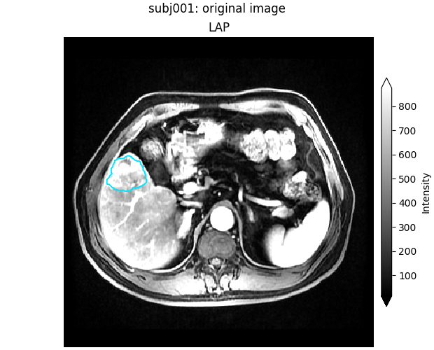
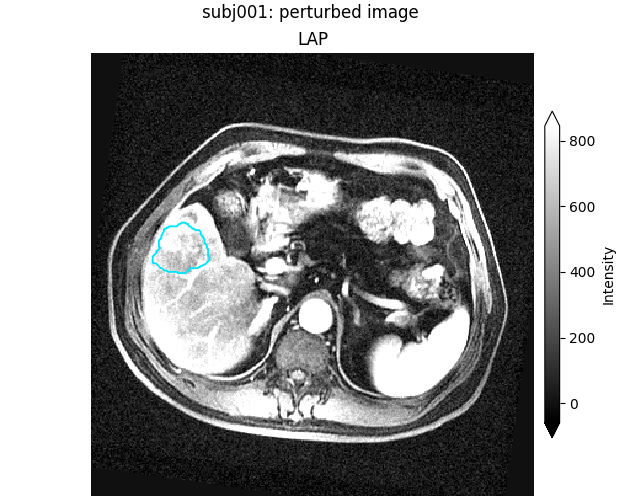
F:\work\habit_project\habit\viz\intensity.py:616: UserWarning: Display geometry conflict: image/anatomy direction does not match mask/label direction. Using the mask/label direction so coronal/sagittal superior-up follows the labelled anatomy. Pass direction= to override.
resolved_direction, resolved_spacing = resolve_display_geometry(
Part 1 — Self-screen demo (ICC LCL + Spearman; not for habitats)#
Same three experiments as the paper (repeatability, kernel radius,
bin width). Then Prior-style Spearman redundancy filter on one
subject’s LCL survivors: signed r > 0.7 and p < 0.05 drops the
earlier column and keeps the later one
(PreciseCorrelationFilter / select_precise_correlation_columns).
Caveat: n=5 is too small; do NOT use this whitelist for the habitat
comparison below.
LCL_THRESHOLD = 0.5
repeat_panels = []
kernel_panels = []
bin_panels = []
feat_r1_example = None
for orig_subj, pert_subj in zip(cohort, pert_cohort):
vol = orig_subj.image(MODALITIES[0])
vol_p = pert_subj.image(MODALITIES[0])
m = orig_subj.mask(ROI)
# Base setting: kernel_radius=1, bin_width=12 (same as habitat extract).
feat_r1 = extract_voxel_texture(vol, m, kernel_radius=1, bin_width=12)
feat_r3 = extract_voxel_texture(vol, m, kernel_radius=3, bin_width=12)
feat_b25 = extract_voxel_texture(vol, m, kernel_radius=1, bin_width=25)
feat_pert = extract_voxel_texture(vol_p, m, kernel_radius=1, bin_width=12)
if feat_r1_example is None:
feat_r1_example = feat_r1
repeat_panels.append(
precision_panel(
{"original": feat_r1, "perturbed": feat_pert},
agreement="absolute",
)
)
kernel_panels.append(
precision_panel({"R1": feat_r1, "R3": feat_r3}, agreement="consistency")
)
bin_panels.append(
precision_panel({"B12": feat_r1, "B25": feat_b25}, agreement="consistency")
)
assert feat_r1_example is not None
print("n features (all families):", len(feat_r1_example.feature_names))
demo_precise = identify_precise_features(
{
"repeatability": aggregate_panels(repeat_panels),
"reproducibility_kernel_radius": aggregate_panels(kernel_panels),
"reproducibility_bin_width": aggregate_panels(bin_panels),
},
lcl_threshold=LCL_THRESHOLD,
)
lcl_names: Tuple[str, ...] = tuple(demo_precise.feature_names)
print(f"self-screen LCL survivors (n={len(cohort)}): {len(lcl_names)}")
# Spearman on the first subject's LCL columns (Prior habitat filtering rule).
lcl_present = [n for n in lcl_names if n in feat_r1_example.feature_names]
spearman_demo = PreciseCorrelationFilter(corr_threshold=0.7, p_threshold=0.05)
demo_frame = feat_r1_example.feature_frame()[lcl_present]
spearman_kept: List[str] = list(spearman_demo.fit(demo_frame)["columns"])
print(
f"self-screen after Spearman (r>0.7, p<0.05, keep later column): "
f"{len(spearman_kept)} of {len(lcl_present)}"
)
print(
"CAVEAT: n=5 demo self-screen is unstable; "
"it is NOT used for the habitat comparison below."
)
voxel_radiomics: firstorder batch 1/35 0.602s peak=3MiB
voxel_radiomics: firstorder batch 2/35 0.018s peak=3MiB
voxel_radiomics: firstorder batch 3/35 0.020s peak=3MiB
voxel_radiomics: firstorder batch 4/35 0.016s peak=3MiB
voxel_radiomics: firstorder batch 5/35 0.016s peak=3MiB
voxel_radiomics: firstorder batch 6/35 0.020s peak=3MiB
voxel_radiomics: firstorder batch 7/35 0.015s peak=3MiB
voxel_radiomics: firstorder batch 8/35 0.015s peak=3MiB
voxel_radiomics: firstorder batch 9/35 0.021s peak=3MiB
voxel_radiomics: firstorder batch 10/35 0.019s peak=3MiB
voxel_radiomics: firstorder batch 11/35 0.018s peak=3MiB
voxel_radiomics: firstorder batch 12/35 0.015s peak=3MiB
voxel_radiomics: firstorder batch 13/35 0.022s peak=3MiB
voxel_radiomics: firstorder batch 14/35 0.016s peak=3MiB
voxel_radiomics: firstorder batch 15/35 0.017s peak=3MiB
voxel_radiomics: firstorder batch 16/35 0.018s peak=3MiB
voxel_radiomics: firstorder batch 17/35 0.016s peak=3MiB
voxel_radiomics: firstorder batch 18/35 0.023s peak=3MiB
voxel_radiomics: firstorder batch 19/35 0.016s peak=3MiB
voxel_radiomics: firstorder batch 20/35 0.016s peak=3MiB
voxel_radiomics: firstorder batch 21/35 0.016s peak=3MiB
voxel_radiomics: firstorder batch 22/35 0.015s peak=3MiB
voxel_radiomics: firstorder batch 23/35 0.018s peak=3MiB
voxel_radiomics: firstorder batch 24/35 0.016s peak=3MiB
voxel_radiomics: firstorder batch 25/35 0.018s peak=3MiB
voxel_radiomics: firstorder batch 26/35 0.016s peak=3MiB
voxel_radiomics: firstorder batch 27/35 0.018s peak=3MiB
voxel_radiomics: firstorder batch 28/35 0.013s peak=3MiB
voxel_radiomics: firstorder batch 29/35 0.020s peak=3MiB
voxel_radiomics: firstorder batch 30/35 0.016s peak=3MiB
voxel_radiomics: firstorder batch 31/35 0.018s peak=3MiB
voxel_radiomics: firstorder batch 32/35 0.024s peak=3MiB
voxel_radiomics: firstorder batch 33/35 0.017s peak=3MiB
voxel_radiomics: firstorder batch 34/35 0.019s peak=3MiB
voxel_radiomics: firstorder batch 35/35 0.015s peak=2MiB
voxel_radiomics: glcm batch 1/35 0.145s peak=1MiB
voxel_radiomics: glcm batch 2/35 0.029s peak=2MiB
voxel_radiomics: glcm batch 3/35 0.032s peak=3MiB
voxel_radiomics: glcm batch 4/35 0.031s peak=4MiB
voxel_radiomics: glcm batch 5/35 0.030s peak=4MiB
voxel_radiomics: glcm batch 6/35 0.033s peak=5MiB
voxel_radiomics: glcm batch 7/35 0.030s peak=6MiB
voxel_radiomics: glcm batch 8/35 0.029s peak=7MiB
voxel_radiomics: glcm batch 9/35 0.030s peak=8MiB
voxel_radiomics: glcm batch 10/35 0.025s peak=9MiB
voxel_radiomics: glcm batch 11/35 0.027s peak=10MiB
voxel_radiomics: glcm batch 12/35 0.026s peak=11MiB
voxel_radiomics: glcm batch 13/35 0.027s peak=12MiB
voxel_radiomics: glcm batch 14/35 0.026s peak=13MiB
voxel_radiomics: glcm batch 15/35 0.032s peak=13MiB
voxel_radiomics: glcm batch 16/35 0.028s peak=14MiB
voxel_radiomics: glcm batch 17/35 0.028s peak=15MiB
voxel_radiomics: glcm batch 18/35 0.027s peak=16MiB
voxel_radiomics: glcm batch 19/35 0.027s peak=17MiB
voxel_radiomics: glcm batch 20/35 0.028s peak=18MiB
voxel_radiomics: glcm batch 21/35 0.027s peak=19MiB
voxel_radiomics: glcm batch 22/35 0.027s peak=20MiB
voxel_radiomics: glcm batch 23/35 0.027s peak=21MiB
voxel_radiomics: glcm batch 24/35 0.025s peak=22MiB
voxel_radiomics: glcm batch 25/35 0.026s peak=22MiB
voxel_radiomics: glcm batch 26/35 0.026s peak=23MiB
voxel_radiomics: glcm batch 27/35 0.030s peak=24MiB
voxel_radiomics: glcm batch 28/35 0.032s peak=25MiB
voxel_radiomics: glcm batch 29/35 0.029s peak=26MiB
voxel_radiomics: glcm batch 30/35 0.031s peak=27MiB
voxel_radiomics: glcm batch 31/35 0.030s peak=28MiB
voxel_radiomics: glcm batch 32/35 0.026s peak=29MiB
voxel_radiomics: glcm batch 33/35 0.026s peak=30MiB
voxel_radiomics: glcm batch 34/35 0.028s peak=31MiB
voxel_radiomics: glcm batch 35/35 0.029s peak=31MiB
voxel_radiomics: glrlm batch 1/35 0.107s peak=32MiB
voxel_radiomics: glrlm batch 2/35 0.028s peak=33MiB
voxel_radiomics: glrlm batch 3/35 0.030s peak=34MiB
voxel_radiomics: glrlm batch 4/35 0.031s peak=35MiB
voxel_radiomics: glrlm batch 5/35 0.030s peak=36MiB
voxel_radiomics: glrlm batch 6/35 0.031s peak=37MiB
voxel_radiomics: glrlm batch 7/35 0.030s peak=38MiB
voxel_radiomics: glrlm batch 8/35 0.031s peak=39MiB
voxel_radiomics: glrlm batch 9/35 0.029s peak=40MiB
voxel_radiomics: glrlm batch 10/35 0.031s peak=40MiB
voxel_radiomics: glrlm batch 11/35 0.032s peak=41MiB
voxel_radiomics: glrlm batch 12/35 0.029s peak=42MiB
voxel_radiomics: glrlm batch 13/35 0.029s peak=43MiB
voxel_radiomics: glrlm batch 14/35 0.030s peak=44MiB
voxel_radiomics: glrlm batch 15/35 0.026s peak=45MiB
voxel_radiomics: glrlm batch 16/35 0.028s peak=46MiB
voxel_radiomics: glrlm batch 17/35 0.026s peak=47MiB
voxel_radiomics: glrlm batch 18/35 0.028s peak=48MiB
voxel_radiomics: glrlm batch 19/35 0.024s peak=49MiB
voxel_radiomics: glrlm batch 20/35 0.024s peak=49MiB
voxel_radiomics: glrlm batch 21/35 0.026s peak=50MiB
voxel_radiomics: glrlm batch 22/35 0.028s peak=51MiB
voxel_radiomics: glrlm batch 23/35 0.026s peak=52MiB
voxel_radiomics: glrlm batch 24/35 0.026s peak=53MiB
voxel_radiomics: glrlm batch 25/35 0.025s peak=54MiB
voxel_radiomics: glrlm batch 26/35 0.025s peak=55MiB
voxel_radiomics: glrlm batch 27/35 0.027s peak=56MiB
voxel_radiomics: glrlm batch 28/35 0.025s peak=57MiB
voxel_radiomics: glrlm batch 29/35 0.026s peak=58MiB
voxel_radiomics: glrlm batch 30/35 0.029s peak=1MiB
voxel_radiomics: glrlm batch 31/35 0.024s peak=2MiB
voxel_radiomics: glrlm batch 32/35 0.026s peak=3MiB
voxel_radiomics: glrlm batch 33/35 0.025s peak=4MiB
voxel_radiomics: glrlm batch 34/35 0.025s peak=4MiB
voxel_radiomics: glrlm batch 35/35 0.022s peak=5MiB
voxel_radiomics: glszm batch 1/35 0.041s peak=6MiB
voxel_radiomics: glszm batch 2/35 0.020s peak=7MiB
voxel_radiomics: glszm batch 3/35 0.021s peak=8MiB
voxel_radiomics: glszm batch 4/35 0.022s peak=9MiB
voxel_radiomics: glszm batch 5/35 0.021s peak=10MiB
voxel_radiomics: glszm batch 6/35 0.021s peak=11MiB
voxel_radiomics: glszm batch 7/35 0.026s peak=12MiB
voxel_radiomics: glszm batch 8/35 0.022s peak=13MiB
voxel_radiomics: glszm batch 9/35 0.036s peak=14MiB
voxel_radiomics: glszm batch 10/35 0.026s peak=14MiB
voxel_radiomics: glszm batch 11/35 0.043s peak=15MiB
voxel_radiomics: glszm batch 12/35 0.045s peak=16MiB
voxel_radiomics: glszm batch 13/35 0.049s peak=17MiB
voxel_radiomics: glszm batch 14/35 0.042s peak=18MiB
voxel_radiomics: glszm batch 15/35 0.034s peak=19MiB
voxel_radiomics: glszm batch 16/35 0.040s peak=20MiB
voxel_radiomics: glszm batch 17/35 0.047s peak=21MiB
voxel_radiomics: glszm batch 18/35 0.038s peak=22MiB
voxel_radiomics: glszm batch 19/35 0.041s peak=23MiB
voxel_radiomics: glszm batch 20/35 0.039s peak=23MiB
voxel_radiomics: glszm batch 21/35 0.045s peak=24MiB
voxel_radiomics: glszm batch 22/35 0.029s peak=25MiB
voxel_radiomics: glszm batch 23/35 0.058s peak=26MiB
voxel_radiomics: glszm batch 24/35 0.028s peak=27MiB
voxel_radiomics: glszm batch 25/35 0.042s peak=28MiB
voxel_radiomics: glszm batch 26/35 0.051s peak=29MiB
voxel_radiomics: glszm batch 27/35 0.051s peak=30MiB
voxel_radiomics: glszm batch 28/35 0.049s peak=31MiB
voxel_radiomics: glszm batch 29/35 0.047s peak=32MiB
voxel_radiomics: glszm batch 30/35 0.028s peak=32MiB
voxel_radiomics: glszm batch 31/35 0.051s peak=33MiB
voxel_radiomics: glszm batch 32/35 0.053s peak=34MiB
voxel_radiomics: glszm batch 33/35 0.042s peak=35MiB
voxel_radiomics: glszm batch 34/35 0.063s peak=36MiB
voxel_radiomics: glszm batch 35/35 0.057s peak=37MiB
voxel_radiomics: ngtdm batch 1/35 0.059s peak=41MiB
voxel_radiomics: ngtdm batch 2/35 0.067s peak=42MiB
voxel_radiomics: ngtdm batch 3/35 0.030s peak=42MiB
voxel_radiomics: ngtdm batch 4/35 0.042s peak=43MiB
voxel_radiomics: ngtdm batch 5/35 0.047s peak=44MiB
voxel_radiomics: ngtdm batch 6/35 0.072s peak=45MiB
voxel_radiomics: ngtdm batch 7/35 0.054s peak=47MiB
voxel_radiomics: ngtdm batch 8/35 0.049s peak=47MiB
voxel_radiomics: ngtdm batch 9/35 0.033s peak=48MiB
voxel_radiomics: ngtdm batch 10/35 0.044s peak=49MiB
voxel_radiomics: ngtdm batch 11/35 0.035s peak=50MiB
voxel_radiomics: ngtdm batch 12/35 0.048s peak=51MiB
voxel_radiomics: ngtdm batch 13/35 0.054s peak=52MiB
voxel_radiomics: ngtdm batch 14/35 0.050s peak=53MiB
voxel_radiomics: ngtdm batch 15/35 0.048s peak=53MiB
voxel_radiomics: ngtdm batch 16/35 0.056s peak=55MiB
voxel_radiomics: ngtdm batch 17/35 0.053s peak=55MiB
voxel_radiomics: ngtdm batch 18/35 0.047s peak=56MiB
voxel_radiomics: ngtdm batch 19/35 0.031s peak=57MiB
voxel_radiomics: ngtdm batch 20/35 0.061s peak=58MiB
voxel_radiomics: ngtdm batch 21/35 0.046s peak=59MiB
voxel_radiomics: ngtdm batch 22/35 0.033s peak=60MiB
voxel_radiomics: ngtdm batch 23/35 0.063s peak=61MiB
voxel_radiomics: ngtdm batch 24/35 0.053s peak=4MiB
voxel_radiomics: ngtdm batch 25/35 0.062s peak=5MiB
voxel_radiomics: ngtdm batch 26/35 0.052s peak=6MiB
voxel_radiomics: ngtdm batch 27/35 0.059s peak=7MiB
voxel_radiomics: ngtdm batch 28/35 0.063s peak=8MiB
voxel_radiomics: ngtdm batch 29/35 0.052s peak=9MiB
voxel_radiomics: ngtdm batch 30/35 0.053s peak=10MiB
voxel_radiomics: ngtdm batch 31/35 0.052s peak=10MiB
voxel_radiomics: ngtdm batch 32/35 0.047s peak=11MiB
voxel_radiomics: ngtdm batch 33/35 0.045s peak=12MiB
voxel_radiomics: ngtdm batch 34/35 0.043s peak=12MiB
voxel_radiomics: ngtdm batch 35/35 0.042s peak=12MiB
voxel_radiomics: gldm batch 1/35 0.046s peak=18MiB
voxel_radiomics: gldm batch 2/35 0.043s peak=21MiB
voxel_radiomics: gldm batch 3/35 0.041s peak=22MiB
voxel_radiomics: gldm batch 4/35 0.040s peak=22MiB
voxel_radiomics: gldm batch 5/35 0.027s peak=24MiB
voxel_radiomics: gldm batch 6/35 0.035s peak=24MiB
voxel_radiomics: gldm batch 7/35 0.047s peak=24MiB
voxel_radiomics: gldm batch 8/35 0.035s peak=25MiB
voxel_radiomics: gldm batch 9/35 0.050s peak=27MiB
voxel_radiomics: gldm batch 10/35 0.044s peak=27MiB
voxel_radiomics: gldm batch 11/35 0.047s peak=29MiB
voxel_radiomics: gldm batch 12/35 0.044s peak=31MiB
voxel_radiomics: gldm batch 13/35 0.034s peak=31MiB
voxel_radiomics: gldm batch 14/35 0.044s peak=31MiB
voxel_radiomics: gldm batch 15/35 0.025s peak=34MiB
voxel_radiomics: gldm batch 16/35 0.040s peak=36MiB
voxel_radiomics: gldm batch 17/35 0.037s peak=35MiB
voxel_radiomics: gldm batch 18/35 0.033s peak=37MiB
voxel_radiomics: gldm batch 19/35 0.036s peak=38MiB
voxel_radiomics: gldm batch 20/35 0.034s peak=38MiB
voxel_radiomics: gldm batch 21/35 0.031s peak=40MiB
voxel_radiomics: gldm batch 22/35 0.031s peak=40MiB
voxel_radiomics: gldm batch 23/35 0.028s peak=41MiB
voxel_radiomics: gldm batch 24/35 0.028s peak=42MiB
voxel_radiomics: gldm batch 25/35 0.022s peak=43MiB
voxel_radiomics: gldm batch 26/35 0.017s peak=43MiB
voxel_radiomics: gldm batch 27/35 0.023s peak=44MiB
voxel_radiomics: gldm batch 28/35 0.022s peak=45MiB
voxel_radiomics: gldm batch 29/35 0.021s peak=44MiB
voxel_radiomics: gldm batch 30/35 0.020s peak=45MiB
voxel_radiomics: gldm batch 31/35 0.022s peak=46MiB
voxel_radiomics: gldm batch 32/35 0.021s peak=47MiB
voxel_radiomics: gldm batch 33/35 0.022s peak=50MiB
voxel_radiomics: gldm batch 34/35 0.020s peak=51MiB
voxel_radiomics: gldm batch 35/35 0.021s peak=49MiB
voxel_radiomics: firstorder batch 1/35 0.029s peak=48MiB
voxel_radiomics: firstorder batch 2/35 0.020s peak=48MiB
voxel_radiomics: firstorder batch 3/35 0.018s peak=48MiB
voxel_radiomics: firstorder batch 4/35 0.016s peak=48MiB
voxel_radiomics: firstorder batch 5/35 0.019s peak=48MiB
voxel_radiomics: firstorder batch 6/35 0.017s peak=48MiB
voxel_radiomics: firstorder batch 7/35 0.020s peak=48MiB
voxel_radiomics: firstorder batch 8/35 0.020s peak=48MiB
voxel_radiomics: firstorder batch 9/35 0.021s peak=48MiB
voxel_radiomics: firstorder batch 10/35 0.028s peak=48MiB
voxel_radiomics: firstorder batch 11/35 0.020s peak=48MiB
voxel_radiomics: firstorder batch 12/35 0.017s peak=48MiB
voxel_radiomics: firstorder batch 13/35 0.018s peak=48MiB
voxel_radiomics: firstorder batch 14/35 0.016s peak=48MiB
voxel_radiomics: firstorder batch 15/35 0.016s peak=48MiB
voxel_radiomics: firstorder batch 16/35 0.017s peak=48MiB
voxel_radiomics: firstorder batch 17/35 0.016s peak=48MiB
voxel_radiomics: firstorder batch 18/35 0.017s peak=48MiB
voxel_radiomics: firstorder batch 19/35 0.018s peak=48MiB
voxel_radiomics: firstorder batch 20/35 0.016s peak=48MiB
voxel_radiomics: firstorder batch 21/35 0.017s peak=48MiB
voxel_radiomics: firstorder batch 22/35 0.017s peak=48MiB
voxel_radiomics: firstorder batch 23/35 0.015s peak=48MiB
voxel_radiomics: firstorder batch 24/35 0.016s peak=48MiB
voxel_radiomics: firstorder batch 25/35 0.020s peak=48MiB
voxel_radiomics: firstorder batch 26/35 0.018s peak=48MiB
voxel_radiomics: firstorder batch 27/35 0.020s peak=48MiB
voxel_radiomics: firstorder batch 28/35 0.020s peak=48MiB
voxel_radiomics: firstorder batch 29/35 0.024s peak=48MiB
voxel_radiomics: firstorder batch 30/35 0.020s peak=48MiB
voxel_radiomics: firstorder batch 31/35 0.018s peak=48MiB
voxel_radiomics: firstorder batch 32/35 0.019s peak=48MiB
voxel_radiomics: firstorder batch 33/35 0.025s peak=48MiB
voxel_radiomics: firstorder batch 34/35 0.015s peak=48MiB
voxel_radiomics: firstorder batch 35/35 0.016s peak=47MiB
voxel_radiomics: glcm batch 1/35 0.078s peak=43MiB
voxel_radiomics: glcm batch 2/35 0.074s peak=45MiB
voxel_radiomics: glcm batch 3/35 0.071s peak=46MiB
voxel_radiomics: glcm batch 4/35 0.074s peak=47MiB
voxel_radiomics: glcm batch 5/35 0.073s peak=48MiB
voxel_radiomics: glcm batch 6/35 0.072s peak=49MiB
voxel_radiomics: glcm batch 7/35 0.068s peak=50MiB
voxel_radiomics: glcm batch 8/35 0.073s peak=52MiB
voxel_radiomics: glcm batch 9/35 0.072s peak=53MiB
voxel_radiomics: glcm batch 10/35 0.073s peak=54MiB
voxel_radiomics: glcm batch 11/35 0.074s peak=55MiB
voxel_radiomics: glcm batch 12/35 0.072s peak=56MiB
voxel_radiomics: glcm batch 13/35 0.071s peak=57MiB
voxel_radiomics: glcm batch 14/35 0.064s peak=58MiB
voxel_radiomics: glcm batch 15/35 0.064s peak=60MiB
voxel_radiomics: glcm batch 16/35 0.076s peak=61MiB
voxel_radiomics: glcm batch 17/35 0.074s peak=62MiB
voxel_radiomics: glcm batch 18/35 0.071s peak=1MiB
voxel_radiomics: glcm batch 19/35 0.076s peak=2MiB
voxel_radiomics: glcm batch 20/35 0.076s peak=4MiB
voxel_radiomics: glcm batch 21/35 0.072s peak=5MiB
voxel_radiomics: glcm batch 22/35 0.074s peak=6MiB
voxel_radiomics: glcm batch 23/35 0.071s peak=7MiB
voxel_radiomics: glcm batch 24/35 0.071s peak=8MiB
voxel_radiomics: glcm batch 25/35 0.068s peak=9MiB
voxel_radiomics: glcm batch 26/35 0.071s peak=10MiB
voxel_radiomics: glcm batch 27/35 0.071s peak=12MiB
voxel_radiomics: glcm batch 28/35 0.071s peak=13MiB
voxel_radiomics: glcm batch 29/35 0.065s peak=14MiB
voxel_radiomics: glcm batch 30/35 0.068s peak=15MiB
voxel_radiomics: glcm batch 31/35 0.061s peak=16MiB
voxel_radiomics: glcm batch 32/35 0.069s peak=17MiB
voxel_radiomics: glcm batch 33/35 0.064s peak=18MiB
voxel_radiomics: glcm batch 34/35 0.068s peak=20MiB
voxel_radiomics: glcm batch 35/35 0.041s peak=21MiB
voxel_radiomics: glrlm batch 1/35 0.076s peak=22MiB
voxel_radiomics: glrlm batch 2/35 0.077s peak=23MiB
voxel_radiomics: glrlm batch 3/35 0.088s peak=24MiB
voxel_radiomics: glrlm batch 4/35 0.087s peak=25MiB
voxel_radiomics: glrlm batch 5/35 0.089s peak=27MiB
voxel_radiomics: glrlm batch 6/35 0.090s peak=28MiB
voxel_radiomics: glrlm batch 7/35 0.086s peak=29MiB
voxel_radiomics: glrlm batch 8/35 0.087s peak=30MiB
voxel_radiomics: glrlm batch 9/35 0.096s peak=31MiB
voxel_radiomics: glrlm batch 10/35 0.083s peak=32MiB
voxel_radiomics: glrlm batch 11/35 0.145s peak=33MiB
voxel_radiomics: glrlm batch 12/35 0.093s peak=35MiB
voxel_radiomics: glrlm batch 13/35 0.090s peak=36MiB
voxel_radiomics: glrlm batch 14/35 0.099s peak=37MiB
voxel_radiomics: glrlm batch 15/35 0.102s peak=38MiB
voxel_radiomics: glrlm batch 16/35 0.097s peak=39MiB
voxel_radiomics: glrlm batch 17/35 0.096s peak=40MiB
voxel_radiomics: glrlm batch 18/35 0.098s peak=41MiB
voxel_radiomics: glrlm batch 19/35 0.097s peak=43MiB
voxel_radiomics: glrlm batch 20/35 0.095s peak=44MiB
voxel_radiomics: glrlm batch 21/35 0.093s peak=45MiB
voxel_radiomics: glrlm batch 22/35 0.090s peak=46MiB
voxel_radiomics: glrlm batch 23/35 0.090s peak=47MiB
voxel_radiomics: glrlm batch 24/35 0.097s peak=48MiB
voxel_radiomics: glrlm batch 25/35 0.092s peak=50MiB
voxel_radiomics: glrlm batch 26/35 0.094s peak=51MiB
voxel_radiomics: glrlm batch 27/35 0.090s peak=52MiB
voxel_radiomics: glrlm batch 28/35 0.090s peak=53MiB
voxel_radiomics: glrlm batch 29/35 0.091s peak=54MiB
voxel_radiomics: glrlm batch 30/35 0.083s peak=55MiB
voxel_radiomics: glrlm batch 31/35 0.082s peak=56MiB
voxel_radiomics: glrlm batch 32/35 0.091s peak=58MiB
voxel_radiomics: glrlm batch 33/35 0.092s peak=59MiB
voxel_radiomics: glrlm batch 34/35 0.080s peak=60MiB
voxel_radiomics: glrlm batch 35/35 0.056s peak=61MiB
voxel_radiomics: glszm batch 1/35 0.049s peak=64MiB
voxel_radiomics: glszm batch 2/35 0.050s peak=65MiB
voxel_radiomics: glszm batch 3/35 0.052s peak=66MiB
voxel_radiomics: glszm batch 4/35 0.052s peak=67MiB
voxel_radiomics: glszm batch 5/35 0.053s peak=68MiB
voxel_radiomics: glszm batch 6/35 0.059s peak=70MiB
voxel_radiomics: glszm batch 7/35 0.055s peak=71MiB
voxel_radiomics: glszm batch 8/35 0.053s peak=72MiB
voxel_radiomics: glszm batch 9/35 0.057s peak=73MiB
voxel_radiomics: glszm batch 10/35 0.056s peak=74MiB
voxel_radiomics: glszm batch 11/35 0.052s peak=75MiB
voxel_radiomics: glszm batch 12/35 0.048s peak=3MiB
voxel_radiomics: glszm batch 13/35 0.051s peak=4MiB
voxel_radiomics: glszm batch 14/35 0.054s peak=5MiB
voxel_radiomics: glszm batch 15/35 0.053s peak=6MiB
voxel_radiomics: glszm batch 16/35 0.050s peak=7MiB
voxel_radiomics: glszm batch 17/35 0.046s peak=9MiB
voxel_radiomics: glszm batch 18/35 0.049s peak=10MiB
voxel_radiomics: glszm batch 19/35 0.055s peak=11MiB
voxel_radiomics: glszm batch 20/35 0.052s peak=12MiB
voxel_radiomics: glszm batch 21/35 0.048s peak=13MiB
voxel_radiomics: glszm batch 22/35 0.055s peak=14MiB
voxel_radiomics: glszm batch 23/35 0.048s peak=15MiB
voxel_radiomics: glszm batch 24/35 0.047s peak=17MiB
voxel_radiomics: glszm batch 25/35 0.048s peak=18MiB
voxel_radiomics: glszm batch 26/35 0.048s peak=19MiB
voxel_radiomics: glszm batch 27/35 0.041s peak=20MiB
voxel_radiomics: glszm batch 28/35 0.045s peak=21MiB
voxel_radiomics: glszm batch 29/35 0.055s peak=22MiB
voxel_radiomics: glszm batch 30/35 0.054s peak=24MiB
voxel_radiomics: glszm batch 31/35 0.051s peak=25MiB
voxel_radiomics: glszm batch 32/35 0.048s peak=26MiB
voxel_radiomics: glszm batch 33/35 0.058s peak=27MiB
voxel_radiomics: glszm batch 34/35 0.048s peak=28MiB
voxel_radiomics: glszm batch 35/35 0.038s peak=29MiB
voxel_radiomics: ngtdm batch 1/35 0.028s peak=32MiB
voxel_radiomics: ngtdm batch 2/35 0.029s peak=33MiB
voxel_radiomics: ngtdm batch 3/35 0.035s peak=35MiB
voxel_radiomics: ngtdm batch 4/35 0.035s peak=36MiB
voxel_radiomics: ngtdm batch 5/35 0.035s peak=37MiB
voxel_radiomics: ngtdm batch 6/35 0.035s peak=38MiB
voxel_radiomics: ngtdm batch 7/35 0.035s peak=40MiB
voxel_radiomics: ngtdm batch 8/35 0.035s peak=41MiB
voxel_radiomics: ngtdm batch 9/35 0.031s peak=42MiB
voxel_radiomics: ngtdm batch 10/35 0.034s peak=43MiB
voxel_radiomics: ngtdm batch 11/35 0.035s peak=44MiB
voxel_radiomics: ngtdm batch 12/35 0.038s peak=45MiB
voxel_radiomics: ngtdm batch 13/35 0.040s peak=46MiB
voxel_radiomics: ngtdm batch 14/35 0.041s peak=48MiB
voxel_radiomics: ngtdm batch 15/35 0.036s peak=49MiB
voxel_radiomics: ngtdm batch 16/35 0.035s peak=50MiB
voxel_radiomics: ngtdm batch 17/35 0.036s peak=51MiB
voxel_radiomics: ngtdm batch 18/35 0.035s peak=52MiB
voxel_radiomics: ngtdm batch 19/35 0.030s peak=53MiB
voxel_radiomics: ngtdm batch 20/35 0.033s peak=55MiB
voxel_radiomics: ngtdm batch 21/35 0.031s peak=56MiB
voxel_radiomics: ngtdm batch 22/35 0.034s peak=57MiB
voxel_radiomics: ngtdm batch 23/35 0.033s peak=58MiB
voxel_radiomics: ngtdm batch 24/35 0.031s peak=59MiB
voxel_radiomics: ngtdm batch 25/35 0.035s peak=60MiB
voxel_radiomics: ngtdm batch 26/35 0.037s peak=62MiB
voxel_radiomics: ngtdm batch 27/35 0.034s peak=63MiB
voxel_radiomics: ngtdm batch 28/35 0.030s peak=64MiB
voxel_radiomics: ngtdm batch 29/35 0.030s peak=65MiB
voxel_radiomics: ngtdm batch 30/35 0.034s peak=66MiB
voxel_radiomics: ngtdm batch 31/35 0.028s peak=67MiB
voxel_radiomics: ngtdm batch 32/35 0.026s peak=68MiB
voxel_radiomics: ngtdm batch 33/35 0.027s peak=69MiB
voxel_radiomics: ngtdm batch 34/35 0.027s peak=70MiB
voxel_radiomics: ngtdm batch 35/35 0.026s peak=70MiB
voxel_radiomics: gldm batch 1/35 0.026s peak=78MiB
voxel_radiomics: gldm batch 2/35 0.024s peak=80MiB
voxel_radiomics: gldm batch 3/35 0.025s peak=82MiB
voxel_radiomics: gldm batch 4/35 0.023s peak=83MiB
voxel_radiomics: gldm batch 5/35 0.024s peak=84MiB
voxel_radiomics: gldm batch 6/35 0.022s peak=10MiB
voxel_radiomics: gldm batch 7/35 0.021s peak=11MiB
voxel_radiomics: gldm batch 8/35 0.022s peak=12MiB
voxel_radiomics: gldm batch 9/35 0.024s peak=15MiB
voxel_radiomics: gldm batch 10/35 0.025s peak=14MiB
voxel_radiomics: gldm batch 11/35 0.025s peak=17MiB
voxel_radiomics: gldm batch 12/35 0.025s peak=19MiB
voxel_radiomics: gldm batch 13/35 0.023s peak=21MiB
voxel_radiomics: gldm batch 14/35 0.023s peak=23MiB
voxel_radiomics: gldm batch 15/35 0.023s peak=24MiB
voxel_radiomics: gldm batch 16/35 0.023s peak=25MiB
voxel_radiomics: gldm batch 17/35 0.021s peak=26MiB
voxel_radiomics: gldm batch 18/35 0.026s peak=27MiB
voxel_radiomics: gldm batch 19/35 0.022s peak=28MiB
voxel_radiomics: gldm batch 20/35 0.021s peak=29MiB
voxel_radiomics: gldm batch 21/35 0.019s peak=30MiB
voxel_radiomics: gldm batch 22/35 0.020s peak=31MiB
voxel_radiomics: gldm batch 23/35 0.020s peak=32MiB
voxel_radiomics: gldm batch 24/35 0.023s peak=34MiB
voxel_radiomics: gldm batch 25/35 0.036s peak=35MiB
voxel_radiomics: gldm batch 26/35 0.026s peak=36MiB
voxel_radiomics: gldm batch 27/35 0.026s peak=37MiB
voxel_radiomics: gldm batch 28/35 0.028s peak=38MiB
voxel_radiomics: gldm batch 29/35 0.032s peak=38MiB
voxel_radiomics: gldm batch 30/35 0.027s peak=38MiB
voxel_radiomics: gldm batch 31/35 0.025s peak=40MiB
voxel_radiomics: gldm batch 32/35 0.026s peak=42MiB
voxel_radiomics: gldm batch 33/35 0.031s peak=43MiB
voxel_radiomics: gldm batch 34/35 0.024s peak=45MiB
voxel_radiomics: gldm batch 35/35 0.020s peak=42MiB
voxel_radiomics: firstorder batch 1/35 0.011s peak=38MiB
voxel_radiomics: firstorder batch 2/35 0.010s peak=38MiB
voxel_radiomics: firstorder batch 3/35 0.010s peak=38MiB
voxel_radiomics: firstorder batch 4/35 0.010s peak=38MiB
voxel_radiomics: firstorder batch 5/35 0.010s peak=38MiB
voxel_radiomics: firstorder batch 6/35 0.010s peak=38MiB
voxel_radiomics: firstorder batch 7/35 0.010s peak=38MiB
voxel_radiomics: firstorder batch 8/35 0.011s peak=38MiB
voxel_radiomics: firstorder batch 9/35 0.011s peak=38MiB
voxel_radiomics: firstorder batch 10/35 0.014s peak=38MiB
voxel_radiomics: firstorder batch 11/35 0.014s peak=38MiB
voxel_radiomics: firstorder batch 12/35 0.015s peak=38MiB
voxel_radiomics: firstorder batch 13/35 0.016s peak=38MiB
voxel_radiomics: firstorder batch 14/35 0.017s peak=38MiB
voxel_radiomics: firstorder batch 15/35 0.017s peak=38MiB
voxel_radiomics: firstorder batch 16/35 0.017s peak=38MiB
voxel_radiomics: firstorder batch 17/35 0.015s peak=38MiB
voxel_radiomics: firstorder batch 18/35 0.017s peak=38MiB
voxel_radiomics: firstorder batch 19/35 0.020s peak=38MiB
voxel_radiomics: firstorder batch 20/35 0.021s peak=38MiB
voxel_radiomics: firstorder batch 21/35 0.015s peak=38MiB
voxel_radiomics: firstorder batch 22/35 0.018s peak=38MiB
voxel_radiomics: firstorder batch 23/35 0.014s peak=38MiB
voxel_radiomics: firstorder batch 24/35 0.014s peak=38MiB
voxel_radiomics: firstorder batch 25/35 0.015s peak=38MiB
voxel_radiomics: firstorder batch 26/35 0.013s peak=38MiB
voxel_radiomics: firstorder batch 27/35 0.013s peak=38MiB
voxel_radiomics: firstorder batch 28/35 0.013s peak=38MiB
voxel_radiomics: firstorder batch 29/35 0.013s peak=38MiB
voxel_radiomics: firstorder batch 30/35 0.014s peak=38MiB
voxel_radiomics: firstorder batch 31/35 0.011s peak=38MiB
voxel_radiomics: firstorder batch 32/35 0.010s peak=38MiB
voxel_radiomics: firstorder batch 33/35 0.010s peak=38MiB
voxel_radiomics: firstorder batch 34/35 0.010s peak=38MiB
voxel_radiomics: firstorder batch 35/35 0.010s peak=38MiB
voxel_radiomics: glcm batch 1/35 0.023s peak=36MiB
voxel_radiomics: glcm batch 2/35 0.021s peak=37MiB
voxel_radiomics: glcm batch 3/35 0.021s peak=38MiB
voxel_radiomics: glcm batch 4/35 0.021s peak=39MiB
voxel_radiomics: glcm batch 5/35 0.021s peak=40MiB
voxel_radiomics: glcm batch 6/35 0.020s peak=41MiB
voxel_radiomics: glcm batch 7/35 0.018s peak=42MiB
voxel_radiomics: glcm batch 8/35 0.020s peak=43MiB
voxel_radiomics: glcm batch 9/35 0.020s peak=44MiB
voxel_radiomics: glcm batch 10/35 0.022s peak=44MiB
voxel_radiomics: glcm batch 11/35 0.025s peak=45MiB
voxel_radiomics: glcm batch 12/35 0.023s peak=46MiB
voxel_radiomics: glcm batch 13/35 0.020s peak=47MiB
voxel_radiomics: glcm batch 14/35 0.020s peak=48MiB
voxel_radiomics: glcm batch 15/35 0.019s peak=49MiB
voxel_radiomics: glcm batch 16/35 0.020s peak=50MiB
voxel_radiomics: glcm batch 17/35 0.021s peak=51MiB
voxel_radiomics: glcm batch 18/35 0.021s peak=52MiB
voxel_radiomics: glcm batch 19/35 0.023s peak=52MiB
voxel_radiomics: glcm batch 20/35 0.025s peak=53MiB
voxel_radiomics: glcm batch 21/35 0.022s peak=54MiB
voxel_radiomics: glcm batch 22/35 0.021s peak=55MiB
voxel_radiomics: glcm batch 23/35 0.021s peak=56MiB
voxel_radiomics: glcm batch 24/35 0.023s peak=57MiB
voxel_radiomics: glcm batch 25/35 0.021s peak=58MiB
voxel_radiomics: glcm batch 26/35 0.021s peak=59MiB
voxel_radiomics: glcm batch 27/35 0.021s peak=60MiB
voxel_radiomics: glcm batch 28/35 0.021s peak=61MiB
voxel_radiomics: glcm batch 29/35 0.022s peak=61MiB
voxel_radiomics: glcm batch 30/35 0.021s peak=62MiB
voxel_radiomics: glcm batch 31/35 0.021s peak=63MiB
voxel_radiomics: glcm batch 32/35 0.023s peak=64MiB
voxel_radiomics: glcm batch 33/35 0.020s peak=65MiB
voxel_radiomics: glcm batch 34/35 0.021s peak=66MiB
voxel_radiomics: glcm batch 35/35 0.020s peak=2MiB
voxel_radiomics: glrlm batch 1/35 0.021s peak=3MiB
voxel_radiomics: glrlm batch 2/35 0.020s peak=4MiB
voxel_radiomics: glrlm batch 3/35 0.020s peak=4MiB
voxel_radiomics: glrlm batch 4/35 0.019s peak=5MiB
voxel_radiomics: glrlm batch 5/35 0.021s peak=6MiB
voxel_radiomics: glrlm batch 6/35 0.020s peak=7MiB
voxel_radiomics: glrlm batch 7/35 0.021s peak=8MiB
voxel_radiomics: glrlm batch 8/35 0.023s peak=9MiB
voxel_radiomics: glrlm batch 9/35 0.021s peak=10MiB
voxel_radiomics: glrlm batch 10/35 0.021s peak=11MiB
voxel_radiomics: glrlm batch 11/35 0.040s peak=12MiB
voxel_radiomics: glrlm batch 12/35 0.027s peak=13MiB
voxel_radiomics: glrlm batch 13/35 0.022s peak=13MiB
voxel_radiomics: glrlm batch 14/35 0.025s peak=14MiB
voxel_radiomics: glrlm batch 15/35 0.041s peak=15MiB
voxel_radiomics: glrlm batch 16/35 0.034s peak=16MiB
voxel_radiomics: glrlm batch 17/35 0.031s peak=17MiB
voxel_radiomics: glrlm batch 18/35 0.031s peak=18MiB
voxel_radiomics: glrlm batch 19/35 0.031s peak=19MiB
voxel_radiomics: glrlm batch 20/35 0.034s peak=20MiB
voxel_radiomics: glrlm batch 21/35 0.033s peak=21MiB
voxel_radiomics: glrlm batch 22/35 0.029s peak=22MiB
voxel_radiomics: glrlm batch 23/35 0.039s peak=22MiB
voxel_radiomics: glrlm batch 24/35 0.035s peak=23MiB
voxel_radiomics: glrlm batch 25/35 0.037s peak=24MiB
voxel_radiomics: glrlm batch 26/35 0.033s peak=25MiB
voxel_radiomics: glrlm batch 27/35 0.030s peak=26MiB
voxel_radiomics: glrlm batch 28/35 0.033s peak=27MiB
voxel_radiomics: glrlm batch 29/35 0.034s peak=28MiB
voxel_radiomics: glrlm batch 30/35 0.039s peak=29MiB
voxel_radiomics: glrlm batch 31/35 0.030s peak=30MiB
voxel_radiomics: glrlm batch 32/35 0.035s peak=31MiB
voxel_radiomics: glrlm batch 33/35 0.032s peak=31MiB
voxel_radiomics: glrlm batch 34/35 0.032s peak=32MiB
voxel_radiomics: glrlm batch 35/35 0.029s peak=33MiB
voxel_radiomics: glszm batch 1/35 0.025s peak=33MiB
voxel_radiomics: glszm batch 2/35 0.024s peak=34MiB
voxel_radiomics: glszm batch 3/35 0.024s peak=35MiB
voxel_radiomics: glszm batch 4/35 0.021s peak=36MiB
voxel_radiomics: glszm batch 5/35 0.018s peak=37MiB
voxel_radiomics: glszm batch 6/35 0.018s peak=38MiB
voxel_radiomics: glszm batch 7/35 0.017s peak=39MiB
voxel_radiomics: glszm batch 8/35 0.016s peak=40MiB
voxel_radiomics: glszm batch 9/35 0.016s peak=41MiB
voxel_radiomics: glszm batch 10/35 0.017s peak=41MiB
voxel_radiomics: glszm batch 11/35 0.016s peak=42MiB
voxel_radiomics: glszm batch 12/35 0.015s peak=43MiB
voxel_radiomics: glszm batch 13/35 0.016s peak=44MiB
voxel_radiomics: glszm batch 14/35 0.016s peak=45MiB
voxel_radiomics: glszm batch 15/35 0.017s peak=46MiB
voxel_radiomics: glszm batch 16/35 0.016s peak=47MiB
voxel_radiomics: glszm batch 17/35 0.015s peak=48MiB
voxel_radiomics: glszm batch 18/35 0.018s peak=49MiB
voxel_radiomics: glszm batch 19/35 0.016s peak=50MiB
voxel_radiomics: glszm batch 20/35 0.017s peak=50MiB
voxel_radiomics: glszm batch 21/35 0.019s peak=51MiB
voxel_radiomics: glszm batch 22/35 0.020s peak=52MiB
voxel_radiomics: glszm batch 23/35 0.022s peak=53MiB
voxel_radiomics: glszm batch 24/35 0.023s peak=54MiB
voxel_radiomics: glszm batch 25/35 0.024s peak=55MiB
voxel_radiomics: glszm batch 26/35 0.026s peak=56MiB
voxel_radiomics: glszm batch 27/35 0.029s peak=57MiB
voxel_radiomics: glszm batch 28/35 0.048s peak=58MiB
voxel_radiomics: glszm batch 29/35 0.032s peak=1MiB
voxel_radiomics: glszm batch 30/35 0.025s peak=2MiB
voxel_radiomics: glszm batch 31/35 0.027s peak=3MiB
voxel_radiomics: glszm batch 32/35 0.026s peak=4MiB
voxel_radiomics: glszm batch 33/35 0.021s peak=5MiB
voxel_radiomics: glszm batch 34/35 0.020s peak=5MiB
voxel_radiomics: glszm batch 35/35 0.019s peak=6MiB
voxel_radiomics: ngtdm batch 1/35 0.012s peak=9MiB
voxel_radiomics: ngtdm batch 2/35 0.012s peak=10MiB
voxel_radiomics: ngtdm batch 3/35 0.011s peak=10MiB
voxel_radiomics: ngtdm batch 4/35 0.013s peak=11MiB
voxel_radiomics: ngtdm batch 5/35 0.012s peak=12MiB
voxel_radiomics: ngtdm batch 6/35 0.013s peak=13MiB
voxel_radiomics: ngtdm batch 7/35 0.012s peak=14MiB
voxel_radiomics: ngtdm batch 8/35 0.013s peak=15MiB
voxel_radiomics: ngtdm batch 9/35 0.012s peak=16MiB
voxel_radiomics: ngtdm batch 10/35 0.015s peak=17MiB
voxel_radiomics: ngtdm batch 11/35 0.016s peak=18MiB
voxel_radiomics: ngtdm batch 12/35 0.016s peak=19MiB
voxel_radiomics: ngtdm batch 13/35 0.018s peak=20MiB
voxel_radiomics: ngtdm batch 14/35 0.016s peak=20MiB
voxel_radiomics: ngtdm batch 15/35 0.017s peak=21MiB
voxel_radiomics: ngtdm batch 16/35 0.019s peak=22MiB
voxel_radiomics: ngtdm batch 17/35 0.018s peak=23MiB
voxel_radiomics: ngtdm batch 18/35 0.016s peak=24MiB
voxel_radiomics: ngtdm batch 19/35 0.025s peak=25MiB
voxel_radiomics: ngtdm batch 20/35 0.021s peak=26MiB
voxel_radiomics: ngtdm batch 21/35 0.021s peak=27MiB
voxel_radiomics: ngtdm batch 22/35 0.022s peak=28MiB
voxel_radiomics: ngtdm batch 23/35 0.027s peak=29MiB
voxel_radiomics: ngtdm batch 24/35 0.026s peak=30MiB
voxel_radiomics: ngtdm batch 25/35 0.021s peak=30MiB
voxel_radiomics: ngtdm batch 26/35 0.020s peak=31MiB
voxel_radiomics: ngtdm batch 27/35 0.025s peak=32MiB
voxel_radiomics: ngtdm batch 28/35 0.025s peak=33MiB
voxel_radiomics: ngtdm batch 29/35 0.025s peak=34MiB
voxel_radiomics: ngtdm batch 30/35 0.019s peak=35MiB
voxel_radiomics: ngtdm batch 31/35 0.021s peak=36MiB
voxel_radiomics: ngtdm batch 32/35 0.023s peak=37MiB
voxel_radiomics: ngtdm batch 33/35 0.021s peak=37MiB
voxel_radiomics: ngtdm batch 34/35 0.018s peak=38MiB
voxel_radiomics: ngtdm batch 35/35 0.015s peak=39MiB
voxel_radiomics: gldm batch 1/35 0.022s peak=43MiB
voxel_radiomics: gldm batch 2/35 0.017s peak=45MiB
voxel_radiomics: gldm batch 3/35 0.021s peak=47MiB
voxel_radiomics: gldm batch 4/35 0.023s peak=47MiB
voxel_radiomics: gldm batch 5/35 0.020s peak=48MiB
voxel_radiomics: gldm batch 6/35 0.020s peak=49MiB
voxel_radiomics: gldm batch 7/35 0.018s peak=49MiB
voxel_radiomics: gldm batch 8/35 0.019s peak=51MiB
voxel_radiomics: gldm batch 9/35 0.017s peak=52MiB
voxel_radiomics: gldm batch 10/35 0.019s peak=53MiB
voxel_radiomics: gldm batch 11/35 0.017s peak=53MiB
voxel_radiomics: gldm batch 12/35 0.016s peak=55MiB
voxel_radiomics: gldm batch 13/35 0.017s peak=56MiB
voxel_radiomics: gldm batch 14/35 0.016s peak=57MiB
voxel_radiomics: gldm batch 15/35 0.016s peak=60MiB
voxel_radiomics: gldm batch 16/35 0.020s peak=59MiB
voxel_radiomics: gldm batch 17/35 0.019s peak=61MiB
voxel_radiomics: gldm batch 18/35 0.016s peak=61MiB
voxel_radiomics: gldm batch 19/35 0.018s peak=63MiB
voxel_radiomics: gldm batch 20/35 0.017s peak=63MiB
voxel_radiomics: gldm batch 21/35 0.020s peak=64MiB
voxel_radiomics: gldm batch 22/35 0.017s peak=65MiB
voxel_radiomics: gldm batch 23/35 0.018s peak=7MiB
voxel_radiomics: gldm batch 24/35 0.028s peak=9MiB
voxel_radiomics: gldm batch 25/35 0.024s peak=10MiB
voxel_radiomics: gldm batch 26/35 0.024s peak=11MiB
voxel_radiomics: gldm batch 27/35 0.027s peak=11MiB
voxel_radiomics: gldm batch 28/35 0.027s peak=13MiB
voxel_radiomics: gldm batch 29/35 0.028s peak=12MiB
voxel_radiomics: gldm batch 30/35 0.025s peak=13MiB
voxel_radiomics: gldm batch 31/35 0.025s peak=14MiB
voxel_radiomics: gldm batch 32/35 0.021s peak=14MiB
voxel_radiomics: gldm batch 33/35 0.028s peak=16MiB
voxel_radiomics: gldm batch 34/35 0.021s peak=17MiB
voxel_radiomics: gldm batch 35/35 0.019s peak=16MiB
voxel_radiomics: firstorder batch 1/35 0.017s peak=14MiB
voxel_radiomics: firstorder batch 2/35 0.015s peak=14MiB
voxel_radiomics: firstorder batch 3/35 0.014s peak=14MiB
voxel_radiomics: firstorder batch 4/35 0.015s peak=14MiB
voxel_radiomics: firstorder batch 5/35 0.015s peak=14MiB
voxel_radiomics: firstorder batch 6/35 0.013s peak=14MiB
voxel_radiomics: firstorder batch 7/35 0.014s peak=14MiB
voxel_radiomics: firstorder batch 8/35 0.014s peak=14MiB
voxel_radiomics: firstorder batch 9/35 0.014s peak=14MiB
voxel_radiomics: firstorder batch 10/35 0.014s peak=14MiB
voxel_radiomics: firstorder batch 11/35 0.013s peak=14MiB
voxel_radiomics: firstorder batch 12/35 0.015s peak=14MiB
voxel_radiomics: firstorder batch 13/35 0.013s peak=14MiB
voxel_radiomics: firstorder batch 14/35 0.015s peak=14MiB
voxel_radiomics: firstorder batch 15/35 0.015s peak=14MiB
voxel_radiomics: firstorder batch 16/35 0.013s peak=14MiB
voxel_radiomics: firstorder batch 17/35 0.014s peak=14MiB
voxel_radiomics: firstorder batch 18/35 0.013s peak=14MiB
voxel_radiomics: firstorder batch 19/35 0.018s peak=14MiB
voxel_radiomics: firstorder batch 20/35 0.016s peak=14MiB
voxel_radiomics: firstorder batch 21/35 0.015s peak=14MiB
voxel_radiomics: firstorder batch 22/35 0.016s peak=14MiB
voxel_radiomics: firstorder batch 23/35 0.017s peak=14MiB
voxel_radiomics: firstorder batch 24/35 0.017s peak=14MiB
voxel_radiomics: firstorder batch 25/35 0.020s peak=14MiB
voxel_radiomics: firstorder batch 26/35 0.019s peak=14MiB
voxel_radiomics: firstorder batch 27/35 0.019s peak=14MiB
voxel_radiomics: firstorder batch 28/35 0.019s peak=14MiB
voxel_radiomics: firstorder batch 29/35 0.018s peak=14MiB
voxel_radiomics: firstorder batch 30/35 0.019s peak=14MiB
voxel_radiomics: firstorder batch 31/35 0.021s peak=14MiB
voxel_radiomics: firstorder batch 32/35 0.020s peak=14MiB
voxel_radiomics: firstorder batch 33/35 0.018s peak=14MiB
voxel_radiomics: firstorder batch 34/35 0.014s peak=14MiB
voxel_radiomics: firstorder batch 35/35 0.016s peak=14MiB
voxel_radiomics: glcm batch 1/35 0.033s peak=13MiB
voxel_radiomics: glcm batch 2/35 0.036s peak=14MiB
voxel_radiomics: glcm batch 3/35 0.035s peak=14MiB
voxel_radiomics: glcm batch 4/35 0.038s peak=15MiB
voxel_radiomics: glcm batch 5/35 0.038s peak=16MiB
voxel_radiomics: glcm batch 6/35 0.037s peak=17MiB
voxel_radiomics: glcm batch 7/35 0.033s peak=18MiB
voxel_radiomics: glcm batch 8/35 0.032s peak=19MiB
voxel_radiomics: glcm batch 9/35 0.041s peak=20MiB
voxel_radiomics: glcm batch 10/35 0.027s peak=21MiB
voxel_radiomics: glcm batch 11/35 0.029s peak=22MiB
voxel_radiomics: glcm batch 12/35 0.030s peak=23MiB
voxel_radiomics: glcm batch 13/35 0.032s peak=23MiB
voxel_radiomics: glcm batch 14/35 0.031s peak=24MiB
voxel_radiomics: glcm batch 15/35 0.025s peak=25MiB
voxel_radiomics: glcm batch 16/35 0.030s peak=26MiB
voxel_radiomics: glcm batch 17/35 0.031s peak=27MiB
voxel_radiomics: glcm batch 18/35 0.028s peak=28MiB
voxel_radiomics: glcm batch 19/35 0.030s peak=29MiB
voxel_radiomics: glcm batch 20/35 0.030s peak=30MiB
voxel_radiomics: glcm batch 21/35 0.035s peak=31MiB
voxel_radiomics: glcm batch 22/35 0.029s peak=32MiB
voxel_radiomics: glcm batch 23/35 0.024s peak=32MiB
voxel_radiomics: glcm batch 24/35 0.023s peak=33MiB
voxel_radiomics: glcm batch 25/35 0.031s peak=34MiB
voxel_radiomics: glcm batch 26/35 0.034s peak=35MiB
voxel_radiomics: glcm batch 27/35 0.036s peak=36MiB
voxel_radiomics: glcm batch 28/35 0.027s peak=37MiB
voxel_radiomics: glcm batch 29/35 0.025s peak=38MiB
voxel_radiomics: glcm batch 30/35 0.027s peak=39MiB
voxel_radiomics: glcm batch 31/35 0.023s peak=40MiB
voxel_radiomics: glcm batch 32/35 0.025s peak=41MiB
voxel_radiomics: glcm batch 33/35 0.025s peak=41MiB
voxel_radiomics: glcm batch 34/35 0.027s peak=42MiB
voxel_radiomics: glcm batch 35/35 0.025s peak=43MiB
voxel_radiomics: glrlm batch 1/35 0.028s peak=44MiB
voxel_radiomics: glrlm batch 2/35 0.024s peak=45MiB
voxel_radiomics: glrlm batch 3/35 0.025s peak=46MiB
voxel_radiomics: glrlm batch 4/35 0.026s peak=47MiB
voxel_radiomics: glrlm batch 5/35 0.020s peak=48MiB
voxel_radiomics: glrlm batch 6/35 0.018s peak=49MiB
voxel_radiomics: glrlm batch 7/35 0.022s peak=50MiB
voxel_radiomics: glrlm batch 8/35 0.019s peak=50MiB
voxel_radiomics: glrlm batch 9/35 0.019s peak=51MiB
voxel_radiomics: glrlm batch 10/35 0.019s peak=52MiB
voxel_radiomics: glrlm batch 11/35 0.020s peak=53MiB
voxel_radiomics: glrlm batch 12/35 0.019s peak=54MiB
voxel_radiomics: glrlm batch 13/35 0.022s peak=55MiB
voxel_radiomics: glrlm batch 14/35 0.020s peak=56MiB
voxel_radiomics: glrlm batch 15/35 0.018s peak=57MiB
voxel_radiomics: glrlm batch 16/35 0.019s peak=58MiB
voxel_radiomics: glrlm batch 17/35 0.020s peak=1MiB
voxel_radiomics: glrlm batch 18/35 0.019s peak=2MiB
voxel_radiomics: glrlm batch 19/35 0.021s peak=3MiB
voxel_radiomics: glrlm batch 20/35 0.023s peak=4MiB
voxel_radiomics: glrlm batch 21/35 0.024s peak=5MiB
voxel_radiomics: glrlm batch 22/35 0.022s peak=5MiB
voxel_radiomics: glrlm batch 23/35 0.023s peak=6MiB
voxel_radiomics: glrlm batch 24/35 0.021s peak=7MiB
voxel_radiomics: glrlm batch 25/35 0.022s peak=8MiB
voxel_radiomics: glrlm batch 26/35 0.020s peak=9MiB
voxel_radiomics: glrlm batch 27/35 0.019s peak=10MiB
voxel_radiomics: glrlm batch 28/35 0.019s peak=11MiB
voxel_radiomics: glrlm batch 29/35 0.018s peak=12MiB
voxel_radiomics: glrlm batch 30/35 0.018s peak=13MiB
voxel_radiomics: glrlm batch 31/35 0.019s peak=14MiB
voxel_radiomics: glrlm batch 32/35 0.021s peak=14MiB
voxel_radiomics: glrlm batch 33/35 0.018s peak=15MiB
voxel_radiomics: glrlm batch 34/35 0.018s peak=16MiB
voxel_radiomics: glrlm batch 35/35 0.018s peak=17MiB
voxel_radiomics: glszm batch 1/35 0.019s peak=18MiB
voxel_radiomics: glszm batch 2/35 0.017s peak=19MiB
voxel_radiomics: glszm batch 3/35 0.017s peak=20MiB
voxel_radiomics: glszm batch 4/35 0.017s peak=21MiB
voxel_radiomics: glszm batch 5/35 0.016s peak=22MiB
voxel_radiomics: glszm batch 6/35 0.019s peak=23MiB
voxel_radiomics: glszm batch 7/35 0.017s peak=23MiB
voxel_radiomics: glszm batch 8/35 0.016s peak=24MiB
voxel_radiomics: glszm batch 9/35 0.017s peak=25MiB
voxel_radiomics: glszm batch 10/35 0.019s peak=26MiB
voxel_radiomics: glszm batch 11/35 0.017s peak=27MiB
voxel_radiomics: glszm batch 12/35 0.017s peak=28MiB
voxel_radiomics: glszm batch 13/35 0.018s peak=29MiB
voxel_radiomics: glszm batch 14/35 0.019s peak=30MiB
voxel_radiomics: glszm batch 15/35 0.018s peak=31MiB
voxel_radiomics: glszm batch 16/35 0.018s peak=32MiB
voxel_radiomics: glszm batch 17/35 0.018s peak=32MiB
voxel_radiomics: glszm batch 18/35 0.018s peak=33MiB
voxel_radiomics: glszm batch 19/35 0.017s peak=34MiB
voxel_radiomics: glszm batch 20/35 0.017s peak=35MiB
voxel_radiomics: glszm batch 21/35 0.017s peak=36MiB
voxel_radiomics: glszm batch 22/35 0.017s peak=37MiB
voxel_radiomics: glszm batch 23/35 0.017s peak=38MiB
voxel_radiomics: glszm batch 24/35 0.017s peak=39MiB
voxel_radiomics: glszm batch 25/35 0.015s peak=40MiB
voxel_radiomics: glszm batch 26/35 0.016s peak=41MiB
voxel_radiomics: glszm batch 27/35 0.016s peak=41MiB
voxel_radiomics: glszm batch 28/35 0.015s peak=42MiB
voxel_radiomics: glszm batch 29/35 0.017s peak=43MiB
voxel_radiomics: glszm batch 30/35 0.017s peak=44MiB
voxel_radiomics: glszm batch 31/35 0.019s peak=45MiB
voxel_radiomics: glszm batch 32/35 0.015s peak=46MiB
voxel_radiomics: glszm batch 33/35 0.016s peak=47MiB
voxel_radiomics: glszm batch 34/35 0.016s peak=48MiB
voxel_radiomics: glszm batch 35/35 0.016s peak=49MiB
voxel_radiomics: ngtdm batch 1/35 0.022s peak=52MiB
voxel_radiomics: ngtdm batch 2/35 0.026s peak=53MiB
voxel_radiomics: ngtdm batch 3/35 0.018s peak=54MiB
voxel_radiomics: ngtdm batch 4/35 0.019s peak=55MiB
voxel_radiomics: ngtdm batch 5/35 0.021s peak=56MiB
voxel_radiomics: ngtdm batch 6/35 0.018s peak=57MiB
voxel_radiomics: ngtdm batch 7/35 0.019s peak=58MiB
voxel_radiomics: ngtdm batch 8/35 0.018s peak=59MiB
voxel_radiomics: ngtdm batch 9/35 0.022s peak=60MiB
voxel_radiomics: ngtdm batch 10/35 0.020s peak=60MiB
voxel_radiomics: ngtdm batch 11/35 0.019s peak=4MiB
voxel_radiomics: ngtdm batch 12/35 0.029s peak=5MiB
voxel_radiomics: ngtdm batch 13/35 0.018s peak=6MiB
voxel_radiomics: ngtdm batch 14/35 0.028s peak=7MiB
voxel_radiomics: ngtdm batch 15/35 0.024s peak=8MiB
voxel_radiomics: ngtdm batch 16/35 0.024s peak=9MiB
voxel_radiomics: ngtdm batch 17/35 0.020s peak=9MiB
voxel_radiomics: ngtdm batch 18/35 0.021s peak=10MiB
voxel_radiomics: ngtdm batch 19/35 0.022s peak=11MiB
voxel_radiomics: ngtdm batch 20/35 0.021s peak=12MiB
voxel_radiomics: ngtdm batch 21/35 0.024s peak=13MiB
voxel_radiomics: ngtdm batch 22/35 0.022s peak=14MiB
voxel_radiomics: ngtdm batch 23/35 0.028s peak=15MiB
voxel_radiomics: ngtdm batch 24/35 0.022s peak=16MiB
voxel_radiomics: ngtdm batch 25/35 0.025s peak=17MiB
voxel_radiomics: ngtdm batch 26/35 0.021s peak=18MiB
voxel_radiomics: ngtdm batch 27/35 0.022s peak=19MiB
voxel_radiomics: ngtdm batch 28/35 0.065s peak=19MiB
voxel_radiomics: ngtdm batch 29/35 0.042s peak=20MiB
voxel_radiomics: ngtdm batch 30/35 0.075s peak=21MiB
voxel_radiomics: ngtdm batch 31/35 0.033s peak=22MiB
voxel_radiomics: ngtdm batch 32/35 0.025s peak=22MiB
voxel_radiomics: ngtdm batch 33/35 0.021s peak=24MiB
voxel_radiomics: ngtdm batch 34/35 0.019s peak=24MiB
voxel_radiomics: ngtdm batch 35/35 0.016s peak=24MiB
voxel_radiomics: gldm batch 1/35 0.015s peak=29MiB
voxel_radiomics: gldm batch 2/35 0.013s peak=33MiB
voxel_radiomics: gldm batch 3/35 0.013s peak=33MiB
voxel_radiomics: gldm batch 4/35 0.014s peak=35MiB
voxel_radiomics: gldm batch 5/35 0.013s peak=35MiB
voxel_radiomics: gldm batch 6/35 0.012s peak=35MiB
voxel_radiomics: gldm batch 7/35 0.013s peak=37MiB
voxel_radiomics: gldm batch 8/35 0.016s peak=38MiB
voxel_radiomics: gldm batch 9/35 0.016s peak=40MiB
voxel_radiomics: gldm batch 10/35 0.016s peak=39MiB
voxel_radiomics: gldm batch 11/35 0.016s peak=42MiB
voxel_radiomics: gldm batch 12/35 0.016s peak=42MiB
voxel_radiomics: gldm batch 13/35 0.015s peak=43MiB
voxel_radiomics: gldm batch 14/35 0.022s peak=44MiB
voxel_radiomics: gldm batch 15/35 0.018s peak=44MiB
voxel_radiomics: gldm batch 16/35 0.023s peak=45MiB
voxel_radiomics: gldm batch 17/35 0.023s peak=46MiB
voxel_radiomics: gldm batch 18/35 0.025s peak=47MiB
voxel_radiomics: gldm batch 19/35 0.021s peak=49MiB
voxel_radiomics: gldm batch 20/35 0.022s peak=51MiB
voxel_radiomics: gldm batch 21/35 0.021s peak=51MiB
voxel_radiomics: gldm batch 22/35 0.024s peak=50MiB
voxel_radiomics: gldm batch 23/35 0.020s peak=53MiB
voxel_radiomics: gldm batch 24/35 0.021s peak=53MiB
voxel_radiomics: gldm batch 25/35 0.018s peak=53MiB
voxel_radiomics: gldm batch 26/35 0.022s peak=55MiB
voxel_radiomics: gldm batch 27/35 0.022s peak=56MiB
voxel_radiomics: gldm batch 28/35 0.021s peak=57MiB
voxel_radiomics: gldm batch 29/35 0.018s peak=58MiB
voxel_radiomics: gldm batch 30/35 0.017s peak=59MiB
voxel_radiomics: gldm batch 31/35 0.017s peak=58MiB
voxel_radiomics: gldm batch 32/35 0.019s peak=60MiB
voxel_radiomics: gldm batch 33/35 0.016s peak=61MiB
voxel_radiomics: gldm batch 34/35 0.016s peak=62MiB
voxel_radiomics: gldm batch 35/35 0.016s peak=62MiB
voxel_radiomics: firstorder batch 1/10 0.022s peak=55MiB
voxel_radiomics: firstorder batch 2/10 0.019s peak=55MiB
voxel_radiomics: firstorder batch 3/10 0.019s peak=55MiB
voxel_radiomics: firstorder batch 4/10 0.019s peak=55MiB
voxel_radiomics: firstorder batch 5/10 0.015s peak=55MiB
voxel_radiomics: firstorder batch 6/10 0.015s peak=55MiB
voxel_radiomics: firstorder batch 7/10 0.015s peak=55MiB
voxel_radiomics: firstorder batch 8/10 0.015s peak=55MiB
voxel_radiomics: firstorder batch 9/10 0.015s peak=55MiB
voxel_radiomics: firstorder batch 10/10 0.014s peak=55MiB
voxel_radiomics: glcm batch 1/10 0.035s peak=54MiB
voxel_radiomics: glcm batch 2/10 0.031s peak=55MiB
voxel_radiomics: glcm batch 3/10 0.027s peak=55MiB
voxel_radiomics: glcm batch 4/10 0.026s peak=55MiB
voxel_radiomics: glcm batch 5/10 0.029s peak=0MiB
voxel_radiomics: glcm batch 6/10 0.026s peak=1MiB
voxel_radiomics: glcm batch 7/10 0.028s peak=1MiB
voxel_radiomics: glcm batch 8/10 0.026s peak=1MiB
voxel_radiomics: glcm batch 9/10 0.027s peak=1MiB
voxel_radiomics: glcm batch 10/10 0.024s peak=2MiB
voxel_radiomics: glrlm batch 1/10 0.019s peak=2MiB
voxel_radiomics: glrlm batch 2/10 0.019s peak=2MiB
voxel_radiomics: glrlm batch 3/10 0.033s peak=2MiB
voxel_radiomics: glrlm batch 4/10 0.032s peak=3MiB
voxel_radiomics: glrlm batch 5/10 0.024s peak=3MiB
voxel_radiomics: glrlm batch 6/10 0.031s peak=3MiB
voxel_radiomics: glrlm batch 7/10 0.032s peak=3MiB
voxel_radiomics: glrlm batch 8/10 0.032s peak=4MiB
voxel_radiomics: glrlm batch 9/10 0.033s peak=4MiB
voxel_radiomics: glrlm batch 10/10 0.037s peak=4MiB
voxel_radiomics: glszm batch 1/10 0.034s peak=4MiB
voxel_radiomics: glszm batch 2/10 0.029s peak=5MiB
voxel_radiomics: glszm batch 3/10 0.034s peak=5MiB
voxel_radiomics: glszm batch 4/10 0.028s peak=5MiB
voxel_radiomics: glszm batch 5/10 0.034s peak=5MiB
voxel_radiomics: glszm batch 6/10 0.034s peak=6MiB
voxel_radiomics: glszm batch 7/10 0.035s peak=6MiB
voxel_radiomics: glszm batch 8/10 0.032s peak=6MiB
voxel_radiomics: glszm batch 9/10 0.035s peak=6MiB
voxel_radiomics: glszm batch 10/10 0.037s peak=7MiB
voxel_radiomics: ngtdm batch 1/10 0.052s peak=10MiB
voxel_radiomics: ngtdm batch 2/10 0.045s peak=11MiB
voxel_radiomics: ngtdm batch 3/10 0.051s peak=11MiB
voxel_radiomics: ngtdm batch 4/10 0.047s peak=12MiB
voxel_radiomics: ngtdm batch 5/10 0.039s peak=11MiB
voxel_radiomics: ngtdm batch 6/10 0.042s peak=12MiB
voxel_radiomics: ngtdm batch 7/10 0.042s peak=12MiB
voxel_radiomics: ngtdm batch 8/10 0.043s peak=13MiB
voxel_radiomics: ngtdm batch 9/10 0.027s peak=12MiB
voxel_radiomics: ngtdm batch 10/10 0.037s peak=12MiB
voxel_radiomics: gldm batch 1/10 0.031s peak=16MiB
voxel_radiomics: gldm batch 2/10 0.034s peak=18MiB
voxel_radiomics: gldm batch 3/10 0.032s peak=19MiB
voxel_radiomics: gldm batch 4/10 0.020s peak=17MiB
voxel_radiomics: gldm batch 5/10 0.028s peak=17MiB
voxel_radiomics: gldm batch 6/10 0.031s peak=17MiB
voxel_radiomics: gldm batch 7/10 0.033s peak=17MiB
voxel_radiomics: gldm batch 8/10 0.018s peak=17MiB
voxel_radiomics: gldm batch 9/10 0.030s peak=21MiB
voxel_radiomics: gldm batch 10/10 0.030s peak=18MiB
voxel_radiomics: firstorder batch 1/10 0.034s peak=16MiB
voxel_radiomics: firstorder batch 2/10 0.023s peak=16MiB
voxel_radiomics: firstorder batch 3/10 0.024s peak=16MiB
voxel_radiomics: firstorder batch 4/10 0.022s peak=16MiB
voxel_radiomics: firstorder batch 5/10 0.022s peak=16MiB
voxel_radiomics: firstorder batch 6/10 0.026s peak=16MiB
voxel_radiomics: firstorder batch 7/10 0.026s peak=16MiB
voxel_radiomics: firstorder batch 8/10 0.027s peak=16MiB
voxel_radiomics: firstorder batch 9/10 0.023s peak=16MiB
voxel_radiomics: firstorder batch 10/10 0.030s peak=16MiB
voxel_radiomics: glcm batch 1/10 0.084s peak=12MiB
voxel_radiomics: glcm batch 2/10 0.094s peak=12MiB
voxel_radiomics: glcm batch 3/10 0.091s peak=13MiB
voxel_radiomics: glcm batch 4/10 0.097s peak=13MiB
voxel_radiomics: glcm batch 5/10 0.096s peak=14MiB
voxel_radiomics: glcm batch 6/10 0.096s peak=14MiB
voxel_radiomics: glcm batch 7/10 0.105s peak=14MiB
voxel_radiomics: glcm batch 8/10 0.095s peak=15MiB
voxel_radiomics: glcm batch 9/10 0.082s peak=15MiB
voxel_radiomics: glcm batch 10/10 0.073s peak=15MiB
voxel_radiomics: glrlm batch 1/10 0.078s peak=16MiB
voxel_radiomics: glrlm batch 2/10 0.100s peak=16MiB
voxel_radiomics: glrlm batch 3/10 0.093s peak=16MiB
voxel_radiomics: glrlm batch 4/10 0.098s peak=17MiB
voxel_radiomics: glrlm batch 5/10 0.098s peak=17MiB
voxel_radiomics: glrlm batch 6/10 0.104s peak=18MiB
voxel_radiomics: glrlm batch 7/10 0.102s peak=18MiB
voxel_radiomics: glrlm batch 8/10 0.089s peak=18MiB
voxel_radiomics: glrlm batch 9/10 0.090s peak=0MiB
voxel_radiomics: glrlm batch 10/10 0.070s peak=1MiB
voxel_radiomics: glszm batch 1/10 0.045s peak=3MiB
voxel_radiomics: glszm batch 2/10 0.045s peak=3MiB
voxel_radiomics: glszm batch 3/10 0.048s peak=3MiB
voxel_radiomics: glszm batch 4/10 0.048s peak=4MiB
voxel_radiomics: glszm batch 5/10 0.050s peak=4MiB
voxel_radiomics: glszm batch 6/10 0.047s peak=5MiB
voxel_radiomics: glszm batch 7/10 0.050s peak=5MiB
voxel_radiomics: glszm batch 8/10 0.049s peak=5MiB
voxel_radiomics: glszm batch 9/10 0.049s peak=6MiB
voxel_radiomics: glszm batch 10/10 0.051s peak=5MiB
voxel_radiomics: ngtdm batch 1/10 0.037s peak=9MiB
voxel_radiomics: ngtdm batch 2/10 0.034s peak=9MiB
voxel_radiomics: ngtdm batch 3/10 0.037s peak=10MiB
voxel_radiomics: ngtdm batch 4/10 0.037s peak=10MiB
voxel_radiomics: ngtdm batch 5/10 0.033s peak=11MiB
voxel_radiomics: ngtdm batch 6/10 0.036s peak=11MiB
voxel_radiomics: ngtdm batch 7/10 0.041s peak=11MiB
voxel_radiomics: ngtdm batch 8/10 0.032s peak=12MiB
voxel_radiomics: ngtdm batch 9/10 0.037s peak=12MiB
voxel_radiomics: ngtdm batch 10/10 0.036s peak=12MiB
voxel_radiomics: gldm batch 1/10 0.031s peak=18MiB
voxel_radiomics: gldm batch 2/10 0.030s peak=19MiB
voxel_radiomics: gldm batch 3/10 0.025s peak=19MiB
voxel_radiomics: gldm batch 4/10 0.027s peak=20MiB
voxel_radiomics: gldm batch 5/10 0.025s peak=18MiB
voxel_radiomics: gldm batch 6/10 0.028s peak=17MiB
voxel_radiomics: gldm batch 7/10 0.027s peak=18MiB
voxel_radiomics: gldm batch 8/10 0.030s peak=22MiB
voxel_radiomics: gldm batch 9/10 0.023s peak=22MiB
voxel_radiomics: gldm batch 10/10 0.022s peak=21MiB
voxel_radiomics: firstorder batch 1/10 0.013s peak=14MiB
voxel_radiomics: firstorder batch 2/10 0.013s peak=14MiB
voxel_radiomics: firstorder batch 3/10 0.019s peak=14MiB
voxel_radiomics: firstorder batch 4/10 0.015s peak=14MiB
voxel_radiomics: firstorder batch 5/10 0.012s peak=14MiB
voxel_radiomics: firstorder batch 6/10 0.013s peak=14MiB
voxel_radiomics: firstorder batch 7/10 0.013s peak=14MiB
voxel_radiomics: firstorder batch 8/10 0.012s peak=14MiB
voxel_radiomics: firstorder batch 9/10 0.012s peak=14MiB
voxel_radiomics: firstorder batch 10/10 0.011s peak=14MiB
voxel_radiomics: glcm batch 1/10 0.029s peak=13MiB
voxel_radiomics: glcm batch 2/10 0.031s peak=13MiB
voxel_radiomics: glcm batch 3/10 0.028s peak=14MiB
voxel_radiomics: glcm batch 4/10 0.088s peak=14MiB
voxel_radiomics: glcm batch 5/10 0.051s peak=14MiB
voxel_radiomics: glcm batch 6/10 0.048s peak=14MiB
voxel_radiomics: glcm batch 7/10 0.045s peak=15MiB
voxel_radiomics: glcm batch 8/10 0.044s peak=15MiB
voxel_radiomics: glcm batch 9/10 0.044s peak=15MiB
voxel_radiomics: glcm batch 10/10 0.042s peak=15MiB
voxel_radiomics: glrlm batch 1/10 0.047s peak=16MiB
voxel_radiomics: glrlm batch 2/10 0.047s peak=16MiB
voxel_radiomics: glrlm batch 3/10 0.052s peak=16MiB
voxel_radiomics: glrlm batch 4/10 0.046s peak=16MiB
voxel_radiomics: glrlm batch 5/10 0.065s peak=17MiB
voxel_radiomics: glrlm batch 6/10 0.055s peak=17MiB
voxel_radiomics: glrlm batch 7/10 0.052s peak=17MiB
voxel_radiomics: glrlm batch 8/10 0.047s peak=17MiB
voxel_radiomics: glrlm batch 9/10 0.052s peak=18MiB
voxel_radiomics: glrlm batch 10/10 0.033s peak=18MiB
voxel_radiomics: glszm batch 1/10 0.047s peak=17MiB
voxel_radiomics: glszm batch 2/10 0.042s peak=17MiB
voxel_radiomics: glszm batch 3/10 0.028s peak=18MiB
voxel_radiomics: glszm batch 4/10 0.063s peak=18MiB
voxel_radiomics: glszm batch 5/10 0.057s peak=18MiB
voxel_radiomics: glszm batch 6/10 0.048s peak=18MiB
voxel_radiomics: glszm batch 7/10 0.052s peak=19MiB
voxel_radiomics: glszm batch 8/10 0.050s peak=19MiB
voxel_radiomics: glszm batch 9/10 0.055s peak=19MiB
voxel_radiomics: glszm batch 10/10 0.060s peak=19MiB
voxel_radiomics: ngtdm batch 1/10 0.026s peak=21MiB
voxel_radiomics: ngtdm batch 2/10 0.039s peak=21MiB
voxel_radiomics: ngtdm batch 3/10 0.039s peak=2MiB
voxel_radiomics: ngtdm batch 4/10 0.044s peak=2MiB
voxel_radiomics: ngtdm batch 5/10 0.040s peak=3MiB
voxel_radiomics: ngtdm batch 6/10 0.045s peak=3MiB
voxel_radiomics: ngtdm batch 7/10 0.032s peak=3MiB
voxel_radiomics: ngtdm batch 8/10 0.022s peak=3MiB
voxel_radiomics: ngtdm batch 9/10 0.024s peak=3MiB
voxel_radiomics: ngtdm batch 10/10 0.041s peak=3MiB
voxel_radiomics: gldm batch 1/10 0.043s peak=6MiB
voxel_radiomics: gldm batch 2/10 0.048s peak=9MiB
voxel_radiomics: gldm batch 3/10 0.044s peak=9MiB
voxel_radiomics: gldm batch 4/10 0.045s peak=9MiB
voxel_radiomics: gldm batch 5/10 0.031s peak=8MiB
voxel_radiomics: gldm batch 6/10 0.030s peak=8MiB
voxel_radiomics: gldm batch 7/10 0.045s peak=9MiB
voxel_radiomics: gldm batch 8/10 0.046s peak=9MiB
voxel_radiomics: gldm batch 9/10 0.017s peak=10MiB
voxel_radiomics: gldm batch 10/10 0.022s peak=10MiB
voxel_radiomics: firstorder batch 1/10 0.019s peak=6MiB
voxel_radiomics: firstorder batch 2/10 0.018s peak=6MiB
voxel_radiomics: firstorder batch 3/10 0.015s peak=6MiB
voxel_radiomics: firstorder batch 4/10 0.016s peak=6MiB
voxel_radiomics: firstorder batch 5/10 0.014s peak=6MiB
voxel_radiomics: firstorder batch 6/10 0.018s peak=6MiB
voxel_radiomics: firstorder batch 7/10 0.014s peak=6MiB
voxel_radiomics: firstorder batch 8/10 0.020s peak=6MiB
voxel_radiomics: firstorder batch 9/10 0.018s peak=6MiB
voxel_radiomics: firstorder batch 10/10 0.016s peak=6MiB
voxel_radiomics: glcm batch 1/10 0.035s peak=5MiB
voxel_radiomics: glcm batch 2/10 0.038s peak=5MiB
voxel_radiomics: glcm batch 3/10 0.034s peak=5MiB
voxel_radiomics: glcm batch 4/10 0.035s peak=6MiB
voxel_radiomics: glcm batch 5/10 0.032s peak=6MiB
voxel_radiomics: glcm batch 6/10 0.033s peak=6MiB
voxel_radiomics: glcm batch 7/10 0.035s peak=6MiB
voxel_radiomics: glcm batch 8/10 0.031s peak=7MiB
voxel_radiomics: glcm batch 9/10 0.032s peak=7MiB
voxel_radiomics: glcm batch 10/10 0.032s peak=7MiB
voxel_radiomics: glrlm batch 1/10 0.029s peak=7MiB
voxel_radiomics: glrlm batch 2/10 0.027s peak=8MiB
voxel_radiomics: glrlm batch 3/10 0.028s peak=8MiB
voxel_radiomics: glrlm batch 4/10 0.028s peak=8MiB
voxel_radiomics: glrlm batch 5/10 0.030s peak=8MiB
voxel_radiomics: glrlm batch 6/10 0.030s peak=9MiB
voxel_radiomics: glrlm batch 7/10 0.033s peak=9MiB
voxel_radiomics: glrlm batch 8/10 0.030s peak=9MiB
voxel_radiomics: glrlm batch 9/10 0.030s peak=9MiB
voxel_radiomics: glrlm batch 10/10 0.029s peak=10MiB
voxel_radiomics: glszm batch 1/10 0.025s peak=10MiB
voxel_radiomics: glszm batch 2/10 0.028s peak=10MiB
voxel_radiomics: glszm batch 3/10 0.026s peak=11MiB
voxel_radiomics: glszm batch 4/10 0.026s peak=11MiB
voxel_radiomics: glszm batch 5/10 0.030s peak=11MiB
voxel_radiomics: glszm batch 6/10 0.028s peak=11MiB
voxel_radiomics: glszm batch 7/10 0.029s peak=12MiB
voxel_radiomics: glszm batch 8/10 0.029s peak=12MiB
voxel_radiomics: glszm batch 9/10 0.029s peak=12MiB
voxel_radiomics: glszm batch 10/10 0.027s peak=12MiB
voxel_radiomics: ngtdm batch 1/10 0.040s peak=16MiB
voxel_radiomics: ngtdm batch 2/10 0.035s peak=16MiB
voxel_radiomics: ngtdm batch 3/10 0.031s peak=16MiB
voxel_radiomics: ngtdm batch 4/10 0.045s peak=17MiB
voxel_radiomics: ngtdm batch 5/10 0.031s peak=17MiB
voxel_radiomics: ngtdm batch 6/10 0.033s peak=17MiB
voxel_radiomics: ngtdm batch 7/10 0.033s peak=17MiB
voxel_radiomics: ngtdm batch 8/10 0.034s peak=18MiB
voxel_radiomics: ngtdm batch 9/10 0.032s peak=18MiB
voxel_radiomics: ngtdm batch 10/10 0.030s peak=18MiB
voxel_radiomics: gldm batch 1/10 0.023s peak=21MiB
voxel_radiomics: gldm batch 2/10 0.022s peak=26MiB
voxel_radiomics: gldm batch 3/10 0.022s peak=25MiB
voxel_radiomics: gldm batch 4/10 0.024s peak=24MiB
voxel_radiomics: gldm batch 5/10 0.022s peak=24MiB
voxel_radiomics: gldm batch 6/10 0.017s peak=23MiB
voxel_radiomics: gldm batch 7/10 0.016s peak=8MiB
voxel_radiomics: gldm batch 8/10 0.014s peak=7MiB
voxel_radiomics: gldm batch 9/10 0.013s peak=8MiB
voxel_radiomics: gldm batch 10/10 0.014s peak=8MiB
voxel_radiomics: firstorder batch 1/7 0.020s peak=2MiB
voxel_radiomics: firstorder batch 2/7 0.017s peak=2MiB
voxel_radiomics: firstorder batch 3/7 0.018s peak=2MiB
voxel_radiomics: firstorder batch 4/7 0.017s peak=2MiB
voxel_radiomics: firstorder batch 5/7 0.017s peak=2MiB
voxel_radiomics: firstorder batch 6/7 0.016s peak=2MiB
voxel_radiomics: firstorder batch 7/7 0.015s peak=2MiB
voxel_radiomics: glcm batch 1/7 0.053s peak=1MiB
voxel_radiomics: glcm batch 2/7 0.046s peak=1MiB
voxel_radiomics: glcm batch 3/7 0.055s peak=2MiB
voxel_radiomics: glcm batch 4/7 0.036s peak=2MiB
voxel_radiomics: glcm batch 5/7 0.028s peak=2MiB
voxel_radiomics: glcm batch 6/7 0.031s peak=2MiB
voxel_radiomics: glcm batch 7/7 0.021s peak=2MiB
voxel_radiomics: glrlm batch 1/7 0.029s peak=2MiB
voxel_radiomics: glrlm batch 2/7 0.025s peak=3MiB
voxel_radiomics: glrlm batch 3/7 0.028s peak=3MiB
voxel_radiomics: glrlm batch 4/7 0.020s peak=3MiB
voxel_radiomics: glrlm batch 5/7 0.023s peak=3MiB
voxel_radiomics: glrlm batch 6/7 0.020s peak=3MiB
voxel_radiomics: glrlm batch 7/7 0.016s peak=3MiB
voxel_radiomics: glszm batch 1/7 0.018s peak=4MiB
voxel_radiomics: glszm batch 2/7 0.022s peak=4MiB
voxel_radiomics: glszm batch 3/7 0.022s peak=4MiB
voxel_radiomics: glszm batch 4/7 0.020s peak=4MiB
voxel_radiomics: glszm batch 5/7 0.018s peak=4MiB
voxel_radiomics: glszm batch 6/7 0.017s peak=4MiB
voxel_radiomics: glszm batch 7/7 0.016s peak=4MiB
voxel_radiomics: ngtdm batch 1/7 0.014s peak=6MiB
voxel_radiomics: ngtdm batch 2/7 0.014s peak=6MiB
voxel_radiomics: ngtdm batch 3/7 0.016s peak=6MiB
voxel_radiomics: ngtdm batch 4/7 0.017s peak=6MiB
voxel_radiomics: ngtdm batch 5/7 0.015s peak=7MiB
voxel_radiomics: ngtdm batch 6/7 0.016s peak=7MiB
voxel_radiomics: ngtdm batch 7/7 0.013s peak=6MiB
voxel_radiomics: gldm batch 1/7 0.020s peak=10MiB
voxel_radiomics: gldm batch 2/7 0.017s peak=11MiB
voxel_radiomics: gldm batch 3/7 0.018s peak=13MiB
voxel_radiomics: gldm batch 4/7 0.018s peak=15MiB
voxel_radiomics: gldm batch 5/7 0.018s peak=14MiB
voxel_radiomics: gldm batch 6/7 0.016s peak=13MiB
voxel_radiomics: gldm batch 7/7 0.012s peak=7MiB
voxel_radiomics: firstorder batch 1/7 0.144s peak=10MiB
voxel_radiomics: firstorder batch 2/7 0.021s peak=10MiB
voxel_radiomics: firstorder batch 3/7 0.018s peak=10MiB
voxel_radiomics: firstorder batch 4/7 0.017s peak=10MiB
voxel_radiomics: firstorder batch 5/7 0.015s peak=10MiB
voxel_radiomics: firstorder batch 6/7 0.019s peak=10MiB
voxel_radiomics: firstorder batch 7/7 0.014s peak=8MiB
voxel_radiomics: glcm batch 1/7 0.053s peak=7MiB
voxel_radiomics: glcm batch 2/7 0.054s peak=7MiB
voxel_radiomics: glcm batch 3/7 0.047s peak=8MiB
voxel_radiomics: glcm batch 4/7 0.044s peak=8MiB
voxel_radiomics: glcm batch 5/7 0.043s peak=8MiB
voxel_radiomics: glcm batch 6/7 0.037s peak=8MiB
voxel_radiomics: glcm batch 7/7 0.021s peak=9MiB
voxel_radiomics: glrlm batch 1/7 0.062s peak=9MiB
voxel_radiomics: glrlm batch 2/7 0.074s peak=9MiB
voxel_radiomics: glrlm batch 3/7 0.069s peak=9MiB
voxel_radiomics: glrlm batch 4/7 0.076s peak=10MiB
voxel_radiomics: glrlm batch 5/7 0.079s peak=10MiB
voxel_radiomics: glrlm batch 6/7 0.066s peak=10MiB
voxel_radiomics: glrlm batch 7/7 0.032s peak=10MiB
voxel_radiomics: glszm batch 1/7 0.058s peak=12MiB
voxel_radiomics: glszm batch 2/7 0.042s peak=12MiB
voxel_radiomics: glszm batch 3/7 0.038s peak=12MiB
voxel_radiomics: glszm batch 4/7 0.032s peak=13MiB
voxel_radiomics: glszm batch 5/7 0.040s peak=13MiB
voxel_radiomics: glszm batch 6/7 0.035s peak=13MiB
voxel_radiomics: glszm batch 7/7 0.018s peak=12MiB
voxel_radiomics: ngtdm batch 1/7 0.015s peak=14MiB
voxel_radiomics: ngtdm batch 2/7 0.015s peak=14MiB
voxel_radiomics: ngtdm batch 3/7 0.015s peak=15MiB
voxel_radiomics: ngtdm batch 4/7 0.017s peak=15MiB
voxel_radiomics: ngtdm batch 5/7 0.017s peak=2MiB
voxel_radiomics: ngtdm batch 6/7 0.017s peak=2MiB
voxel_radiomics: ngtdm batch 7/7 0.015s peak=1MiB
voxel_radiomics: gldm batch 1/7 0.018s peak=7MiB
voxel_radiomics: gldm batch 2/7 0.018s peak=7MiB
voxel_radiomics: gldm batch 3/7 0.017s peak=9MiB
voxel_radiomics: gldm batch 4/7 0.016s peak=10MiB
voxel_radiomics: gldm batch 5/7 0.016s peak=10MiB
voxel_radiomics: gldm batch 6/7 0.015s peak=9MiB
voxel_radiomics: gldm batch 7/7 0.013s peak=4MiB
voxel_radiomics: firstorder batch 1/7 0.014s peak=3MiB
voxel_radiomics: firstorder batch 2/7 0.014s peak=3MiB
voxel_radiomics: firstorder batch 3/7 0.013s peak=3MiB
voxel_radiomics: firstorder batch 4/7 0.013s peak=3MiB
voxel_radiomics: firstorder batch 5/7 0.016s peak=3MiB
voxel_radiomics: firstorder batch 6/7 0.015s peak=3MiB
voxel_radiomics: firstorder batch 7/7 0.014s peak=3MiB
voxel_radiomics: glcm batch 1/7 0.033s peak=3MiB
voxel_radiomics: glcm batch 2/7 0.026s peak=3MiB
voxel_radiomics: glcm batch 3/7 0.026s peak=3MiB
voxel_radiomics: glcm batch 4/7 0.027s peak=3MiB
voxel_radiomics: glcm batch 5/7 0.027s peak=4MiB
voxel_radiomics: glcm batch 6/7 0.031s peak=4MiB
voxel_radiomics: glcm batch 7/7 0.025s peak=4MiB
voxel_radiomics: glrlm batch 1/7 0.026s peak=4MiB
voxel_radiomics: glrlm batch 2/7 0.029s peak=4MiB
voxel_radiomics: glrlm batch 3/7 0.026s peak=4MiB
voxel_radiomics: glrlm batch 4/7 0.025s peak=4MiB
voxel_radiomics: glrlm batch 5/7 0.023s peak=5MiB
voxel_radiomics: glrlm batch 6/7 0.026s peak=5MiB
voxel_radiomics: glrlm batch 7/7 0.023s peak=5MiB
voxel_radiomics: glszm batch 1/7 0.025s peak=5MiB
voxel_radiomics: glszm batch 2/7 0.030s peak=5MiB
voxel_radiomics: glszm batch 3/7 0.028s peak=5MiB
voxel_radiomics: glszm batch 4/7 0.032s peak=6MiB
voxel_radiomics: glszm batch 5/7 0.029s peak=6MiB
voxel_radiomics: glszm batch 6/7 0.029s peak=6MiB
voxel_radiomics: glszm batch 7/7 0.024s peak=6MiB
voxel_radiomics: ngtdm batch 1/7 0.018s peak=7MiB
voxel_radiomics: ngtdm batch 2/7 0.019s peak=7MiB
voxel_radiomics: ngtdm batch 3/7 0.018s peak=7MiB
voxel_radiomics: ngtdm batch 4/7 0.017s peak=7MiB
voxel_radiomics: ngtdm batch 5/7 0.017s peak=7MiB
voxel_radiomics: ngtdm batch 6/7 0.017s peak=8MiB
voxel_radiomics: ngtdm batch 7/7 0.015s peak=7MiB
voxel_radiomics: gldm batch 1/7 0.018s peak=11MiB
voxel_radiomics: gldm batch 2/7 0.017s peak=12MiB
voxel_radiomics: gldm batch 3/7 0.020s peak=12MiB
voxel_radiomics: gldm batch 4/7 0.020s peak=13MiB
voxel_radiomics: gldm batch 5/7 0.019s peak=13MiB
voxel_radiomics: gldm batch 6/7 0.018s peak=13MiB
voxel_radiomics: gldm batch 7/7 0.015s peak=9MiB
voxel_radiomics: firstorder batch 1/7 0.019s peak=9MiB
voxel_radiomics: firstorder batch 2/7 0.016s peak=9MiB
voxel_radiomics: firstorder batch 3/7 0.017s peak=9MiB
voxel_radiomics: firstorder batch 4/7 0.016s peak=9MiB
voxel_radiomics: firstorder batch 5/7 0.015s peak=9MiB
voxel_radiomics: firstorder batch 6/7 0.016s peak=9MiB
voxel_radiomics: firstorder batch 7/7 0.015s peak=9MiB
voxel_radiomics: glcm batch 1/7 0.046s peak=8MiB
voxel_radiomics: glcm batch 2/7 0.044s peak=9MiB
voxel_radiomics: glcm batch 3/7 0.031s peak=9MiB
voxel_radiomics: glcm batch 4/7 0.032s peak=9MiB
voxel_radiomics: glcm batch 5/7 0.030s peak=9MiB
voxel_radiomics: glcm batch 6/7 0.034s peak=9MiB
voxel_radiomics: glcm batch 7/7 0.019s peak=9MiB
voxel_radiomics: glrlm batch 1/7 0.026s peak=10MiB
voxel_radiomics: glrlm batch 2/7 0.027s peak=10MiB
voxel_radiomics: glrlm batch 3/7 0.025s peak=10MiB
voxel_radiomics: glrlm batch 4/7 0.024s peak=10MiB
voxel_radiomics: glrlm batch 5/7 0.024s peak=10MiB
voxel_radiomics: glrlm batch 6/7 0.020s peak=10MiB
voxel_radiomics: glrlm batch 7/7 0.017s peak=11MiB
voxel_radiomics: glszm batch 1/7 0.020s peak=11MiB
voxel_radiomics: glszm batch 2/7 0.021s peak=11MiB
voxel_radiomics: glszm batch 3/7 0.018s peak=11MiB
voxel_radiomics: glszm batch 4/7 0.019s peak=11MiB
voxel_radiomics: glszm batch 5/7 0.020s peak=11MiB
voxel_radiomics: glszm batch 6/7 0.024s peak=0MiB
voxel_radiomics: glszm batch 7/7 0.019s peak=0MiB
voxel_radiomics: ngtdm batch 1/7 0.021s peak=2MiB
voxel_radiomics: ngtdm batch 2/7 0.018s peak=2MiB
voxel_radiomics: ngtdm batch 3/7 0.017s peak=2MiB
voxel_radiomics: ngtdm batch 4/7 0.019s peak=2MiB
voxel_radiomics: ngtdm batch 5/7 0.016s peak=2MiB
voxel_radiomics: ngtdm batch 6/7 0.016s peak=3MiB
voxel_radiomics: ngtdm batch 7/7 0.014s peak=2MiB
voxel_radiomics: gldm batch 1/7 0.019s peak=7MiB
voxel_radiomics: gldm batch 2/7 0.016s peak=8MiB
voxel_radiomics: gldm batch 3/7 0.016s peak=9MiB
voxel_radiomics: gldm batch 4/7 0.015s peak=11MiB
voxel_radiomics: gldm batch 5/7 0.016s peak=12MiB
voxel_radiomics: gldm batch 6/7 0.017s peak=9MiB
voxel_radiomics: gldm batch 7/7 0.014s peak=4MiB
voxel_radiomics: firstorder batch 1/6 0.027s peak=4MiB
voxel_radiomics: firstorder batch 2/6 0.020s peak=4MiB
voxel_radiomics: firstorder batch 3/6 0.020s peak=4MiB
voxel_radiomics: firstorder batch 4/6 0.023s peak=4MiB
voxel_radiomics: firstorder batch 5/6 0.022s peak=4MiB
voxel_radiomics: firstorder batch 6/6 0.024s peak=4MiB
voxel_radiomics: glcm batch 1/6 0.217s peak=3MiB
voxel_radiomics: glcm batch 2/6 0.025s peak=3MiB
voxel_radiomics: glcm batch 3/6 0.023s peak=3MiB
voxel_radiomics: glcm batch 4/6 0.027s peak=3MiB
voxel_radiomics: glcm batch 5/6 0.026s peak=4MiB
voxel_radiomics: glcm batch 6/6 0.023s peak=4MiB
voxel_radiomics: glrlm batch 1/6 0.025s peak=4MiB
voxel_radiomics: glrlm batch 2/6 0.021s peak=4MiB
voxel_radiomics: glrlm batch 3/6 0.021s peak=4MiB
voxel_radiomics: glrlm batch 4/6 0.021s peak=4MiB
voxel_radiomics: glrlm batch 5/6 0.023s peak=5MiB
voxel_radiomics: glrlm batch 6/6 0.020s peak=5MiB
voxel_radiomics: glszm batch 1/6 0.017s peak=5MiB
voxel_radiomics: glszm batch 2/6 0.017s peak=5MiB
voxel_radiomics: glszm batch 3/6 0.018s peak=5MiB
voxel_radiomics: glszm batch 4/6 0.017s peak=6MiB
voxel_radiomics: glszm batch 5/6 0.018s peak=6MiB
voxel_radiomics: glszm batch 6/6 0.019s peak=6MiB
voxel_radiomics: ngtdm batch 1/6 0.024s peak=9MiB
voxel_radiomics: ngtdm batch 2/6 0.027s peak=9MiB
voxel_radiomics: ngtdm batch 3/6 0.016s peak=9MiB
voxel_radiomics: ngtdm batch 4/6 0.018s peak=9MiB
voxel_radiomics: ngtdm batch 5/6 0.019s peak=10MiB
voxel_radiomics: ngtdm batch 6/6 0.015s peak=10MiB
voxel_radiomics: gldm batch 1/6 0.016s peak=14MiB
voxel_radiomics: gldm batch 2/6 0.017s peak=14MiB
voxel_radiomics: gldm batch 3/6 0.015s peak=16MiB
voxel_radiomics: gldm batch 4/6 0.014s peak=14MiB
voxel_radiomics: gldm batch 5/6 0.017s peak=15MiB
voxel_radiomics: gldm batch 6/6 0.015s peak=12MiB
voxel_radiomics: firstorder batch 1/6 0.036s peak=12MiB
voxel_radiomics: firstorder batch 2/6 0.027s peak=12MiB
voxel_radiomics: firstorder batch 3/6 0.027s peak=12MiB
voxel_radiomics: firstorder batch 4/6 0.024s peak=12MiB
voxel_radiomics: firstorder batch 5/6 0.024s peak=12MiB
voxel_radiomics: firstorder batch 6/6 0.026s peak=11MiB
voxel_radiomics: glcm batch 1/6 0.088s peak=8MiB
voxel_radiomics: glcm batch 2/6 0.077s peak=9MiB
voxel_radiomics: glcm batch 3/6 0.073s peak=9MiB
voxel_radiomics: glcm batch 4/6 0.070s peak=9MiB
voxel_radiomics: glcm batch 5/6 0.068s peak=9MiB
voxel_radiomics: glcm batch 6/6 0.048s peak=10MiB
voxel_radiomics: glrlm batch 1/6 0.054s peak=10MiB
voxel_radiomics: glrlm batch 2/6 0.074s peak=10MiB
voxel_radiomics: glrlm batch 3/6 0.071s peak=10MiB
voxel_radiomics: glrlm batch 4/6 0.075s peak=11MiB
voxel_radiomics: glrlm batch 5/6 0.068s peak=11MiB
voxel_radiomics: glrlm batch 6/6 0.047s peak=11MiB
voxel_radiomics: glszm batch 1/6 0.033s peak=13MiB
voxel_radiomics: glszm batch 2/6 0.034s peak=13MiB
voxel_radiomics: glszm batch 3/6 0.034s peak=13MiB
voxel_radiomics: glszm batch 4/6 0.032s peak=13MiB
voxel_radiomics: glszm batch 5/6 0.031s peak=14MiB
voxel_radiomics: glszm batch 6/6 0.026s peak=14MiB
voxel_radiomics: ngtdm batch 1/6 0.023s peak=5MiB
voxel_radiomics: ngtdm batch 2/6 0.021s peak=5MiB
voxel_radiomics: ngtdm batch 3/6 0.020s peak=5MiB
voxel_radiomics: ngtdm batch 4/6 0.019s peak=5MiB
voxel_radiomics: ngtdm batch 5/6 0.021s peak=6MiB
voxel_radiomics: ngtdm batch 6/6 0.018s peak=5MiB
voxel_radiomics: gldm batch 1/6 0.017s peak=12MiB
voxel_radiomics: gldm batch 2/6 0.016s peak=13MiB
voxel_radiomics: gldm batch 3/6 0.017s peak=13MiB
voxel_radiomics: gldm batch 4/6 0.017s peak=14MiB
voxel_radiomics: gldm batch 5/6 0.016s peak=13MiB
voxel_radiomics: gldm batch 6/6 0.016s peak=11MiB
voxel_radiomics: firstorder batch 1/6 0.012s peak=6MiB
voxel_radiomics: firstorder batch 2/6 0.011s peak=6MiB
voxel_radiomics: firstorder batch 3/6 0.011s peak=6MiB
voxel_radiomics: firstorder batch 4/6 0.010s peak=6MiB
voxel_radiomics: firstorder batch 5/6 0.010s peak=6MiB
voxel_radiomics: firstorder batch 6/6 0.011s peak=6MiB
voxel_radiomics: glcm batch 1/6 0.021s peak=5MiB
voxel_radiomics: glcm batch 2/6 0.020s peak=5MiB
voxel_radiomics: glcm batch 3/6 0.020s peak=5MiB
voxel_radiomics: glcm batch 4/6 0.020s peak=6MiB
voxel_radiomics: glcm batch 5/6 0.020s peak=6MiB
voxel_radiomics: glcm batch 6/6 0.017s peak=6MiB
voxel_radiomics: glrlm batch 1/6 0.022s peak=6MiB
voxel_radiomics: glrlm batch 2/6 0.021s peak=6MiB
voxel_radiomics: glrlm batch 3/6 0.021s peak=6MiB
voxel_radiomics: glrlm batch 4/6 0.023s peak=7MiB
voxel_radiomics: glrlm batch 5/6 0.020s peak=7MiB
voxel_radiomics: glrlm batch 6/6 0.018s peak=7MiB
voxel_radiomics: glszm batch 1/6 0.019s peak=6MiB
voxel_radiomics: glszm batch 2/6 0.020s peak=6MiB
voxel_radiomics: glszm batch 3/6 0.018s peak=6MiB
voxel_radiomics: glszm batch 4/6 0.020s peak=6MiB
voxel_radiomics: glszm batch 5/6 0.020s peak=6MiB
voxel_radiomics: glszm batch 6/6 0.021s peak=6MiB
voxel_radiomics: ngtdm batch 1/6 0.014s peak=8MiB
voxel_radiomics: ngtdm batch 2/6 0.013s peak=8MiB
voxel_radiomics: ngtdm batch 3/6 0.015s peak=8MiB
voxel_radiomics: ngtdm batch 4/6 0.012s peak=8MiB
voxel_radiomics: ngtdm batch 5/6 0.013s peak=9MiB
voxel_radiomics: ngtdm batch 6/6 0.011s peak=8MiB
voxel_radiomics: gldm batch 1/6 0.013s peak=12MiB
voxel_radiomics: gldm batch 2/6 0.014s peak=12MiB
voxel_radiomics: gldm batch 3/6 0.012s peak=13MiB
voxel_radiomics: gldm batch 4/6 0.012s peak=13MiB
voxel_radiomics: gldm batch 5/6 0.014s peak=13MiB
voxel_radiomics: gldm batch 6/6 0.015s peak=11MiB
voxel_radiomics: firstorder batch 1/6 0.016s peak=10MiB
voxel_radiomics: firstorder batch 2/6 0.015s peak=10MiB
voxel_radiomics: firstorder batch 3/6 0.014s peak=10MiB
voxel_radiomics: firstorder batch 4/6 0.014s peak=10MiB
voxel_radiomics: firstorder batch 5/6 0.013s peak=10MiB
voxel_radiomics: firstorder batch 6/6 0.014s peak=9MiB
voxel_radiomics: glcm batch 1/6 0.041s peak=9MiB
voxel_radiomics: glcm batch 2/6 0.038s peak=9MiB
voxel_radiomics: glcm batch 3/6 0.032s peak=9MiB
voxel_radiomics: glcm batch 4/6 0.034s peak=9MiB
voxel_radiomics: glcm batch 5/6 0.035s peak=9MiB
voxel_radiomics: glcm batch 6/6 0.030s peak=10MiB
voxel_radiomics: glrlm batch 1/6 0.034s peak=10MiB
voxel_radiomics: glrlm batch 2/6 0.025s peak=10MiB
voxel_radiomics: glrlm batch 3/6 0.020s peak=10MiB
voxel_radiomics: glrlm batch 4/6 0.022s peak=10MiB
voxel_radiomics: glrlm batch 5/6 0.023s peak=10MiB
voxel_radiomics: glrlm batch 6/6 0.022s peak=11MiB
voxel_radiomics: glszm batch 1/6 0.020s peak=11MiB
voxel_radiomics: glszm batch 2/6 0.016s peak=11MiB
voxel_radiomics: glszm batch 3/6 0.018s peak=11MiB
voxel_radiomics: glszm batch 4/6 0.021s peak=11MiB
voxel_radiomics: glszm batch 5/6 0.019s peak=12MiB
voxel_radiomics: glszm batch 6/6 0.018s peak=12MiB
voxel_radiomics: ngtdm batch 1/6 0.025s peak=15MiB
voxel_radiomics: ngtdm batch 2/6 0.029s peak=15MiB
voxel_radiomics: ngtdm batch 3/6 0.018s peak=15MiB
voxel_radiomics: ngtdm batch 4/6 0.016s peak=15MiB
voxel_radiomics: ngtdm batch 5/6 0.021s peak=3MiB
voxel_radiomics: ngtdm batch 6/6 0.015s peak=2MiB
voxel_radiomics: gldm batch 1/6 0.013s peak=6MiB
voxel_radiomics: gldm batch 2/6 0.013s peak=5MiB
voxel_radiomics: gldm batch 3/6 0.017s peak=7MiB
voxel_radiomics: gldm batch 4/6 0.013s peak=8MiB
voxel_radiomics: gldm batch 5/6 0.012s peak=7MiB
voxel_radiomics: gldm batch 6/6 0.015s peak=5MiB
voxel_radiomics: firstorder batch 1/81 0.029s peak=7MiB
voxel_radiomics: firstorder batch 2/81 0.100s peak=7MiB
voxel_radiomics: firstorder batch 3/81 0.013s peak=7MiB
voxel_radiomics: firstorder batch 4/81 0.015s peak=7MiB
voxel_radiomics: firstorder batch 5/81 0.013s peak=7MiB
voxel_radiomics: firstorder batch 6/81 0.011s peak=7MiB
voxel_radiomics: firstorder batch 7/81 0.014s peak=7MiB
voxel_radiomics: firstorder batch 8/81 0.012s peak=7MiB
voxel_radiomics: firstorder batch 9/81 0.014s peak=7MiB
voxel_radiomics: firstorder batch 10/81 0.013s peak=7MiB
voxel_radiomics: firstorder batch 11/81 0.016s peak=7MiB
voxel_radiomics: firstorder batch 12/81 0.013s peak=7MiB
voxel_radiomics: firstorder batch 13/81 0.013s peak=7MiB
voxel_radiomics: firstorder batch 14/81 0.011s peak=7MiB
voxel_radiomics: firstorder batch 15/81 0.014s peak=7MiB
voxel_radiomics: firstorder batch 16/81 0.014s peak=7MiB
voxel_radiomics: firstorder batch 17/81 0.013s peak=7MiB
voxel_radiomics: firstorder batch 18/81 0.013s peak=7MiB
voxel_radiomics: firstorder batch 19/81 0.013s peak=7MiB
voxel_radiomics: firstorder batch 20/81 0.012s peak=7MiB
voxel_radiomics: firstorder batch 21/81 0.012s peak=7MiB
voxel_radiomics: firstorder batch 22/81 0.013s peak=7MiB
voxel_radiomics: firstorder batch 23/81 0.014s peak=7MiB
voxel_radiomics: firstorder batch 24/81 0.014s peak=7MiB
voxel_radiomics: firstorder batch 25/81 0.012s peak=7MiB
voxel_radiomics: firstorder batch 26/81 0.013s peak=7MiB
voxel_radiomics: firstorder batch 27/81 0.013s peak=7MiB
voxel_radiomics: firstorder batch 28/81 0.012s peak=7MiB
voxel_radiomics: firstorder batch 29/81 0.013s peak=7MiB
voxel_radiomics: firstorder batch 30/81 0.012s peak=7MiB
voxel_radiomics: firstorder batch 31/81 0.014s peak=7MiB
voxel_radiomics: firstorder batch 32/81 0.013s peak=7MiB
voxel_radiomics: firstorder batch 33/81 0.013s peak=7MiB
voxel_radiomics: firstorder batch 34/81 0.013s peak=7MiB
voxel_radiomics: firstorder batch 35/81 0.012s peak=7MiB
voxel_radiomics: firstorder batch 36/81 0.011s peak=7MiB
voxel_radiomics: firstorder batch 37/81 0.012s peak=7MiB
voxel_radiomics: firstorder batch 38/81 0.011s peak=7MiB
voxel_radiomics: firstorder batch 39/81 0.011s peak=7MiB
voxel_radiomics: firstorder batch 40/81 0.012s peak=7MiB
voxel_radiomics: firstorder batch 41/81 0.012s peak=7MiB
voxel_radiomics: firstorder batch 42/81 0.012s peak=7MiB
voxel_radiomics: firstorder batch 43/81 0.015s peak=7MiB
voxel_radiomics: firstorder batch 44/81 0.017s peak=7MiB
voxel_radiomics: firstorder batch 45/81 0.011s peak=7MiB
voxel_radiomics: firstorder batch 46/81 0.012s peak=7MiB
voxel_radiomics: firstorder batch 47/81 0.012s peak=7MiB
voxel_radiomics: firstorder batch 48/81 0.015s peak=7MiB
voxel_radiomics: firstorder batch 49/81 0.012s peak=7MiB
voxel_radiomics: firstorder batch 50/81 0.010s peak=7MiB
voxel_radiomics: firstorder batch 51/81 0.011s peak=7MiB
voxel_radiomics: firstorder batch 52/81 0.013s peak=7MiB
voxel_radiomics: firstorder batch 53/81 0.011s peak=7MiB
voxel_radiomics: firstorder batch 54/81 0.010s peak=7MiB
voxel_radiomics: firstorder batch 55/81 0.011s peak=7MiB
voxel_radiomics: firstorder batch 56/81 0.011s peak=7MiB
voxel_radiomics: firstorder batch 57/81 0.011s peak=7MiB
voxel_radiomics: firstorder batch 58/81 0.012s peak=7MiB
voxel_radiomics: firstorder batch 59/81 0.014s peak=7MiB
voxel_radiomics: firstorder batch 60/81 0.012s peak=7MiB
voxel_radiomics: firstorder batch 61/81 0.014s peak=7MiB
voxel_radiomics: firstorder batch 62/81 0.016s peak=7MiB
voxel_radiomics: firstorder batch 63/81 0.014s peak=7MiB
voxel_radiomics: firstorder batch 64/81 0.015s peak=7MiB
voxel_radiomics: firstorder batch 65/81 0.011s peak=7MiB
voxel_radiomics: firstorder batch 66/81 0.014s peak=7MiB
voxel_radiomics: firstorder batch 67/81 0.016s peak=7MiB
voxel_radiomics: firstorder batch 68/81 0.015s peak=7MiB
voxel_radiomics: firstorder batch 69/81 0.013s peak=7MiB
voxel_radiomics: firstorder batch 70/81 0.013s peak=7MiB
voxel_radiomics: firstorder batch 71/81 0.014s peak=7MiB
voxel_radiomics: firstorder batch 72/81 0.015s peak=7MiB
voxel_radiomics: firstorder batch 73/81 0.013s peak=7MiB
voxel_radiomics: firstorder batch 74/81 0.012s peak=7MiB
voxel_radiomics: firstorder batch 75/81 0.012s peak=7MiB
voxel_radiomics: firstorder batch 76/81 0.014s peak=7MiB
voxel_radiomics: firstorder batch 77/81 0.012s peak=7MiB
voxel_radiomics: firstorder batch 78/81 0.013s peak=7MiB
voxel_radiomics: firstorder batch 79/81 0.013s peak=7MiB
voxel_radiomics: firstorder batch 80/81 0.012s peak=7MiB
voxel_radiomics: firstorder batch 81/81 0.012s peak=5MiB
voxel_radiomics: glcm batch 1/81 0.038s peak=3MiB
voxel_radiomics: glcm batch 2/81 0.033s peak=5MiB
voxel_radiomics: glcm batch 3/81 0.036s peak=7MiB
voxel_radiomics: glcm batch 4/81 0.039s peak=9MiB
voxel_radiomics: glcm batch 5/81 0.029s peak=11MiB
voxel_radiomics: glcm batch 6/81 0.028s peak=13MiB
voxel_radiomics: glcm batch 7/81 0.036s peak=15MiB
voxel_radiomics: glcm batch 8/81 0.028s peak=17MiB
voxel_radiomics: glcm batch 9/81 0.033s peak=19MiB
voxel_radiomics: glcm batch 10/81 0.028s peak=21MiB
voxel_radiomics: glcm batch 11/81 0.026s peak=24MiB
voxel_radiomics: glcm batch 12/81 0.026s peak=26MiB
voxel_radiomics: glcm batch 13/81 0.025s peak=28MiB
voxel_radiomics: glcm batch 14/81 0.052s peak=30MiB
voxel_radiomics: glcm batch 15/81 0.040s peak=32MiB
voxel_radiomics: glcm batch 16/81 0.035s peak=34MiB
voxel_radiomics: glcm batch 17/81 0.035s peak=36MiB
voxel_radiomics: glcm batch 18/81 0.035s peak=38MiB
voxel_radiomics: glcm batch 19/81 0.035s peak=39MiB
voxel_radiomics: glcm batch 20/81 0.037s peak=41MiB
voxel_radiomics: glcm batch 21/81 0.032s peak=43MiB
voxel_radiomics: glcm batch 22/81 0.029s peak=45MiB
voxel_radiomics: glcm batch 23/81 0.031s peak=47MiB
voxel_radiomics: glcm batch 24/81 0.025s peak=49MiB
voxel_radiomics: glcm batch 25/81 0.024s peak=51MiB
voxel_radiomics: glcm batch 26/81 0.032s peak=53MiB
voxel_radiomics: glcm batch 27/81 0.025s peak=55MiB
voxel_radiomics: glcm batch 28/81 0.025s peak=57MiB
voxel_radiomics: glcm batch 29/81 0.028s peak=59MiB
voxel_radiomics: glcm batch 30/81 0.028s peak=61MiB
voxel_radiomics: glcm batch 31/81 0.027s peak=63MiB
voxel_radiomics: glcm batch 32/81 0.027s peak=65MiB
voxel_radiomics: glcm batch 33/81 0.027s peak=67MiB
voxel_radiomics: glcm batch 34/81 0.028s peak=69MiB
voxel_radiomics: glcm batch 35/81 0.028s peak=71MiB
voxel_radiomics: glcm batch 36/81 0.028s peak=73MiB
voxel_radiomics: glcm batch 37/81 0.029s peak=75MiB
voxel_radiomics: glcm batch 38/81 0.025s peak=76MiB
voxel_radiomics: glcm batch 39/81 0.026s peak=78MiB
voxel_radiomics: glcm batch 40/81 0.027s peak=80MiB
voxel_radiomics: glcm batch 41/81 0.028s peak=82MiB
voxel_radiomics: glcm batch 42/81 0.026s peak=84MiB
voxel_radiomics: glcm batch 43/81 0.028s peak=86MiB
voxel_radiomics: glcm batch 44/81 0.029s peak=88MiB
voxel_radiomics: glcm batch 45/81 0.031s peak=90MiB
voxel_radiomics: glcm batch 46/81 0.027s peak=92MiB
voxel_radiomics: glcm batch 47/81 0.028s peak=94MiB
voxel_radiomics: glcm batch 48/81 0.028s peak=96MiB
voxel_radiomics: glcm batch 49/81 0.029s peak=98MiB
voxel_radiomics: glcm batch 50/81 0.027s peak=100MiB
voxel_radiomics: glcm batch 51/81 0.029s peak=102MiB
voxel_radiomics: glcm batch 52/81 0.027s peak=104MiB
voxel_radiomics: glcm batch 53/81 0.027s peak=106MiB
voxel_radiomics: glcm batch 54/81 0.031s peak=108MiB
voxel_radiomics: glcm batch 55/81 0.030s peak=110MiB
voxel_radiomics: glcm batch 56/81 0.030s peak=112MiB
voxel_radiomics: glcm batch 57/81 0.031s peak=2MiB
voxel_radiomics: glcm batch 58/81 0.030s peak=4MiB
voxel_radiomics: glcm batch 59/81 0.031s peak=6MiB
voxel_radiomics: glcm batch 60/81 0.028s peak=8MiB
voxel_radiomics: glcm batch 61/81 0.028s peak=10MiB
voxel_radiomics: glcm batch 62/81 0.027s peak=12MiB
voxel_radiomics: glcm batch 63/81 0.027s peak=14MiB
voxel_radiomics: glcm batch 64/81 0.027s peak=16MiB
voxel_radiomics: glcm batch 65/81 0.027s peak=18MiB
voxel_radiomics: glcm batch 66/81 0.026s peak=20MiB
voxel_radiomics: glcm batch 67/81 0.026s peak=22MiB
voxel_radiomics: glcm batch 68/81 0.027s peak=23MiB
voxel_radiomics: glcm batch 69/81 0.034s peak=26MiB
voxel_radiomics: glcm batch 70/81 0.029s peak=28MiB
voxel_radiomics: glcm batch 71/81 0.029s peak=30MiB
voxel_radiomics: glcm batch 72/81 0.028s peak=32MiB
voxel_radiomics: glcm batch 73/81 0.031s peak=34MiB
voxel_radiomics: glcm batch 74/81 0.027s peak=36MiB
voxel_radiomics: glcm batch 75/81 0.028s peak=38MiB
voxel_radiomics: glcm batch 76/81 0.029s peak=40MiB
voxel_radiomics: glcm batch 77/81 0.026s peak=42MiB
voxel_radiomics: glcm batch 78/81 0.028s peak=44MiB
voxel_radiomics: glcm batch 79/81 0.030s peak=46MiB
voxel_radiomics: glcm batch 80/81 0.028s peak=48MiB
voxel_radiomics: glcm batch 81/81 0.020s peak=50MiB
voxel_radiomics: glrlm batch 1/81 0.020s peak=52MiB
voxel_radiomics: glrlm batch 2/81 0.020s peak=54MiB
voxel_radiomics: glrlm batch 3/81 0.020s peak=56MiB
voxel_radiomics: glrlm batch 4/81 0.020s peak=58MiB
voxel_radiomics: glrlm batch 5/81 0.026s peak=59MiB
voxel_radiomics: glrlm batch 6/81 0.022s peak=61MiB
voxel_radiomics: glrlm batch 7/81 0.022s peak=63MiB
voxel_radiomics: glrlm batch 8/81 0.021s peak=65MiB
voxel_radiomics: glrlm batch 9/81 0.023s peak=67MiB
voxel_radiomics: glrlm batch 10/81 0.023s peak=69MiB
voxel_radiomics: glrlm batch 11/81 0.023s peak=71MiB
voxel_radiomics: glrlm batch 12/81 0.023s peak=73MiB
voxel_radiomics: glrlm batch 13/81 0.024s peak=75MiB
voxel_radiomics: glrlm batch 14/81 0.020s peak=77MiB
voxel_radiomics: glrlm batch 15/81 0.021s peak=79MiB
voxel_radiomics: glrlm batch 16/81 0.021s peak=81MiB
voxel_radiomics: glrlm batch 17/81 0.019s peak=83MiB
voxel_radiomics: glrlm batch 18/81 0.020s peak=85MiB
voxel_radiomics: glrlm batch 19/81 0.019s peak=87MiB
voxel_radiomics: glrlm batch 20/81 0.022s peak=89MiB
voxel_radiomics: glrlm batch 21/81 0.023s peak=91MiB
voxel_radiomics: glrlm batch 22/81 0.020s peak=93MiB
voxel_radiomics: glrlm batch 23/81 0.021s peak=95MiB
voxel_radiomics: glrlm batch 24/81 0.022s peak=96MiB
voxel_radiomics: glrlm batch 25/81 0.019s peak=98MiB
voxel_radiomics: glrlm batch 26/81 0.021s peak=100MiB
voxel_radiomics: glrlm batch 27/81 0.021s peak=102MiB
voxel_radiomics: glrlm batch 28/81 0.027s peak=104MiB
voxel_radiomics: glrlm batch 29/81 0.023s peak=106MiB
voxel_radiomics: glrlm batch 30/81 0.025s peak=108MiB
voxel_radiomics: glrlm batch 31/81 0.021s peak=110MiB
voxel_radiomics: glrlm batch 32/81 0.022s peak=112MiB
voxel_radiomics: glrlm batch 33/81 0.022s peak=114MiB
voxel_radiomics: glrlm batch 34/81 0.022s peak=116MiB
voxel_radiomics: glrlm batch 35/81 0.021s peak=118MiB
voxel_radiomics: glrlm batch 36/81 0.024s peak=120MiB
voxel_radiomics: glrlm batch 37/81 0.025s peak=122MiB
voxel_radiomics: glrlm batch 38/81 0.020s peak=124MiB
voxel_radiomics: glrlm batch 39/81 0.025s peak=126MiB
voxel_radiomics: glrlm batch 40/81 0.025s peak=2MiB
voxel_radiomics: glrlm batch 41/81 0.020s peak=4MiB
voxel_radiomics: glrlm batch 42/81 0.023s peak=6MiB
voxel_radiomics: glrlm batch 43/81 0.022s peak=8MiB
voxel_radiomics: glrlm batch 44/81 0.023s peak=10MiB
voxel_radiomics: glrlm batch 45/81 0.021s peak=12MiB
voxel_radiomics: glrlm batch 46/81 0.024s peak=14MiB
voxel_radiomics: glrlm batch 47/81 0.023s peak=16MiB
voxel_radiomics: glrlm batch 48/81 0.022s peak=18MiB
voxel_radiomics: glrlm batch 49/81 0.021s peak=20MiB
voxel_radiomics: glrlm batch 50/81 0.022s peak=22MiB
voxel_radiomics: glrlm batch 51/81 0.021s peak=23MiB
voxel_radiomics: glrlm batch 52/81 0.022s peak=25MiB
voxel_radiomics: glrlm batch 53/81 0.020s peak=27MiB
voxel_radiomics: glrlm batch 54/81 0.023s peak=29MiB
voxel_radiomics: glrlm batch 55/81 0.020s peak=32MiB
voxel_radiomics: glrlm batch 56/81 0.021s peak=34MiB
voxel_radiomics: glrlm batch 57/81 0.021s peak=36MiB
voxel_radiomics: glrlm batch 58/81 0.022s peak=38MiB
voxel_radiomics: glrlm batch 59/81 0.022s peak=40MiB
voxel_radiomics: glrlm batch 60/81 0.021s peak=42MiB
voxel_radiomics: glrlm batch 61/81 0.021s peak=44MiB
voxel_radiomics: glrlm batch 62/81 0.021s peak=46MiB
voxel_radiomics: glrlm batch 63/81 0.021s peak=48MiB
voxel_radiomics: glrlm batch 64/81 0.020s peak=50MiB
voxel_radiomics: glrlm batch 65/81 0.025s peak=52MiB
voxel_radiomics: glrlm batch 66/81 0.022s peak=54MiB
voxel_radiomics: glrlm batch 67/81 0.022s peak=56MiB
voxel_radiomics: glrlm batch 68/81 0.021s peak=58MiB
voxel_radiomics: glrlm batch 69/81 0.020s peak=60MiB
voxel_radiomics: glrlm batch 70/81 0.020s peak=61MiB
voxel_radiomics: glrlm batch 71/81 0.023s peak=63MiB
voxel_radiomics: glrlm batch 72/81 0.022s peak=65MiB
voxel_radiomics: glrlm batch 73/81 0.024s peak=67MiB
voxel_radiomics: glrlm batch 74/81 0.023s peak=69MiB
voxel_radiomics: glrlm batch 75/81 0.023s peak=71MiB
voxel_radiomics: glrlm batch 76/81 0.023s peak=73MiB
voxel_radiomics: glrlm batch 77/81 0.021s peak=75MiB
voxel_radiomics: glrlm batch 78/81 0.021s peak=77MiB
voxel_radiomics: glrlm batch 79/81 0.020s peak=79MiB
voxel_radiomics: glrlm batch 80/81 0.024s peak=81MiB
voxel_radiomics: glrlm batch 81/81 0.019s peak=83MiB
voxel_radiomics: glszm batch 1/81 0.016s peak=85MiB
voxel_radiomics: glszm batch 2/81 0.018s peak=87MiB
voxel_radiomics: glszm batch 3/81 0.017s peak=89MiB
voxel_radiomics: glszm batch 4/81 0.020s peak=91MiB
voxel_radiomics: glszm batch 5/81 0.016s peak=93MiB
voxel_radiomics: glszm batch 6/81 0.016s peak=95MiB
voxel_radiomics: glszm batch 7/81 0.017s peak=97MiB
voxel_radiomics: glszm batch 8/81 0.020s peak=98MiB
voxel_radiomics: glszm batch 9/81 0.019s peak=100MiB
voxel_radiomics: glszm batch 10/81 0.019s peak=102MiB
voxel_radiomics: glszm batch 11/81 0.021s peak=104MiB
voxel_radiomics: glszm batch 12/81 0.019s peak=106MiB
voxel_radiomics: glszm batch 13/81 0.019s peak=108MiB
voxel_radiomics: glszm batch 14/81 0.021s peak=110MiB
voxel_radiomics: glszm batch 15/81 0.018s peak=112MiB
voxel_radiomics: glszm batch 16/81 0.019s peak=114MiB
voxel_radiomics: glszm batch 17/81 0.019s peak=116MiB
voxel_radiomics: glszm batch 18/81 0.019s peak=118MiB
voxel_radiomics: glszm batch 19/81 0.020s peak=120MiB
voxel_radiomics: glszm batch 20/81 0.020s peak=122MiB
voxel_radiomics: glszm batch 21/81 0.019s peak=124MiB
voxel_radiomics: glszm batch 22/81 0.023s peak=126MiB
voxel_radiomics: glszm batch 23/81 0.024s peak=2MiB
voxel_radiomics: glszm batch 24/81 0.019s peak=4MiB
voxel_radiomics: glszm batch 25/81 0.021s peak=6MiB
voxel_radiomics: glszm batch 26/81 0.022s peak=8MiB
voxel_radiomics: glszm batch 27/81 0.022s peak=10MiB
voxel_radiomics: glszm batch 28/81 0.019s peak=12MiB
voxel_radiomics: glszm batch 29/81 0.018s peak=14MiB
voxel_radiomics: glszm batch 30/81 0.019s peak=16MiB
voxel_radiomics: glszm batch 31/81 0.022s peak=18MiB
voxel_radiomics: glszm batch 32/81 0.020s peak=20MiB
voxel_radiomics: glszm batch 33/81 0.019s peak=22MiB
voxel_radiomics: glszm batch 34/81 0.021s peak=23MiB
voxel_radiomics: glszm batch 35/81 0.019s peak=25MiB
voxel_radiomics: glszm batch 36/81 0.019s peak=27MiB
voxel_radiomics: glszm batch 37/81 0.017s peak=29MiB
voxel_radiomics: glszm batch 38/81 0.017s peak=32MiB
voxel_radiomics: glszm batch 39/81 0.015s peak=34MiB
voxel_radiomics: glszm batch 40/81 0.018s peak=36MiB
voxel_radiomics: glszm batch 41/81 0.019s peak=38MiB
voxel_radiomics: glszm batch 42/81 0.022s peak=40MiB
voxel_radiomics: glszm batch 43/81 0.021s peak=42MiB
voxel_radiomics: glszm batch 44/81 0.020s peak=44MiB
voxel_radiomics: glszm batch 45/81 0.020s peak=46MiB
voxel_radiomics: glszm batch 46/81 0.018s peak=48MiB
voxel_radiomics: glszm batch 47/81 0.018s peak=50MiB
voxel_radiomics: glszm batch 48/81 0.021s peak=52MiB
voxel_radiomics: glszm batch 49/81 0.020s peak=54MiB
voxel_radiomics: glszm batch 50/81 0.019s peak=56MiB
voxel_radiomics: glszm batch 51/81 0.017s peak=58MiB
voxel_radiomics: glszm batch 52/81 0.017s peak=60MiB
voxel_radiomics: glszm batch 53/81 0.017s peak=61MiB
voxel_radiomics: glszm batch 54/81 0.016s peak=63MiB
voxel_radiomics: glszm batch 55/81 0.019s peak=65MiB
voxel_radiomics: glszm batch 56/81 0.019s peak=67MiB
voxel_radiomics: glszm batch 57/81 0.017s peak=69MiB
voxel_radiomics: glszm batch 58/81 0.019s peak=71MiB
voxel_radiomics: glszm batch 59/81 0.020s peak=73MiB
voxel_radiomics: glszm batch 60/81 0.021s peak=75MiB
voxel_radiomics: glszm batch 61/81 0.022s peak=77MiB
voxel_radiomics: glszm batch 62/81 0.025s peak=79MiB
voxel_radiomics: glszm batch 63/81 0.023s peak=81MiB
voxel_radiomics: glszm batch 64/81 0.023s peak=83MiB
voxel_radiomics: glszm batch 65/81 0.022s peak=85MiB
voxel_radiomics: glszm batch 66/81 0.021s peak=87MiB
voxel_radiomics: glszm batch 67/81 0.020s peak=89MiB
voxel_radiomics: glszm batch 68/81 0.026s peak=91MiB
voxel_radiomics: glszm batch 69/81 0.021s peak=93MiB
voxel_radiomics: glszm batch 70/81 0.021s peak=95MiB
voxel_radiomics: glszm batch 71/81 0.023s peak=97MiB
voxel_radiomics: glszm batch 72/81 0.023s peak=98MiB
voxel_radiomics: glszm batch 73/81 0.022s peak=100MiB
voxel_radiomics: glszm batch 74/81 0.027s peak=102MiB
voxel_radiomics: glszm batch 75/81 0.027s peak=104MiB
voxel_radiomics: glszm batch 76/81 0.029s peak=106MiB
voxel_radiomics: glszm batch 77/81 0.026s peak=108MiB
voxel_radiomics: glszm batch 78/81 0.025s peak=110MiB
voxel_radiomics: glszm batch 79/81 0.023s peak=112MiB
voxel_radiomics: glszm batch 80/81 0.020s peak=114MiB
voxel_radiomics: glszm batch 81/81 0.019s peak=116MiB
voxel_radiomics: ngtdm batch 1/81 0.041s peak=123MiB
voxel_radiomics: ngtdm batch 2/81 0.056s peak=125MiB
voxel_radiomics: ngtdm batch 3/81 0.041s peak=127MiB
voxel_radiomics: ngtdm batch 4/81 0.041s peak=130MiB
voxel_radiomics: ngtdm batch 5/81 0.038s peak=131MiB
voxel_radiomics: ngtdm batch 6/81 0.036s peak=7MiB
voxel_radiomics: ngtdm batch 7/81 0.033s peak=10MiB
voxel_radiomics: ngtdm batch 8/81 0.029s peak=11MiB
voxel_radiomics: ngtdm batch 9/81 0.033s peak=14MiB
voxel_radiomics: ngtdm batch 10/81 0.031s peak=16MiB
voxel_radiomics: ngtdm batch 11/81 0.033s peak=18MiB
voxel_radiomics: ngtdm batch 12/81 0.033s peak=20MiB
voxel_radiomics: ngtdm batch 13/81 0.034s peak=23MiB
voxel_radiomics: ngtdm batch 14/81 0.054s peak=25MiB
voxel_radiomics: ngtdm batch 15/81 0.032s peak=26MiB
voxel_radiomics: ngtdm batch 16/81 0.063s peak=29MiB
voxel_radiomics: ngtdm batch 17/81 0.035s peak=30MiB
voxel_radiomics: ngtdm batch 18/81 0.042s peak=32MiB
voxel_radiomics: ngtdm batch 19/81 0.039s peak=34MiB
voxel_radiomics: ngtdm batch 20/81 0.038s peak=36MiB
voxel_radiomics: ngtdm batch 21/81 0.067s peak=39MiB
voxel_radiomics: ngtdm batch 22/81 0.039s peak=40MiB
voxel_radiomics: ngtdm batch 23/81 0.045s peak=43MiB
voxel_radiomics: ngtdm batch 24/81 0.037s peak=44MiB
voxel_radiomics: ngtdm batch 25/81 0.045s peak=46MiB
voxel_radiomics: ngtdm batch 26/81 0.040s peak=49MiB
voxel_radiomics: ngtdm batch 27/81 0.037s peak=51MiB
voxel_radiomics: ngtdm batch 28/81 0.040s peak=53MiB
voxel_radiomics: ngtdm batch 29/81 0.041s peak=54MiB
voxel_radiomics: ngtdm batch 30/81 0.036s peak=56MiB
voxel_radiomics: ngtdm batch 31/81 0.036s peak=58MiB
voxel_radiomics: ngtdm batch 32/81 0.042s peak=62MiB
voxel_radiomics: ngtdm batch 33/81 0.044s peak=65MiB
voxel_radiomics: ngtdm batch 34/81 0.044s peak=66MiB
voxel_radiomics: ngtdm batch 35/81 0.042s peak=68MiB
voxel_radiomics: ngtdm batch 36/81 0.069s peak=72MiB
voxel_radiomics: ngtdm batch 37/81 0.044s peak=73MiB
voxel_radiomics: ngtdm batch 38/81 0.049s peak=76MiB
voxel_radiomics: ngtdm batch 39/81 0.041s peak=78MiB
voxel_radiomics: ngtdm batch 40/81 0.044s peak=80MiB
voxel_radiomics: ngtdm batch 41/81 0.044s peak=82MiB
voxel_radiomics: ngtdm batch 42/81 0.045s peak=85MiB
voxel_radiomics: ngtdm batch 43/81 0.039s peak=86MiB
voxel_radiomics: ngtdm batch 44/81 0.077s peak=89MiB
voxel_radiomics: ngtdm batch 45/81 0.040s peak=90MiB
voxel_radiomics: ngtdm batch 46/81 0.080s peak=93MiB
voxel_radiomics: ngtdm batch 47/81 0.043s peak=94MiB
voxel_radiomics: ngtdm batch 48/81 0.054s peak=97MiB
voxel_radiomics: ngtdm batch 49/81 0.047s peak=98MiB
voxel_radiomics: ngtdm batch 50/81 0.048s peak=101MiB
voxel_radiomics: ngtdm batch 51/81 0.040s peak=102MiB
voxel_radiomics: ngtdm batch 52/81 0.047s peak=105MiB
voxel_radiomics: ngtdm batch 53/81 0.042s peak=106MiB
voxel_radiomics: ngtdm batch 54/81 0.044s peak=108MiB
voxel_radiomics: ngtdm batch 55/81 0.041s peak=110MiB
voxel_radiomics: ngtdm batch 56/81 0.039s peak=112MiB
voxel_radiomics: ngtdm batch 57/81 0.040s peak=114MiB
voxel_radiomics: ngtdm batch 58/81 0.041s peak=116MiB
voxel_radiomics: ngtdm batch 59/81 0.048s peak=118MiB
voxel_radiomics: ngtdm batch 60/81 0.040s peak=120MiB
voxel_radiomics: ngtdm batch 61/81 0.040s peak=122MiB
voxel_radiomics: ngtdm batch 62/81 0.044s peak=124MiB
voxel_radiomics: ngtdm batch 63/81 0.028s peak=125MiB
voxel_radiomics: ngtdm batch 64/81 0.047s peak=129MiB
voxel_radiomics: ngtdm batch 65/81 0.033s peak=129MiB
voxel_radiomics: ngtdm batch 66/81 0.046s peak=133MiB
voxel_radiomics: ngtdm batch 67/81 0.039s peak=134MiB
voxel_radiomics: ngtdm batch 68/81 0.044s peak=137MiB
voxel_radiomics: ngtdm batch 69/81 0.049s peak=139MiB
voxel_radiomics: ngtdm batch 70/81 0.030s peak=7MiB
voxel_radiomics: ngtdm batch 71/81 0.042s peak=9MiB
voxel_radiomics: ngtdm batch 72/81 0.038s peak=11MiB
voxel_radiomics: ngtdm batch 73/81 0.038s peak=13MiB
voxel_radiomics: ngtdm batch 74/81 0.033s peak=16MiB
voxel_radiomics: ngtdm batch 75/81 0.034s peak=18MiB
voxel_radiomics: ngtdm batch 76/81 0.031s peak=21MiB
voxel_radiomics: ngtdm batch 77/81 0.029s peak=23MiB
voxel_radiomics: ngtdm batch 78/81 0.029s peak=25MiB
voxel_radiomics: ngtdm batch 79/81 0.028s peak=27MiB
voxel_radiomics: ngtdm batch 80/81 0.025s peak=29MiB
voxel_radiomics: ngtdm batch 81/81 0.013s peak=27MiB
voxel_radiomics: gldm batch 1/81 0.018s peak=42MiB
voxel_radiomics: gldm batch 2/81 0.019s peak=40MiB
voxel_radiomics: gldm batch 3/81 0.016s peak=44MiB
voxel_radiomics: gldm batch 4/81 0.017s peak=48MiB
voxel_radiomics: gldm batch 5/81 0.017s peak=51MiB
voxel_radiomics: gldm batch 6/81 0.016s peak=50MiB
voxel_radiomics: gldm batch 7/81 0.016s peak=53MiB
voxel_radiomics: gldm batch 8/81 0.017s peak=57MiB
voxel_radiomics: gldm batch 9/81 0.016s peak=57MiB
voxel_radiomics: gldm batch 10/81 0.017s peak=60MiB
voxel_radiomics: gldm batch 11/81 0.016s peak=61MiB
voxel_radiomics: gldm batch 12/81 0.021s peak=65MiB
voxel_radiomics: gldm batch 13/81 0.018s peak=66MiB
voxel_radiomics: gldm batch 14/81 0.018s peak=67MiB
voxel_radiomics: gldm batch 15/81 0.017s peak=71MiB
voxel_radiomics: gldm batch 16/81 0.015s peak=71MiB
voxel_radiomics: gldm batch 17/81 0.014s peak=72MiB
voxel_radiomics: gldm batch 18/81 0.018s peak=75MiB
voxel_radiomics: gldm batch 19/81 0.016s peak=79MiB
voxel_radiomics: gldm batch 20/81 0.016s peak=82MiB
voxel_radiomics: gldm batch 21/81 0.018s peak=81MiB
voxel_radiomics: gldm batch 22/81 0.019s peak=87MiB
voxel_radiomics: gldm batch 23/81 0.023s peak=87MiB
voxel_radiomics: gldm batch 24/81 0.021s peak=91MiB
voxel_radiomics: gldm batch 25/81 0.017s peak=89MiB
voxel_radiomics: gldm batch 26/81 0.017s peak=91MiB
voxel_radiomics: gldm batch 27/81 0.016s peak=95MiB
voxel_radiomics: gldm batch 28/81 0.017s peak=97MiB
voxel_radiomics: gldm batch 29/81 0.017s peak=100MiB
voxel_radiomics: gldm batch 30/81 0.017s peak=101MiB
voxel_radiomics: gldm batch 31/81 0.018s peak=100MiB
voxel_radiomics: gldm batch 32/81 0.018s peak=104MiB
voxel_radiomics: gldm batch 33/81 0.019s peak=106MiB
voxel_radiomics: gldm batch 34/81 0.020s peak=108MiB
voxel_radiomics: gldm batch 35/81 0.019s peak=109MiB
voxel_radiomics: gldm batch 36/81 0.022s peak=112MiB
voxel_radiomics: gldm batch 37/81 0.018s peak=113MiB
voxel_radiomics: gldm batch 38/81 0.018s peak=117MiB
voxel_radiomics: gldm batch 39/81 0.015s peak=118MiB
voxel_radiomics: gldm batch 40/81 0.018s peak=121MiB
voxel_radiomics: gldm batch 41/81 0.020s peak=122MiB
voxel_radiomics: gldm batch 42/81 0.019s peak=125MiB
voxel_radiomics: gldm batch 43/81 0.016s peak=126MiB
voxel_radiomics: gldm batch 44/81 0.019s peak=130MiB
voxel_radiomics: gldm batch 45/81 0.016s peak=132MiB
voxel_radiomics: gldm batch 46/81 0.016s peak=133MiB
voxel_radiomics: gldm batch 47/81 0.019s peak=139MiB
voxel_radiomics: gldm batch 48/81 0.018s peak=140MiB
voxel_radiomics: gldm batch 49/81 0.018s peak=143MiB
voxel_radiomics: gldm batch 50/81 0.017s peak=141MiB
voxel_radiomics: gldm batch 51/81 0.017s peak=142MiB
voxel_radiomics: gldm batch 52/81 0.018s peak=144MiB
voxel_radiomics: gldm batch 53/81 0.021s peak=15MiB
voxel_radiomics: gldm batch 54/81 0.016s peak=14MiB
voxel_radiomics: gldm batch 55/81 0.019s peak=17MiB
voxel_radiomics: gldm batch 56/81 0.018s peak=20MiB
voxel_radiomics: gldm batch 57/81 0.016s peak=20MiB
voxel_radiomics: gldm batch 58/81 0.016s peak=22MiB
voxel_radiomics: gldm batch 59/81 0.019s peak=27MiB
voxel_radiomics: gldm batch 60/81 0.018s peak=27MiB
voxel_radiomics: gldm batch 61/81 0.021s peak=33MiB
voxel_radiomics: gldm batch 62/81 0.017s peak=33MiB
voxel_radiomics: gldm batch 63/81 0.017s peak=34MiB
voxel_radiomics: gldm batch 64/81 0.017s peak=36MiB
voxel_radiomics: gldm batch 65/81 0.017s peak=38MiB
voxel_radiomics: gldm batch 66/81 0.017s peak=41MiB
voxel_radiomics: gldm batch 67/81 0.017s peak=43MiB
voxel_radiomics: gldm batch 68/81 0.019s peak=44MiB
voxel_radiomics: gldm batch 69/81 0.017s peak=47MiB
voxel_radiomics: gldm batch 70/81 0.020s peak=50MiB
voxel_radiomics: gldm batch 71/81 0.018s peak=51MiB
voxel_radiomics: gldm batch 72/81 0.018s peak=53MiB
voxel_radiomics: gldm batch 73/81 0.024s peak=55MiB
voxel_radiomics: gldm batch 74/81 0.025s peak=57MiB
voxel_radiomics: gldm batch 75/81 0.022s peak=60MiB
voxel_radiomics: gldm batch 76/81 0.026s peak=62MiB
voxel_radiomics: gldm batch 77/81 0.023s peak=63MiB
voxel_radiomics: gldm batch 78/81 0.020s peak=66MiB
voxel_radiomics: gldm batch 79/81 0.020s peak=68MiB
voxel_radiomics: gldm batch 80/81 0.020s peak=70MiB
voxel_radiomics: gldm batch 81/81 0.017s peak=60MiB
voxel_radiomics: firstorder batch 1/81 0.053s peak=69MiB
voxel_radiomics: firstorder batch 2/81 0.032s peak=69MiB
voxel_radiomics: firstorder batch 3/81 0.036s peak=69MiB
voxel_radiomics: firstorder batch 4/81 0.030s peak=69MiB
voxel_radiomics: firstorder batch 5/81 0.026s peak=69MiB
voxel_radiomics: firstorder batch 6/81 0.022s peak=69MiB
voxel_radiomics: firstorder batch 7/81 0.020s peak=69MiB
voxel_radiomics: firstorder batch 8/81 0.024s peak=69MiB
voxel_radiomics: firstorder batch 9/81 0.021s peak=69MiB
voxel_radiomics: firstorder batch 10/81 0.022s peak=69MiB
voxel_radiomics: firstorder batch 11/81 0.021s peak=69MiB
voxel_radiomics: firstorder batch 12/81 0.021s peak=69MiB
voxel_radiomics: firstorder batch 13/81 0.022s peak=69MiB
voxel_radiomics: firstorder batch 14/81 0.020s peak=69MiB
voxel_radiomics: firstorder batch 15/81 0.020s peak=69MiB
voxel_radiomics: firstorder batch 16/81 0.018s peak=69MiB
voxel_radiomics: firstorder batch 17/81 0.018s peak=69MiB
voxel_radiomics: firstorder batch 18/81 0.017s peak=69MiB
voxel_radiomics: firstorder batch 19/81 0.021s peak=69MiB
voxel_radiomics: firstorder batch 20/81 0.019s peak=69MiB
voxel_radiomics: firstorder batch 21/81 0.018s peak=69MiB
voxel_radiomics: firstorder batch 22/81 0.018s peak=69MiB
voxel_radiomics: firstorder batch 23/81 0.018s peak=69MiB
voxel_radiomics: firstorder batch 24/81 0.019s peak=69MiB
voxel_radiomics: firstorder batch 25/81 0.017s peak=69MiB
voxel_radiomics: firstorder batch 26/81 0.020s peak=69MiB
voxel_radiomics: firstorder batch 27/81 0.019s peak=69MiB
voxel_radiomics: firstorder batch 28/81 0.019s peak=69MiB
voxel_radiomics: firstorder batch 29/81 0.018s peak=69MiB
voxel_radiomics: firstorder batch 30/81 0.018s peak=69MiB
voxel_radiomics: firstorder batch 31/81 0.018s peak=69MiB
voxel_radiomics: firstorder batch 32/81 0.021s peak=69MiB
voxel_radiomics: firstorder batch 33/81 0.021s peak=69MiB
voxel_radiomics: firstorder batch 34/81 0.019s peak=69MiB
voxel_radiomics: firstorder batch 35/81 0.017s peak=69MiB
voxel_radiomics: firstorder batch 36/81 0.017s peak=69MiB
voxel_radiomics: firstorder batch 37/81 0.022s peak=69MiB
voxel_radiomics: firstorder batch 38/81 0.018s peak=69MiB
voxel_radiomics: firstorder batch 39/81 0.019s peak=69MiB
voxel_radiomics: firstorder batch 40/81 0.019s peak=69MiB
voxel_radiomics: firstorder batch 41/81 0.017s peak=69MiB
voxel_radiomics: firstorder batch 42/81 0.019s peak=69MiB
voxel_radiomics: firstorder batch 43/81 0.019s peak=69MiB
voxel_radiomics: firstorder batch 44/81 0.017s peak=69MiB
voxel_radiomics: firstorder batch 45/81 0.019s peak=69MiB
voxel_radiomics: firstorder batch 46/81 0.021s peak=69MiB
voxel_radiomics: firstorder batch 47/81 0.018s peak=69MiB
voxel_radiomics: firstorder batch 48/81 0.018s peak=69MiB
voxel_radiomics: firstorder batch 49/81 0.015s peak=69MiB
voxel_radiomics: firstorder batch 50/81 0.018s peak=69MiB
voxel_radiomics: firstorder batch 51/81 0.018s peak=69MiB
voxel_radiomics: firstorder batch 52/81 0.018s peak=69MiB
voxel_radiomics: firstorder batch 53/81 0.017s peak=69MiB
voxel_radiomics: firstorder batch 54/81 0.019s peak=69MiB
voxel_radiomics: firstorder batch 55/81 0.019s peak=69MiB
voxel_radiomics: firstorder batch 56/81 0.019s peak=69MiB
voxel_radiomics: firstorder batch 57/81 0.019s peak=69MiB
voxel_radiomics: firstorder batch 58/81 0.017s peak=69MiB
voxel_radiomics: firstorder batch 59/81 0.020s peak=69MiB
voxel_radiomics: firstorder batch 60/81 0.018s peak=69MiB
voxel_radiomics: firstorder batch 61/81 0.019s peak=69MiB
voxel_radiomics: firstorder batch 62/81 0.019s peak=69MiB
voxel_radiomics: firstorder batch 63/81 0.019s peak=69MiB
voxel_radiomics: firstorder batch 64/81 0.016s peak=69MiB
voxel_radiomics: firstorder batch 65/81 0.019s peak=69MiB
voxel_radiomics: firstorder batch 66/81 0.018s peak=69MiB
voxel_radiomics: firstorder batch 67/81 0.017s peak=69MiB
voxel_radiomics: firstorder batch 68/81 0.020s peak=69MiB
voxel_radiomics: firstorder batch 69/81 0.019s peak=69MiB
voxel_radiomics: firstorder batch 70/81 0.019s peak=69MiB
voxel_radiomics: firstorder batch 71/81 0.018s peak=69MiB
voxel_radiomics: firstorder batch 72/81 0.021s peak=69MiB
voxel_radiomics: firstorder batch 73/81 0.017s peak=69MiB
voxel_radiomics: firstorder batch 74/81 0.018s peak=69MiB
voxel_radiomics: firstorder batch 75/81 0.019s peak=69MiB
voxel_radiomics: firstorder batch 76/81 0.018s peak=69MiB
voxel_radiomics: firstorder batch 77/81 0.020s peak=69MiB
voxel_radiomics: firstorder batch 78/81 0.018s peak=69MiB
voxel_radiomics: firstorder batch 79/81 0.020s peak=69MiB
voxel_radiomics: firstorder batch 80/81 0.022s peak=69MiB
voxel_radiomics: firstorder batch 81/81 0.012s peak=65MiB
voxel_radiomics: glcm batch 1/81 0.071s peak=62MiB
voxel_radiomics: glcm batch 2/81 0.087s peak=64MiB
voxel_radiomics: glcm batch 3/81 0.084s peak=66MiB
voxel_radiomics: glcm batch 4/81 0.080s peak=69MiB
voxel_radiomics: glcm batch 5/81 0.089s peak=72MiB
voxel_radiomics: glcm batch 6/81 0.088s peak=74MiB
voxel_radiomics: glcm batch 7/81 0.096s peak=77MiB
voxel_radiomics: glcm batch 8/81 0.082s peak=79MiB
voxel_radiomics: glcm batch 9/81 0.088s peak=81MiB
voxel_radiomics: glcm batch 10/81 0.096s peak=84MiB
voxel_radiomics: glcm batch 11/81 0.088s peak=86MiB
voxel_radiomics: glcm batch 12/81 0.098s peak=88MiB
voxel_radiomics: glcm batch 13/81 0.091s peak=91MiB
voxel_radiomics: glcm batch 14/81 0.089s peak=93MiB
voxel_radiomics: glcm batch 15/81 0.095s peak=96MiB
voxel_radiomics: glcm batch 16/81 0.088s peak=98MiB
voxel_radiomics: glcm batch 17/81 0.096s peak=101MiB
voxel_radiomics: glcm batch 18/81 0.081s peak=103MiB
voxel_radiomics: glcm batch 19/81 0.089s peak=105MiB
voxel_radiomics: glcm batch 20/81 0.100s peak=108MiB
voxel_radiomics: glcm batch 21/81 0.101s peak=110MiB
voxel_radiomics: glcm batch 22/81 0.110s peak=112MiB
voxel_radiomics: glcm batch 23/81 0.109s peak=115MiB
voxel_radiomics: glcm batch 24/81 0.110s peak=117MiB
voxel_radiomics: glcm batch 25/81 0.104s peak=120MiB
voxel_radiomics: glcm batch 26/81 0.109s peak=122MiB
voxel_radiomics: glcm batch 27/81 0.103s peak=124MiB
voxel_radiomics: glcm batch 28/81 0.109s peak=127MiB
voxel_radiomics: glcm batch 29/81 0.104s peak=129MiB
voxel_radiomics: glcm batch 30/81 0.110s peak=132MiB
voxel_radiomics: glcm batch 31/81 0.102s peak=134MiB
voxel_radiomics: glcm batch 32/81 0.110s peak=136MiB
voxel_radiomics: glcm batch 33/81 0.110s peak=139MiB
voxel_radiomics: glcm batch 34/81 0.106s peak=141MiB
voxel_radiomics: glcm batch 35/81 0.088s peak=143MiB
voxel_radiomics: glcm batch 36/81 0.103s peak=2MiB
voxel_radiomics: glcm batch 37/81 0.108s peak=5MiB
voxel_radiomics: glcm batch 38/81 0.099s peak=7MiB
voxel_radiomics: glcm batch 39/81 0.107s peak=9MiB
voxel_radiomics: glcm batch 40/81 0.103s peak=12MiB
voxel_radiomics: glcm batch 41/81 0.096s peak=14MiB
voxel_radiomics: glcm batch 42/81 0.101s peak=17MiB
voxel_radiomics: glcm batch 43/81 0.104s peak=19MiB
voxel_radiomics: glcm batch 44/81 0.107s peak=21MiB
voxel_radiomics: glcm batch 45/81 0.104s peak=24MiB
voxel_radiomics: glcm batch 46/81 0.111s peak=26MiB
voxel_radiomics: glcm batch 47/81 0.105s peak=28MiB
voxel_radiomics: glcm batch 48/81 0.111s peak=31MiB
voxel_radiomics: glcm batch 49/81 0.104s peak=33MiB
voxel_radiomics: glcm batch 50/81 0.113s peak=35MiB
voxel_radiomics: glcm batch 51/81 0.104s peak=38MiB
voxel_radiomics: glcm batch 52/81 0.114s peak=40MiB
voxel_radiomics: glcm batch 53/81 0.104s peak=42MiB
voxel_radiomics: glcm batch 54/81 0.116s peak=45MiB
voxel_radiomics: glcm batch 55/81 0.106s peak=47MiB
voxel_radiomics: glcm batch 56/81 0.109s peak=50MiB
voxel_radiomics: glcm batch 57/81 0.104s peak=52MiB
voxel_radiomics: glcm batch 58/81 0.108s peak=54MiB
voxel_radiomics: glcm batch 59/81 0.105s peak=57MiB
voxel_radiomics: glcm batch 60/81 0.117s peak=59MiB
voxel_radiomics: glcm batch 61/81 0.103s peak=61MiB
voxel_radiomics: glcm batch 62/81 0.111s peak=64MiB
voxel_radiomics: glcm batch 63/81 0.106s peak=66MiB
voxel_radiomics: glcm batch 64/81 0.103s peak=68MiB
voxel_radiomics: glcm batch 65/81 0.110s peak=71MiB
voxel_radiomics: glcm batch 66/81 0.103s peak=73MiB
voxel_radiomics: glcm batch 67/81 0.110s peak=76MiB
voxel_radiomics: glcm batch 68/81 0.104s peak=78MiB
voxel_radiomics: glcm batch 69/81 0.104s peak=80MiB
voxel_radiomics: glcm batch 70/81 0.105s peak=83MiB
voxel_radiomics: glcm batch 71/81 0.098s peak=85MiB
voxel_radiomics: glcm batch 72/81 0.102s peak=87MiB
voxel_radiomics: glcm batch 73/81 0.112s peak=90MiB
voxel_radiomics: glcm batch 74/81 0.105s peak=92MiB
voxel_radiomics: glcm batch 75/81 0.113s peak=94MiB
voxel_radiomics: glcm batch 76/81 0.102s peak=97MiB
voxel_radiomics: glcm batch 77/81 0.102s peak=99MiB
voxel_radiomics: glcm batch 78/81 0.098s peak=101MiB
voxel_radiomics: glcm batch 79/81 0.088s peak=104MiB
voxel_radiomics: glcm batch 80/81 0.076s peak=106MiB
voxel_radiomics: glcm batch 81/81 0.019s peak=109MiB
voxel_radiomics: glrlm batch 1/81 0.066s peak=111MiB
voxel_radiomics: glrlm batch 2/81 0.093s peak=113MiB
voxel_radiomics: glrlm batch 3/81 0.086s peak=116MiB
voxel_radiomics: glrlm batch 4/81 0.083s peak=118MiB
voxel_radiomics: glrlm batch 5/81 0.089s peak=120MiB
voxel_radiomics: glrlm batch 6/81 0.089s peak=123MiB
voxel_radiomics: glrlm batch 7/81 0.097s peak=125MiB
voxel_radiomics: glrlm batch 8/81 0.087s peak=127MiB
voxel_radiomics: glrlm batch 9/81 0.086s peak=130MiB
voxel_radiomics: glrlm batch 10/81 0.098s peak=132MiB
voxel_radiomics: glrlm batch 11/81 0.093s peak=134MiB
voxel_radiomics: glrlm batch 12/81 0.098s peak=137MiB
voxel_radiomics: glrlm batch 13/81 0.100s peak=139MiB
voxel_radiomics: glrlm batch 14/81 0.097s peak=142MiB
voxel_radiomics: glrlm batch 15/81 0.097s peak=144MiB
voxel_radiomics: glrlm batch 16/81 0.095s peak=146MiB
voxel_radiomics: glrlm batch 17/81 0.091s peak=149MiB
voxel_radiomics: glrlm batch 18/81 0.099s peak=151MiB
voxel_radiomics: glrlm batch 19/81 0.098s peak=2MiB
voxel_radiomics: glrlm batch 20/81 0.110s peak=5MiB
voxel_radiomics: glrlm batch 21/81 0.107s peak=7MiB
voxel_radiomics: glrlm batch 22/81 0.100s peak=9MiB
voxel_radiomics: glrlm batch 23/81 0.090s peak=12MiB
voxel_radiomics: glrlm batch 24/81 0.090s peak=14MiB
voxel_radiomics: glrlm batch 25/81 0.089s peak=17MiB
voxel_radiomics: glrlm batch 26/81 0.094s peak=19MiB
voxel_radiomics: glrlm batch 27/81 0.089s peak=21MiB
voxel_radiomics: glrlm batch 28/81 0.099s peak=24MiB
voxel_radiomics: glrlm batch 29/81 0.087s peak=26MiB
voxel_radiomics: glrlm batch 30/81 0.094s peak=28MiB
voxel_radiomics: glrlm batch 31/81 0.092s peak=31MiB
voxel_radiomics: glrlm batch 32/81 0.096s peak=33MiB
voxel_radiomics: glrlm batch 33/81 0.090s peak=35MiB
voxel_radiomics: glrlm batch 34/81 0.090s peak=38MiB
voxel_radiomics: glrlm batch 35/81 0.096s peak=40MiB
voxel_radiomics: glrlm batch 36/81 0.087s peak=42MiB
voxel_radiomics: glrlm batch 37/81 0.091s peak=45MiB
voxel_radiomics: glrlm batch 38/81 0.085s peak=47MiB
voxel_radiomics: glrlm batch 39/81 0.095s peak=50MiB
voxel_radiomics: glrlm batch 40/81 0.090s peak=52MiB
voxel_radiomics: glrlm batch 41/81 0.090s peak=54MiB
voxel_radiomics: glrlm batch 42/81 0.090s peak=57MiB
voxel_radiomics: glrlm batch 43/81 0.092s peak=59MiB
voxel_radiomics: glrlm batch 44/81 0.091s peak=61MiB
voxel_radiomics: glrlm batch 45/81 0.090s peak=64MiB
voxel_radiomics: glrlm batch 46/81 0.093s peak=66MiB
voxel_radiomics: glrlm batch 47/81 0.093s peak=68MiB
voxel_radiomics: glrlm batch 48/81 0.091s peak=71MiB
voxel_radiomics: glrlm batch 49/81 0.094s peak=73MiB
voxel_radiomics: glrlm batch 50/81 0.095s peak=76MiB
voxel_radiomics: glrlm batch 51/81 0.088s peak=78MiB
voxel_radiomics: glrlm batch 52/81 0.095s peak=80MiB
voxel_radiomics: glrlm batch 53/81 0.090s peak=83MiB
voxel_radiomics: glrlm batch 54/81 0.096s peak=85MiB
voxel_radiomics: glrlm batch 55/81 0.088s peak=87MiB
voxel_radiomics: glrlm batch 56/81 0.090s peak=90MiB
voxel_radiomics: glrlm batch 57/81 0.084s peak=92MiB
voxel_radiomics: glrlm batch 58/81 0.086s peak=94MiB
voxel_radiomics: glrlm batch 59/81 0.092s peak=97MiB
voxel_radiomics: glrlm batch 60/81 0.098s peak=99MiB
voxel_radiomics: glrlm batch 61/81 0.088s peak=101MiB
voxel_radiomics: glrlm batch 62/81 0.097s peak=104MiB
voxel_radiomics: glrlm batch 63/81 0.089s peak=106MiB
voxel_radiomics: glrlm batch 64/81 0.089s peak=109MiB
voxel_radiomics: glrlm batch 65/81 0.093s peak=111MiB
voxel_radiomics: glrlm batch 66/81 0.083s peak=113MiB
voxel_radiomics: glrlm batch 67/81 0.091s peak=116MiB
voxel_radiomics: glrlm batch 68/81 0.091s peak=118MiB
voxel_radiomics: glrlm batch 69/81 0.087s peak=120MiB
voxel_radiomics: glrlm batch 70/81 0.088s peak=123MiB
voxel_radiomics: glrlm batch 71/81 0.085s peak=125MiB
voxel_radiomics: glrlm batch 72/81 0.081s peak=127MiB
voxel_radiomics: glrlm batch 73/81 0.089s peak=130MiB
voxel_radiomics: glrlm batch 74/81 0.088s peak=132MiB
voxel_radiomics: glrlm batch 75/81 0.085s peak=134MiB
voxel_radiomics: glrlm batch 76/81 0.086s peak=137MiB
voxel_radiomics: glrlm batch 77/81 0.092s peak=139MiB
voxel_radiomics: glrlm batch 78/81 0.082s peak=142MiB
voxel_radiomics: glrlm batch 79/81 0.072s peak=144MiB
voxel_radiomics: glrlm batch 80/81 0.071s peak=146MiB
voxel_radiomics: glrlm batch 81/81 0.018s peak=149MiB
voxel_radiomics: glszm batch 1/81 0.034s peak=152MiB
voxel_radiomics: glszm batch 2/81 0.034s peak=4MiB
voxel_radiomics: glszm batch 3/81 0.034s peak=6MiB
voxel_radiomics: glszm batch 4/81 0.030s peak=9MiB
voxel_radiomics: glszm batch 5/81 0.034s peak=11MiB
voxel_radiomics: glszm batch 6/81 0.033s peak=13MiB
voxel_radiomics: glszm batch 7/81 0.030s peak=16MiB
voxel_radiomics: glszm batch 8/81 0.032s peak=18MiB
voxel_radiomics: glszm batch 9/81 0.032s peak=20MiB
voxel_radiomics: glszm batch 10/81 0.034s peak=23MiB
voxel_radiomics: glszm batch 11/81 0.035s peak=25MiB
voxel_radiomics: glszm batch 12/81 0.032s peak=27MiB
voxel_radiomics: glszm batch 13/81 0.032s peak=30MiB
voxel_radiomics: glszm batch 14/81 0.034s peak=32MiB
voxel_radiomics: glszm batch 15/81 0.037s peak=34MiB
voxel_radiomics: glszm batch 16/81 0.039s peak=37MiB
voxel_radiomics: glszm batch 17/81 0.042s peak=39MiB
voxel_radiomics: glszm batch 18/81 0.045s peak=42MiB
voxel_radiomics: glszm batch 19/81 0.040s peak=44MiB
voxel_radiomics: glszm batch 20/81 0.039s peak=46MiB
voxel_radiomics: glszm batch 21/81 0.040s peak=49MiB
voxel_radiomics: glszm batch 22/81 0.032s peak=51MiB
voxel_radiomics: glszm batch 23/81 0.037s peak=53MiB
voxel_radiomics: glszm batch 24/81 0.038s peak=56MiB
voxel_radiomics: glszm batch 25/81 0.035s peak=58MiB
voxel_radiomics: glszm batch 26/81 0.033s peak=60MiB
voxel_radiomics: glszm batch 27/81 0.035s peak=63MiB
voxel_radiomics: glszm batch 28/81 0.035s peak=65MiB
voxel_radiomics: glszm batch 29/81 0.035s peak=68MiB
voxel_radiomics: glszm batch 30/81 0.034s peak=70MiB
voxel_radiomics: glszm batch 31/81 0.034s peak=72MiB
voxel_radiomics: glszm batch 32/81 0.032s peak=75MiB
voxel_radiomics: glszm batch 33/81 0.037s peak=77MiB
voxel_radiomics: glszm batch 34/81 0.035s peak=79MiB
voxel_radiomics: glszm batch 35/81 0.038s peak=82MiB
voxel_radiomics: glszm batch 36/81 0.035s peak=84MiB
voxel_radiomics: glszm batch 37/81 0.033s peak=86MiB
voxel_radiomics: glszm batch 38/81 0.033s peak=89MiB
voxel_radiomics: glszm batch 39/81 0.033s peak=91MiB
voxel_radiomics: glszm batch 40/81 0.032s peak=93MiB
voxel_radiomics: glszm batch 41/81 0.033s peak=96MiB
voxel_radiomics: glszm batch 42/81 0.032s peak=98MiB
voxel_radiomics: glszm batch 43/81 0.035s peak=101MiB
voxel_radiomics: glszm batch 44/81 0.032s peak=103MiB
voxel_radiomics: glszm batch 45/81 0.035s peak=105MiB
voxel_radiomics: glszm batch 46/81 0.033s peak=108MiB
voxel_radiomics: glszm batch 47/81 0.035s peak=110MiB
voxel_radiomics: glszm batch 48/81 0.033s peak=112MiB
voxel_radiomics: glszm batch 49/81 0.036s peak=115MiB
voxel_radiomics: glszm batch 50/81 0.033s peak=117MiB
voxel_radiomics: glszm batch 51/81 0.032s peak=119MiB
voxel_radiomics: glszm batch 52/81 0.032s peak=122MiB
voxel_radiomics: glszm batch 53/81 0.032s peak=124MiB
voxel_radiomics: glszm batch 54/81 0.031s peak=127MiB
voxel_radiomics: glszm batch 55/81 0.036s peak=129MiB
voxel_radiomics: glszm batch 56/81 0.036s peak=131MiB
voxel_radiomics: glszm batch 57/81 0.033s peak=134MiB
voxel_radiomics: glszm batch 58/81 0.029s peak=136MiB
voxel_radiomics: glszm batch 59/81 0.033s peak=138MiB
voxel_radiomics: glszm batch 60/81 0.029s peak=141MiB
voxel_radiomics: glszm batch 61/81 0.030s peak=143MiB
voxel_radiomics: glszm batch 62/81 0.038s peak=145MiB
voxel_radiomics: glszm batch 63/81 0.035s peak=148MiB
voxel_radiomics: glszm batch 64/81 0.031s peak=150MiB
voxel_radiomics: glszm batch 65/81 0.033s peak=152MiB
voxel_radiomics: glszm batch 66/81 0.030s peak=4MiB
voxel_radiomics: glszm batch 67/81 0.033s peak=6MiB
voxel_radiomics: glszm batch 68/81 0.032s peak=9MiB
voxel_radiomics: glszm batch 69/81 0.034s peak=11MiB
voxel_radiomics: glszm batch 70/81 0.035s peak=13MiB
voxel_radiomics: glszm batch 71/81 0.034s peak=16MiB
voxel_radiomics: glszm batch 72/81 0.032s peak=18MiB
voxel_radiomics: glszm batch 73/81 0.033s peak=20MiB
voxel_radiomics: glszm batch 74/81 0.033s peak=23MiB
voxel_radiomics: glszm batch 75/81 0.035s peak=25MiB
voxel_radiomics: glszm batch 76/81 0.035s peak=27MiB
voxel_radiomics: glszm batch 77/81 0.034s peak=30MiB
voxel_radiomics: glszm batch 78/81 0.036s peak=32MiB
voxel_radiomics: glszm batch 79/81 0.036s peak=34MiB
voxel_radiomics: glszm batch 80/81 0.032s peak=37MiB
voxel_radiomics: glszm batch 81/81 0.023s peak=38MiB
voxel_radiomics: ngtdm batch 1/81 0.036s peak=46MiB
voxel_radiomics: ngtdm batch 2/81 0.046s peak=47MiB
voxel_radiomics: ngtdm batch 3/81 0.045s peak=50MiB
voxel_radiomics: ngtdm batch 4/81 0.043s peak=52MiB
voxel_radiomics: ngtdm batch 5/81 0.041s peak=54MiB
voxel_radiomics: ngtdm batch 6/81 0.040s peak=57MiB
voxel_radiomics: ngtdm batch 7/81 0.042s peak=59MiB
voxel_radiomics: ngtdm batch 8/81 0.044s peak=61MiB
voxel_radiomics: ngtdm batch 9/81 0.050s peak=64MiB
voxel_radiomics: ngtdm batch 10/81 0.055s peak=67MiB
voxel_radiomics: ngtdm batch 11/81 0.059s peak=69MiB
voxel_radiomics: ngtdm batch 12/81 0.044s peak=72MiB
voxel_radiomics: ngtdm batch 13/81 0.052s peak=74MiB
voxel_radiomics: ngtdm batch 14/81 0.065s peak=77MiB
voxel_radiomics: ngtdm batch 15/81 0.051s peak=80MiB
voxel_radiomics: ngtdm batch 16/81 0.056s peak=82MiB
voxel_radiomics: ngtdm batch 17/81 0.055s peak=86MiB
voxel_radiomics: ngtdm batch 18/81 0.063s peak=88MiB
voxel_radiomics: ngtdm batch 19/81 0.052s peak=91MiB
voxel_radiomics: ngtdm batch 20/81 0.045s peak=92MiB
voxel_radiomics: ngtdm batch 21/81 0.070s peak=96MiB
voxel_radiomics: ngtdm batch 22/81 0.044s peak=97MiB
voxel_radiomics: ngtdm batch 23/81 0.058s peak=101MiB
voxel_radiomics: ngtdm batch 24/81 0.046s peak=102MiB
voxel_radiomics: ngtdm batch 25/81 0.050s peak=105MiB
voxel_radiomics: ngtdm batch 26/81 0.046s peak=108MiB
voxel_radiomics: ngtdm batch 27/81 0.056s peak=110MiB
voxel_radiomics: ngtdm batch 28/81 0.046s peak=112MiB
voxel_radiomics: ngtdm batch 29/81 0.050s peak=115MiB
voxel_radiomics: ngtdm batch 30/81 0.051s peak=117MiB
voxel_radiomics: ngtdm batch 31/81 0.050s peak=120MiB
voxel_radiomics: ngtdm batch 32/81 0.049s peak=123MiB
voxel_radiomics: ngtdm batch 33/81 0.050s peak=125MiB
voxel_radiomics: ngtdm batch 34/81 0.053s peak=128MiB
voxel_radiomics: ngtdm batch 35/81 0.051s peak=130MiB
voxel_radiomics: ngtdm batch 36/81 0.078s peak=133MiB
voxel_radiomics: ngtdm batch 37/81 0.054s peak=135MiB
voxel_radiomics: ngtdm batch 38/81 0.060s peak=138MiB
voxel_radiomics: ngtdm batch 39/81 0.053s peak=139MiB
voxel_radiomics: ngtdm batch 40/81 0.056s peak=142MiB
voxel_radiomics: ngtdm batch 41/81 0.048s peak=145MiB
voxel_radiomics: ngtdm batch 42/81 0.058s peak=148MiB
voxel_radiomics: ngtdm batch 43/81 0.050s peak=149MiB
voxel_radiomics: ngtdm batch 44/81 0.070s peak=153MiB
voxel_radiomics: ngtdm batch 45/81 0.041s peak=154MiB
voxel_radiomics: ngtdm batch 46/81 0.062s peak=158MiB
voxel_radiomics: ngtdm batch 47/81 0.056s peak=160MiB
voxel_radiomics: ngtdm batch 48/81 0.063s peak=163MiB
voxel_radiomics: ngtdm batch 49/81 0.060s peak=9MiB
voxel_radiomics: ngtdm batch 50/81 0.058s peak=12MiB
voxel_radiomics: ngtdm batch 51/81 0.056s peak=13MiB
voxel_radiomics: ngtdm batch 52/81 0.063s peak=16MiB
voxel_radiomics: ngtdm batch 53/81 0.054s peak=19MiB
voxel_radiomics: ngtdm batch 54/81 0.063s peak=21MiB
voxel_radiomics: ngtdm batch 55/81 0.053s peak=23MiB
voxel_radiomics: ngtdm batch 56/81 0.047s peak=25MiB
voxel_radiomics: ngtdm batch 57/81 0.060s peak=28MiB
voxel_radiomics: ngtdm batch 58/81 0.052s peak=30MiB
voxel_radiomics: ngtdm batch 59/81 0.051s peak=33MiB
voxel_radiomics: ngtdm batch 60/81 0.056s peak=35MiB
voxel_radiomics: ngtdm batch 61/81 0.054s peak=38MiB
voxel_radiomics: ngtdm batch 62/81 0.055s peak=40MiB
voxel_radiomics: ngtdm batch 63/81 0.047s peak=42MiB
voxel_radiomics: ngtdm batch 64/81 0.047s peak=45MiB
voxel_radiomics: ngtdm batch 65/81 0.045s peak=46MiB
voxel_radiomics: ngtdm batch 66/81 0.051s peak=50MiB
voxel_radiomics: ngtdm batch 67/81 0.041s peak=51MiB
voxel_radiomics: ngtdm batch 68/81 0.059s peak=54MiB
voxel_radiomics: ngtdm batch 69/81 0.054s peak=57MiB
voxel_radiomics: ngtdm batch 70/81 0.044s peak=59MiB
voxel_radiomics: ngtdm batch 71/81 0.046s peak=62MiB
voxel_radiomics: ngtdm batch 72/81 0.054s peak=64MiB
voxel_radiomics: ngtdm batch 73/81 0.045s peak=66MiB
voxel_radiomics: ngtdm batch 74/81 0.044s peak=69MiB
voxel_radiomics: ngtdm batch 75/81 0.045s peak=71MiB
voxel_radiomics: ngtdm batch 76/81 0.034s peak=73MiB
voxel_radiomics: ngtdm batch 77/81 0.035s peak=76MiB
voxel_radiomics: ngtdm batch 78/81 0.036s peak=79MiB
voxel_radiomics: ngtdm batch 79/81 0.032s peak=82MiB
voxel_radiomics: ngtdm batch 80/81 0.027s peak=84MiB
voxel_radiomics: ngtdm batch 81/81 0.014s peak=83MiB
voxel_radiomics: gldm batch 1/81 0.022s peak=99MiB
voxel_radiomics: gldm batch 2/81 0.020s peak=102MiB
voxel_radiomics: gldm batch 3/81 0.019s peak=104MiB
voxel_radiomics: gldm batch 4/81 0.019s peak=107MiB
voxel_radiomics: gldm batch 5/81 0.022s peak=109MiB
voxel_radiomics: gldm batch 6/81 0.019s peak=112MiB
voxel_radiomics: gldm batch 7/81 0.021s peak=114MiB
voxel_radiomics: gldm batch 8/81 0.026s peak=117MiB
voxel_radiomics: gldm batch 9/81 0.021s peak=119MiB
voxel_radiomics: gldm batch 10/81 0.019s peak=122MiB
voxel_radiomics: gldm batch 11/81 0.021s peak=124MiB
voxel_radiomics: gldm batch 12/81 0.097s peak=127MiB
voxel_radiomics: gldm batch 13/81 0.025s peak=129MiB
voxel_radiomics: gldm batch 14/81 0.024s peak=131MiB
voxel_radiomics: gldm batch 15/81 0.030s peak=134MiB
voxel_radiomics: gldm batch 16/81 0.031s peak=136MiB
voxel_radiomics: gldm batch 17/81 0.026s peak=139MiB
voxel_radiomics: gldm batch 18/81 0.024s peak=142MiB
voxel_radiomics: gldm batch 19/81 0.027s peak=143MiB
voxel_radiomics: gldm batch 20/81 0.031s peak=147MiB
voxel_radiomics: gldm batch 21/81 0.028s peak=148MiB
voxel_radiomics: gldm batch 22/81 0.027s peak=152MiB
voxel_radiomics: gldm batch 23/81 0.027s peak=153MiB
voxel_radiomics: gldm batch 24/81 0.031s peak=157MiB
voxel_radiomics: gldm batch 25/81 0.033s peak=159MiB
voxel_radiomics: gldm batch 26/81 0.035s peak=161MiB
voxel_radiomics: gldm batch 27/81 0.032s peak=164MiB
voxel_radiomics: gldm batch 28/81 0.027s peak=166MiB
voxel_radiomics: gldm batch 29/81 0.029s peak=169MiB
voxel_radiomics: gldm batch 30/81 0.025s peak=170MiB
voxel_radiomics: gldm batch 31/81 0.031s peak=174MiB
voxel_radiomics: gldm batch 32/81 0.025s peak=16MiB
voxel_radiomics: gldm batch 33/81 0.022s peak=20MiB
voxel_radiomics: gldm batch 34/81 0.025s peak=22MiB
voxel_radiomics: gldm batch 35/81 0.020s peak=24MiB
voxel_radiomics: gldm batch 36/81 0.022s peak=27MiB
voxel_radiomics: gldm batch 37/81 0.021s peak=29MiB
voxel_radiomics: gldm batch 38/81 0.021s peak=31MiB
voxel_radiomics: gldm batch 39/81 0.020s peak=34MiB
voxel_radiomics: gldm batch 40/81 0.020s peak=37MiB
voxel_radiomics: gldm batch 41/81 0.023s peak=39MiB
voxel_radiomics: gldm batch 42/81 0.018s peak=44MiB
voxel_radiomics: gldm batch 43/81 0.020s peak=44MiB
voxel_radiomics: gldm batch 44/81 0.019s peak=51MiB
voxel_radiomics: gldm batch 45/81 0.020s peak=53MiB
voxel_radiomics: gldm batch 46/81 0.019s peak=53MiB
voxel_radiomics: gldm batch 47/81 0.020s peak=58MiB
voxel_radiomics: gldm batch 48/81 0.022s peak=58MiB
voxel_radiomics: gldm batch 49/81 0.020s peak=63MiB
voxel_radiomics: gldm batch 50/81 0.021s peak=62MiB
voxel_radiomics: gldm batch 51/81 0.024s peak=67MiB
voxel_radiomics: gldm batch 52/81 0.021s peak=67MiB
voxel_radiomics: gldm batch 53/81 0.023s peak=71MiB
voxel_radiomics: gldm batch 54/81 0.019s peak=70MiB
voxel_radiomics: gldm batch 55/81 0.023s peak=72MiB
voxel_radiomics: gldm batch 56/81 0.020s peak=73MiB
voxel_radiomics: gldm batch 57/81 0.020s peak=79MiB
voxel_radiomics: gldm batch 58/81 0.020s peak=80MiB
voxel_radiomics: gldm batch 59/81 0.020s peak=84MiB
voxel_radiomics: gldm batch 60/81 0.019s peak=84MiB
voxel_radiomics: gldm batch 61/81 0.021s peak=89MiB
voxel_radiomics: gldm batch 62/81 0.019s peak=90MiB
voxel_radiomics: gldm batch 63/81 0.020s peak=94MiB
voxel_radiomics: gldm batch 64/81 0.026s peak=96MiB
voxel_radiomics: gldm batch 65/81 0.021s peak=99MiB
voxel_radiomics: gldm batch 66/81 0.023s peak=100MiB
voxel_radiomics: gldm batch 67/81 0.024s peak=102MiB
voxel_radiomics: gldm batch 68/81 0.024s peak=105MiB
voxel_radiomics: gldm batch 69/81 0.018s peak=107MiB
voxel_radiomics: gldm batch 70/81 0.020s peak=109MiB
voxel_radiomics: gldm batch 71/81 0.021s peak=112MiB
voxel_radiomics: gldm batch 72/81 0.019s peak=114MiB
voxel_radiomics: gldm batch 73/81 0.022s peak=116MiB
voxel_radiomics: gldm batch 74/81 0.021s peak=119MiB
voxel_radiomics: gldm batch 75/81 0.021s peak=121MiB
voxel_radiomics: gldm batch 76/81 0.019s peak=123MiB
voxel_radiomics: gldm batch 77/81 0.019s peak=126MiB
voxel_radiomics: gldm batch 78/81 0.019s peak=128MiB
voxel_radiomics: gldm batch 79/81 0.020s peak=131MiB
voxel_radiomics: gldm batch 80/81 0.022s peak=134MiB
voxel_radiomics: gldm batch 81/81 0.011s peak=123MiB
voxel_radiomics: firstorder batch 1/81 0.015s peak=127MiB
voxel_radiomics: firstorder batch 2/81 0.014s peak=127MiB
voxel_radiomics: firstorder batch 3/81 0.014s peak=127MiB
voxel_radiomics: firstorder batch 4/81 0.014s peak=127MiB
voxel_radiomics: firstorder batch 5/81 0.013s peak=127MiB
voxel_radiomics: firstorder batch 6/81 0.015s peak=127MiB
voxel_radiomics: firstorder batch 7/81 0.015s peak=127MiB
voxel_radiomics: firstorder batch 8/81 0.016s peak=127MiB
voxel_radiomics: firstorder batch 9/81 0.018s peak=127MiB
voxel_radiomics: firstorder batch 10/81 0.020s peak=127MiB
voxel_radiomics: firstorder batch 11/81 0.018s peak=127MiB
voxel_radiomics: firstorder batch 12/81 0.015s peak=127MiB
voxel_radiomics: firstorder batch 13/81 0.014s peak=127MiB
voxel_radiomics: firstorder batch 14/81 0.013s peak=127MiB
voxel_radiomics: firstorder batch 15/81 0.013s peak=127MiB
voxel_radiomics: firstorder batch 16/81 0.014s peak=127MiB
voxel_radiomics: firstorder batch 17/81 0.015s peak=127MiB
voxel_radiomics: firstorder batch 18/81 0.014s peak=127MiB
voxel_radiomics: firstorder batch 19/81 0.017s peak=127MiB
voxel_radiomics: firstorder batch 20/81 0.017s peak=127MiB
voxel_radiomics: firstorder batch 21/81 0.014s peak=127MiB
voxel_radiomics: firstorder batch 22/81 0.012s peak=127MiB
voxel_radiomics: firstorder batch 23/81 0.013s peak=127MiB
voxel_radiomics: firstorder batch 24/81 0.013s peak=127MiB
voxel_radiomics: firstorder batch 25/81 0.013s peak=127MiB
voxel_radiomics: firstorder batch 26/81 0.013s peak=127MiB
voxel_radiomics: firstorder batch 27/81 0.014s peak=127MiB
voxel_radiomics: firstorder batch 28/81 0.014s peak=127MiB
voxel_radiomics: firstorder batch 29/81 0.015s peak=127MiB
voxel_radiomics: firstorder batch 30/81 0.013s peak=127MiB
voxel_radiomics: firstorder batch 31/81 0.012s peak=127MiB
voxel_radiomics: firstorder batch 32/81 0.013s peak=127MiB
voxel_radiomics: firstorder batch 33/81 0.013s peak=127MiB
voxel_radiomics: firstorder batch 34/81 0.012s peak=127MiB
voxel_radiomics: firstorder batch 35/81 0.014s peak=127MiB
voxel_radiomics: firstorder batch 36/81 0.014s peak=127MiB
voxel_radiomics: firstorder batch 37/81 0.012s peak=127MiB
voxel_radiomics: firstorder batch 38/81 0.012s peak=127MiB
voxel_radiomics: firstorder batch 39/81 0.014s peak=127MiB
voxel_radiomics: firstorder batch 40/81 0.014s peak=127MiB
voxel_radiomics: firstorder batch 41/81 0.012s peak=127MiB
voxel_radiomics: firstorder batch 42/81 0.014s peak=127MiB
voxel_radiomics: firstorder batch 43/81 0.012s peak=127MiB
voxel_radiomics: firstorder batch 44/81 0.013s peak=127MiB
voxel_radiomics: firstorder batch 45/81 0.016s peak=127MiB
voxel_radiomics: firstorder batch 46/81 0.015s peak=127MiB
voxel_radiomics: firstorder batch 47/81 0.015s peak=127MiB
voxel_radiomics: firstorder batch 48/81 0.012s peak=127MiB
voxel_radiomics: firstorder batch 49/81 0.010s peak=127MiB
voxel_radiomics: firstorder batch 50/81 0.011s peak=127MiB
voxel_radiomics: firstorder batch 51/81 0.011s peak=127MiB
voxel_radiomics: firstorder batch 52/81 0.011s peak=127MiB
voxel_radiomics: firstorder batch 53/81 0.011s peak=127MiB
voxel_radiomics: firstorder batch 54/81 0.012s peak=127MiB
voxel_radiomics: firstorder batch 55/81 0.011s peak=127MiB
voxel_radiomics: firstorder batch 56/81 0.012s peak=127MiB
voxel_radiomics: firstorder batch 57/81 0.010s peak=127MiB
voxel_radiomics: firstorder batch 58/81 0.010s peak=127MiB
voxel_radiomics: firstorder batch 59/81 0.011s peak=127MiB
voxel_radiomics: firstorder batch 60/81 0.010s peak=127MiB
voxel_radiomics: firstorder batch 61/81 0.012s peak=127MiB
voxel_radiomics: firstorder batch 62/81 0.014s peak=127MiB
voxel_radiomics: firstorder batch 63/81 0.013s peak=127MiB
voxel_radiomics: firstorder batch 64/81 0.013s peak=127MiB
voxel_radiomics: firstorder batch 65/81 0.011s peak=127MiB
voxel_radiomics: firstorder batch 66/81 0.010s peak=127MiB
voxel_radiomics: firstorder batch 67/81 0.012s peak=127MiB
voxel_radiomics: firstorder batch 68/81 0.012s peak=127MiB
voxel_radiomics: firstorder batch 69/81 0.013s peak=127MiB
voxel_radiomics: firstorder batch 70/81 0.009s peak=127MiB
voxel_radiomics: firstorder batch 71/81 0.012s peak=127MiB
voxel_radiomics: firstorder batch 72/81 0.010s peak=127MiB
voxel_radiomics: firstorder batch 73/81 0.011s peak=127MiB
voxel_radiomics: firstorder batch 74/81 0.011s peak=127MiB
voxel_radiomics: firstorder batch 75/81 0.013s peak=127MiB
voxel_radiomics: firstorder batch 76/81 0.012s peak=127MiB
voxel_radiomics: firstorder batch 77/81 0.012s peak=127MiB
voxel_radiomics: firstorder batch 78/81 0.012s peak=127MiB
voxel_radiomics: firstorder batch 79/81 0.013s peak=127MiB
voxel_radiomics: firstorder batch 80/81 0.011s peak=127MiB
voxel_radiomics: firstorder batch 81/81 0.013s peak=126MiB
voxel_radiomics: glcm batch 1/81 0.031s peak=124MiB
voxel_radiomics: glcm batch 2/81 0.026s peak=126MiB
voxel_radiomics: glcm batch 3/81 0.025s peak=128MiB
voxel_radiomics: glcm batch 4/81 0.023s peak=130MiB
voxel_radiomics: glcm batch 5/81 0.024s peak=132MiB
voxel_radiomics: glcm batch 6/81 0.024s peak=134MiB
voxel_radiomics: glcm batch 7/81 0.023s peak=136MiB
voxel_radiomics: glcm batch 8/81 0.024s peak=138MiB
voxel_radiomics: glcm batch 9/81 0.023s peak=140MiB
voxel_radiomics: glcm batch 10/81 0.024s peak=142MiB
voxel_radiomics: glcm batch 11/81 0.022s peak=144MiB
voxel_radiomics: glcm batch 12/81 0.024s peak=146MiB
voxel_radiomics: glcm batch 13/81 0.025s peak=148MiB
voxel_radiomics: glcm batch 14/81 0.024s peak=150MiB
voxel_radiomics: glcm batch 15/81 0.020s peak=2MiB
voxel_radiomics: glcm batch 16/81 0.019s peak=4MiB
voxel_radiomics: glcm batch 17/81 0.019s peak=6MiB
voxel_radiomics: glcm batch 18/81 0.020s peak=8MiB
voxel_radiomics: glcm batch 19/81 0.021s peak=10MiB
voxel_radiomics: glcm batch 20/81 0.019s peak=12MiB
voxel_radiomics: glcm batch 21/81 0.020s peak=14MiB
voxel_radiomics: glcm batch 22/81 0.020s peak=16MiB
voxel_radiomics: glcm batch 23/81 0.018s peak=18MiB
voxel_radiomics: glcm batch 24/81 0.021s peak=20MiB
voxel_radiomics: glcm batch 25/81 0.020s peak=23MiB
voxel_radiomics: glcm batch 26/81 0.020s peak=25MiB
voxel_radiomics: glcm batch 27/81 0.020s peak=26MiB
voxel_radiomics: glcm batch 28/81 0.021s peak=28MiB
voxel_radiomics: glcm batch 29/81 0.021s peak=30MiB
voxel_radiomics: glcm batch 30/81 0.020s peak=32MiB
voxel_radiomics: glcm batch 31/81 0.019s peak=34MiB
voxel_radiomics: glcm batch 32/81 0.021s peak=36MiB
voxel_radiomics: glcm batch 33/81 0.022s peak=38MiB
voxel_radiomics: glcm batch 34/81 0.021s peak=40MiB
voxel_radiomics: glcm batch 35/81 0.020s peak=43MiB
voxel_radiomics: glcm batch 36/81 0.023s peak=45MiB
voxel_radiomics: glcm batch 37/81 0.022s peak=47MiB
voxel_radiomics: glcm batch 38/81 0.020s peak=49MiB
voxel_radiomics: glcm batch 39/81 0.022s peak=51MiB
voxel_radiomics: glcm batch 40/81 0.022s peak=53MiB
voxel_radiomics: glcm batch 41/81 0.025s peak=55MiB
voxel_radiomics: glcm batch 42/81 0.025s peak=57MiB
voxel_radiomics: glcm batch 43/81 0.023s peak=59MiB
voxel_radiomics: glcm batch 44/81 0.025s peak=61MiB
voxel_radiomics: glcm batch 45/81 0.024s peak=63MiB
voxel_radiomics: glcm batch 46/81 0.025s peak=64MiB
voxel_radiomics: glcm batch 47/81 0.023s peak=66MiB
voxel_radiomics: glcm batch 48/81 0.025s peak=68MiB
voxel_radiomics: glcm batch 49/81 0.025s peak=70MiB
voxel_radiomics: glcm batch 50/81 0.026s peak=72MiB
voxel_radiomics: glcm batch 51/81 0.021s peak=74MiB
voxel_radiomics: glcm batch 52/81 0.022s peak=76MiB
voxel_radiomics: glcm batch 53/81 0.023s peak=78MiB
voxel_radiomics: glcm batch 54/81 0.025s peak=80MiB
voxel_radiomics: glcm batch 55/81 0.024s peak=82MiB
voxel_radiomics: glcm batch 56/81 0.024s peak=84MiB
voxel_radiomics: glcm batch 57/81 0.023s peak=86MiB
voxel_radiomics: glcm batch 58/81 0.025s peak=88MiB
voxel_radiomics: glcm batch 59/81 0.021s peak=90MiB
voxel_radiomics: glcm batch 60/81 0.021s peak=92MiB
voxel_radiomics: glcm batch 61/81 0.020s peak=94MiB
voxel_radiomics: glcm batch 62/81 0.024s peak=96MiB
voxel_radiomics: glcm batch 63/81 0.023s peak=98MiB
voxel_radiomics: glcm batch 64/81 0.022s peak=100MiB
voxel_radiomics: glcm batch 65/81 0.022s peak=101MiB
voxel_radiomics: glcm batch 66/81 0.023s peak=103MiB
voxel_radiomics: glcm batch 67/81 0.021s peak=105MiB
voxel_radiomics: glcm batch 68/81 0.024s peak=107MiB
voxel_radiomics: glcm batch 69/81 0.022s peak=109MiB
voxel_radiomics: glcm batch 70/81 0.023s peak=111MiB
voxel_radiomics: glcm batch 71/81 0.024s peak=113MiB
voxel_radiomics: glcm batch 72/81 0.023s peak=115MiB
voxel_radiomics: glcm batch 73/81 0.023s peak=117MiB
voxel_radiomics: glcm batch 74/81 0.025s peak=119MiB
voxel_radiomics: glcm batch 75/81 0.021s peak=121MiB
voxel_radiomics: glcm batch 76/81 0.024s peak=123MiB
voxel_radiomics: glcm batch 77/81 0.023s peak=125MiB
voxel_radiomics: glcm batch 78/81 0.020s peak=127MiB
voxel_radiomics: glcm batch 79/81 0.020s peak=2MiB
voxel_radiomics: glcm batch 80/81 0.020s peak=4MiB
voxel_radiomics: glcm batch 81/81 0.016s peak=6MiB
voxel_radiomics: glrlm batch 1/81 0.018s peak=8MiB
voxel_radiomics: glrlm batch 2/81 0.018s peak=10MiB
voxel_radiomics: glrlm batch 3/81 0.017s peak=12MiB
voxel_radiomics: glrlm batch 4/81 0.018s peak=14MiB
voxel_radiomics: glrlm batch 5/81 0.020s peak=16MiB
voxel_radiomics: glrlm batch 6/81 0.019s peak=18MiB
voxel_radiomics: glrlm batch 7/81 0.019s peak=20MiB
voxel_radiomics: glrlm batch 8/81 0.017s peak=22MiB
voxel_radiomics: glrlm batch 9/81 0.019s peak=23MiB
voxel_radiomics: glrlm batch 10/81 0.023s peak=26MiB
voxel_radiomics: glrlm batch 11/81 0.020s peak=28MiB
voxel_radiomics: glrlm batch 12/81 0.021s peak=30MiB
voxel_radiomics: glrlm batch 13/81 0.019s peak=32MiB
voxel_radiomics: glrlm batch 14/81 0.017s peak=34MiB
voxel_radiomics: glrlm batch 15/81 0.018s peak=36MiB
voxel_radiomics: glrlm batch 16/81 0.018s peak=38MiB
voxel_radiomics: glrlm batch 17/81 0.019s peak=40MiB
voxel_radiomics: glrlm batch 18/81 0.019s peak=42MiB
voxel_radiomics: glrlm batch 19/81 0.018s peak=44MiB
voxel_radiomics: glrlm batch 20/81 0.018s peak=47MiB
voxel_radiomics: glrlm batch 21/81 0.018s peak=48MiB
voxel_radiomics: glrlm batch 22/81 0.018s peak=50MiB
voxel_radiomics: glrlm batch 23/81 0.018s peak=52MiB
voxel_radiomics: glrlm batch 24/81 0.018s peak=54MiB
voxel_radiomics: glrlm batch 25/81 0.019s peak=56MiB
voxel_radiomics: glrlm batch 26/81 0.018s peak=58MiB
voxel_radiomics: glrlm batch 27/81 0.018s peak=60MiB
voxel_radiomics: glrlm batch 28/81 0.020s peak=62MiB
voxel_radiomics: glrlm batch 29/81 0.018s peak=64MiB
voxel_radiomics: glrlm batch 30/81 0.018s peak=66MiB
voxel_radiomics: glrlm batch 31/81 0.019s peak=68MiB
voxel_radiomics: glrlm batch 32/81 0.019s peak=70MiB
voxel_radiomics: glrlm batch 33/81 0.020s peak=72MiB
voxel_radiomics: glrlm batch 34/81 0.022s peak=74MiB
voxel_radiomics: glrlm batch 35/81 0.022s peak=76MiB
voxel_radiomics: glrlm batch 36/81 0.018s peak=78MiB
voxel_radiomics: glrlm batch 37/81 0.018s peak=80MiB
voxel_radiomics: glrlm batch 38/81 0.020s peak=82MiB
voxel_radiomics: glrlm batch 39/81 0.021s peak=84MiB
voxel_radiomics: glrlm batch 40/81 0.022s peak=86MiB
voxel_radiomics: glrlm batch 41/81 0.021s peak=87MiB
voxel_radiomics: glrlm batch 42/81 0.019s peak=89MiB
voxel_radiomics: glrlm batch 43/81 0.021s peak=91MiB
voxel_radiomics: glrlm batch 44/81 0.020s peak=93MiB
voxel_radiomics: glrlm batch 45/81 0.020s peak=95MiB
voxel_radiomics: glrlm batch 46/81 0.020s peak=97MiB
voxel_radiomics: glrlm batch 47/81 0.019s peak=99MiB
voxel_radiomics: glrlm batch 48/81 0.020s peak=101MiB
voxel_radiomics: glrlm batch 49/81 0.020s peak=103MiB
voxel_radiomics: glrlm batch 50/81 0.020s peak=105MiB
voxel_radiomics: glrlm batch 51/81 0.019s peak=107MiB
voxel_radiomics: glrlm batch 52/81 0.018s peak=109MiB
voxel_radiomics: glrlm batch 53/81 0.019s peak=111MiB
voxel_radiomics: glrlm batch 54/81 0.019s peak=113MiB
voxel_radiomics: glrlm batch 55/81 0.018s peak=115MiB
voxel_radiomics: glrlm batch 56/81 0.019s peak=117MiB
voxel_radiomics: glrlm batch 57/81 0.021s peak=119MiB
voxel_radiomics: glrlm batch 58/81 0.020s peak=121MiB
voxel_radiomics: glrlm batch 59/81 0.021s peak=123MiB
voxel_radiomics: glrlm batch 60/81 0.020s peak=124MiB
voxel_radiomics: glrlm batch 61/81 0.019s peak=126MiB
voxel_radiomics: glrlm batch 62/81 0.019s peak=2MiB
voxel_radiomics: glrlm batch 63/81 0.019s peak=4MiB
voxel_radiomics: glrlm batch 64/81 0.023s peak=6MiB
voxel_radiomics: glrlm batch 65/81 0.022s peak=8MiB
voxel_radiomics: glrlm batch 66/81 0.018s peak=10MiB
voxel_radiomics: glrlm batch 67/81 0.018s peak=12MiB
voxel_radiomics: glrlm batch 68/81 0.028s peak=14MiB
voxel_radiomics: glrlm batch 69/81 0.019s peak=16MiB
voxel_radiomics: glrlm batch 70/81 0.018s peak=18MiB
voxel_radiomics: glrlm batch 71/81 0.019s peak=20MiB
voxel_radiomics: glrlm batch 72/81 0.019s peak=22MiB
voxel_radiomics: glrlm batch 73/81 0.018s peak=23MiB
voxel_radiomics: glrlm batch 74/81 0.018s peak=26MiB
voxel_radiomics: glrlm batch 75/81 0.018s peak=28MiB
voxel_radiomics: glrlm batch 76/81 0.018s peak=30MiB
voxel_radiomics: glrlm batch 77/81 0.017s peak=32MiB
voxel_radiomics: glrlm batch 78/81 0.018s peak=34MiB
voxel_radiomics: glrlm batch 79/81 0.019s peak=36MiB
voxel_radiomics: glrlm batch 80/81 0.016s peak=38MiB
voxel_radiomics: glrlm batch 81/81 0.016s peak=40MiB
voxel_radiomics: glszm batch 1/81 0.016s peak=42MiB
voxel_radiomics: glszm batch 2/81 0.018s peak=44MiB
voxel_radiomics: glszm batch 3/81 0.016s peak=47MiB
voxel_radiomics: glszm batch 4/81 0.017s peak=48MiB
voxel_radiomics: glszm batch 5/81 0.017s peak=50MiB
voxel_radiomics: glszm batch 6/81 0.016s peak=52MiB
voxel_radiomics: glszm batch 7/81 0.016s peak=54MiB
voxel_radiomics: glszm batch 8/81 0.016s peak=56MiB
voxel_radiomics: glszm batch 9/81 0.018s peak=58MiB
voxel_radiomics: glszm batch 10/81 0.017s peak=60MiB
voxel_radiomics: glszm batch 11/81 0.017s peak=62MiB
voxel_radiomics: glszm batch 12/81 0.016s peak=64MiB
voxel_radiomics: glszm batch 13/81 0.018s peak=66MiB
voxel_radiomics: glszm batch 14/81 0.017s peak=68MiB
voxel_radiomics: glszm batch 15/81 0.018s peak=70MiB
voxel_radiomics: glszm batch 16/81 0.017s peak=72MiB
voxel_radiomics: glszm batch 17/81 0.016s peak=74MiB
voxel_radiomics: glszm batch 18/81 0.016s peak=76MiB
voxel_radiomics: glszm batch 19/81 0.017s peak=78MiB
voxel_radiomics: glszm batch 20/81 0.017s peak=80MiB
voxel_radiomics: glszm batch 21/81 0.015s peak=82MiB
voxel_radiomics: glszm batch 22/81 0.015s peak=84MiB
voxel_radiomics: glszm batch 23/81 0.017s peak=86MiB
voxel_radiomics: glszm batch 24/81 0.016s peak=87MiB
voxel_radiomics: glszm batch 25/81 0.018s peak=89MiB
voxel_radiomics: glszm batch 26/81 0.017s peak=91MiB
voxel_radiomics: glszm batch 27/81 0.017s peak=93MiB
voxel_radiomics: glszm batch 28/81 0.017s peak=95MiB
voxel_radiomics: glszm batch 29/81 0.017s peak=97MiB
voxel_radiomics: glszm batch 30/81 0.017s peak=99MiB
voxel_radiomics: glszm batch 31/81 0.017s peak=101MiB
voxel_radiomics: glszm batch 32/81 0.016s peak=103MiB
voxel_radiomics: glszm batch 33/81 0.017s peak=105MiB
voxel_radiomics: glszm batch 34/81 0.017s peak=107MiB
voxel_radiomics: glszm batch 35/81 0.021s peak=109MiB
voxel_radiomics: glszm batch 36/81 0.019s peak=111MiB
voxel_radiomics: glszm batch 37/81 0.016s peak=113MiB
voxel_radiomics: glszm batch 38/81 0.015s peak=115MiB
voxel_radiomics: glszm batch 39/81 0.015s peak=117MiB
voxel_radiomics: glszm batch 40/81 0.015s peak=119MiB
voxel_radiomics: glszm batch 41/81 0.015s peak=121MiB
voxel_radiomics: glszm batch 42/81 0.015s peak=123MiB
voxel_radiomics: glszm batch 43/81 0.015s peak=124MiB
voxel_radiomics: glszm batch 44/81 0.017s peak=126MiB
voxel_radiomics: glszm batch 45/81 0.016s peak=2MiB
voxel_radiomics: glszm batch 46/81 0.016s peak=4MiB
voxel_radiomics: glszm batch 47/81 0.018s peak=6MiB
voxel_radiomics: glszm batch 48/81 0.015s peak=8MiB
voxel_radiomics: glszm batch 49/81 0.014s peak=10MiB
voxel_radiomics: glszm batch 50/81 0.015s peak=12MiB
voxel_radiomics: glszm batch 51/81 0.015s peak=14MiB
voxel_radiomics: glszm batch 52/81 0.015s peak=16MiB
voxel_radiomics: glszm batch 53/81 0.015s peak=18MiB
voxel_radiomics: glszm batch 54/81 0.015s peak=20MiB
voxel_radiomics: glszm batch 55/81 0.015s peak=22MiB
voxel_radiomics: glszm batch 56/81 0.016s peak=23MiB
voxel_radiomics: glszm batch 57/81 0.016s peak=26MiB
voxel_radiomics: glszm batch 58/81 0.015s peak=28MiB
voxel_radiomics: glszm batch 59/81 0.016s peak=30MiB
voxel_radiomics: glszm batch 60/81 0.015s peak=32MiB
voxel_radiomics: glszm batch 61/81 0.015s peak=34MiB
voxel_radiomics: glszm batch 62/81 0.017s peak=36MiB
voxel_radiomics: glszm batch 63/81 0.015s peak=38MiB
voxel_radiomics: glszm batch 64/81 0.016s peak=40MiB
voxel_radiomics: glszm batch 65/81 0.019s peak=42MiB
voxel_radiomics: glszm batch 66/81 0.015s peak=44MiB
voxel_radiomics: glszm batch 67/81 0.015s peak=47MiB
voxel_radiomics: glszm batch 68/81 0.016s peak=49MiB
voxel_radiomics: glszm batch 69/81 0.016s peak=50MiB
voxel_radiomics: glszm batch 70/81 0.015s peak=52MiB
voxel_radiomics: glszm batch 71/81 0.016s peak=54MiB
voxel_radiomics: glszm batch 72/81 0.016s peak=56MiB
voxel_radiomics: glszm batch 73/81 0.015s peak=58MiB
voxel_radiomics: glszm batch 74/81 0.017s peak=60MiB
voxel_radiomics: glszm batch 75/81 0.015s peak=62MiB
voxel_radiomics: glszm batch 76/81 0.015s peak=64MiB
voxel_radiomics: glszm batch 77/81 0.017s peak=66MiB
voxel_radiomics: glszm batch 78/81 0.017s peak=68MiB
voxel_radiomics: glszm batch 79/81 0.015s peak=70MiB
voxel_radiomics: glszm batch 80/81 0.015s peak=72MiB
voxel_radiomics: glszm batch 81/81 0.014s peak=74MiB
voxel_radiomics: ngtdm batch 1/81 0.016s peak=78MiB
voxel_radiomics: ngtdm batch 2/81 0.015s peak=80MiB
voxel_radiomics: ngtdm batch 3/81 0.015s peak=82MiB
voxel_radiomics: ngtdm batch 4/81 0.015s peak=84MiB
voxel_radiomics: ngtdm batch 5/81 0.016s peak=86MiB
voxel_radiomics: ngtdm batch 6/81 0.015s peak=88MiB
voxel_radiomics: ngtdm batch 7/81 0.014s peak=90MiB
voxel_radiomics: ngtdm batch 8/81 0.014s peak=92MiB
voxel_radiomics: ngtdm batch 9/81 0.015s peak=94MiB
voxel_radiomics: ngtdm batch 10/81 0.016s peak=96MiB
voxel_radiomics: ngtdm batch 11/81 0.017s peak=98MiB
voxel_radiomics: ngtdm batch 12/81 0.015s peak=100MiB
voxel_radiomics: ngtdm batch 13/81 0.018s peak=102MiB
voxel_radiomics: ngtdm batch 14/81 0.021s peak=104MiB
voxel_radiomics: ngtdm batch 15/81 0.016s peak=105MiB
voxel_radiomics: ngtdm batch 16/81 0.020s peak=108MiB
voxel_radiomics: ngtdm batch 17/81 0.017s peak=110MiB
voxel_radiomics: ngtdm batch 18/81 0.019s peak=112MiB
voxel_radiomics: ngtdm batch 19/81 0.020s peak=114MiB
voxel_radiomics: ngtdm batch 20/81 0.017s peak=116MiB
voxel_radiomics: ngtdm batch 21/81 0.022s peak=118MiB
voxel_radiomics: ngtdm batch 22/81 0.017s peak=120MiB
voxel_radiomics: ngtdm batch 23/81 0.018s peak=122MiB
voxel_radiomics: ngtdm batch 24/81 0.017s peak=123MiB
voxel_radiomics: ngtdm batch 25/81 0.019s peak=126MiB
voxel_radiomics: ngtdm batch 26/81 0.016s peak=127MiB
voxel_radiomics: ngtdm batch 27/81 0.016s peak=129MiB
voxel_radiomics: ngtdm batch 28/81 0.018s peak=5MiB
voxel_radiomics: ngtdm batch 29/81 0.018s peak=6MiB
voxel_radiomics: ngtdm batch 30/81 0.017s peak=9MiB
voxel_radiomics: ngtdm batch 31/81 0.016s peak=10MiB
voxel_radiomics: ngtdm batch 32/81 0.015s peak=13MiB
voxel_radiomics: ngtdm batch 33/81 0.018s peak=15MiB
voxel_radiomics: ngtdm batch 34/81 0.017s peak=17MiB
voxel_radiomics: ngtdm batch 35/81 0.016s peak=18MiB
voxel_radiomics: ngtdm batch 36/81 0.026s peak=22MiB
voxel_radiomics: ngtdm batch 37/81 0.019s peak=23MiB
voxel_radiomics: ngtdm batch 38/81 0.020s peak=25MiB
voxel_radiomics: ngtdm batch 39/81 0.017s peak=27MiB
voxel_radiomics: ngtdm batch 40/81 0.019s peak=29MiB
voxel_radiomics: ngtdm batch 41/81 0.018s peak=31MiB
voxel_radiomics: ngtdm batch 42/81 0.018s peak=33MiB
voxel_radiomics: ngtdm batch 43/81 0.017s peak=35MiB
voxel_radiomics: ngtdm batch 44/81 0.019s peak=37MiB
voxel_radiomics: ngtdm batch 45/81 0.018s peak=39MiB
voxel_radiomics: ngtdm batch 46/81 0.027s peak=41MiB
voxel_radiomics: ngtdm batch 47/81 0.017s peak=43MiB
voxel_radiomics: ngtdm batch 48/81 0.020s peak=45MiB
voxel_radiomics: ngtdm batch 49/81 0.020s peak=48MiB
voxel_radiomics: ngtdm batch 50/81 0.019s peak=50MiB
voxel_radiomics: ngtdm batch 51/81 0.018s peak=52MiB
voxel_radiomics: ngtdm batch 52/81 0.020s peak=53MiB
voxel_radiomics: ngtdm batch 53/81 0.018s peak=56MiB
voxel_radiomics: ngtdm batch 54/81 0.018s peak=57MiB
voxel_radiomics: ngtdm batch 55/81 0.019s peak=59MiB
voxel_radiomics: ngtdm batch 56/81 0.017s peak=61MiB
voxel_radiomics: ngtdm batch 57/81 0.018s peak=63MiB
voxel_radiomics: ngtdm batch 58/81 0.018s peak=65MiB
voxel_radiomics: ngtdm batch 59/81 0.017s peak=67MiB
voxel_radiomics: ngtdm batch 60/81 0.019s peak=70MiB
voxel_radiomics: ngtdm batch 61/81 0.017s peak=72MiB
voxel_radiomics: ngtdm batch 62/81 0.017s peak=74MiB
voxel_radiomics: ngtdm batch 63/81 0.014s peak=76MiB
voxel_radiomics: ngtdm batch 64/81 0.018s peak=78MiB
voxel_radiomics: ngtdm batch 65/81 0.017s peak=80MiB
voxel_radiomics: ngtdm batch 66/81 0.019s peak=82MiB
voxel_radiomics: ngtdm batch 67/81 0.017s peak=84MiB
voxel_radiomics: ngtdm batch 68/81 0.018s peak=86MiB
voxel_radiomics: ngtdm batch 69/81 0.018s peak=88MiB
voxel_radiomics: ngtdm batch 70/81 0.014s peak=89MiB
voxel_radiomics: ngtdm batch 71/81 0.018s peak=92MiB
voxel_radiomics: ngtdm batch 72/81 0.018s peak=94MiB
voxel_radiomics: ngtdm batch 73/81 0.017s peak=96MiB
voxel_radiomics: ngtdm batch 74/81 0.016s peak=98MiB
voxel_radiomics: ngtdm batch 75/81 0.016s peak=100MiB
voxel_radiomics: ngtdm batch 76/81 0.013s peak=101MiB
voxel_radiomics: ngtdm batch 77/81 0.013s peak=103MiB
voxel_radiomics: ngtdm batch 78/81 0.015s peak=105MiB
voxel_radiomics: ngtdm batch 79/81 0.015s peak=107MiB
voxel_radiomics: ngtdm batch 80/81 0.013s peak=109MiB
voxel_radiomics: ngtdm batch 81/81 0.011s peak=109MiB
voxel_radiomics: gldm batch 1/81 0.014s peak=118MiB
voxel_radiomics: gldm batch 2/81 0.013s peak=119MiB
voxel_radiomics: gldm batch 3/81 0.013s peak=122MiB
voxel_radiomics: gldm batch 4/81 0.013s peak=124MiB
voxel_radiomics: gldm batch 5/81 0.013s peak=127MiB
voxel_radiomics: gldm batch 6/81 0.012s peak=128MiB
voxel_radiomics: gldm batch 7/81 0.013s peak=131MiB
voxel_radiomics: gldm batch 8/81 0.013s peak=135MiB
voxel_radiomics: gldm batch 9/81 0.013s peak=135MiB
voxel_radiomics: gldm batch 10/81 0.014s peak=140MiB
voxel_radiomics: gldm batch 11/81 0.015s peak=11MiB
voxel_radiomics: gldm batch 12/81 0.014s peak=13MiB
voxel_radiomics: gldm batch 13/81 0.013s peak=15MiB
voxel_radiomics: gldm batch 14/81 0.013s peak=16MiB
voxel_radiomics: gldm batch 15/81 0.014s peak=18MiB
voxel_radiomics: gldm batch 16/81 0.013s peak=21MiB
voxel_radiomics: gldm batch 17/81 0.013s peak=23MiB
voxel_radiomics: gldm batch 18/81 0.014s peak=26MiB
voxel_radiomics: gldm batch 19/81 0.014s peak=27MiB
voxel_radiomics: gldm batch 20/81 0.015s peak=28MiB
voxel_radiomics: gldm batch 21/81 0.015s peak=32MiB
voxel_radiomics: gldm batch 22/81 0.016s peak=33MiB
voxel_radiomics: gldm batch 23/81 0.013s peak=35MiB
voxel_radiomics: gldm batch 24/81 0.014s peak=37MiB
voxel_radiomics: gldm batch 25/81 0.014s peak=40MiB
voxel_radiomics: gldm batch 26/81 0.014s peak=40MiB
voxel_radiomics: gldm batch 27/81 0.014s peak=43MiB
voxel_radiomics: gldm batch 28/81 0.013s peak=44MiB
voxel_radiomics: gldm batch 29/81 0.014s peak=48MiB
voxel_radiomics: gldm batch 30/81 0.014s peak=49MiB
voxel_radiomics: gldm batch 31/81 0.013s peak=51MiB
voxel_radiomics: gldm batch 32/81 0.013s peak=53MiB
voxel_radiomics: gldm batch 33/81 0.012s peak=55MiB
voxel_radiomics: gldm batch 34/81 0.014s peak=58MiB
voxel_radiomics: gldm batch 35/81 0.014s peak=59MiB
voxel_radiomics: gldm batch 36/81 0.017s peak=62MiB
voxel_radiomics: gldm batch 37/81 0.014s peak=63MiB
voxel_radiomics: gldm batch 38/81 0.016s peak=67MiB
voxel_radiomics: gldm batch 39/81 0.015s peak=67MiB
voxel_radiomics: gldm batch 40/81 0.015s peak=69MiB
voxel_radiomics: gldm batch 41/81 0.014s peak=70MiB
voxel_radiomics: gldm batch 42/81 0.015s peak=72MiB
voxel_radiomics: gldm batch 43/81 0.014s peak=74MiB
voxel_radiomics: gldm batch 44/81 0.016s peak=78MiB
voxel_radiomics: gldm batch 45/81 0.014s peak=79MiB
voxel_radiomics: gldm batch 46/81 0.014s peak=82MiB
voxel_radiomics: gldm batch 47/81 0.015s peak=85MiB
voxel_radiomics: gldm batch 48/81 0.016s peak=87MiB
voxel_radiomics: gldm batch 49/81 0.016s peak=89MiB
voxel_radiomics: gldm batch 50/81 0.015s peak=90MiB
voxel_radiomics: gldm batch 51/81 0.015s peak=92MiB
voxel_radiomics: gldm batch 52/81 0.014s peak=93MiB
voxel_radiomics: gldm batch 53/81 0.016s peak=96MiB
voxel_radiomics: gldm batch 54/81 0.015s peak=97MiB
voxel_radiomics: gldm batch 55/81 0.015s peak=100MiB
voxel_radiomics: gldm batch 56/81 0.014s peak=101MiB
voxel_radiomics: gldm batch 57/81 0.014s peak=102MiB
voxel_radiomics: gldm batch 58/81 0.014s peak=105MiB
voxel_radiomics: gldm batch 59/81 0.013s peak=106MiB
voxel_radiomics: gldm batch 60/81 0.015s peak=110MiB
voxel_radiomics: gldm batch 61/81 0.014s peak=113MiB
voxel_radiomics: gldm batch 62/81 0.019s peak=114MiB
voxel_radiomics: gldm batch 63/81 0.014s peak=115MiB
voxel_radiomics: gldm batch 64/81 0.014s peak=118MiB
voxel_radiomics: gldm batch 65/81 0.013s peak=120MiB
voxel_radiomics: gldm batch 66/81 0.013s peak=122MiB
voxel_radiomics: gldm batch 67/81 0.013s peak=124MiB
voxel_radiomics: gldm batch 68/81 0.013s peak=125MiB
voxel_radiomics: gldm batch 69/81 0.014s peak=129MiB
voxel_radiomics: gldm batch 70/81 0.014s peak=131MiB
voxel_radiomics: gldm batch 71/81 0.013s peak=131MiB
voxel_radiomics: gldm batch 72/81 0.013s peak=135MiB
voxel_radiomics: gldm batch 73/81 0.013s peak=136MiB
voxel_radiomics: gldm batch 74/81 0.014s peak=138MiB
voxel_radiomics: gldm batch 75/81 0.014s peak=11MiB
voxel_radiomics: gldm batch 76/81 0.014s peak=13MiB
voxel_radiomics: gldm batch 77/81 0.014s peak=17MiB
voxel_radiomics: gldm batch 78/81 0.014s peak=19MiB
voxel_radiomics: gldm batch 79/81 0.013s peak=19MiB
voxel_radiomics: gldm batch 80/81 0.015s peak=23MiB
voxel_radiomics: gldm batch 81/81 0.011s peak=15MiB
voxel_radiomics: firstorder batch 1/81 0.018s peak=20MiB
voxel_radiomics: firstorder batch 2/81 0.019s peak=20MiB
voxel_radiomics: firstorder batch 3/81 0.013s peak=20MiB
voxel_radiomics: firstorder batch 4/81 0.019s peak=20MiB
voxel_radiomics: firstorder batch 5/81 0.016s peak=20MiB
voxel_radiomics: firstorder batch 6/81 0.018s peak=20MiB
voxel_radiomics: firstorder batch 7/81 0.016s peak=20MiB
voxel_radiomics: firstorder batch 8/81 0.018s peak=20MiB
voxel_radiomics: firstorder batch 9/81 0.016s peak=20MiB
voxel_radiomics: firstorder batch 10/81 0.017s peak=20MiB
voxel_radiomics: firstorder batch 11/81 0.019s peak=20MiB
voxel_radiomics: firstorder batch 12/81 0.018s peak=20MiB
voxel_radiomics: firstorder batch 13/81 0.014s peak=20MiB
voxel_radiomics: firstorder batch 14/81 0.013s peak=20MiB
voxel_radiomics: firstorder batch 15/81 0.014s peak=20MiB
voxel_radiomics: firstorder batch 16/81 0.014s peak=20MiB
voxel_radiomics: firstorder batch 17/81 0.015s peak=20MiB
voxel_radiomics: firstorder batch 18/81 0.013s peak=20MiB
voxel_radiomics: firstorder batch 19/81 0.012s peak=20MiB
voxel_radiomics: firstorder batch 20/81 0.015s peak=20MiB
voxel_radiomics: firstorder batch 21/81 0.012s peak=20MiB
voxel_radiomics: firstorder batch 22/81 0.013s peak=20MiB
voxel_radiomics: firstorder batch 23/81 0.016s peak=20MiB
voxel_radiomics: firstorder batch 24/81 0.015s peak=20MiB
voxel_radiomics: firstorder batch 25/81 0.017s peak=20MiB
voxel_radiomics: firstorder batch 26/81 0.014s peak=20MiB
voxel_radiomics: firstorder batch 27/81 0.015s peak=20MiB
voxel_radiomics: firstorder batch 28/81 0.014s peak=20MiB
voxel_radiomics: firstorder batch 29/81 0.013s peak=20MiB
voxel_radiomics: firstorder batch 30/81 0.016s peak=20MiB
voxel_radiomics: firstorder batch 31/81 0.015s peak=20MiB
voxel_radiomics: firstorder batch 32/81 0.015s peak=20MiB
voxel_radiomics: firstorder batch 33/81 0.017s peak=20MiB
voxel_radiomics: firstorder batch 34/81 0.015s peak=20MiB
voxel_radiomics: firstorder batch 35/81 0.017s peak=20MiB
voxel_radiomics: firstorder batch 36/81 0.013s peak=20MiB
voxel_radiomics: firstorder batch 37/81 0.013s peak=20MiB
voxel_radiomics: firstorder batch 38/81 0.014s peak=20MiB
voxel_radiomics: firstorder batch 39/81 0.016s peak=20MiB
voxel_radiomics: firstorder batch 40/81 0.016s peak=20MiB
voxel_radiomics: firstorder batch 41/81 0.014s peak=20MiB
voxel_radiomics: firstorder batch 42/81 0.013s peak=20MiB
voxel_radiomics: firstorder batch 43/81 0.012s peak=20MiB
voxel_radiomics: firstorder batch 44/81 0.011s peak=20MiB
voxel_radiomics: firstorder batch 45/81 0.014s peak=20MiB
voxel_radiomics: firstorder batch 46/81 0.017s peak=20MiB
voxel_radiomics: firstorder batch 47/81 0.014s peak=20MiB
voxel_radiomics: firstorder batch 48/81 0.013s peak=20MiB
voxel_radiomics: firstorder batch 49/81 0.013s peak=20MiB
voxel_radiomics: firstorder batch 50/81 0.014s peak=20MiB
voxel_radiomics: firstorder batch 51/81 0.012s peak=20MiB
voxel_radiomics: firstorder batch 52/81 0.014s peak=20MiB
voxel_radiomics: firstorder batch 53/81 0.014s peak=20MiB
voxel_radiomics: firstorder batch 54/81 0.016s peak=20MiB
voxel_radiomics: firstorder batch 55/81 0.015s peak=20MiB
voxel_radiomics: firstorder batch 56/81 0.014s peak=20MiB
voxel_radiomics: firstorder batch 57/81 0.017s peak=20MiB
voxel_radiomics: firstorder batch 58/81 0.018s peak=20MiB
voxel_radiomics: firstorder batch 59/81 0.018s peak=20MiB
voxel_radiomics: firstorder batch 60/81 0.019s peak=20MiB
voxel_radiomics: firstorder batch 61/81 0.018s peak=20MiB
voxel_radiomics: firstorder batch 62/81 0.017s peak=20MiB
voxel_radiomics: firstorder batch 63/81 0.013s peak=20MiB
voxel_radiomics: firstorder batch 64/81 0.016s peak=20MiB
voxel_radiomics: firstorder batch 65/81 0.014s peak=20MiB
voxel_radiomics: firstorder batch 66/81 0.016s peak=20MiB
voxel_radiomics: firstorder batch 67/81 0.014s peak=20MiB
voxel_radiomics: firstorder batch 68/81 0.017s peak=20MiB
voxel_radiomics: firstorder batch 69/81 0.017s peak=20MiB
voxel_radiomics: firstorder batch 70/81 0.014s peak=20MiB
voxel_radiomics: firstorder batch 71/81 0.013s peak=20MiB
voxel_radiomics: firstorder batch 72/81 0.013s peak=20MiB
voxel_radiomics: firstorder batch 73/81 0.015s peak=20MiB
voxel_radiomics: firstorder batch 74/81 0.016s peak=20MiB
voxel_radiomics: firstorder batch 75/81 0.014s peak=20MiB
voxel_radiomics: firstorder batch 76/81 0.013s peak=20MiB
voxel_radiomics: firstorder batch 77/81 0.013s peak=20MiB
voxel_radiomics: firstorder batch 78/81 0.015s peak=20MiB
voxel_radiomics: firstorder batch 79/81 0.016s peak=20MiB
voxel_radiomics: firstorder batch 80/81 0.013s peak=20MiB
voxel_radiomics: firstorder batch 81/81 0.015s peak=19MiB
voxel_radiomics: glcm batch 1/81 0.051s peak=17MiB
voxel_radiomics: glcm batch 2/81 0.049s peak=19MiB
voxel_radiomics: glcm batch 3/81 0.047s peak=21MiB
voxel_radiomics: glcm batch 4/81 0.040s peak=23MiB
voxel_radiomics: glcm batch 5/81 0.035s peak=25MiB
voxel_radiomics: glcm batch 6/81 0.037s peak=27MiB
voxel_radiomics: glcm batch 7/81 0.031s peak=29MiB
voxel_radiomics: glcm batch 8/81 0.028s peak=31MiB
voxel_radiomics: glcm batch 9/81 0.026s peak=33MiB
voxel_radiomics: glcm batch 10/81 0.031s peak=35MiB
voxel_radiomics: glcm batch 11/81 0.027s peak=37MiB
voxel_radiomics: glcm batch 12/81 0.027s peak=39MiB
voxel_radiomics: glcm batch 13/81 0.028s peak=40MiB
voxel_radiomics: glcm batch 14/81 0.026s peak=42MiB
voxel_radiomics: glcm batch 15/81 0.028s peak=44MiB
voxel_radiomics: glcm batch 16/81 0.028s peak=46MiB
voxel_radiomics: glcm batch 17/81 0.029s peak=48MiB
voxel_radiomics: glcm batch 18/81 0.028s peak=50MiB
voxel_radiomics: glcm batch 19/81 0.029s peak=52MiB
voxel_radiomics: glcm batch 20/81 0.028s peak=54MiB
voxel_radiomics: glcm batch 21/81 0.027s peak=57MiB
voxel_radiomics: glcm batch 22/81 0.028s peak=59MiB
voxel_radiomics: glcm batch 23/81 0.031s peak=61MiB
voxel_radiomics: glcm batch 24/81 0.032s peak=63MiB
voxel_radiomics: glcm batch 25/81 0.028s peak=65MiB
voxel_radiomics: glcm batch 26/81 0.029s peak=67MiB
voxel_radiomics: glcm batch 27/81 0.027s peak=69MiB
voxel_radiomics: glcm batch 28/81 0.030s peak=71MiB
voxel_radiomics: glcm batch 29/81 0.025s peak=72MiB
voxel_radiomics: glcm batch 30/81 0.025s peak=74MiB
voxel_radiomics: glcm batch 31/81 0.028s peak=76MiB
voxel_radiomics: glcm batch 32/81 0.028s peak=78MiB
voxel_radiomics: glcm batch 33/81 0.028s peak=80MiB
voxel_radiomics: glcm batch 34/81 0.029s peak=82MiB
voxel_radiomics: glcm batch 35/81 0.030s peak=84MiB
voxel_radiomics: glcm batch 36/81 0.028s peak=86MiB
voxel_radiomics: glcm batch 37/81 0.028s peak=88MiB
voxel_radiomics: glcm batch 38/81 0.028s peak=90MiB
voxel_radiomics: glcm batch 39/81 0.028s peak=92MiB
voxel_radiomics: glcm batch 40/81 0.031s peak=94MiB
voxel_radiomics: glcm batch 41/81 0.032s peak=96MiB
voxel_radiomics: glcm batch 42/81 0.030s peak=98MiB
voxel_radiomics: glcm batch 43/81 0.031s peak=100MiB
voxel_radiomics: glcm batch 44/81 0.028s peak=102MiB
voxel_radiomics: glcm batch 45/81 0.030s peak=104MiB
voxel_radiomics: glcm batch 46/81 0.029s peak=106MiB
voxel_radiomics: glcm batch 47/81 0.032s peak=108MiB
voxel_radiomics: glcm batch 48/81 0.030s peak=109MiB
voxel_radiomics: glcm batch 49/81 0.030s peak=111MiB
voxel_radiomics: glcm batch 50/81 0.031s peak=113MiB
voxel_radiomics: glcm batch 51/81 0.028s peak=115MiB
voxel_radiomics: glcm batch 52/81 0.029s peak=117MiB
voxel_radiomics: glcm batch 53/81 0.029s peak=119MiB
voxel_radiomics: glcm batch 54/81 0.030s peak=121MiB
voxel_radiomics: glcm batch 55/81 0.032s peak=123MiB
voxel_radiomics: glcm batch 56/81 0.029s peak=125MiB
voxel_radiomics: glcm batch 57/81 0.029s peak=127MiB
voxel_radiomics: glcm batch 58/81 0.033s peak=2MiB
voxel_radiomics: glcm batch 59/81 0.030s peak=4MiB
voxel_radiomics: glcm batch 60/81 0.032s peak=6MiB
voxel_radiomics: glcm batch 61/81 0.028s peak=8MiB
voxel_radiomics: glcm batch 62/81 0.029s peak=10MiB
voxel_radiomics: glcm batch 63/81 0.032s peak=12MiB
voxel_radiomics: glcm batch 64/81 0.028s peak=14MiB
voxel_radiomics: glcm batch 65/81 0.030s peak=16MiB
voxel_radiomics: glcm batch 66/81 0.030s peak=18MiB
voxel_radiomics: glcm batch 67/81 0.027s peak=19MiB
voxel_radiomics: glcm batch 68/81 0.029s peak=22MiB
voxel_radiomics: glcm batch 69/81 0.037s peak=24MiB
voxel_radiomics: glcm batch 70/81 0.032s peak=26MiB
voxel_radiomics: glcm batch 71/81 0.032s peak=28MiB
voxel_radiomics: glcm batch 72/81 0.035s peak=30MiB
voxel_radiomics: glcm batch 73/81 0.032s peak=32MiB
voxel_radiomics: glcm batch 74/81 0.031s peak=34MiB
voxel_radiomics: glcm batch 75/81 0.027s peak=36MiB
voxel_radiomics: glcm batch 76/81 0.025s peak=38MiB
voxel_radiomics: glcm batch 77/81 0.028s peak=40MiB
voxel_radiomics: glcm batch 78/81 0.028s peak=42MiB
voxel_radiomics: glcm batch 79/81 0.028s peak=44MiB
voxel_radiomics: glcm batch 80/81 0.029s peak=45MiB
voxel_radiomics: glcm batch 81/81 0.014s peak=47MiB
voxel_radiomics: glrlm batch 1/81 0.020s peak=49MiB
voxel_radiomics: glrlm batch 2/81 0.021s peak=51MiB
voxel_radiomics: glrlm batch 3/81 0.020s peak=53MiB
voxel_radiomics: glrlm batch 4/81 0.019s peak=55MiB
voxel_radiomics: glrlm batch 5/81 0.019s peak=57MiB
voxel_radiomics: glrlm batch 6/81 0.021s peak=59MiB
voxel_radiomics: glrlm batch 7/81 0.022s peak=61MiB
voxel_radiomics: glrlm batch 8/81 0.020s peak=63MiB
voxel_radiomics: glrlm batch 9/81 0.020s peak=65MiB
voxel_radiomics: glrlm batch 10/81 0.020s peak=67MiB
voxel_radiomics: glrlm batch 11/81 0.019s peak=69MiB
voxel_radiomics: glrlm batch 12/81 0.021s peak=71MiB
voxel_radiomics: glrlm batch 13/81 0.021s peak=73MiB
voxel_radiomics: glrlm batch 14/81 0.020s peak=75MiB
voxel_radiomics: glrlm batch 15/81 0.020s peak=77MiB
voxel_radiomics: glrlm batch 16/81 0.020s peak=79MiB
voxel_radiomics: glrlm batch 17/81 0.020s peak=81MiB
voxel_radiomics: glrlm batch 18/81 0.022s peak=82MiB
voxel_radiomics: glrlm batch 19/81 0.021s peak=84MiB
voxel_radiomics: glrlm batch 20/81 0.021s peak=86MiB
voxel_radiomics: glrlm batch 21/81 0.020s peak=88MiB
voxel_radiomics: glrlm batch 22/81 0.020s peak=90MiB
voxel_radiomics: glrlm batch 23/81 0.022s peak=92MiB
voxel_radiomics: glrlm batch 24/81 0.022s peak=94MiB
voxel_radiomics: glrlm batch 25/81 0.019s peak=96MiB
voxel_radiomics: glrlm batch 26/81 0.021s peak=98MiB
voxel_radiomics: glrlm batch 27/81 0.023s peak=100MiB
voxel_radiomics: glrlm batch 28/81 0.020s peak=102MiB
voxel_radiomics: glrlm batch 29/81 0.021s peak=104MiB
voxel_radiomics: glrlm batch 30/81 0.021s peak=106MiB
voxel_radiomics: glrlm batch 31/81 0.020s peak=108MiB
voxel_radiomics: glrlm batch 32/81 0.020s peak=110MiB
voxel_radiomics: glrlm batch 33/81 0.022s peak=112MiB
voxel_radiomics: glrlm batch 34/81 0.023s peak=114MiB
voxel_radiomics: glrlm batch 35/81 0.026s peak=116MiB
voxel_radiomics: glrlm batch 36/81 0.028s peak=118MiB
voxel_radiomics: glrlm batch 37/81 0.028s peak=119MiB
voxel_radiomics: glrlm batch 38/81 0.026s peak=121MiB
voxel_radiomics: glrlm batch 39/81 0.024s peak=123MiB
voxel_radiomics: glrlm batch 40/81 0.028s peak=125MiB
voxel_radiomics: glrlm batch 41/81 0.024s peak=2MiB
voxel_radiomics: glrlm batch 42/81 0.024s peak=4MiB
voxel_radiomics: glrlm batch 43/81 0.025s peak=6MiB
voxel_radiomics: glrlm batch 44/81 0.025s peak=8MiB
voxel_radiomics: glrlm batch 45/81 0.025s peak=10MiB
voxel_radiomics: glrlm batch 46/81 0.024s peak=12MiB
voxel_radiomics: glrlm batch 47/81 0.024s peak=14MiB
voxel_radiomics: glrlm batch 48/81 0.023s peak=16MiB
voxel_radiomics: glrlm batch 49/81 0.023s peak=18MiB
voxel_radiomics: glrlm batch 50/81 0.023s peak=19MiB
voxel_radiomics: glrlm batch 51/81 0.023s peak=22MiB
voxel_radiomics: glrlm batch 52/81 0.022s peak=24MiB
voxel_radiomics: glrlm batch 53/81 0.021s peak=26MiB
voxel_radiomics: glrlm batch 54/81 0.021s peak=28MiB
voxel_radiomics: glrlm batch 55/81 0.021s peak=30MiB
voxel_radiomics: glrlm batch 56/81 0.022s peak=32MiB
voxel_radiomics: glrlm batch 57/81 0.025s peak=34MiB
voxel_radiomics: glrlm batch 58/81 0.025s peak=36MiB
voxel_radiomics: glrlm batch 59/81 0.027s peak=38MiB
voxel_radiomics: glrlm batch 60/81 0.023s peak=40MiB
voxel_radiomics: glrlm batch 61/81 0.022s peak=42MiB
voxel_radiomics: glrlm batch 62/81 0.024s peak=44MiB
voxel_radiomics: glrlm batch 63/81 0.028s peak=45MiB
voxel_radiomics: glrlm batch 64/81 0.022s peak=47MiB
voxel_radiomics: glrlm batch 65/81 0.021s peak=49MiB
voxel_radiomics: glrlm batch 66/81 0.019s peak=51MiB
voxel_radiomics: glrlm batch 67/81 0.019s peak=53MiB
voxel_radiomics: glrlm batch 68/81 0.021s peak=55MiB
voxel_radiomics: glrlm batch 69/81 0.022s peak=57MiB
voxel_radiomics: glrlm batch 70/81 0.021s peak=59MiB
voxel_radiomics: glrlm batch 71/81 0.021s peak=61MiB
voxel_radiomics: glrlm batch 72/81 0.021s peak=63MiB
voxel_radiomics: glrlm batch 73/81 0.022s peak=65MiB
voxel_radiomics: glrlm batch 74/81 0.021s peak=67MiB
voxel_radiomics: glrlm batch 75/81 0.021s peak=69MiB
voxel_radiomics: glrlm batch 76/81 0.023s peak=71MiB
voxel_radiomics: glrlm batch 77/81 0.023s peak=73MiB
voxel_radiomics: glrlm batch 78/81 0.021s peak=75MiB
voxel_radiomics: glrlm batch 79/81 0.021s peak=77MiB
voxel_radiomics: glrlm batch 80/81 0.024s peak=79MiB
voxel_radiomics: glrlm batch 81/81 0.017s peak=81MiB
voxel_radiomics: glszm batch 1/81 0.018s peak=83MiB
voxel_radiomics: glszm batch 2/81 0.017s peak=85MiB
voxel_radiomics: glszm batch 3/81 0.018s peak=86MiB
voxel_radiomics: glszm batch 4/81 0.016s peak=88MiB
voxel_radiomics: glszm batch 5/81 0.018s peak=90MiB
voxel_radiomics: glszm batch 6/81 0.018s peak=92MiB
voxel_radiomics: glszm batch 7/81 0.018s peak=94MiB
voxel_radiomics: glszm batch 8/81 0.018s peak=96MiB
voxel_radiomics: glszm batch 9/81 0.018s peak=98MiB
voxel_radiomics: glszm batch 10/81 0.017s peak=100MiB
voxel_radiomics: glszm batch 11/81 0.020s peak=102MiB
voxel_radiomics: glszm batch 12/81 0.019s peak=104MiB
voxel_radiomics: glszm batch 13/81 0.020s peak=106MiB
voxel_radiomics: glszm batch 14/81 0.018s peak=108MiB
voxel_radiomics: glszm batch 15/81 0.020s peak=110MiB
voxel_radiomics: glszm batch 16/81 0.019s peak=112MiB
voxel_radiomics: glszm batch 17/81 0.021s peak=114MiB
voxel_radiomics: glszm batch 18/81 0.020s peak=116MiB
voxel_radiomics: glszm batch 19/81 0.020s peak=118MiB
voxel_radiomics: glszm batch 20/81 0.019s peak=120MiB
voxel_radiomics: glszm batch 21/81 0.020s peak=122MiB
voxel_radiomics: glszm batch 22/81 0.021s peak=123MiB
voxel_radiomics: glszm batch 23/81 0.021s peak=125MiB
voxel_radiomics: glszm batch 24/81 0.021s peak=2MiB
voxel_radiomics: glszm batch 25/81 0.019s peak=4MiB
voxel_radiomics: glszm batch 26/81 0.020s peak=6MiB
voxel_radiomics: glszm batch 27/81 0.019s peak=8MiB
voxel_radiomics: glszm batch 28/81 0.019s peak=10MiB
voxel_radiomics: glszm batch 29/81 0.021s peak=12MiB
voxel_radiomics: glszm batch 30/81 0.019s peak=14MiB
voxel_radiomics: glszm batch 31/81 0.020s peak=16MiB
voxel_radiomics: glszm batch 32/81 0.020s peak=18MiB
voxel_radiomics: glszm batch 33/81 0.020s peak=20MiB
voxel_radiomics: glszm batch 34/81 0.020s peak=22MiB
voxel_radiomics: glszm batch 35/81 0.020s peak=24MiB
voxel_radiomics: glszm batch 36/81 0.020s peak=26MiB
voxel_radiomics: glszm batch 37/81 0.020s peak=28MiB
voxel_radiomics: glszm batch 38/81 0.019s peak=30MiB
voxel_radiomics: glszm batch 39/81 0.020s peak=32MiB
voxel_radiomics: glszm batch 40/81 0.018s peak=34MiB
voxel_radiomics: glszm batch 41/81 0.018s peak=36MiB
voxel_radiomics: glszm batch 42/81 0.017s peak=38MiB
voxel_radiomics: glszm batch 43/81 0.018s peak=40MiB
voxel_radiomics: glszm batch 44/81 0.020s peak=42MiB
voxel_radiomics: glszm batch 45/81 0.019s peak=44MiB
voxel_radiomics: glszm batch 46/81 0.017s peak=46MiB
voxel_radiomics: glszm batch 47/81 0.019s peak=48MiB
voxel_radiomics: glszm batch 48/81 0.020s peak=49MiB
voxel_radiomics: glszm batch 49/81 0.019s peak=51MiB
voxel_radiomics: glszm batch 50/81 0.019s peak=53MiB
voxel_radiomics: glszm batch 51/81 0.018s peak=55MiB
voxel_radiomics: glszm batch 52/81 0.020s peak=57MiB
voxel_radiomics: glszm batch 53/81 0.022s peak=59MiB
voxel_radiomics: glszm batch 54/81 0.019s peak=61MiB
voxel_radiomics: glszm batch 55/81 0.019s peak=63MiB
voxel_radiomics: glszm batch 56/81 0.019s peak=65MiB
voxel_radiomics: glszm batch 57/81 0.022s peak=67MiB
voxel_radiomics: glszm batch 58/81 0.018s peak=69MiB
voxel_radiomics: glszm batch 59/81 0.019s peak=71MiB
voxel_radiomics: glszm batch 60/81 0.019s peak=73MiB
voxel_radiomics: glszm batch 61/81 0.022s peak=75MiB
voxel_radiomics: glszm batch 62/81 0.018s peak=77MiB
voxel_radiomics: glszm batch 63/81 0.018s peak=79MiB
voxel_radiomics: glszm batch 64/81 0.021s peak=81MiB
voxel_radiomics: glszm batch 65/81 0.020s peak=83MiB
voxel_radiomics: glszm batch 66/81 0.022s peak=85MiB
voxel_radiomics: glszm batch 67/81 0.023s peak=87MiB
voxel_radiomics: glszm batch 68/81 0.026s peak=88MiB
voxel_radiomics: glszm batch 69/81 0.023s peak=90MiB
voxel_radiomics: glszm batch 70/81 0.020s peak=92MiB
voxel_radiomics: glszm batch 71/81 0.020s peak=94MiB
voxel_radiomics: glszm batch 72/81 0.023s peak=96MiB
voxel_radiomics: glszm batch 73/81 0.021s peak=98MiB
voxel_radiomics: glszm batch 74/81 0.022s peak=100MiB
voxel_radiomics: glszm batch 75/81 0.022s peak=102MiB
voxel_radiomics: glszm batch 76/81 0.019s peak=104MiB
voxel_radiomics: glszm batch 77/81 0.020s peak=106MiB
voxel_radiomics: glszm batch 78/81 0.021s peak=108MiB
voxel_radiomics: glszm batch 79/81 0.020s peak=110MiB
voxel_radiomics: glszm batch 80/81 0.020s peak=112MiB
voxel_radiomics: glszm batch 81/81 0.019s peak=114MiB
voxel_radiomics: ngtdm batch 1/81 0.051s peak=120MiB
voxel_radiomics: ngtdm batch 2/81 0.069s peak=123MiB
voxel_radiomics: ngtdm batch 3/81 0.071s peak=125MiB
voxel_radiomics: ngtdm batch 4/81 0.038s peak=127MiB
voxel_radiomics: ngtdm batch 5/81 0.041s peak=129MiB
voxel_radiomics: ngtdm batch 6/81 0.041s peak=131MiB
voxel_radiomics: ngtdm batch 7/81 0.039s peak=8MiB
voxel_radiomics: ngtdm batch 8/81 0.033s peak=10MiB
voxel_radiomics: ngtdm batch 9/81 0.036s peak=13MiB
voxel_radiomics: ngtdm batch 10/81 0.039s peak=15MiB
voxel_radiomics: ngtdm batch 11/81 0.037s peak=17MiB
voxel_radiomics: ngtdm batch 12/81 0.039s peak=19MiB
voxel_radiomics: ngtdm batch 13/81 0.044s peak=23MiB
voxel_radiomics: ngtdm batch 14/81 0.045s peak=25MiB
voxel_radiomics: ngtdm batch 15/81 0.036s peak=28MiB
voxel_radiomics: ngtdm batch 16/81 0.043s peak=29MiB
voxel_radiomics: ngtdm batch 17/81 0.041s peak=31MiB
voxel_radiomics: ngtdm batch 18/81 0.050s peak=33MiB
voxel_radiomics: ngtdm batch 19/81 0.065s peak=36MiB
voxel_radiomics: ngtdm batch 20/81 0.041s peak=38MiB
voxel_radiomics: ngtdm batch 21/81 0.068s peak=41MiB
voxel_radiomics: ngtdm batch 22/81 0.038s peak=42MiB
voxel_radiomics: ngtdm batch 23/81 0.048s peak=44MiB
voxel_radiomics: ngtdm batch 24/81 0.045s peak=46MiB
voxel_radiomics: ngtdm batch 25/81 0.052s peak=48MiB
voxel_radiomics: ngtdm batch 26/81 0.043s peak=49MiB
voxel_radiomics: ngtdm batch 27/81 0.046s peak=52MiB
voxel_radiomics: ngtdm batch 28/81 0.046s peak=53MiB
voxel_radiomics: ngtdm batch 29/81 0.035s peak=56MiB
voxel_radiomics: ngtdm batch 30/81 0.034s peak=57MiB
voxel_radiomics: ngtdm batch 31/81 0.029s peak=59MiB
voxel_radiomics: ngtdm batch 32/81 0.038s peak=61MiB
voxel_radiomics: ngtdm batch 33/81 0.042s peak=63MiB
voxel_radiomics: ngtdm batch 34/81 0.041s peak=65MiB
voxel_radiomics: ngtdm batch 35/81 0.040s peak=67MiB
voxel_radiomics: ngtdm batch 36/81 0.070s peak=70MiB
voxel_radiomics: ngtdm batch 37/81 0.043s peak=71MiB
voxel_radiomics: ngtdm batch 38/81 0.046s peak=73MiB
voxel_radiomics: ngtdm batch 39/81 0.044s peak=75MiB
voxel_radiomics: ngtdm batch 40/81 0.039s peak=77MiB
voxel_radiomics: ngtdm batch 41/81 0.040s peak=79MiB
voxel_radiomics: ngtdm batch 42/81 0.048s peak=82MiB
voxel_radiomics: ngtdm batch 43/81 0.046s peak=83MiB
voxel_radiomics: ngtdm batch 44/81 0.077s peak=86MiB
voxel_radiomics: ngtdm batch 45/81 0.045s peak=87MiB
voxel_radiomics: ngtdm batch 46/81 0.080s peak=90MiB
voxel_radiomics: ngtdm batch 47/81 0.043s peak=91MiB
voxel_radiomics: ngtdm batch 48/81 0.090s peak=95MiB
voxel_radiomics: ngtdm batch 49/81 0.048s peak=96MiB
voxel_radiomics: ngtdm batch 50/81 0.066s peak=99MiB
voxel_radiomics: ngtdm batch 51/81 0.054s peak=100MiB
voxel_radiomics: ngtdm batch 52/81 0.058s peak=103MiB
voxel_radiomics: ngtdm batch 53/81 0.051s peak=104MiB
voxel_radiomics: ngtdm batch 54/81 0.049s peak=107MiB
voxel_radiomics: ngtdm batch 55/81 0.041s peak=108MiB
voxel_radiomics: ngtdm batch 56/81 0.045s peak=111MiB
voxel_radiomics: ngtdm batch 57/81 0.047s peak=112MiB
voxel_radiomics: ngtdm batch 58/81 0.045s peak=115MiB
voxel_radiomics: ngtdm batch 59/81 0.046s peak=117MiB
voxel_radiomics: ngtdm batch 60/81 0.046s peak=118MiB
voxel_radiomics: ngtdm batch 61/81 0.037s peak=120MiB
voxel_radiomics: ngtdm batch 62/81 0.046s peak=123MiB
voxel_radiomics: ngtdm batch 63/81 0.031s peak=124MiB
voxel_radiomics: ngtdm batch 64/81 0.050s peak=127MiB
voxel_radiomics: ngtdm batch 65/81 0.033s peak=128MiB
voxel_radiomics: ngtdm batch 66/81 0.053s peak=132MiB
voxel_radiomics: ngtdm batch 67/81 0.041s peak=132MiB
voxel_radiomics: ngtdm batch 68/81 0.046s peak=136MiB
voxel_radiomics: ngtdm batch 69/81 0.048s peak=138MiB
voxel_radiomics: ngtdm batch 70/81 0.033s peak=139MiB
voxel_radiomics: ngtdm batch 71/81 0.043s peak=7MiB
voxel_radiomics: ngtdm batch 72/81 0.043s peak=10MiB
voxel_radiomics: ngtdm batch 73/81 0.038s peak=12MiB
voxel_radiomics: ngtdm batch 74/81 0.038s peak=14MiB
voxel_radiomics: ngtdm batch 75/81 0.034s peak=16MiB
voxel_radiomics: ngtdm batch 76/81 0.031s peak=17MiB
voxel_radiomics: ngtdm batch 77/81 0.030s peak=19MiB
voxel_radiomics: ngtdm batch 78/81 0.026s peak=21MiB
voxel_radiomics: ngtdm batch 79/81 0.029s peak=24MiB
voxel_radiomics: ngtdm batch 80/81 0.025s peak=26MiB
voxel_radiomics: ngtdm batch 81/81 0.012s peak=24MiB
voxel_radiomics: gldm batch 1/81 0.020s peak=39MiB
voxel_radiomics: gldm batch 2/81 0.016s peak=39MiB
voxel_radiomics: gldm batch 3/81 0.015s peak=40MiB
voxel_radiomics: gldm batch 4/81 0.016s peak=43MiB
voxel_radiomics: gldm batch 5/81 0.016s peak=45MiB
voxel_radiomics: gldm batch 6/81 0.019s peak=49MiB
voxel_radiomics: gldm batch 7/81 0.020s peak=49MiB
voxel_radiomics: gldm batch 8/81 0.016s peak=52MiB
voxel_radiomics: gldm batch 9/81 0.014s peak=53MiB
voxel_radiomics: gldm batch 10/81 0.015s peak=58MiB
voxel_radiomics: gldm batch 11/81 0.016s peak=61MiB
voxel_radiomics: gldm batch 12/81 0.015s peak=59MiB
voxel_radiomics: gldm batch 13/81 0.020s peak=65MiB
voxel_radiomics: gldm batch 14/81 0.020s peak=64MiB
voxel_radiomics: gldm batch 15/81 0.017s peak=66MiB
voxel_radiomics: gldm batch 16/81 0.018s peak=69MiB
voxel_radiomics: gldm batch 17/81 0.018s peak=70MiB
voxel_radiomics: gldm batch 18/81 0.016s peak=73MiB
voxel_radiomics: gldm batch 19/81 0.016s peak=76MiB
voxel_radiomics: gldm batch 20/81 0.016s peak=76MiB
voxel_radiomics: gldm batch 21/81 0.016s peak=80MiB
voxel_radiomics: gldm batch 22/81 0.015s peak=80MiB
voxel_radiomics: gldm batch 23/81 0.017s peak=81MiB
voxel_radiomics: gldm batch 24/81 0.016s peak=86MiB
voxel_radiomics: gldm batch 25/81 0.018s peak=87MiB
voxel_radiomics: gldm batch 26/81 0.016s peak=88MiB
voxel_radiomics: gldm batch 27/81 0.014s peak=90MiB
voxel_radiomics: gldm batch 28/81 0.014s peak=92MiB
voxel_radiomics: gldm batch 29/81 0.016s peak=95MiB
voxel_radiomics: gldm batch 30/81 0.015s peak=97MiB
voxel_radiomics: gldm batch 31/81 0.016s peak=100MiB
voxel_radiomics: gldm batch 32/81 0.016s peak=102MiB
voxel_radiomics: gldm batch 33/81 0.015s peak=103MiB
voxel_radiomics: gldm batch 34/81 0.015s peak=105MiB
voxel_radiomics: gldm batch 35/81 0.017s peak=109MiB
voxel_radiomics: gldm batch 36/81 0.016s peak=110MiB
voxel_radiomics: gldm batch 37/81 0.015s peak=111MiB
voxel_radiomics: gldm batch 38/81 0.016s peak=115MiB
voxel_radiomics: gldm batch 39/81 0.015s peak=115MiB
voxel_radiomics: gldm batch 40/81 0.016s peak=118MiB
voxel_radiomics: gldm batch 41/81 0.016s peak=121MiB
voxel_radiomics: gldm batch 42/81 0.015s peak=123MiB
voxel_radiomics: gldm batch 43/81 0.016s peak=124MiB
voxel_radiomics: gldm batch 44/81 0.016s peak=129MiB
voxel_radiomics: gldm batch 45/81 0.014s peak=129MiB
voxel_radiomics: gldm batch 46/81 0.017s peak=133MiB
voxel_radiomics: gldm batch 47/81 0.021s peak=133MiB
voxel_radiomics: gldm batch 48/81 0.023s peak=133MiB
voxel_radiomics: gldm batch 49/81 0.024s peak=138MiB
voxel_radiomics: gldm batch 50/81 0.025s peak=138MiB
voxel_radiomics: gldm batch 51/81 0.022s peak=144MiB
voxel_radiomics: gldm batch 52/81 0.018s peak=140MiB
voxel_radiomics: gldm batch 53/81 0.019s peak=146MiB
voxel_radiomics: gldm batch 54/81 0.028s peak=15MiB
voxel_radiomics: gldm batch 55/81 0.020s peak=15MiB
voxel_radiomics: gldm batch 56/81 0.019s peak=19MiB
voxel_radiomics: gldm batch 57/81 0.017s peak=19MiB
voxel_radiomics: gldm batch 58/81 0.019s peak=22MiB
voxel_radiomics: gldm batch 59/81 0.019s peak=23MiB
voxel_radiomics: gldm batch 60/81 0.017s peak=25MiB
voxel_radiomics: gldm batch 61/81 0.020s peak=27MiB
voxel_radiomics: gldm batch 62/81 0.023s peak=32MiB
voxel_radiomics: gldm batch 63/81 0.021s peak=34MiB
voxel_radiomics: gldm batch 64/81 0.021s peak=40MiB
voxel_radiomics: gldm batch 65/81 0.021s peak=40MiB
voxel_radiomics: gldm batch 66/81 0.018s peak=43MiB
voxel_radiomics: gldm batch 67/81 0.017s peak=43MiB
voxel_radiomics: gldm batch 68/81 0.017s peak=44MiB
voxel_radiomics: gldm batch 69/81 0.016s peak=47MiB
voxel_radiomics: gldm batch 70/81 0.015s peak=48MiB
voxel_radiomics: gldm batch 71/81 0.016s peak=50MiB
voxel_radiomics: gldm batch 72/81 0.020s peak=52MiB
voxel_radiomics: gldm batch 73/81 0.019s peak=55MiB
voxel_radiomics: gldm batch 74/81 0.018s peak=57MiB
voxel_radiomics: gldm batch 75/81 0.018s peak=56MiB
voxel_radiomics: gldm batch 76/81 0.018s peak=61MiB
voxel_radiomics: gldm batch 77/81 0.019s peak=63MiB
voxel_radiomics: gldm batch 78/81 0.017s peak=66MiB
voxel_radiomics: gldm batch 79/81 0.019s peak=66MiB
voxel_radiomics: gldm batch 80/81 0.021s peak=71MiB
voxel_radiomics: gldm batch 81/81 0.014s peak=59MiB
n features (all families): 90
self-screen LCL survivors (n=5): 60
self-screen after Spearman (r>0.7, p<0.05, keep later column): 5 of 60
CAVEAT: n=5 demo self-screen is unstable; it is NOT used for the habitat comparison below.
Part 2 — Prior published precise names (habitat whitelist)#
Fixed list from Prior et al. 2024 GitHub
habitat_computation.py robust_names (26 ICC-precise features).
HABIT columns use the original_ prefix. Missing names are reported;
they are not replaced with other features.
_PRIOR_ROBUST_STEMS: Tuple[str, ...] = (
"firstorder_10Percentile",
"firstorder_90Percentile",
"firstorder_Energy",
"firstorder_Mean",
"firstorder_Median",
"firstorder_Minimum",
"firstorder_RootMeanSquared",
"glcm_Autocorrelation",
"glcm_JointAverage",
"glcm_SumAverage",
"gldm_DependenceEntropy",
"gldm_GrayLevelNonUniformity",
"gldm_HighGrayLevelEmphasis",
"gldm_LargeDependenceLowGrayLevelEmphasis",
"gldm_LowGrayLevelEmphasis",
"gldm_SmallDependenceHighGrayLevelEmphasis",
"glrlm_GrayLevelNonUniformity",
"glrlm_HighGrayLevelRunEmphasis",
"glrlm_LongRunHighGrayLevelEmphasis",
"glrlm_LongRunLowGrayLevelEmphasis",
"glrlm_LowGrayLevelRunEmphasis",
"glrlm_RunLengthNonUniformity",
"glrlm_RunPercentage",
"glrlm_RunVariance",
"glrlm_ShortRunHighGrayLevelEmphasis",
"ngtdm_Coarseness",
)
# HABIT voxel columns are ``original_<class>_<name>-<modality>``.
PRIOR_PRECISE_FEATURES: Tuple[str, ...] = tuple(
f"original_{stem}-{MODALITIES[0]}" for stem in _PRIOR_ROBUST_STEMS
)
available = set(feat_r1_example.feature_names)
prior_present = [n for n in PRIOR_PRECISE_FEATURES if n in available]
prior_missing = [n for n in PRIOR_PRECISE_FEATURES if n not in available]
print(f"Prior published precise features: {len(PRIOR_PRECISE_FEATURES)}")
print(f"present in HABIT extract: {len(prior_present)}")
if prior_missing:
print("Prior features absent from extract (not substituted):", prior_missing)
if not prior_present:
raise RuntimeError(
"no Prior precise feature is present in the voxel extract; "
"cannot build Prior-precise habitats"
)
prior_whitelist = FeatureWhitelist(prior_present)
Prior published precise features: 26
present in HABIT extract: 26
Habitat Spec helpers (winsorize 1 % then z-score)#
Clustering is subject-level only (no cohort z-score). The Prior arm whitelists the published precise names above — not the demo self-screen.
extract_stage = Stage(
"extract",
Spec(
"voxel_radiomics",
{"modalities": list(MODALITIES), "roi": ROI, "kernel_radius": 1},
),
)
scale_stages = (
Stage("preprocess", Spec("winsorize", {"winsor_limits": [0.01, 0.01]})),
Stage("preprocess2", Spec("zscore")),
)
fit_assign = (
Stage("fit", Spec("kmeans", {"n_habitats": 3, "n_init": 5})),
Stage("assign", Spec("nearest_centroid")),
Stage("volume", Spec("volume")),
)
def make_spec(name: str, *, use_prior_precise: bool) -> HabitatSpec:
"""Build a one-step Spec with optional Prior precise whitelist.
Args:
name: Spec name.
use_prior_precise: If True, keep only Prior published precise columns.
Returns:
HabitatSpec for ``Study.fit_predict``.
"""
stages: List[Stage] = [extract_stage]
if use_prior_precise:
stages.append(Stage("whitelist", prior_whitelist.spec))
stages.extend(scale_stages)
stages.extend(fit_assign)
return HabitatSpec(
name=name, stages=tuple(stages), random_seed=11, pooling="none"
)
backend = backend_from_policy(RunPolicy(backend="serial", on_subject_failure="continue"))
def mean_dice_and_overlays(
*,
tag: str,
title_prefix: str,
maps_orig: Sequence[HabitatMap],
maps_pert: Sequence[HabitatMap],
subjects_orig: Sequence[Subject],
) -> List[float]:
"""Align perturbed maps, report per-subject mean Dice, save overlays.
Args:
tag: Filename stem prefix (``all`` or ``prior``).
title_prefix: Short English label in figure titles.
maps_orig: Habitat maps on original images (one per subject).
maps_pert: Habitat maps on perturbed images (same order).
subjects_orig: Original subjects (anatomy for overlays).
Returns:
Per-subject mean Dice across habitats (Hungarian-matched).
"""
per_subject: List[float] = []
for map_o, map_p, subj in zip(maps_orig, maps_pert, subjects_orig):
sid = subj.subject_id
vol: ImageVolume = subj.image(MODALITIES[0])
map_p_aligned = align_habitat_map(map_o, map_p, force=True)
dice_df = habitat_stability(map_o, [map_p])
mean_dice = float(dice_df["dice"].mean())
per_subject.append(mean_dice)
print(f"Dice {tag}-features {sid} (per habitat):")
print(dice_df[["habitat_id", "matched_id", "dice"]].round(3).to_string(index=False))
print(f"mean Dice {tag}-features {sid}={mean_dice:.3f}")
# Same anatomy (original ImageVolume) for both overlays.
for one_map, kind, stem_suffix in (
(map_o, "original", "orig"),
(map_p_aligned, "perturbed (matched)", "pert"),
):
fig = plot_habitat_overlay(
vol,
one_map,
title=f"{sid}: {title_prefix}, {kind}",
crop_to="labels",
)
fig.savefig(
f"out/precise_habitats_{tag}_{sid}_{stem_suffix}.png",
dpi=150,
bbox_inches="tight",
)
plt.show()
return per_subject
Full-feature habitats: original vs perturbed (all 5 subjects)#
Fit/assign independently per subject (pooling=”none”).
result_all_orig = Study(make_spec("all_original", use_prior_precise=False)).fit_predict(
cohort, backend=backend
)
result_all_pert = Study(make_spec("all_perturbed", use_prior_precise=False)).fit_predict(
pert_cohort, backend=backend
)
dice_all_per = mean_dice_and_overlays(
tag="all",
title_prefix="all features",
maps_orig=result_all_orig.habitat_maps,
maps_pert=result_all_pert.habitat_maps,
subjects_orig=tuple(cohort),
)
median_all = float(np.median(dice_all_per))
ids = [s.subject_id for s in cohort]
print(
"per-subject mean Dice all-features:",
{sid: f"{d:.3f}" for sid, d in zip(ids, dice_all_per)},
)
print(f"median Dice all-features={median_all:.3f} (n={len(cohort)})")
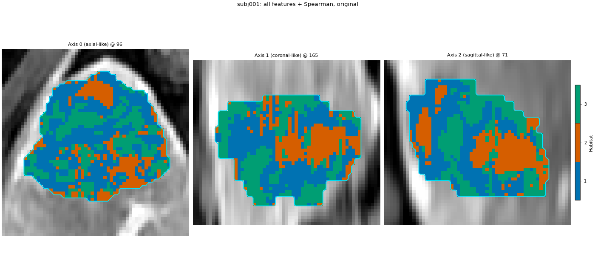
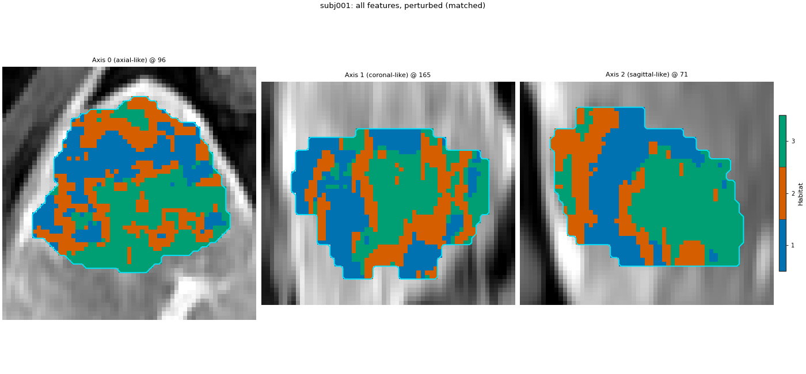
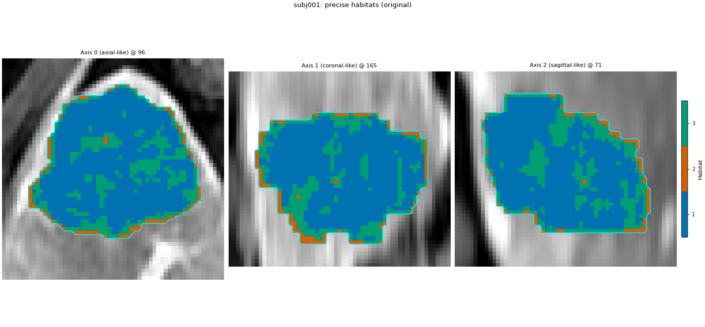
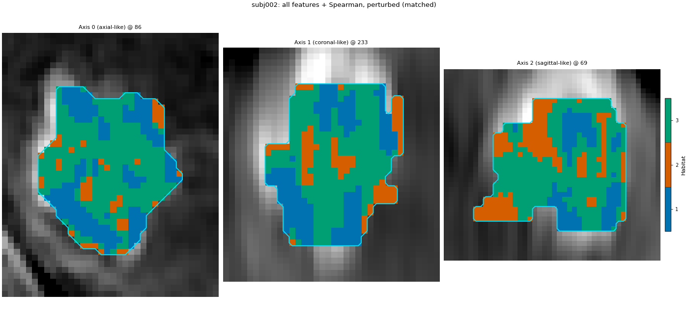
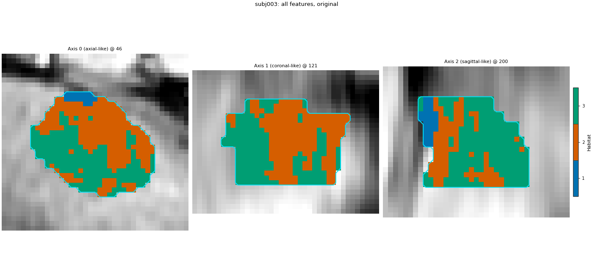
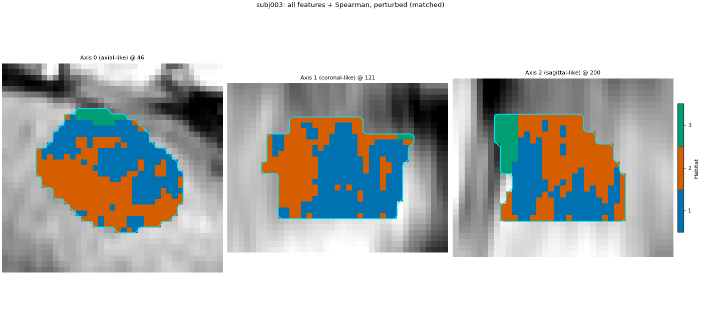
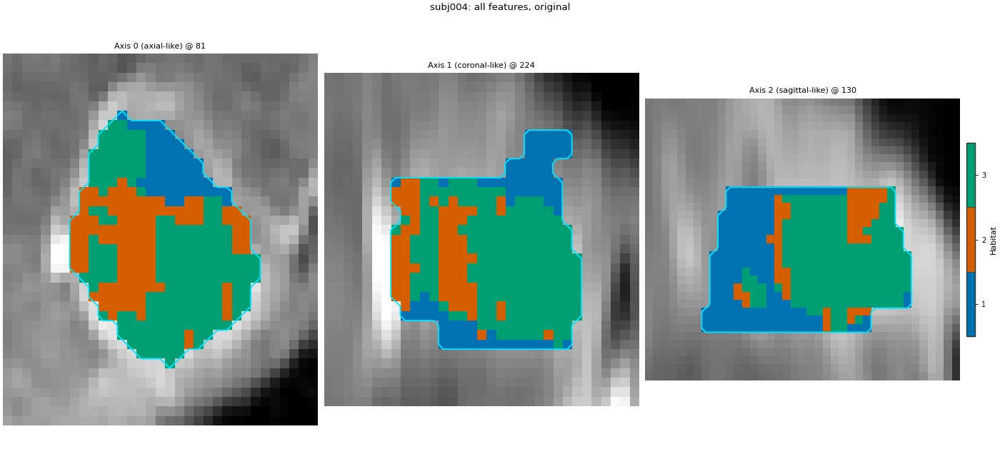
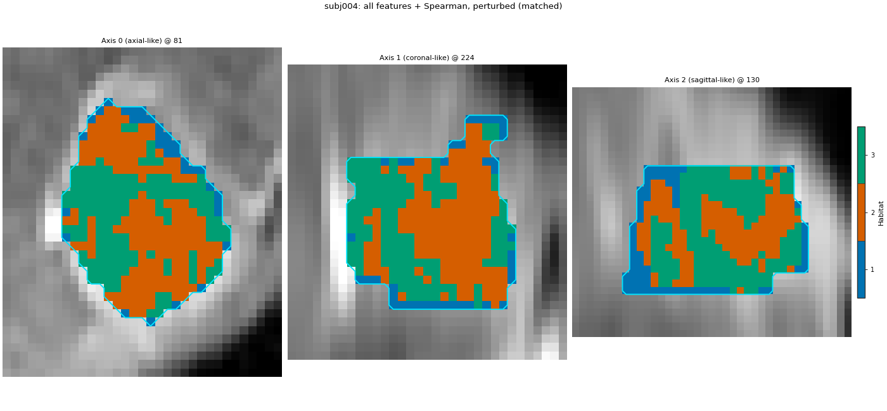
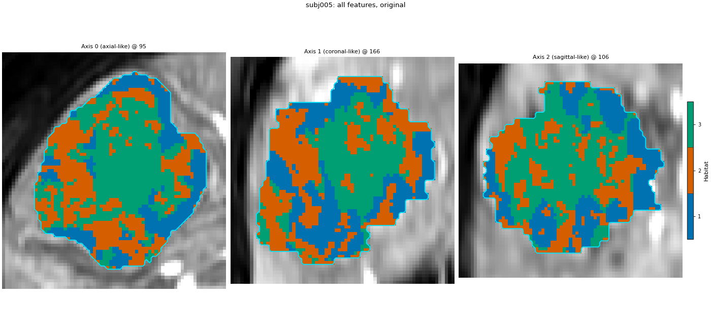
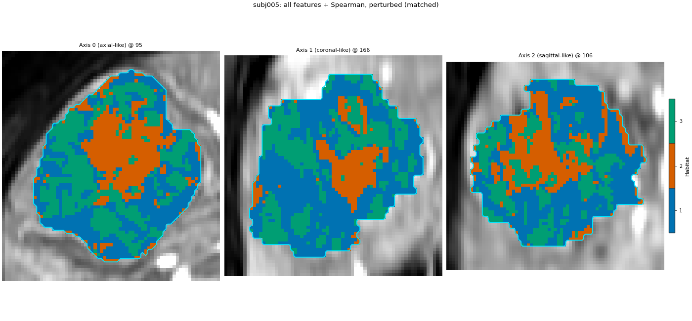
Cohort.map[_DefineAndLabelWithinSubject]: 0%| | 0/5 [00:00<?, ?it/s]voxel_radiomics: firstorder batch 1/35 0.138s peak=61MiB
voxel_radiomics: firstorder batch 2/35 0.012s peak=61MiB
voxel_radiomics: firstorder batch 3/35 0.012s peak=61MiB
voxel_radiomics: firstorder batch 4/35 0.010s peak=61MiB
voxel_radiomics: firstorder batch 5/35 0.012s peak=61MiB
voxel_radiomics: firstorder batch 6/35 0.013s peak=61MiB
voxel_radiomics: firstorder batch 7/35 0.013s peak=61MiB
voxel_radiomics: firstorder batch 8/35 0.014s peak=61MiB
voxel_radiomics: firstorder batch 9/35 0.014s peak=61MiB
voxel_radiomics: firstorder batch 10/35 0.014s peak=61MiB
voxel_radiomics: firstorder batch 11/35 0.015s peak=61MiB
voxel_radiomics: firstorder batch 12/35 0.012s peak=61MiB
voxel_radiomics: firstorder batch 13/35 0.012s peak=61MiB
voxel_radiomics: firstorder batch 14/35 0.014s peak=61MiB
voxel_radiomics: firstorder batch 15/35 0.012s peak=61MiB
voxel_radiomics: firstorder batch 16/35 0.012s peak=61MiB
voxel_radiomics: firstorder batch 17/35 0.013s peak=61MiB
voxel_radiomics: firstorder batch 18/35 0.012s peak=61MiB
voxel_radiomics: firstorder batch 19/35 0.011s peak=61MiB
voxel_radiomics: firstorder batch 20/35 0.012s peak=61MiB
voxel_radiomics: firstorder batch 21/35 0.012s peak=61MiB
voxel_radiomics: firstorder batch 22/35 0.012s peak=61MiB
voxel_radiomics: firstorder batch 23/35 0.013s peak=61MiB
voxel_radiomics: firstorder batch 24/35 0.012s peak=61MiB
voxel_radiomics: firstorder batch 25/35 0.013s peak=61MiB
voxel_radiomics: firstorder batch 26/35 0.012s peak=61MiB
voxel_radiomics: firstorder batch 27/35 0.013s peak=61MiB
voxel_radiomics: firstorder batch 28/35 0.013s peak=61MiB
voxel_radiomics: firstorder batch 29/35 0.013s peak=61MiB
voxel_radiomics: firstorder batch 30/35 0.013s peak=61MiB
voxel_radiomics: firstorder batch 31/35 0.014s peak=61MiB
voxel_radiomics: firstorder batch 32/35 0.011s peak=61MiB
voxel_radiomics: firstorder batch 33/35 0.011s peak=61MiB
voxel_radiomics: firstorder batch 34/35 0.012s peak=61MiB
voxel_radiomics: firstorder batch 35/35 0.013s peak=61MiB
voxel_radiomics: glcm batch 1/35 0.030s peak=59MiB
voxel_radiomics: glcm batch 2/35 0.030s peak=60MiB
voxel_radiomics: glcm batch 3/35 0.028s peak=61MiB
voxel_radiomics: glcm batch 4/35 0.028s peak=62MiB
voxel_radiomics: glcm batch 5/35 0.028s peak=63MiB
voxel_radiomics: glcm batch 6/35 0.028s peak=64MiB
voxel_radiomics: glcm batch 7/35 0.027s peak=65MiB
voxel_radiomics: glcm batch 8/35 0.026s peak=66MiB
voxel_radiomics: glcm batch 9/35 0.025s peak=66MiB
voxel_radiomics: glcm batch 10/35 0.025s peak=67MiB
voxel_radiomics: glcm batch 11/35 0.025s peak=68MiB
voxel_radiomics: glcm batch 12/35 0.022s peak=69MiB
voxel_radiomics: glcm batch 13/35 0.026s peak=70MiB
voxel_radiomics: glcm batch 14/35 0.028s peak=71MiB
voxel_radiomics: glcm batch 15/35 0.044s peak=72MiB
voxel_radiomics: glcm batch 16/35 0.037s peak=73MiB
voxel_radiomics: glcm batch 17/35 0.029s peak=74MiB
voxel_radiomics: glcm batch 18/35 0.026s peak=75MiB
voxel_radiomics: glcm batch 19/35 0.025s peak=75MiB
voxel_radiomics: glcm batch 20/35 0.024s peak=76MiB
voxel_radiomics: glcm batch 21/35 0.023s peak=77MiB
voxel_radiomics: glcm batch 22/35 0.021s peak=78MiB
voxel_radiomics: glcm batch 23/35 0.021s peak=79MiB
voxel_radiomics: glcm batch 24/35 0.024s peak=80MiB
voxel_radiomics: glcm batch 25/35 0.022s peak=81MiB
voxel_radiomics: glcm batch 26/35 0.025s peak=82MiB
voxel_radiomics: glcm batch 27/35 0.023s peak=83MiB
voxel_radiomics: glcm batch 28/35 0.021s peak=84MiB
voxel_radiomics: glcm batch 29/35 0.020s peak=84MiB
voxel_radiomics: glcm batch 30/35 0.020s peak=85MiB
voxel_radiomics: glcm batch 31/35 0.021s peak=86MiB
voxel_radiomics: glcm batch 32/35 0.020s peak=87MiB
voxel_radiomics: glcm batch 33/35 0.020s peak=88MiB
voxel_radiomics: glcm batch 34/35 0.023s peak=89MiB
voxel_radiomics: glcm batch 35/35 0.023s peak=90MiB
voxel_radiomics: glrlm batch 1/35 0.019s peak=91MiB
voxel_radiomics: glrlm batch 2/35 0.020s peak=1MiB
voxel_radiomics: glrlm batch 3/35 0.019s peak=2MiB
voxel_radiomics: glrlm batch 4/35 0.017s peak=3MiB
voxel_radiomics: glrlm batch 5/35 0.019s peak=4MiB
voxel_radiomics: glrlm batch 6/35 0.020s peak=5MiB
voxel_radiomics: glrlm batch 7/35 0.021s peak=5MiB
voxel_radiomics: glrlm batch 8/35 0.020s peak=6MiB
voxel_radiomics: glrlm batch 9/35 0.020s peak=7MiB
voxel_radiomics: glrlm batch 10/35 0.021s peak=8MiB
voxel_radiomics: glrlm batch 11/35 0.023s peak=9MiB
voxel_radiomics: glrlm batch 12/35 0.022s peak=10MiB
voxel_radiomics: glrlm batch 13/35 0.021s peak=11MiB
voxel_radiomics: glrlm batch 14/35 0.023s peak=12MiB
voxel_radiomics: glrlm batch 15/35 0.019s peak=13MiB
voxel_radiomics: glrlm batch 16/35 0.020s peak=13MiB
voxel_radiomics: glrlm batch 17/35 0.020s peak=14MiB
voxel_radiomics: glrlm batch 18/35 0.020s peak=15MiB
voxel_radiomics: glrlm batch 19/35 0.022s peak=16MiB
voxel_radiomics: glrlm batch 20/35 0.021s peak=17MiB
voxel_radiomics: glrlm batch 21/35 0.021s peak=18MiB
voxel_radiomics: glrlm batch 22/35 0.024s peak=19MiB
voxel_radiomics: glrlm batch 23/35 0.022s peak=20MiB
voxel_radiomics: glrlm batch 24/35 0.026s peak=21MiB
voxel_radiomics: glrlm batch 25/35 0.027s peak=22MiB
voxel_radiomics: glrlm batch 26/35 0.024s peak=22MiB
voxel_radiomics: glrlm batch 27/35 0.026s peak=23MiB
voxel_radiomics: glrlm batch 28/35 0.025s peak=24MiB
voxel_radiomics: glrlm batch 29/35 0.022s peak=25MiB
voxel_radiomics: glrlm batch 30/35 0.023s peak=26MiB
voxel_radiomics: glrlm batch 31/35 0.020s peak=27MiB
voxel_radiomics: glrlm batch 32/35 0.022s peak=28MiB
voxel_radiomics: glrlm batch 33/35 0.023s peak=29MiB
voxel_radiomics: glrlm batch 34/35 0.021s peak=30MiB
voxel_radiomics: glrlm batch 35/35 0.017s peak=31MiB
voxel_radiomics: glszm batch 1/35 0.019s peak=32MiB
voxel_radiomics: glszm batch 2/35 0.020s peak=32MiB
voxel_radiomics: glszm batch 3/35 0.019s peak=33MiB
voxel_radiomics: glszm batch 4/35 0.021s peak=34MiB
voxel_radiomics: glszm batch 5/35 0.019s peak=35MiB
voxel_radiomics: glszm batch 6/35 0.018s peak=36MiB
voxel_radiomics: glszm batch 7/35 0.019s peak=37MiB
voxel_radiomics: glszm batch 8/35 0.019s peak=38MiB
voxel_radiomics: glszm batch 9/35 0.020s peak=39MiB
voxel_radiomics: glszm batch 10/35 0.022s peak=40MiB
voxel_radiomics: glszm batch 11/35 0.019s peak=41MiB
voxel_radiomics: glszm batch 12/35 0.020s peak=41MiB
voxel_radiomics: glszm batch 13/35 0.019s peak=42MiB
voxel_radiomics: glszm batch 14/35 0.064s peak=43MiB
voxel_radiomics: glszm batch 15/35 0.075s peak=44MiB
voxel_radiomics: glszm batch 16/35 0.113s peak=45MiB
voxel_radiomics: glszm batch 17/35 0.076s peak=46MiB
voxel_radiomics: glszm batch 18/35 0.077s peak=47MiB
voxel_radiomics: glszm batch 19/35 0.117s peak=48MiB
voxel_radiomics: glszm batch 20/35 0.039s peak=49MiB
voxel_radiomics: glszm batch 21/35 0.030s peak=50MiB
voxel_radiomics: glszm batch 22/35 0.027s peak=50MiB
voxel_radiomics: glszm batch 23/35 0.022s peak=51MiB
voxel_radiomics: glszm batch 24/35 0.035s peak=52MiB
voxel_radiomics: glszm batch 25/35 0.063s peak=53MiB
voxel_radiomics: glszm batch 26/35 0.079s peak=54MiB
voxel_radiomics: glszm batch 27/35 0.038s peak=55MiB
voxel_radiomics: glszm batch 28/35 0.018s peak=56MiB
voxel_radiomics: glszm batch 29/35 0.017s peak=57MiB
voxel_radiomics: glszm batch 30/35 0.017s peak=58MiB
voxel_radiomics: glszm batch 31/35 0.016s peak=1MiB
voxel_radiomics: glszm batch 32/35 0.015s peak=2MiB
voxel_radiomics: glszm batch 33/35 0.016s peak=3MiB
voxel_radiomics: glszm batch 34/35 0.016s peak=4MiB
voxel_radiomics: glszm batch 35/35 0.017s peak=5MiB
voxel_radiomics: ngtdm batch 1/35 0.020s peak=8MiB
voxel_radiomics: ngtdm batch 2/35 0.021s peak=9MiB
voxel_radiomics: ngtdm batch 3/35 0.016s peak=10MiB
voxel_radiomics: ngtdm batch 4/35 0.020s peak=11MiB
voxel_radiomics: ngtdm batch 5/35 0.020s peak=12MiB
voxel_radiomics: ngtdm batch 6/35 0.027s peak=13MiB
voxel_radiomics: ngtdm batch 7/35 0.028s peak=14MiB
voxel_radiomics: ngtdm batch 8/35 0.019s peak=15MiB
voxel_radiomics: ngtdm batch 9/35 0.021s peak=16MiB
voxel_radiomics: ngtdm batch 10/35 0.021s peak=17MiB
voxel_radiomics: ngtdm batch 11/35 0.019s peak=17MiB
voxel_radiomics: ngtdm batch 12/35 0.018s peak=18MiB
voxel_radiomics: ngtdm batch 13/35 0.020s peak=19MiB
voxel_radiomics: ngtdm batch 14/35 0.020s peak=20MiB
voxel_radiomics: ngtdm batch 15/35 0.018s peak=21MiB
voxel_radiomics: ngtdm batch 16/35 0.020s peak=22MiB
voxel_radiomics: ngtdm batch 17/35 0.023s peak=23MiB
voxel_radiomics: ngtdm batch 18/35 0.022s peak=24MiB
voxel_radiomics: ngtdm batch 19/35 0.021s peak=25MiB
voxel_radiomics: ngtdm batch 20/35 0.019s peak=26MiB
voxel_radiomics: ngtdm batch 21/35 0.018s peak=27MiB
voxel_radiomics: ngtdm batch 22/35 0.020s peak=28MiB
voxel_radiomics: ngtdm batch 23/35 0.023s peak=29MiB
voxel_radiomics: ngtdm batch 24/35 0.025s peak=29MiB
voxel_radiomics: ngtdm batch 25/35 0.022s peak=30MiB
voxel_radiomics: ngtdm batch 26/35 0.023s peak=31MiB
voxel_radiomics: ngtdm batch 27/35 0.022s peak=32MiB
voxel_radiomics: ngtdm batch 28/35 0.030s peak=33MiB
voxel_radiomics: ngtdm batch 29/35 0.023s peak=34MiB
voxel_radiomics: ngtdm batch 30/35 0.021s peak=35MiB
voxel_radiomics: ngtdm batch 31/35 0.021s peak=36MiB
voxel_radiomics: ngtdm batch 32/35 0.018s peak=36MiB
voxel_radiomics: ngtdm batch 33/35 0.017s peak=37MiB
voxel_radiomics: ngtdm batch 34/35 0.015s peak=38MiB
voxel_radiomics: ngtdm batch 35/35 0.013s peak=37MiB
voxel_radiomics: gldm batch 1/35 0.014s peak=44MiB
voxel_radiomics: gldm batch 2/35 0.016s peak=46MiB
voxel_radiomics: gldm batch 3/35 0.014s peak=47MiB
voxel_radiomics: gldm batch 4/35 0.014s peak=47MiB
voxel_radiomics: gldm batch 5/35 0.016s peak=49MiB
voxel_radiomics: gldm batch 6/35 0.014s peak=49MiB
voxel_radiomics: gldm batch 7/35 0.014s peak=50MiB
voxel_radiomics: gldm batch 8/35 0.015s peak=51MiB
voxel_radiomics: gldm batch 9/35 0.015s peak=52MiB
voxel_radiomics: gldm batch 10/35 0.014s peak=52MiB
voxel_radiomics: gldm batch 11/35 0.015s peak=54MiB
voxel_radiomics: gldm batch 12/35 0.016s peak=56MiB
voxel_radiomics: gldm batch 13/35 0.014s peak=56MiB
voxel_radiomics: gldm batch 14/35 0.014s peak=56MiB
voxel_radiomics: gldm batch 15/35 0.015s peak=59MiB
voxel_radiomics: gldm batch 16/35 0.015s peak=61MiB
voxel_radiomics: gldm batch 17/35 0.017s peak=61MiB
voxel_radiomics: gldm batch 18/35 0.015s peak=62MiB
voxel_radiomics: gldm batch 19/35 0.014s peak=63MiB
voxel_radiomics: gldm batch 20/35 0.014s peak=63MiB
voxel_radiomics: gldm batch 21/35 0.015s peak=65MiB
voxel_radiomics: gldm batch 22/35 0.015s peak=65MiB
voxel_radiomics: gldm batch 23/35 0.014s peak=67MiB
voxel_radiomics: gldm batch 24/35 0.015s peak=68MiB
voxel_radiomics: gldm batch 25/35 0.016s peak=10MiB
voxel_radiomics: gldm batch 26/35 0.014s peak=11MiB
voxel_radiomics: gldm batch 27/35 0.016s peak=12MiB
voxel_radiomics: gldm batch 28/35 0.015s peak=12MiB
voxel_radiomics: gldm batch 29/35 0.015s peak=12MiB
voxel_radiomics: gldm batch 30/35 0.015s peak=13MiB
voxel_radiomics: gldm batch 31/35 0.016s peak=14MiB
voxel_radiomics: gldm batch 32/35 0.015s peak=15MiB
voxel_radiomics: gldm batch 33/35 0.015s peak=18MiB
voxel_radiomics: gldm batch 34/35 0.017s peak=18MiB
voxel_radiomics: gldm batch 35/35 0.014s peak=16MiB
E:\conda\mconda\envs\py310\lib\site-packages\threadpoolctl.py:1226: RuntimeWarning:
Found Intel OpenMP ('libiomp') and LLVM OpenMP ('libomp') loaded at
the same time. Both libraries are known to be incompatible and this
can cause random crashes or deadlocks on Linux when loaded in the
same Python program.
Using threadpoolctl may cause crashes or deadlocks. For more
information and possible workarounds, please see
https://github.com/joblib/threadpoolctl/blob/master/multiple_openmp.md
warnings.warn(msg, RuntimeWarning)
Cohort.map[_DefineAndLabelWithinSubject]: 20%|██ | 1/5 [00:10<00:41, 10.29s/it]voxel_radiomics: firstorder batch 1/10 0.043s peak=11MiB
voxel_radiomics: firstorder batch 2/10 0.077s peak=11MiB
voxel_radiomics: firstorder batch 3/10 0.014s peak=11MiB
voxel_radiomics: firstorder batch 4/10 0.013s peak=11MiB
voxel_radiomics: firstorder batch 5/10 0.016s peak=11MiB
voxel_radiomics: firstorder batch 6/10 0.015s peak=11MiB
voxel_radiomics: firstorder batch 7/10 0.014s peak=11MiB
voxel_radiomics: firstorder batch 8/10 0.015s peak=11MiB
voxel_radiomics: firstorder batch 9/10 0.015s peak=11MiB
voxel_radiomics: firstorder batch 10/10 0.014s peak=11MiB
voxel_radiomics: glcm batch 1/10 0.027s peak=10MiB
voxel_radiomics: glcm batch 2/10 0.036s peak=10MiB
voxel_radiomics: glcm batch 3/10 0.029s peak=11MiB
voxel_radiomics: glcm batch 4/10 0.026s peak=11MiB
voxel_radiomics: glcm batch 5/10 0.023s peak=11MiB
voxel_radiomics: glcm batch 6/10 0.028s peak=11MiB
voxel_radiomics: glcm batch 7/10 0.027s peak=12MiB
voxel_radiomics: glcm batch 8/10 0.026s peak=12MiB
voxel_radiomics: glcm batch 9/10 0.026s peak=12MiB
voxel_radiomics: glcm batch 10/10 0.020s peak=12MiB
voxel_radiomics: glrlm batch 1/10 0.020s peak=13MiB
voxel_radiomics: glrlm batch 2/10 0.022s peak=13MiB
voxel_radiomics: glrlm batch 3/10 0.021s peak=13MiB
voxel_radiomics: glrlm batch 4/10 0.019s peak=14MiB
voxel_radiomics: glrlm batch 5/10 0.020s peak=14MiB
voxel_radiomics: glrlm batch 6/10 0.022s peak=14MiB
voxel_radiomics: glrlm batch 7/10 0.023s peak=14MiB
voxel_radiomics: glrlm batch 8/10 0.020s peak=15MiB
voxel_radiomics: glrlm batch 9/10 0.021s peak=15MiB
voxel_radiomics: glrlm batch 10/10 0.021s peak=15MiB
voxel_radiomics: glszm batch 1/10 0.020s peak=15MiB
voxel_radiomics: glszm batch 2/10 0.017s peak=16MiB
voxel_radiomics: glszm batch 3/10 0.018s peak=16MiB
voxel_radiomics: glszm batch 4/10 0.017s peak=16MiB
voxel_radiomics: glszm batch 5/10 0.015s peak=16MiB
voxel_radiomics: glszm batch 6/10 0.017s peak=17MiB
voxel_radiomics: glszm batch 7/10 0.022s peak=17MiB
voxel_radiomics: glszm batch 8/10 0.021s peak=17MiB
voxel_radiomics: glszm batch 9/10 0.021s peak=17MiB
voxel_radiomics: glszm batch 10/10 0.019s peak=18MiB
voxel_radiomics: ngtdm batch 1/10 0.025s peak=21MiB
voxel_radiomics: ngtdm batch 2/10 0.032s peak=21MiB
voxel_radiomics: ngtdm batch 3/10 0.035s peak=22MiB
voxel_radiomics: ngtdm batch 4/10 0.037s peak=22MiB
voxel_radiomics: ngtdm batch 5/10 0.024s peak=22MiB
voxel_radiomics: ngtdm batch 6/10 0.025s peak=22MiB
voxel_radiomics: ngtdm batch 7/10 0.024s peak=23MiB
voxel_radiomics: ngtdm batch 8/10 0.025s peak=24MiB
voxel_radiomics: ngtdm batch 9/10 0.026s peak=23MiB
voxel_radiomics: ngtdm batch 10/10 0.025s peak=23MiB
voxel_radiomics: gldm batch 1/10 0.014s peak=26MiB
voxel_radiomics: gldm batch 2/10 0.016s peak=28MiB
voxel_radiomics: gldm batch 3/10 0.014s peak=29MiB
voxel_radiomics: gldm batch 4/10 0.016s peak=27MiB
voxel_radiomics: gldm batch 5/10 0.013s peak=26MiB
voxel_radiomics: gldm batch 6/10 0.015s peak=26MiB
voxel_radiomics: gldm batch 7/10 0.014s peak=26MiB
voxel_radiomics: gldm batch 8/10 0.014s peak=26MiB
voxel_radiomics: gldm batch 9/10 0.016s peak=30MiB
voxel_radiomics: gldm batch 10/10 0.013s peak=27MiB
Cohort.map[_DefineAndLabelWithinSubject]: 40%|████ | 2/5 [00:14<00:22, 7.44s/it]voxel_radiomics: firstorder batch 1/7 0.022s peak=21MiB
voxel_radiomics: firstorder batch 2/7 0.024s peak=21MiB
voxel_radiomics: firstorder batch 3/7 0.021s peak=21MiB
voxel_radiomics: firstorder batch 4/7 0.021s peak=21MiB
voxel_radiomics: firstorder batch 5/7 0.020s peak=21MiB
voxel_radiomics: firstorder batch 6/7 0.020s peak=21MiB
voxel_radiomics: firstorder batch 7/7 0.018s peak=21MiB
voxel_radiomics: glcm batch 1/7 0.065s peak=20MiB
voxel_radiomics: glcm batch 2/7 0.031s peak=20MiB
voxel_radiomics: glcm batch 3/7 0.028s peak=21MiB
voxel_radiomics: glcm batch 4/7 0.031s peak=21MiB
voxel_radiomics: glcm batch 5/7 0.028s peak=21MiB
voxel_radiomics: glcm batch 6/7 0.028s peak=21MiB
voxel_radiomics: glcm batch 7/7 0.023s peak=21MiB
voxel_radiomics: glrlm batch 1/7 0.021s peak=21MiB
voxel_radiomics: glrlm batch 2/7 0.023s peak=22MiB
voxel_radiomics: glrlm batch 3/7 0.020s peak=22MiB
voxel_radiomics: glrlm batch 4/7 0.024s peak=22MiB
voxel_radiomics: glrlm batch 5/7 0.025s peak=22MiB
voxel_radiomics: glrlm batch 6/7 0.020s peak=22MiB
voxel_radiomics: glrlm batch 7/7 0.018s peak=0MiB
voxel_radiomics: glszm batch 1/7 0.019s peak=0MiB
voxel_radiomics: glszm batch 2/7 0.017s peak=1MiB
voxel_radiomics: glszm batch 3/7 0.017s peak=1MiB
voxel_radiomics: glszm batch 4/7 0.018s peak=1MiB
voxel_radiomics: glszm batch 5/7 0.017s peak=1MiB
voxel_radiomics: glszm batch 6/7 0.018s peak=1MiB
voxel_radiomics: glszm batch 7/7 0.016s peak=1MiB
voxel_radiomics: ngtdm batch 1/7 0.014s peak=3MiB
voxel_radiomics: ngtdm batch 2/7 0.015s peak=3MiB
voxel_radiomics: ngtdm batch 3/7 0.016s peak=3MiB
voxel_radiomics: ngtdm batch 4/7 0.017s peak=3MiB
voxel_radiomics: ngtdm batch 5/7 0.015s peak=3MiB
voxel_radiomics: ngtdm batch 6/7 0.014s peak=4MiB
voxel_radiomics: ngtdm batch 7/7 0.011s peak=3MiB
voxel_radiomics: gldm batch 1/7 0.015s peak=7MiB
voxel_radiomics: gldm batch 2/7 0.015s peak=8MiB
voxel_radiomics: gldm batch 3/7 0.018s peak=10MiB
voxel_radiomics: gldm batch 4/7 0.016s peak=11MiB
voxel_radiomics: gldm batch 5/7 0.016s peak=11MiB
voxel_radiomics: gldm batch 6/7 0.014s peak=10MiB
voxel_radiomics: gldm batch 7/7 0.012s peak=4MiB
Cohort.map[_DefineAndLabelWithinSubject]: 60%|██████ | 3/5 [00:18<00:12, 6.18s/it]voxel_radiomics: firstorder batch 1/6 0.029s peak=5MiB
voxel_radiomics: firstorder batch 2/6 0.020s peak=5MiB
voxel_radiomics: firstorder batch 3/6 0.022s peak=5MiB
voxel_radiomics: firstorder batch 4/6 0.021s peak=5MiB
voxel_radiomics: firstorder batch 5/6 0.018s peak=5MiB
voxel_radiomics: firstorder batch 6/6 0.025s peak=5MiB
voxel_radiomics: glcm batch 1/6 0.120s peak=4MiB
voxel_radiomics: glcm batch 2/6 0.035s peak=4MiB
voxel_radiomics: glcm batch 3/6 0.028s peak=4MiB
voxel_radiomics: glcm batch 4/6 0.028s peak=4MiB
voxel_radiomics: glcm batch 5/6 0.030s peak=5MiB
voxel_radiomics: glcm batch 6/6 0.021s peak=5MiB
voxel_radiomics: glrlm batch 1/6 0.021s peak=5MiB
voxel_radiomics: glrlm batch 2/6 0.020s peak=5MiB
voxel_radiomics: glrlm batch 3/6 0.021s peak=5MiB
voxel_radiomics: glrlm batch 4/6 0.024s peak=5MiB
voxel_radiomics: glrlm batch 5/6 0.019s peak=6MiB
voxel_radiomics: glrlm batch 6/6 0.020s peak=6MiB
voxel_radiomics: glszm batch 1/6 0.016s peak=6MiB
voxel_radiomics: glszm batch 2/6 0.016s peak=6MiB
voxel_radiomics: glszm batch 3/6 0.017s peak=6MiB
voxel_radiomics: glszm batch 4/6 0.016s peak=7MiB
voxel_radiomics: glszm batch 5/6 0.016s peak=7MiB
voxel_radiomics: glszm batch 6/6 0.015s peak=7MiB
voxel_radiomics: ngtdm batch 1/6 0.022s peak=10MiB
voxel_radiomics: ngtdm batch 2/6 0.023s peak=10MiB
voxel_radiomics: ngtdm batch 3/6 0.017s peak=10MiB
voxel_radiomics: ngtdm batch 4/6 0.019s peak=10MiB
voxel_radiomics: ngtdm batch 5/6 0.022s peak=11MiB
voxel_radiomics: ngtdm batch 6/6 0.017s peak=11MiB
voxel_radiomics: gldm batch 1/6 0.019s peak=15MiB
voxel_radiomics: gldm batch 2/6 0.018s peak=15MiB
voxel_radiomics: gldm batch 3/6 0.014s peak=17MiB
voxel_radiomics: gldm batch 4/6 0.013s peak=15MiB
voxel_radiomics: gldm batch 5/6 0.015s peak=16MiB
voxel_radiomics: gldm batch 6/6 0.012s peak=13MiB
Cohort.map[_DefineAndLabelWithinSubject]: 80%|████████ | 4/5 [00:21<00:05, 5.48s/it]voxel_radiomics: firstorder batch 1/81 0.014s peak=14MiB
voxel_radiomics: firstorder batch 2/81 0.011s peak=14MiB
voxel_radiomics: firstorder batch 3/81 0.013s peak=14MiB
voxel_radiomics: firstorder batch 4/81 0.010s peak=14MiB
voxel_radiomics: firstorder batch 5/81 0.011s peak=14MiB
voxel_radiomics: firstorder batch 6/81 0.009s peak=14MiB
voxel_radiomics: firstorder batch 7/81 0.011s peak=14MiB
voxel_radiomics: firstorder batch 8/81 0.010s peak=14MiB
voxel_radiomics: firstorder batch 9/81 0.011s peak=14MiB
voxel_radiomics: firstorder batch 10/81 0.011s peak=14MiB
voxel_radiomics: firstorder batch 11/81 0.011s peak=14MiB
voxel_radiomics: firstorder batch 12/81 0.012s peak=14MiB
voxel_radiomics: firstorder batch 13/81 0.011s peak=14MiB
voxel_radiomics: firstorder batch 14/81 0.011s peak=14MiB
voxel_radiomics: firstorder batch 15/81 0.011s peak=14MiB
voxel_radiomics: firstorder batch 16/81 0.011s peak=14MiB
voxel_radiomics: firstorder batch 17/81 0.009s peak=14MiB
voxel_radiomics: firstorder batch 18/81 0.011s peak=14MiB
voxel_radiomics: firstorder batch 19/81 0.010s peak=14MiB
voxel_radiomics: firstorder batch 20/81 0.011s peak=14MiB
voxel_radiomics: firstorder batch 21/81 0.012s peak=14MiB
voxel_radiomics: firstorder batch 22/81 0.010s peak=14MiB
voxel_radiomics: firstorder batch 23/81 0.011s peak=14MiB
voxel_radiomics: firstorder batch 24/81 0.010s peak=14MiB
voxel_radiomics: firstorder batch 25/81 0.011s peak=14MiB
voxel_radiomics: firstorder batch 26/81 0.011s peak=14MiB
voxel_radiomics: firstorder batch 27/81 0.011s peak=14MiB
voxel_radiomics: firstorder batch 28/81 0.011s peak=14MiB
voxel_radiomics: firstorder batch 29/81 0.011s peak=14MiB
voxel_radiomics: firstorder batch 30/81 0.011s peak=14MiB
voxel_radiomics: firstorder batch 31/81 0.013s peak=14MiB
voxel_radiomics: firstorder batch 32/81 0.011s peak=14MiB
voxel_radiomics: firstorder batch 33/81 0.013s peak=14MiB
voxel_radiomics: firstorder batch 34/81 0.012s peak=14MiB
voxel_radiomics: firstorder batch 35/81 0.011s peak=14MiB
voxel_radiomics: firstorder batch 36/81 0.010s peak=14MiB
voxel_radiomics: firstorder batch 37/81 0.012s peak=14MiB
voxel_radiomics: firstorder batch 38/81 0.014s peak=14MiB
voxel_radiomics: firstorder batch 39/81 0.013s peak=14MiB
voxel_radiomics: firstorder batch 40/81 0.011s peak=14MiB
voxel_radiomics: firstorder batch 41/81 0.011s peak=14MiB
voxel_radiomics: firstorder batch 42/81 0.011s peak=14MiB
voxel_radiomics: firstorder batch 43/81 0.011s peak=14MiB
voxel_radiomics: firstorder batch 44/81 0.011s peak=14MiB
voxel_radiomics: firstorder batch 45/81 0.010s peak=14MiB
voxel_radiomics: firstorder batch 46/81 0.011s peak=14MiB
voxel_radiomics: firstorder batch 47/81 0.010s peak=14MiB
voxel_radiomics: firstorder batch 48/81 0.011s peak=14MiB
voxel_radiomics: firstorder batch 49/81 0.011s peak=14MiB
voxel_radiomics: firstorder batch 50/81 0.011s peak=14MiB
voxel_radiomics: firstorder batch 51/81 0.012s peak=14MiB
voxel_radiomics: firstorder batch 52/81 0.012s peak=14MiB
voxel_radiomics: firstorder batch 53/81 0.011s peak=14MiB
voxel_radiomics: firstorder batch 54/81 0.011s peak=14MiB
voxel_radiomics: firstorder batch 55/81 0.009s peak=14MiB
voxel_radiomics: firstorder batch 56/81 0.013s peak=14MiB
voxel_radiomics: firstorder batch 57/81 0.011s peak=14MiB
voxel_radiomics: firstorder batch 58/81 0.011s peak=14MiB
voxel_radiomics: firstorder batch 59/81 0.012s peak=14MiB
voxel_radiomics: firstorder batch 60/81 0.012s peak=14MiB
voxel_radiomics: firstorder batch 61/81 0.010s peak=14MiB
voxel_radiomics: firstorder batch 62/81 0.010s peak=14MiB
voxel_radiomics: firstorder batch 63/81 0.010s peak=14MiB
voxel_radiomics: firstorder batch 64/81 0.012s peak=14MiB
voxel_radiomics: firstorder batch 65/81 0.010s peak=14MiB
voxel_radiomics: firstorder batch 66/81 0.010s peak=14MiB
voxel_radiomics: firstorder batch 67/81 0.010s peak=14MiB
voxel_radiomics: firstorder batch 68/81 0.011s peak=14MiB
voxel_radiomics: firstorder batch 69/81 0.012s peak=14MiB
voxel_radiomics: firstorder batch 70/81 0.015s peak=14MiB
voxel_radiomics: firstorder batch 71/81 0.014s peak=14MiB
voxel_radiomics: firstorder batch 72/81 0.013s peak=14MiB
voxel_radiomics: firstorder batch 73/81 0.012s peak=14MiB
voxel_radiomics: firstorder batch 74/81 0.011s peak=14MiB
voxel_radiomics: firstorder batch 75/81 0.012s peak=14MiB
voxel_radiomics: firstorder batch 76/81 0.012s peak=14MiB
voxel_radiomics: firstorder batch 77/81 0.010s peak=14MiB
voxel_radiomics: firstorder batch 78/81 0.012s peak=14MiB
voxel_radiomics: firstorder batch 79/81 0.011s peak=14MiB
voxel_radiomics: firstorder batch 80/81 0.010s peak=14MiB
voxel_radiomics: firstorder batch 81/81 0.011s peak=13MiB
voxel_radiomics: glcm batch 1/81 0.038s peak=11MiB
voxel_radiomics: glcm batch 2/81 0.035s peak=13MiB
voxel_radiomics: glcm batch 3/81 0.028s peak=15MiB
voxel_radiomics: glcm batch 4/81 0.028s peak=17MiB
voxel_radiomics: glcm batch 5/81 0.029s peak=19MiB
voxel_radiomics: glcm batch 6/81 0.030s peak=21MiB
voxel_radiomics: glcm batch 7/81 0.029s peak=23MiB
voxel_radiomics: glcm batch 8/81 0.029s peak=25MiB
voxel_radiomics: glcm batch 9/81 0.027s peak=27MiB
voxel_radiomics: glcm batch 10/81 0.028s peak=28MiB
voxel_radiomics: glcm batch 11/81 0.031s peak=31MiB
voxel_radiomics: glcm batch 12/81 0.027s peak=33MiB
voxel_radiomics: glcm batch 13/81 0.028s peak=2MiB
voxel_radiomics: glcm batch 14/81 0.026s peak=4MiB
voxel_radiomics: glcm batch 15/81 0.025s peak=6MiB
voxel_radiomics: glcm batch 16/81 0.025s peak=8MiB
voxel_radiomics: glcm batch 17/81 0.024s peak=10MiB
voxel_radiomics: glcm batch 18/81 0.026s peak=12MiB
voxel_radiomics: glcm batch 19/81 0.026s peak=14MiB
voxel_radiomics: glcm batch 20/81 0.031s peak=16MiB
voxel_radiomics: glcm batch 21/81 0.026s peak=18MiB
voxel_radiomics: glcm batch 22/81 0.024s peak=20MiB
voxel_radiomics: glcm batch 23/81 0.026s peak=22MiB
voxel_radiomics: glcm batch 24/81 0.028s peak=23MiB
voxel_radiomics: glcm batch 25/81 0.026s peak=25MiB
voxel_radiomics: glcm batch 26/81 0.027s peak=27MiB
voxel_radiomics: glcm batch 27/81 0.027s peak=29MiB
voxel_radiomics: glcm batch 28/81 0.027s peak=31MiB
voxel_radiomics: glcm batch 29/81 0.027s peak=33MiB
voxel_radiomics: glcm batch 30/81 0.028s peak=35MiB
voxel_radiomics: glcm batch 31/81 0.027s peak=37MiB
voxel_radiomics: glcm batch 32/81 0.025s peak=39MiB
voxel_radiomics: glcm batch 33/81 0.024s peak=42MiB
voxel_radiomics: glcm batch 34/81 0.026s peak=44MiB
voxel_radiomics: glcm batch 35/81 0.027s peak=46MiB
voxel_radiomics: glcm batch 36/81 0.023s peak=48MiB
voxel_radiomics: glcm batch 37/81 0.025s peak=50MiB
voxel_radiomics: glcm batch 38/81 0.025s peak=52MiB
voxel_radiomics: glcm batch 39/81 0.026s peak=54MiB
voxel_radiomics: glcm batch 40/81 0.027s peak=56MiB
voxel_radiomics: glcm batch 41/81 0.027s peak=58MiB
voxel_radiomics: glcm batch 42/81 0.026s peak=60MiB
voxel_radiomics: glcm batch 43/81 0.027s peak=61MiB
voxel_radiomics: glcm batch 44/81 0.026s peak=63MiB
voxel_radiomics: glcm batch 45/81 0.024s peak=65MiB
voxel_radiomics: glcm batch 46/81 0.026s peak=67MiB
voxel_radiomics: glcm batch 47/81 0.028s peak=69MiB
voxel_radiomics: glcm batch 48/81 0.030s peak=71MiB
voxel_radiomics: glcm batch 49/81 0.024s peak=73MiB
voxel_radiomics: glcm batch 50/81 0.024s peak=75MiB
voxel_radiomics: glcm batch 51/81 0.023s peak=77MiB
voxel_radiomics: glcm batch 52/81 0.025s peak=79MiB
voxel_radiomics: glcm batch 53/81 0.023s peak=81MiB
voxel_radiomics: glcm batch 54/81 0.028s peak=83MiB
voxel_radiomics: glcm batch 55/81 0.028s peak=85MiB
voxel_radiomics: glcm batch 56/81 0.026s peak=87MiB
voxel_radiomics: glcm batch 57/81 0.026s peak=89MiB
voxel_radiomics: glcm batch 58/81 0.026s peak=91MiB
voxel_radiomics: glcm batch 59/81 0.024s peak=93MiB
voxel_radiomics: glcm batch 60/81 0.024s peak=95MiB
voxel_radiomics: glcm batch 61/81 0.023s peak=97MiB
voxel_radiomics: glcm batch 62/81 0.023s peak=98MiB
voxel_radiomics: glcm batch 63/81 0.025s peak=100MiB
voxel_radiomics: glcm batch 64/81 0.025s peak=102MiB
voxel_radiomics: glcm batch 65/81 0.026s peak=104MiB
voxel_radiomics: glcm batch 66/81 0.026s peak=106MiB
voxel_radiomics: glcm batch 67/81 0.025s peak=108MiB
voxel_radiomics: glcm batch 68/81 0.023s peak=110MiB
voxel_radiomics: glcm batch 69/81 0.025s peak=112MiB
voxel_radiomics: glcm batch 70/81 0.024s peak=114MiB
voxel_radiomics: glcm batch 71/81 0.026s peak=116MiB
voxel_radiomics: glcm batch 72/81 0.027s peak=118MiB
voxel_radiomics: glcm batch 73/81 0.027s peak=120MiB
voxel_radiomics: glcm batch 74/81 0.031s peak=122MiB
voxel_radiomics: glcm batch 75/81 0.026s peak=124MiB
voxel_radiomics: glcm batch 76/81 0.024s peak=126MiB
voxel_radiomics: glcm batch 77/81 0.028s peak=2MiB
voxel_radiomics: glcm batch 78/81 0.026s peak=4MiB
voxel_radiomics: glcm batch 79/81 0.024s peak=6MiB
voxel_radiomics: glcm batch 80/81 0.027s peak=8MiB
voxel_radiomics: glcm batch 81/81 0.015s peak=10MiB
voxel_radiomics: glrlm batch 1/81 0.022s peak=12MiB
voxel_radiomics: glrlm batch 2/81 0.023s peak=14MiB
voxel_radiomics: glrlm batch 3/81 0.020s peak=16MiB
voxel_radiomics: glrlm batch 4/81 0.017s peak=18MiB
voxel_radiomics: glrlm batch 5/81 0.018s peak=20MiB
voxel_radiomics: glrlm batch 6/81 0.018s peak=21MiB
voxel_radiomics: glrlm batch 7/81 0.019s peak=23MiB
voxel_radiomics: glrlm batch 8/81 0.018s peak=25MiB
voxel_radiomics: glrlm batch 9/81 0.020s peak=27MiB
voxel_radiomics: glrlm batch 10/81 0.018s peak=29MiB
voxel_radiomics: glrlm batch 11/81 0.017s peak=32MiB
voxel_radiomics: glrlm batch 12/81 0.020s peak=34MiB
voxel_radiomics: glrlm batch 13/81 0.022s peak=36MiB
voxel_radiomics: glrlm batch 14/81 0.018s peak=38MiB
voxel_radiomics: glrlm batch 15/81 0.020s peak=40MiB
voxel_radiomics: glrlm batch 16/81 0.020s peak=42MiB
voxel_radiomics: glrlm batch 17/81 0.018s peak=44MiB
voxel_radiomics: glrlm batch 18/81 0.019s peak=46MiB
voxel_radiomics: glrlm batch 19/81 0.023s peak=48MiB
voxel_radiomics: glrlm batch 20/81 0.024s peak=50MiB
voxel_radiomics: glrlm batch 21/81 0.023s peak=52MiB
voxel_radiomics: glrlm batch 22/81 0.024s peak=54MiB
voxel_radiomics: glrlm batch 23/81 0.024s peak=56MiB
voxel_radiomics: glrlm batch 24/81 0.023s peak=58MiB
voxel_radiomics: glrlm batch 25/81 0.022s peak=59MiB
voxel_radiomics: glrlm batch 26/81 0.022s peak=61MiB
voxel_radiomics: glrlm batch 27/81 0.019s peak=63MiB
voxel_radiomics: glrlm batch 28/81 0.019s peak=65MiB
voxel_radiomics: glrlm batch 29/81 0.018s peak=67MiB
voxel_radiomics: glrlm batch 30/81 0.020s peak=69MiB
voxel_radiomics: glrlm batch 31/81 0.017s peak=71MiB
voxel_radiomics: glrlm batch 32/81 0.019s peak=73MiB
voxel_radiomics: glrlm batch 33/81 0.019s peak=75MiB
voxel_radiomics: glrlm batch 34/81 0.019s peak=77MiB
voxel_radiomics: glrlm batch 35/81 0.023s peak=79MiB
voxel_radiomics: glrlm batch 36/81 0.019s peak=81MiB
voxel_radiomics: glrlm batch 37/81 0.022s peak=83MiB
voxel_radiomics: glrlm batch 38/81 0.019s peak=85MiB
voxel_radiomics: glrlm batch 39/81 0.018s peak=87MiB
voxel_radiomics: glrlm batch 40/81 0.018s peak=89MiB
voxel_radiomics: glrlm batch 41/81 0.019s peak=91MiB
voxel_radiomics: glrlm batch 42/81 0.018s peak=93MiB
voxel_radiomics: glrlm batch 43/81 0.018s peak=95MiB
voxel_radiomics: glrlm batch 44/81 0.018s peak=96MiB
voxel_radiomics: glrlm batch 45/81 0.020s peak=98MiB
voxel_radiomics: glrlm batch 46/81 0.021s peak=100MiB
voxel_radiomics: glrlm batch 47/81 0.021s peak=102MiB
voxel_radiomics: glrlm batch 48/81 0.021s peak=104MiB
voxel_radiomics: glrlm batch 49/81 0.022s peak=106MiB
voxel_radiomics: glrlm batch 50/81 0.019s peak=108MiB
voxel_radiomics: glrlm batch 51/81 0.019s peak=110MiB
voxel_radiomics: glrlm batch 52/81 0.019s peak=112MiB
voxel_radiomics: glrlm batch 53/81 0.019s peak=114MiB
voxel_radiomics: glrlm batch 54/81 0.019s peak=116MiB
voxel_radiomics: glrlm batch 55/81 0.019s peak=118MiB
voxel_radiomics: glrlm batch 56/81 0.018s peak=120MiB
voxel_radiomics: glrlm batch 57/81 0.018s peak=122MiB
voxel_radiomics: glrlm batch 58/81 0.020s peak=124MiB
voxel_radiomics: glrlm batch 59/81 0.022s peak=126MiB
voxel_radiomics: glrlm batch 60/81 0.035s peak=2MiB
voxel_radiomics: glrlm batch 61/81 0.027s peak=4MiB
voxel_radiomics: glrlm batch 62/81 0.027s peak=6MiB
voxel_radiomics: glrlm batch 63/81 0.030s peak=8MiB
voxel_radiomics: glrlm batch 64/81 0.027s peak=10MiB
voxel_radiomics: glrlm batch 65/81 0.019s peak=12MiB
voxel_radiomics: glrlm batch 66/81 0.022s peak=14MiB
voxel_radiomics: glrlm batch 67/81 0.020s peak=16MiB
voxel_radiomics: glrlm batch 68/81 0.021s peak=18MiB
voxel_radiomics: glrlm batch 69/81 0.019s peak=20MiB
voxel_radiomics: glrlm batch 70/81 0.018s peak=22MiB
voxel_radiomics: glrlm batch 71/81 0.017s peak=23MiB
voxel_radiomics: glrlm batch 72/81 0.017s peak=25MiB
voxel_radiomics: glrlm batch 73/81 0.018s peak=27MiB
voxel_radiomics: glrlm batch 74/81 0.018s peak=29MiB
voxel_radiomics: glrlm batch 75/81 0.017s peak=32MiB
voxel_radiomics: glrlm batch 76/81 0.018s peak=34MiB
voxel_radiomics: glrlm batch 77/81 0.017s peak=36MiB
voxel_radiomics: glrlm batch 78/81 0.018s peak=38MiB
voxel_radiomics: glrlm batch 79/81 0.017s peak=40MiB
voxel_radiomics: glrlm batch 80/81 0.018s peak=42MiB
voxel_radiomics: glrlm batch 81/81 0.013s peak=44MiB
voxel_radiomics: glszm batch 1/81 0.016s peak=46MiB
voxel_radiomics: glszm batch 2/81 0.015s peak=48MiB
voxel_radiomics: glszm batch 3/81 0.015s peak=50MiB
voxel_radiomics: glszm batch 4/81 0.016s peak=52MiB
voxel_radiomics: glszm batch 5/81 0.015s peak=54MiB
voxel_radiomics: glszm batch 6/81 0.015s peak=56MiB
voxel_radiomics: glszm batch 7/81 0.015s peak=58MiB
voxel_radiomics: glszm batch 8/81 0.014s peak=59MiB
voxel_radiomics: glszm batch 9/81 0.015s peak=61MiB
voxel_radiomics: glszm batch 10/81 0.015s peak=63MiB
voxel_radiomics: glszm batch 11/81 0.015s peak=65MiB
voxel_radiomics: glszm batch 12/81 0.016s peak=67MiB
voxel_radiomics: glszm batch 13/81 0.016s peak=69MiB
voxel_radiomics: glszm batch 14/81 0.017s peak=71MiB
voxel_radiomics: glszm batch 15/81 0.015s peak=73MiB
voxel_radiomics: glszm batch 16/81 0.015s peak=75MiB
voxel_radiomics: glszm batch 17/81 0.016s peak=77MiB
voxel_radiomics: glszm batch 18/81 0.015s peak=79MiB
voxel_radiomics: glszm batch 19/81 0.015s peak=81MiB
voxel_radiomics: glszm batch 20/81 0.015s peak=83MiB
voxel_radiomics: glszm batch 21/81 0.016s peak=85MiB
voxel_radiomics: glszm batch 22/81 0.015s peak=87MiB
voxel_radiomics: glszm batch 23/81 0.016s peak=89MiB
voxel_radiomics: glszm batch 24/81 0.018s peak=91MiB
voxel_radiomics: glszm batch 25/81 0.020s peak=93MiB
voxel_radiomics: glszm batch 26/81 0.018s peak=95MiB
voxel_radiomics: glszm batch 27/81 0.017s peak=97MiB
voxel_radiomics: glszm batch 28/81 0.016s peak=98MiB
voxel_radiomics: glszm batch 29/81 0.016s peak=100MiB
voxel_radiomics: glszm batch 30/81 0.015s peak=102MiB
voxel_radiomics: glszm batch 31/81 0.015s peak=104MiB
voxel_radiomics: glszm batch 32/81 0.016s peak=106MiB
voxel_radiomics: glszm batch 33/81 0.015s peak=108MiB
voxel_radiomics: glszm batch 34/81 0.015s peak=110MiB
voxel_radiomics: glszm batch 35/81 0.015s peak=112MiB
voxel_radiomics: glszm batch 36/81 0.014s peak=114MiB
voxel_radiomics: glszm batch 37/81 0.015s peak=116MiB
voxel_radiomics: glszm batch 38/81 0.015s peak=118MiB
voxel_radiomics: glszm batch 39/81 0.017s peak=120MiB
voxel_radiomics: glszm batch 40/81 0.019s peak=122MiB
voxel_radiomics: glszm batch 41/81 0.016s peak=124MiB
voxel_radiomics: glszm batch 42/81 0.015s peak=126MiB
voxel_radiomics: glszm batch 43/81 0.017s peak=2MiB
voxel_radiomics: glszm batch 44/81 0.015s peak=4MiB
voxel_radiomics: glszm batch 45/81 0.014s peak=6MiB
voxel_radiomics: glszm batch 46/81 0.015s peak=8MiB
voxel_radiomics: glszm batch 47/81 0.018s peak=10MiB
voxel_radiomics: glszm batch 48/81 0.015s peak=12MiB
voxel_radiomics: glszm batch 49/81 0.016s peak=14MiB
voxel_radiomics: glszm batch 50/81 0.015s peak=16MiB
voxel_radiomics: glszm batch 51/81 0.015s peak=18MiB
voxel_radiomics: glszm batch 52/81 0.015s peak=20MiB
voxel_radiomics: glszm batch 53/81 0.018s peak=22MiB
voxel_radiomics: glszm batch 54/81 0.020s peak=23MiB
voxel_radiomics: glszm batch 55/81 0.016s peak=25MiB
voxel_radiomics: glszm batch 56/81 0.016s peak=27MiB
voxel_radiomics: glszm batch 57/81 0.017s peak=29MiB
voxel_radiomics: glszm batch 58/81 0.015s peak=32MiB
voxel_radiomics: glszm batch 59/81 0.015s peak=34MiB
voxel_radiomics: glszm batch 60/81 0.015s peak=36MiB
voxel_radiomics: glszm batch 61/81 0.016s peak=38MiB
voxel_radiomics: glszm batch 62/81 0.015s peak=40MiB
voxel_radiomics: glszm batch 63/81 0.014s peak=42MiB
voxel_radiomics: glszm batch 64/81 0.015s peak=44MiB
voxel_radiomics: glszm batch 65/81 0.016s peak=46MiB
voxel_radiomics: glszm batch 66/81 0.016s peak=48MiB
voxel_radiomics: glszm batch 67/81 0.014s peak=50MiB
voxel_radiomics: glszm batch 68/81 0.019s peak=52MiB
voxel_radiomics: glszm batch 69/81 0.017s peak=54MiB
voxel_radiomics: glszm batch 70/81 0.019s peak=56MiB
voxel_radiomics: glszm batch 71/81 0.019s peak=58MiB
voxel_radiomics: glszm batch 72/81 0.015s peak=60MiB
voxel_radiomics: glszm batch 73/81 0.016s peak=61MiB
voxel_radiomics: glszm batch 74/81 0.016s peak=63MiB
voxel_radiomics: glszm batch 75/81 0.016s peak=65MiB
voxel_radiomics: glszm batch 76/81 0.018s peak=67MiB
voxel_radiomics: glszm batch 77/81 0.014s peak=69MiB
voxel_radiomics: glszm batch 78/81 0.015s peak=71MiB
voxel_radiomics: glszm batch 79/81 0.015s peak=73MiB
voxel_radiomics: glszm batch 80/81 0.015s peak=75MiB
voxel_radiomics: glszm batch 81/81 0.017s peak=77MiB
voxel_radiomics: ngtdm batch 1/81 0.040s peak=84MiB
voxel_radiomics: ngtdm batch 2/81 0.046s peak=86MiB
voxel_radiomics: ngtdm batch 3/81 0.032s peak=88MiB
voxel_radiomics: ngtdm batch 4/81 0.032s peak=90MiB
voxel_radiomics: ngtdm batch 5/81 0.031s peak=92MiB
voxel_radiomics: ngtdm batch 6/81 0.029s peak=94MiB
voxel_radiomics: ngtdm batch 7/81 0.033s peak=96MiB
voxel_radiomics: ngtdm batch 8/81 0.029s peak=97MiB
voxel_radiomics: ngtdm batch 9/81 0.032s peak=99MiB
voxel_radiomics: ngtdm batch 10/81 0.033s peak=101MiB
voxel_radiomics: ngtdm batch 11/81 0.030s peak=104MiB
voxel_radiomics: ngtdm batch 12/81 0.031s peak=107MiB
voxel_radiomics: ngtdm batch 13/81 0.032s peak=109MiB
voxel_radiomics: ngtdm batch 14/81 0.058s peak=112MiB
voxel_radiomics: ngtdm batch 15/81 0.030s peak=114MiB
voxel_radiomics: ngtdm batch 16/81 0.055s peak=118MiB
voxel_radiomics: ngtdm batch 17/81 0.035s peak=118MiB
voxel_radiomics: ngtdm batch 18/81 0.041s peak=121MiB
voxel_radiomics: ngtdm batch 19/81 0.041s peak=123MiB
voxel_radiomics: ngtdm batch 20/81 0.038s peak=125MiB
voxel_radiomics: ngtdm batch 21/81 0.063s peak=128MiB
voxel_radiomics: ngtdm batch 22/81 0.035s peak=129MiB
voxel_radiomics: ngtdm batch 23/81 0.046s peak=132MiB
voxel_radiomics: ngtdm batch 24/81 0.036s peak=133MiB
voxel_radiomics: ngtdm batch 25/81 0.045s peak=136MiB
voxel_radiomics: ngtdm batch 26/81 0.039s peak=8MiB
voxel_radiomics: ngtdm batch 27/81 0.042s peak=10MiB
voxel_radiomics: ngtdm batch 28/81 0.035s peak=11MiB
voxel_radiomics: ngtdm batch 29/81 0.035s peak=13MiB
voxel_radiomics: ngtdm batch 30/81 0.034s peak=16MiB
voxel_radiomics: ngtdm batch 31/81 0.032s peak=17MiB
voxel_radiomics: ngtdm batch 32/81 0.035s peak=20MiB
voxel_radiomics: ngtdm batch 33/81 0.039s peak=22MiB
voxel_radiomics: ngtdm batch 34/81 0.036s peak=24MiB
voxel_radiomics: ngtdm batch 35/81 0.035s peak=25MiB
voxel_radiomics: ngtdm batch 36/81 0.067s peak=29MiB
voxel_radiomics: ngtdm batch 37/81 0.039s peak=30MiB
voxel_radiomics: ngtdm batch 38/81 0.039s peak=33MiB
voxel_radiomics: ngtdm batch 39/81 0.038s peak=35MiB
voxel_radiomics: ngtdm batch 40/81 0.041s peak=38MiB
voxel_radiomics: ngtdm batch 41/81 0.044s peak=39MiB
voxel_radiomics: ngtdm batch 42/81 0.041s peak=42MiB
voxel_radiomics: ngtdm batch 43/81 0.041s peak=43MiB
voxel_radiomics: ngtdm batch 44/81 0.074s peak=46MiB
voxel_radiomics: ngtdm batch 45/81 0.036s peak=47MiB
voxel_radiomics: ngtdm batch 46/81 0.080s peak=50MiB
voxel_radiomics: ngtdm batch 47/81 0.041s peak=52MiB
voxel_radiomics: ngtdm batch 48/81 0.053s peak=55MiB
voxel_radiomics: ngtdm batch 49/81 0.043s peak=57MiB
voxel_radiomics: ngtdm batch 50/81 0.045s peak=59MiB
voxel_radiomics: ngtdm batch 51/81 0.041s peak=60MiB
voxel_radiomics: ngtdm batch 52/81 0.046s peak=63MiB
voxel_radiomics: ngtdm batch 53/81 0.036s peak=64MiB
voxel_radiomics: ngtdm batch 54/81 0.041s peak=67MiB
voxel_radiomics: ngtdm batch 55/81 0.038s peak=68MiB
voxel_radiomics: ngtdm batch 56/81 0.038s peak=71MiB
voxel_radiomics: ngtdm batch 57/81 0.037s peak=72MiB
voxel_radiomics: ngtdm batch 58/81 0.038s peak=74MiB
voxel_radiomics: ngtdm batch 59/81 0.043s peak=76MiB
voxel_radiomics: ngtdm batch 60/81 0.037s peak=78MiB
voxel_radiomics: ngtdm batch 61/81 0.035s peak=81MiB
voxel_radiomics: ngtdm batch 62/81 0.043s peak=83MiB
voxel_radiomics: ngtdm batch 63/81 0.029s peak=83MiB
voxel_radiomics: ngtdm batch 64/81 0.043s peak=87MiB
voxel_radiomics: ngtdm batch 65/81 0.027s peak=87MiB
voxel_radiomics: ngtdm batch 66/81 0.039s peak=91MiB
voxel_radiomics: ngtdm batch 67/81 0.035s peak=92MiB
voxel_radiomics: ngtdm batch 68/81 0.039s peak=95MiB
voxel_radiomics: ngtdm batch 69/81 0.043s peak=97MiB
voxel_radiomics: ngtdm batch 70/81 0.027s peak=97MiB
voxel_radiomics: ngtdm batch 71/81 0.036s peak=100MiB
voxel_radiomics: ngtdm batch 72/81 0.035s peak=102MiB
voxel_radiomics: ngtdm batch 73/81 0.035s peak=104MiB
voxel_radiomics: ngtdm batch 74/81 0.029s peak=106MiB
voxel_radiomics: ngtdm batch 75/81 0.033s peak=107MiB
voxel_radiomics: ngtdm batch 76/81 0.028s peak=109MiB
voxel_radiomics: ngtdm batch 77/81 0.027s peak=111MiB
voxel_radiomics: ngtdm batch 78/81 0.026s peak=114MiB
voxel_radiomics: ngtdm batch 79/81 0.023s peak=115MiB
voxel_radiomics: ngtdm batch 80/81 0.024s peak=116MiB
voxel_radiomics: ngtdm batch 81/81 0.011s peak=114MiB
voxel_radiomics: gldm batch 1/81 0.016s peak=130MiB
voxel_radiomics: gldm batch 2/81 0.014s peak=127MiB
voxel_radiomics: gldm batch 3/81 0.015s peak=132MiB
voxel_radiomics: gldm batch 4/81 0.016s peak=135MiB
voxel_radiomics: gldm batch 5/81 0.019s peak=138MiB
voxel_radiomics: gldm batch 6/81 0.017s peak=137MiB
voxel_radiomics: gldm batch 7/81 0.017s peak=140MiB
voxel_radiomics: gldm batch 8/81 0.016s peak=143MiB
voxel_radiomics: gldm batch 9/81 0.016s peak=13MiB
voxel_radiomics: gldm batch 10/81 0.016s peak=18MiB
voxel_radiomics: gldm batch 11/81 0.014s peak=18MiB
voxel_radiomics: gldm batch 12/81 0.014s peak=23MiB
voxel_radiomics: gldm batch 13/81 0.015s peak=23MiB
voxel_radiomics: gldm batch 14/81 0.016s peak=25MiB
voxel_radiomics: gldm batch 15/81 0.017s peak=28MiB
voxel_radiomics: gldm batch 16/81 0.019s peak=29MiB
voxel_radiomics: gldm batch 17/81 0.018s peak=30MiB
voxel_radiomics: gldm batch 18/81 0.018s peak=33MiB
voxel_radiomics: gldm batch 19/81 0.018s peak=37MiB
voxel_radiomics: gldm batch 20/81 0.020s peak=40MiB
voxel_radiomics: gldm batch 21/81 0.016s peak=39MiB
voxel_radiomics: gldm batch 22/81 0.015s peak=45MiB
voxel_radiomics: gldm batch 23/81 0.017s peak=45MiB
voxel_radiomics: gldm batch 24/81 0.015s peak=49MiB
voxel_radiomics: gldm batch 25/81 0.015s peak=47MiB
voxel_radiomics: gldm batch 26/81 0.014s peak=50MiB
voxel_radiomics: gldm batch 27/81 0.014s peak=53MiB
voxel_radiomics: gldm batch 28/81 0.015s peak=55MiB
voxel_radiomics: gldm batch 29/81 0.016s peak=58MiB
voxel_radiomics: gldm batch 30/81 0.015s peak=59MiB
voxel_radiomics: gldm batch 31/81 0.014s peak=58MiB
voxel_radiomics: gldm batch 32/81 0.015s peak=63MiB
voxel_radiomics: gldm batch 33/81 0.017s peak=65MiB
voxel_radiomics: gldm batch 34/81 0.017s peak=66MiB
voxel_radiomics: gldm batch 35/81 0.014s peak=68MiB
voxel_radiomics: gldm batch 36/81 0.015s peak=71MiB
voxel_radiomics: gldm batch 37/81 0.015s peak=72MiB
voxel_radiomics: gldm batch 38/81 0.015s peak=77MiB
voxel_radiomics: gldm batch 39/81 0.016s peak=76MiB
voxel_radiomics: gldm batch 40/81 0.015s peak=79MiB
voxel_radiomics: gldm batch 41/81 0.014s peak=81MiB
voxel_radiomics: gldm batch 42/81 0.014s peak=84MiB
voxel_radiomics: gldm batch 43/81 0.015s peak=85MiB
voxel_radiomics: gldm batch 44/81 0.015s peak=89MiB
voxel_radiomics: gldm batch 45/81 0.014s peak=91MiB
voxel_radiomics: gldm batch 46/81 0.014s peak=92MiB
voxel_radiomics: gldm batch 47/81 0.015s peak=99MiB
voxel_radiomics: gldm batch 48/81 0.018s peak=99MiB
voxel_radiomics: gldm batch 49/81 0.020s peak=102MiB
voxel_radiomics: gldm batch 50/81 0.018s peak=101MiB
voxel_radiomics: gldm batch 51/81 0.015s peak=101MiB
voxel_radiomics: gldm batch 52/81 0.015s peak=103MiB
voxel_radiomics: gldm batch 53/81 0.015s peak=106MiB
voxel_radiomics: gldm batch 54/81 0.015s peak=106MiB
voxel_radiomics: gldm batch 55/81 0.014s peak=109MiB
voxel_radiomics: gldm batch 56/81 0.014s peak=111MiB
voxel_radiomics: gldm batch 57/81 0.014s peak=110MiB
voxel_radiomics: gldm batch 58/81 0.016s peak=114MiB
voxel_radiomics: gldm batch 59/81 0.014s peak=119MiB
voxel_radiomics: gldm batch 60/81 0.014s peak=119MiB
voxel_radiomics: gldm batch 61/81 0.017s peak=126MiB
voxel_radiomics: gldm batch 62/81 0.017s peak=126MiB
voxel_radiomics: gldm batch 63/81 0.016s peak=126MiB
voxel_radiomics: gldm batch 64/81 0.014s peak=128MiB
voxel_radiomics: gldm batch 65/81 0.015s peak=131MiB
voxel_radiomics: gldm batch 66/81 0.015s peak=134MiB
voxel_radiomics: gldm batch 67/81 0.014s peak=136MiB
voxel_radiomics: gldm batch 68/81 0.014s peak=137MiB
voxel_radiomics: gldm batch 69/81 0.014s peak=140MiB
voxel_radiomics: gldm batch 70/81 0.016s peak=143MiB
voxel_radiomics: gldm batch 71/81 0.014s peak=144MiB
voxel_radiomics: gldm batch 72/81 0.016s peak=146MiB
voxel_radiomics: gldm batch 73/81 0.016s peak=15MiB
voxel_radiomics: gldm batch 74/81 0.014s peak=17MiB
voxel_radiomics: gldm batch 75/81 0.016s peak=20MiB
voxel_radiomics: gldm batch 76/81 0.015s peak=22MiB
voxel_radiomics: gldm batch 77/81 0.016s peak=23MiB
voxel_radiomics: gldm batch 78/81 0.016s peak=26MiB
voxel_radiomics: gldm batch 79/81 0.018s peak=28MiB
voxel_radiomics: gldm batch 80/81 0.015s peak=29MiB
voxel_radiomics: gldm batch 81/81 0.010s peak=19MiB
Cohort.map[_DefineAndLabelWithinSubject]: 100%|██████████| 5/5 [00:39<00:00, 7.92s/it]
Cohort.map[_DefineAndLabelWithinSubject]: 100%|██████████| 5/5 [00:39<00:00, 7.92s/it]
Cohort.map[_DefineAndLabelWithinSubject]: 0%| | 0/5 [00:00<?, ?it/s]voxel_radiomics: firstorder batch 1/35 0.158s peak=21MiB
voxel_radiomics: firstorder batch 2/35 0.012s peak=21MiB
voxel_radiomics: firstorder batch 3/35 0.012s peak=21MiB
voxel_radiomics: firstorder batch 4/35 0.011s peak=21MiB
voxel_radiomics: firstorder batch 5/35 0.010s peak=21MiB
voxel_radiomics: firstorder batch 6/35 0.014s peak=21MiB
voxel_radiomics: firstorder batch 7/35 0.012s peak=21MiB
voxel_radiomics: firstorder batch 8/35 0.011s peak=21MiB
voxel_radiomics: firstorder batch 9/35 0.011s peak=21MiB
voxel_radiomics: firstorder batch 10/35 0.011s peak=21MiB
voxel_radiomics: firstorder batch 11/35 0.012s peak=21MiB
voxel_radiomics: firstorder batch 12/35 0.010s peak=21MiB
voxel_radiomics: firstorder batch 13/35 0.012s peak=21MiB
voxel_radiomics: firstorder batch 14/35 0.011s peak=21MiB
voxel_radiomics: firstorder batch 15/35 0.010s peak=21MiB
voxel_radiomics: firstorder batch 16/35 0.011s peak=21MiB
voxel_radiomics: firstorder batch 17/35 0.010s peak=21MiB
voxel_radiomics: firstorder batch 18/35 0.011s peak=21MiB
voxel_radiomics: firstorder batch 19/35 0.012s peak=21MiB
voxel_radiomics: firstorder batch 20/35 0.011s peak=21MiB
voxel_radiomics: firstorder batch 21/35 0.011s peak=21MiB
voxel_radiomics: firstorder batch 22/35 0.013s peak=21MiB
voxel_radiomics: firstorder batch 23/35 0.012s peak=21MiB
voxel_radiomics: firstorder batch 24/35 0.013s peak=21MiB
voxel_radiomics: firstorder batch 25/35 0.013s peak=21MiB
voxel_radiomics: firstorder batch 26/35 0.011s peak=21MiB
voxel_radiomics: firstorder batch 27/35 0.011s peak=21MiB
voxel_radiomics: firstorder batch 28/35 0.013s peak=21MiB
voxel_radiomics: firstorder batch 29/35 0.015s peak=21MiB
voxel_radiomics: firstorder batch 30/35 0.013s peak=21MiB
voxel_radiomics: firstorder batch 31/35 0.011s peak=21MiB
voxel_radiomics: firstorder batch 32/35 0.010s peak=21MiB
voxel_radiomics: firstorder batch 33/35 0.011s peak=21MiB
voxel_radiomics: firstorder batch 34/35 0.012s peak=21MiB
voxel_radiomics: firstorder batch 35/35 0.010s peak=21MiB
voxel_radiomics: glcm batch 1/35 0.028s peak=19MiB
voxel_radiomics: glcm batch 2/35 0.023s peak=20MiB
voxel_radiomics: glcm batch 3/35 0.027s peak=21MiB
voxel_radiomics: glcm batch 4/35 0.024s peak=22MiB
voxel_radiomics: glcm batch 5/35 0.025s peak=23MiB
voxel_radiomics: glcm batch 6/35 0.025s peak=24MiB
voxel_radiomics: glcm batch 7/35 0.023s peak=25MiB
voxel_radiomics: glcm batch 8/35 0.030s peak=26MiB
voxel_radiomics: glcm batch 9/35 0.028s peak=27MiB
voxel_radiomics: glcm batch 10/35 0.029s peak=28MiB
voxel_radiomics: glcm batch 11/35 0.027s peak=28MiB
voxel_radiomics: glcm batch 12/35 0.026s peak=29MiB
voxel_radiomics: glcm batch 13/35 0.026s peak=30MiB
voxel_radiomics: glcm batch 14/35 0.022s peak=31MiB
voxel_radiomics: glcm batch 15/35 0.024s peak=32MiB
voxel_radiomics: glcm batch 16/35 0.021s peak=33MiB
voxel_radiomics: glcm batch 17/35 0.022s peak=34MiB
voxel_radiomics: glcm batch 18/35 0.020s peak=35MiB
voxel_radiomics: glcm batch 19/35 0.020s peak=36MiB
voxel_radiomics: glcm batch 20/35 0.023s peak=37MiB
voxel_radiomics: glcm batch 21/35 0.023s peak=37MiB
voxel_radiomics: glcm batch 22/35 0.023s peak=38MiB
voxel_radiomics: glcm batch 23/35 0.021s peak=39MiB
voxel_radiomics: glcm batch 24/35 0.020s peak=40MiB
voxel_radiomics: glcm batch 25/35 0.023s peak=41MiB
voxel_radiomics: glcm batch 26/35 0.022s peak=42MiB
voxel_radiomics: glcm batch 27/35 0.022s peak=43MiB
voxel_radiomics: glcm batch 28/35 0.020s peak=44MiB
voxel_radiomics: glcm batch 29/35 0.023s peak=45MiB
voxel_radiomics: glcm batch 30/35 0.022s peak=46MiB
voxel_radiomics: glcm batch 31/35 0.024s peak=46MiB
voxel_radiomics: glcm batch 32/35 0.026s peak=47MiB
voxel_radiomics: glcm batch 33/35 0.022s peak=48MiB
voxel_radiomics: glcm batch 34/35 0.021s peak=49MiB
voxel_radiomics: glcm batch 35/35 0.020s peak=50MiB
voxel_radiomics: glrlm batch 1/35 0.020s peak=51MiB
voxel_radiomics: glrlm batch 2/35 0.021s peak=52MiB
voxel_radiomics: glrlm batch 3/35 0.019s peak=53MiB
voxel_radiomics: glrlm batch 4/35 0.018s peak=54MiB
voxel_radiomics: glrlm batch 5/35 0.019s peak=55MiB
voxel_radiomics: glrlm batch 6/35 0.019s peak=55MiB
voxel_radiomics: glrlm batch 7/35 0.018s peak=56MiB
voxel_radiomics: glrlm batch 8/35 0.022s peak=57MiB
voxel_radiomics: glrlm batch 9/35 0.019s peak=58MiB
voxel_radiomics: glrlm batch 10/35 0.020s peak=59MiB
voxel_radiomics: glrlm batch 11/35 0.021s peak=60MiB
voxel_radiomics: glrlm batch 12/35 0.016s peak=61MiB
voxel_radiomics: glrlm batch 13/35 0.020s peak=62MiB
voxel_radiomics: glrlm batch 14/35 0.021s peak=63MiB
voxel_radiomics: glrlm batch 15/35 0.019s peak=64MiB
voxel_radiomics: glrlm batch 16/35 0.017s peak=64MiB
voxel_radiomics: glrlm batch 17/35 0.019s peak=65MiB
voxel_radiomics: glrlm batch 18/35 0.019s peak=66MiB
voxel_radiomics: glrlm batch 19/35 0.023s peak=67MiB
voxel_radiomics: glrlm batch 20/35 0.027s peak=68MiB
voxel_radiomics: glrlm batch 21/35 0.022s peak=1MiB
voxel_radiomics: glrlm batch 22/35 0.018s peak=2MiB
voxel_radiomics: glrlm batch 23/35 0.018s peak=3MiB
voxel_radiomics: glrlm batch 24/35 0.021s peak=4MiB
voxel_radiomics: glrlm batch 25/35 0.019s peak=5MiB
voxel_radiomics: glrlm batch 26/35 0.019s peak=5MiB
voxel_radiomics: glrlm batch 27/35 0.020s peak=6MiB
voxel_radiomics: glrlm batch 28/35 0.018s peak=7MiB
voxel_radiomics: glrlm batch 29/35 0.019s peak=8MiB
voxel_radiomics: glrlm batch 30/35 0.019s peak=9MiB
voxel_radiomics: glrlm batch 31/35 0.029s peak=10MiB
voxel_radiomics: glrlm batch 32/35 0.019s peak=11MiB
voxel_radiomics: glrlm batch 33/35 0.019s peak=12MiB
voxel_radiomics: glrlm batch 34/35 0.018s peak=13MiB
voxel_radiomics: glrlm batch 35/35 0.017s peak=13MiB
voxel_radiomics: glszm batch 1/35 0.017s peak=14MiB
voxel_radiomics: glszm batch 2/35 0.015s peak=15MiB
voxel_radiomics: glszm batch 3/35 0.015s peak=16MiB
voxel_radiomics: glszm batch 4/35 0.015s peak=17MiB
voxel_radiomics: glszm batch 5/35 0.015s peak=18MiB
voxel_radiomics: glszm batch 6/35 0.016s peak=19MiB
voxel_radiomics: glszm batch 7/35 0.019s peak=20MiB
voxel_radiomics: glszm batch 8/35 0.019s peak=21MiB
voxel_radiomics: glszm batch 9/35 0.016s peak=22MiB
voxel_radiomics: glszm batch 10/35 0.015s peak=23MiB
voxel_radiomics: glszm batch 11/35 0.014s peak=23MiB
voxel_radiomics: glszm batch 12/35 0.017s peak=24MiB
voxel_radiomics: glszm batch 13/35 0.015s peak=25MiB
voxel_radiomics: glszm batch 14/35 0.016s peak=26MiB
voxel_radiomics: glszm batch 15/35 0.016s peak=27MiB
voxel_radiomics: glszm batch 16/35 0.014s peak=28MiB
voxel_radiomics: glszm batch 17/35 0.014s peak=29MiB
voxel_radiomics: glszm batch 18/35 0.014s peak=30MiB
voxel_radiomics: glszm batch 19/35 0.016s peak=31MiB
voxel_radiomics: glszm batch 20/35 0.019s peak=32MiB
voxel_radiomics: glszm batch 21/35 0.018s peak=32MiB
voxel_radiomics: glszm batch 22/35 0.016s peak=33MiB
voxel_radiomics: glszm batch 23/35 0.017s peak=34MiB
voxel_radiomics: glszm batch 24/35 0.015s peak=35MiB
voxel_radiomics: glszm batch 25/35 0.016s peak=36MiB
voxel_radiomics: glszm batch 26/35 0.017s peak=37MiB
voxel_radiomics: glszm batch 27/35 0.015s peak=38MiB
voxel_radiomics: glszm batch 28/35 0.016s peak=39MiB
voxel_radiomics: glszm batch 29/35 0.017s peak=40MiB
voxel_radiomics: glszm batch 30/35 0.016s peak=41MiB
voxel_radiomics: glszm batch 31/35 0.015s peak=41MiB
voxel_radiomics: glszm batch 32/35 0.016s peak=42MiB
voxel_radiomics: glszm batch 33/35 0.017s peak=43MiB
voxel_radiomics: glszm batch 34/35 0.018s peak=44MiB
voxel_radiomics: glszm batch 35/35 0.014s peak=45MiB
voxel_radiomics: ngtdm batch 1/35 0.022s peak=49MiB
voxel_radiomics: ngtdm batch 2/35 0.022s peak=50MiB
voxel_radiomics: ngtdm batch 3/35 0.017s peak=50MiB
voxel_radiomics: ngtdm batch 4/35 0.016s peak=51MiB
voxel_radiomics: ngtdm batch 5/35 0.016s peak=52MiB
voxel_radiomics: ngtdm batch 6/35 0.016s peak=53MiB
voxel_radiomics: ngtdm batch 7/35 0.018s peak=54MiB
voxel_radiomics: ngtdm batch 8/35 0.015s peak=55MiB
voxel_radiomics: ngtdm batch 9/35 0.018s peak=56MiB
voxel_radiomics: ngtdm batch 10/35 0.017s peak=57MiB
voxel_radiomics: ngtdm batch 11/35 0.018s peak=58MiB
voxel_radiomics: ngtdm batch 12/35 0.022s peak=59MiB
voxel_radiomics: ngtdm batch 13/35 0.018s peak=60MiB
voxel_radiomics: ngtdm batch 14/35 0.027s peak=61MiB
voxel_radiomics: ngtdm batch 15/35 0.018s peak=4MiB
voxel_radiomics: ngtdm batch 16/35 0.018s peak=5MiB
voxel_radiomics: ngtdm batch 17/35 0.016s peak=6MiB
voxel_radiomics: ngtdm batch 18/35 0.018s peak=7MiB
voxel_radiomics: ngtdm batch 19/35 0.017s peak=8MiB
voxel_radiomics: ngtdm batch 20/35 0.018s peak=9MiB
voxel_radiomics: ngtdm batch 21/35 0.018s peak=10MiB
voxel_radiomics: ngtdm batch 22/35 0.016s peak=10MiB
voxel_radiomics: ngtdm batch 23/35 0.027s peak=11MiB
voxel_radiomics: ngtdm batch 24/35 0.019s peak=12MiB
voxel_radiomics: ngtdm batch 25/35 0.020s peak=13MiB
voxel_radiomics: ngtdm batch 26/35 0.018s peak=14MiB
voxel_radiomics: ngtdm batch 27/35 0.017s peak=15MiB
voxel_radiomics: ngtdm batch 28/35 0.016s peak=16MiB
voxel_radiomics: ngtdm batch 29/35 0.019s peak=17MiB
voxel_radiomics: ngtdm batch 30/35 0.038s peak=17MiB
voxel_radiomics: ngtdm batch 31/35 0.026s peak=19MiB
voxel_radiomics: ngtdm batch 32/35 0.022s peak=19MiB
voxel_radiomics: ngtdm batch 33/35 0.022s peak=20MiB
voxel_radiomics: ngtdm batch 34/35 0.021s peak=20MiB
voxel_radiomics: ngtdm batch 35/35 0.019s peak=20MiB
voxel_radiomics: gldm batch 1/35 0.014s peak=26MiB
voxel_radiomics: gldm batch 2/35 0.014s peak=29MiB
voxel_radiomics: gldm batch 3/35 0.016s peak=29MiB
voxel_radiomics: gldm batch 4/35 0.015s peak=32MiB
voxel_radiomics: gldm batch 5/35 0.013s peak=31MiB
voxel_radiomics: gldm batch 6/35 0.012s peak=31MiB
voxel_radiomics: gldm batch 7/35 0.012s peak=33MiB
voxel_radiomics: gldm batch 8/35 0.012s peak=34MiB
voxel_radiomics: gldm batch 9/35 0.012s peak=36MiB
voxel_radiomics: gldm batch 10/35 0.012s peak=35MiB
voxel_radiomics: gldm batch 11/35 0.011s peak=38MiB
voxel_radiomics: gldm batch 12/35 0.012s peak=38MiB
voxel_radiomics: gldm batch 13/35 0.012s peak=40MiB
voxel_radiomics: gldm batch 14/35 0.011s peak=40MiB
voxel_radiomics: gldm batch 15/35 0.011s peak=40MiB
voxel_radiomics: gldm batch 16/35 0.012s peak=41MiB
voxel_radiomics: gldm batch 17/35 0.012s peak=43MiB
voxel_radiomics: gldm batch 18/35 0.011s peak=43MiB
voxel_radiomics: gldm batch 19/35 0.012s peak=45MiB
voxel_radiomics: gldm batch 20/35 0.012s peak=47MiB
voxel_radiomics: gldm batch 21/35 0.012s peak=47MiB
voxel_radiomics: gldm batch 22/35 0.015s peak=47MiB
voxel_radiomics: gldm batch 23/35 0.014s peak=49MiB
voxel_radiomics: gldm batch 24/35 0.014s peak=49MiB
voxel_radiomics: gldm batch 25/35 0.014s peak=49MiB
voxel_radiomics: gldm batch 26/35 0.017s peak=51MiB
voxel_radiomics: gldm batch 27/35 0.016s peak=52MiB
voxel_radiomics: gldm batch 28/35 0.014s peak=53MiB
voxel_radiomics: gldm batch 29/35 0.013s peak=54MiB
voxel_radiomics: gldm batch 30/35 0.013s peak=55MiB
voxel_radiomics: gldm batch 31/35 0.012s peak=54MiB
voxel_radiomics: gldm batch 32/35 0.013s peak=57MiB
voxel_radiomics: gldm batch 33/35 0.014s peak=57MiB
voxel_radiomics: gldm batch 34/35 0.012s peak=59MiB
voxel_radiomics: gldm batch 35/35 0.013s peak=59MiB
Cohort.map[_DefineAndLabelWithinSubject]: 20%|██ | 1/5 [00:08<00:34, 8.56s/it]voxel_radiomics: firstorder batch 1/10 0.156s peak=52MiB
voxel_radiomics: firstorder batch 2/10 0.016s peak=52MiB
voxel_radiomics: firstorder batch 3/10 0.015s peak=52MiB
voxel_radiomics: firstorder batch 4/10 0.014s peak=52MiB
voxel_radiomics: firstorder batch 5/10 0.014s peak=52MiB
voxel_radiomics: firstorder batch 6/10 0.013s peak=52MiB
voxel_radiomics: firstorder batch 7/10 0.015s peak=52MiB
voxel_radiomics: firstorder batch 8/10 0.018s peak=52MiB
voxel_radiomics: firstorder batch 9/10 0.015s peak=52MiB
voxel_radiomics: firstorder batch 10/10 0.015s peak=52MiB
voxel_radiomics: glcm batch 1/10 0.033s peak=51MiB
voxel_radiomics: glcm batch 2/10 0.029s peak=51MiB
voxel_radiomics: glcm batch 3/10 0.027s peak=51MiB
voxel_radiomics: glcm batch 4/10 0.026s peak=51MiB
voxel_radiomics: glcm batch 5/10 0.027s peak=52MiB
voxel_radiomics: glcm batch 6/10 0.029s peak=52MiB
voxel_radiomics: glcm batch 7/10 0.027s peak=52MiB
voxel_radiomics: glcm batch 8/10 0.027s peak=52MiB
voxel_radiomics: glcm batch 9/10 0.028s peak=0MiB
voxel_radiomics: glcm batch 10/10 0.026s peak=1MiB
voxel_radiomics: glrlm batch 1/10 0.025s peak=1MiB
voxel_radiomics: glrlm batch 2/10 0.023s peak=1MiB
voxel_radiomics: glrlm batch 3/10 0.023s peak=1MiB
voxel_radiomics: glrlm batch 4/10 0.023s peak=2MiB
voxel_radiomics: glrlm batch 5/10 0.020s peak=2MiB
voxel_radiomics: glrlm batch 6/10 0.020s peak=2MiB
voxel_radiomics: glrlm batch 7/10 0.019s peak=2MiB
voxel_radiomics: glrlm batch 8/10 0.020s peak=3MiB
voxel_radiomics: glrlm batch 9/10 0.020s peak=3MiB
voxel_radiomics: glrlm batch 10/10 0.018s peak=3MiB
voxel_radiomics: glszm batch 1/10 0.016s peak=3MiB
voxel_radiomics: glszm batch 2/10 0.016s peak=4MiB
voxel_radiomics: glszm batch 3/10 0.018s peak=4MiB
voxel_radiomics: glszm batch 4/10 0.017s peak=4MiB
voxel_radiomics: glszm batch 5/10 0.018s peak=4MiB
voxel_radiomics: glszm batch 6/10 0.016s peak=5MiB
voxel_radiomics: glszm batch 7/10 0.018s peak=5MiB
voxel_radiomics: glszm batch 8/10 0.017s peak=5MiB
voxel_radiomics: glszm batch 9/10 0.016s peak=5MiB
voxel_radiomics: glszm batch 10/10 0.017s peak=6MiB
voxel_radiomics: ngtdm batch 1/10 0.029s peak=9MiB
voxel_radiomics: ngtdm batch 2/10 0.024s peak=10MiB
voxel_radiomics: ngtdm batch 3/10 0.024s peak=10MiB
voxel_radiomics: ngtdm batch 4/10 0.037s peak=10MiB
voxel_radiomics: ngtdm batch 5/10 0.024s peak=10MiB
voxel_radiomics: ngtdm batch 6/10 0.020s peak=11MiB
voxel_radiomics: ngtdm batch 7/10 0.022s peak=11MiB
voxel_radiomics: ngtdm batch 8/10 0.024s peak=11MiB
voxel_radiomics: ngtdm batch 9/10 0.022s peak=11MiB
voxel_radiomics: ngtdm batch 10/10 0.020s peak=11MiB
voxel_radiomics: gldm batch 1/10 0.015s peak=15MiB
voxel_radiomics: gldm batch 2/10 0.013s peak=19MiB
voxel_radiomics: gldm batch 3/10 0.014s peak=18MiB
voxel_radiomics: gldm batch 4/10 0.013s peak=18MiB
voxel_radiomics: gldm batch 5/10 0.015s peak=17MiB
voxel_radiomics: gldm batch 6/10 0.016s peak=16MiB
voxel_radiomics: gldm batch 7/10 0.018s peak=18MiB
voxel_radiomics: gldm batch 8/10 0.016s peak=17MiB
voxel_radiomics: gldm batch 9/10 0.016s peak=18MiB
voxel_radiomics: gldm batch 10/10 0.016s peak=17MiB
Cohort.map[_DefineAndLabelWithinSubject]: 40%|████ | 2/5 [00:12<00:18, 6.30s/it]voxel_radiomics: firstorder batch 1/7 0.017s peak=12MiB
voxel_radiomics: firstorder batch 2/7 0.017s peak=12MiB
voxel_radiomics: firstorder batch 3/7 0.017s peak=12MiB
voxel_radiomics: firstorder batch 4/7 0.019s peak=12MiB
voxel_radiomics: firstorder batch 5/7 0.013s peak=12MiB
voxel_radiomics: firstorder batch 6/7 0.017s peak=12MiB
voxel_radiomics: firstorder batch 7/7 0.018s peak=11MiB
voxel_radiomics: glcm batch 1/7 0.055s peak=11MiB
voxel_radiomics: glcm batch 2/7 0.049s peak=11MiB
voxel_radiomics: glcm batch 3/7 0.049s peak=11MiB
voxel_radiomics: glcm batch 4/7 0.028s peak=11MiB
voxel_radiomics: glcm batch 5/7 0.029s peak=12MiB
voxel_radiomics: glcm batch 6/7 0.028s peak=12MiB
voxel_radiomics: glcm batch 7/7 0.019s peak=12MiB
voxel_radiomics: glrlm batch 1/7 0.029s peak=12MiB
voxel_radiomics: glrlm batch 2/7 0.031s peak=12MiB
voxel_radiomics: glrlm batch 3/7 0.028s peak=12MiB
voxel_radiomics: glrlm batch 4/7 0.025s peak=13MiB
voxel_radiomics: glrlm batch 5/7 0.022s peak=13MiB
voxel_radiomics: glrlm batch 6/7 0.025s peak=13MiB
voxel_radiomics: glrlm batch 7/7 0.020s peak=13MiB
voxel_radiomics: glszm batch 1/7 0.021s peak=13MiB
voxel_radiomics: glszm batch 2/7 0.020s peak=13MiB
voxel_radiomics: glszm batch 3/7 0.018s peak=14MiB
voxel_radiomics: glszm batch 4/7 0.025s peak=14MiB
voxel_radiomics: glszm batch 5/7 0.022s peak=14MiB
voxel_radiomics: glszm batch 6/7 0.018s peak=14MiB
voxel_radiomics: glszm batch 7/7 0.016s peak=14MiB
voxel_radiomics: ngtdm batch 1/7 0.016s peak=16MiB
voxel_radiomics: ngtdm batch 2/7 0.014s peak=2MiB
voxel_radiomics: ngtdm batch 3/7 0.012s peak=2MiB
voxel_radiomics: ngtdm batch 4/7 0.011s peak=2MiB
voxel_radiomics: ngtdm batch 5/7 0.011s peak=2MiB
voxel_radiomics: ngtdm batch 6/7 0.011s peak=2MiB
voxel_radiomics: ngtdm batch 7/7 0.010s peak=1MiB
voxel_radiomics: gldm batch 1/7 0.015s peak=7MiB
voxel_radiomics: gldm batch 2/7 0.012s peak=8MiB
voxel_radiomics: gldm batch 3/7 0.013s peak=9MiB
voxel_radiomics: gldm batch 4/7 0.012s peak=11MiB
voxel_radiomics: gldm batch 5/7 0.013s peak=11MiB
voxel_radiomics: gldm batch 6/7 0.013s peak=8MiB
voxel_radiomics: gldm batch 7/7 0.011s peak=3MiB
Cohort.map[_DefineAndLabelWithinSubject]: 60%|██████ | 3/5 [00:15<00:10, 5.26s/it]voxel_radiomics: firstorder batch 1/6 0.023s peak=3MiB
voxel_radiomics: firstorder batch 2/6 0.018s peak=3MiB
voxel_radiomics: firstorder batch 3/6 0.018s peak=3MiB
voxel_radiomics: firstorder batch 4/6 0.024s peak=3MiB
voxel_radiomics: firstorder batch 5/6 0.019s peak=3MiB
voxel_radiomics: firstorder batch 6/6 0.021s peak=3MiB
voxel_radiomics: glcm batch 1/6 0.096s peak=2MiB
voxel_radiomics: glcm batch 2/6 0.023s peak=3MiB
voxel_radiomics: glcm batch 3/6 0.022s peak=3MiB
voxel_radiomics: glcm batch 4/6 0.023s peak=3MiB
voxel_radiomics: glcm batch 5/6 0.020s peak=3MiB
voxel_radiomics: glcm batch 6/6 0.019s peak=3MiB
voxel_radiomics: glrlm batch 1/6 0.017s peak=3MiB
voxel_radiomics: glrlm batch 2/6 0.019s peak=4MiB
voxel_radiomics: glrlm batch 3/6 0.017s peak=4MiB
voxel_radiomics: glrlm batch 4/6 0.017s peak=4MiB
voxel_radiomics: glrlm batch 5/6 0.018s peak=4MiB
voxel_radiomics: glrlm batch 6/6 0.016s peak=4MiB
voxel_radiomics: glszm batch 1/6 0.016s peak=5MiB
voxel_radiomics: glszm batch 2/6 0.015s peak=5MiB
voxel_radiomics: glszm batch 3/6 0.016s peak=5MiB
voxel_radiomics: glszm batch 4/6 0.016s peak=5MiB
voxel_radiomics: glszm batch 5/6 0.015s peak=5MiB
voxel_radiomics: glszm batch 6/6 0.014s peak=5MiB
voxel_radiomics: ngtdm batch 1/6 0.021s peak=8MiB
voxel_radiomics: ngtdm batch 2/6 0.022s peak=9MiB
voxel_radiomics: ngtdm batch 3/6 0.016s peak=9MiB
voxel_radiomics: ngtdm batch 4/6 0.018s peak=9MiB
voxel_radiomics: ngtdm batch 5/6 0.017s peak=9MiB
voxel_radiomics: ngtdm batch 6/6 0.013s peak=8MiB
voxel_radiomics: gldm batch 1/6 0.011s peak=12MiB
voxel_radiomics: gldm batch 2/6 0.010s peak=11MiB
voxel_radiomics: gldm batch 3/6 0.012s peak=13MiB
voxel_radiomics: gldm batch 4/6 0.011s peak=14MiB
voxel_radiomics: gldm batch 5/6 0.012s peak=13MiB
voxel_radiomics: gldm batch 6/6 0.012s peak=11MiB
Cohort.map[_DefineAndLabelWithinSubject]: 80%|████████ | 4/5 [00:18<00:04, 4.64s/it]voxel_radiomics: firstorder batch 1/81 0.015s peak=13MiB
voxel_radiomics: firstorder batch 2/81 0.011s peak=13MiB
voxel_radiomics: firstorder batch 3/81 0.012s peak=13MiB
voxel_radiomics: firstorder batch 4/81 0.012s peak=13MiB
voxel_radiomics: firstorder batch 5/81 0.010s peak=13MiB
voxel_radiomics: firstorder batch 6/81 0.011s peak=13MiB
voxel_radiomics: firstorder batch 7/81 0.011s peak=13MiB
voxel_radiomics: firstorder batch 8/81 0.011s peak=13MiB
voxel_radiomics: firstorder batch 9/81 0.011s peak=13MiB
voxel_radiomics: firstorder batch 10/81 0.013s peak=13MiB
voxel_radiomics: firstorder batch 11/81 0.013s peak=13MiB
voxel_radiomics: firstorder batch 12/81 0.010s peak=13MiB
voxel_radiomics: firstorder batch 13/81 0.012s peak=13MiB
voxel_radiomics: firstorder batch 14/81 0.011s peak=13MiB
voxel_radiomics: firstorder batch 15/81 0.010s peak=13MiB
voxel_radiomics: firstorder batch 16/81 0.012s peak=13MiB
voxel_radiomics: firstorder batch 17/81 0.012s peak=13MiB
voxel_radiomics: firstorder batch 18/81 0.011s peak=13MiB
voxel_radiomics: firstorder batch 19/81 0.011s peak=13MiB
voxel_radiomics: firstorder batch 20/81 0.012s peak=13MiB
voxel_radiomics: firstorder batch 21/81 0.011s peak=13MiB
voxel_radiomics: firstorder batch 22/81 0.011s peak=13MiB
voxel_radiomics: firstorder batch 23/81 0.010s peak=13MiB
voxel_radiomics: firstorder batch 24/81 0.011s peak=13MiB
voxel_radiomics: firstorder batch 25/81 0.011s peak=13MiB
voxel_radiomics: firstorder batch 26/81 0.011s peak=13MiB
voxel_radiomics: firstorder batch 27/81 0.010s peak=13MiB
voxel_radiomics: firstorder batch 28/81 0.011s peak=13MiB
voxel_radiomics: firstorder batch 29/81 0.012s peak=13MiB
voxel_radiomics: firstorder batch 30/81 0.014s peak=13MiB
voxel_radiomics: firstorder batch 31/81 0.012s peak=13MiB
voxel_radiomics: firstorder batch 32/81 0.012s peak=13MiB
voxel_radiomics: firstorder batch 33/81 0.010s peak=13MiB
voxel_radiomics: firstorder batch 34/81 0.011s peak=13MiB
voxel_radiomics: firstorder batch 35/81 0.012s peak=13MiB
voxel_radiomics: firstorder batch 36/81 0.010s peak=13MiB
voxel_radiomics: firstorder batch 37/81 0.011s peak=13MiB
voxel_radiomics: firstorder batch 38/81 0.010s peak=13MiB
voxel_radiomics: firstorder batch 39/81 0.012s peak=13MiB
voxel_radiomics: firstorder batch 40/81 0.013s peak=13MiB
voxel_radiomics: firstorder batch 41/81 0.011s peak=13MiB
voxel_radiomics: firstorder batch 42/81 0.010s peak=13MiB
voxel_radiomics: firstorder batch 43/81 0.011s peak=13MiB
voxel_radiomics: firstorder batch 44/81 0.011s peak=13MiB
voxel_radiomics: firstorder batch 45/81 0.010s peak=13MiB
voxel_radiomics: firstorder batch 46/81 0.012s peak=13MiB
voxel_radiomics: firstorder batch 47/81 0.011s peak=13MiB
voxel_radiomics: firstorder batch 48/81 0.011s peak=13MiB
voxel_radiomics: firstorder batch 49/81 0.012s peak=13MiB
voxel_radiomics: firstorder batch 50/81 0.010s peak=13MiB
voxel_radiomics: firstorder batch 51/81 0.011s peak=13MiB
voxel_radiomics: firstorder batch 52/81 0.010s peak=13MiB
voxel_radiomics: firstorder batch 53/81 0.011s peak=13MiB
voxel_radiomics: firstorder batch 54/81 0.011s peak=13MiB
voxel_radiomics: firstorder batch 55/81 0.011s peak=13MiB
voxel_radiomics: firstorder batch 56/81 0.011s peak=13MiB
voxel_radiomics: firstorder batch 57/81 0.009s peak=13MiB
voxel_radiomics: firstorder batch 58/81 0.012s peak=13MiB
voxel_radiomics: firstorder batch 59/81 0.011s peak=13MiB
voxel_radiomics: firstorder batch 60/81 0.009s peak=13MiB
voxel_radiomics: firstorder batch 61/81 0.013s peak=13MiB
voxel_radiomics: firstorder batch 62/81 0.013s peak=13MiB
voxel_radiomics: firstorder batch 63/81 0.011s peak=13MiB
voxel_radiomics: firstorder batch 64/81 0.011s peak=13MiB
voxel_radiomics: firstorder batch 65/81 0.012s peak=13MiB
voxel_radiomics: firstorder batch 66/81 0.012s peak=13MiB
voxel_radiomics: firstorder batch 67/81 0.012s peak=13MiB
voxel_radiomics: firstorder batch 68/81 0.011s peak=13MiB
voxel_radiomics: firstorder batch 69/81 0.011s peak=13MiB
voxel_radiomics: firstorder batch 70/81 0.010s peak=13MiB
voxel_radiomics: firstorder batch 71/81 0.011s peak=13MiB
voxel_radiomics: firstorder batch 72/81 0.010s peak=13MiB
voxel_radiomics: firstorder batch 73/81 0.010s peak=13MiB
voxel_radiomics: firstorder batch 74/81 0.011s peak=13MiB
voxel_radiomics: firstorder batch 75/81 0.010s peak=13MiB
voxel_radiomics: firstorder batch 76/81 0.010s peak=13MiB
voxel_radiomics: firstorder batch 77/81 0.011s peak=13MiB
voxel_radiomics: firstorder batch 78/81 0.011s peak=13MiB
voxel_radiomics: firstorder batch 79/81 0.010s peak=13MiB
voxel_radiomics: firstorder batch 80/81 0.011s peak=13MiB
voxel_radiomics: firstorder batch 81/81 0.012s peak=11MiB
voxel_radiomics: glcm batch 1/81 0.035s peak=9MiB
voxel_radiomics: glcm batch 2/81 0.031s peak=11MiB
voxel_radiomics: glcm batch 3/81 0.027s peak=13MiB
voxel_radiomics: glcm batch 4/81 0.031s peak=15MiB
voxel_radiomics: glcm batch 5/81 0.029s peak=17MiB
voxel_radiomics: glcm batch 6/81 0.032s peak=19MiB
voxel_radiomics: glcm batch 7/81 0.030s peak=21MiB
voxel_radiomics: glcm batch 8/81 0.029s peak=23MiB
voxel_radiomics: glcm batch 9/81 0.033s peak=25MiB
voxel_radiomics: glcm batch 10/81 0.025s peak=27MiB
voxel_radiomics: glcm batch 11/81 0.028s peak=30MiB
voxel_radiomics: glcm batch 12/81 0.027s peak=32MiB
voxel_radiomics: glcm batch 13/81 0.026s peak=34MiB
voxel_radiomics: glcm batch 14/81 0.024s peak=36MiB
voxel_radiomics: glcm batch 15/81 0.026s peak=38MiB
voxel_radiomics: glcm batch 16/81 0.027s peak=40MiB
voxel_radiomics: glcm batch 17/81 0.027s peak=42MiB
voxel_radiomics: glcm batch 18/81 0.026s peak=44MiB
voxel_radiomics: glcm batch 19/81 0.023s peak=46MiB
voxel_radiomics: glcm batch 20/81 0.027s peak=47MiB
voxel_radiomics: glcm batch 21/81 0.025s peak=49MiB
voxel_radiomics: glcm batch 22/81 0.024s peak=2MiB
voxel_radiomics: glcm batch 23/81 0.027s peak=4MiB
voxel_radiomics: glcm batch 24/81 0.025s peak=6MiB
voxel_radiomics: glcm batch 25/81 0.023s peak=8MiB
voxel_radiomics: glcm batch 26/81 0.026s peak=10MiB
voxel_radiomics: glcm batch 27/81 0.025s peak=12MiB
voxel_radiomics: glcm batch 28/81 0.024s peak=14MiB
voxel_radiomics: glcm batch 29/81 0.026s peak=16MiB
voxel_radiomics: glcm batch 30/81 0.027s peak=18MiB
voxel_radiomics: glcm batch 31/81 0.024s peak=20MiB
voxel_radiomics: glcm batch 32/81 0.026s peak=22MiB
voxel_radiomics: glcm batch 33/81 0.027s peak=24MiB
voxel_radiomics: glcm batch 34/81 0.027s peak=26MiB
voxel_radiomics: glcm batch 35/81 0.027s peak=28MiB
voxel_radiomics: glcm batch 36/81 0.027s peak=30MiB
voxel_radiomics: glcm batch 37/81 0.025s peak=32MiB
voxel_radiomics: glcm batch 38/81 0.025s peak=34MiB
voxel_radiomics: glcm batch 39/81 0.026s peak=36MiB
voxel_radiomics: glcm batch 40/81 0.026s peak=38MiB
voxel_radiomics: glcm batch 41/81 0.026s peak=40MiB
voxel_radiomics: glcm batch 42/81 0.027s peak=42MiB
voxel_radiomics: glcm batch 43/81 0.025s peak=44MiB
voxel_radiomics: glcm batch 44/81 0.026s peak=46MiB
voxel_radiomics: glcm batch 45/81 0.027s peak=48MiB
voxel_radiomics: glcm batch 46/81 0.026s peak=50MiB
voxel_radiomics: glcm batch 47/81 0.024s peak=52MiB
voxel_radiomics: glcm batch 48/81 0.026s peak=54MiB
voxel_radiomics: glcm batch 49/81 0.027s peak=56MiB
voxel_radiomics: glcm batch 50/81 0.027s peak=58MiB
voxel_radiomics: glcm batch 51/81 0.028s peak=60MiB
voxel_radiomics: glcm batch 52/81 0.026s peak=61MiB
voxel_radiomics: glcm batch 53/81 0.022s peak=63MiB
voxel_radiomics: glcm batch 54/81 0.026s peak=65MiB
voxel_radiomics: glcm batch 55/81 0.022s peak=67MiB
voxel_radiomics: glcm batch 56/81 0.026s peak=69MiB
voxel_radiomics: glcm batch 57/81 0.027s peak=71MiB
voxel_radiomics: glcm batch 58/81 0.023s peak=73MiB
voxel_radiomics: glcm batch 59/81 0.027s peak=75MiB
voxel_radiomics: glcm batch 60/81 0.026s peak=77MiB
voxel_radiomics: glcm batch 61/81 0.027s peak=79MiB
voxel_radiomics: glcm batch 62/81 0.023s peak=81MiB
voxel_radiomics: glcm batch 63/81 0.026s peak=83MiB
voxel_radiomics: glcm batch 64/81 0.028s peak=85MiB
voxel_radiomics: glcm batch 65/81 0.028s peak=87MiB
voxel_radiomics: glcm batch 66/81 0.025s peak=89MiB
voxel_radiomics: glcm batch 67/81 0.029s peak=91MiB
voxel_radiomics: glcm batch 68/81 0.025s peak=93MiB
voxel_radiomics: glcm batch 69/81 0.024s peak=95MiB
voxel_radiomics: glcm batch 70/81 0.026s peak=97MiB
voxel_radiomics: glcm batch 71/81 0.026s peak=98MiB
voxel_radiomics: glcm batch 72/81 0.028s peak=100MiB
voxel_radiomics: glcm batch 73/81 0.026s peak=102MiB
voxel_radiomics: glcm batch 74/81 0.026s peak=104MiB
voxel_radiomics: glcm batch 75/81 0.026s peak=106MiB
voxel_radiomics: glcm batch 76/81 0.024s peak=108MiB
voxel_radiomics: glcm batch 77/81 0.026s peak=110MiB
voxel_radiomics: glcm batch 78/81 0.028s peak=112MiB
voxel_radiomics: glcm batch 79/81 0.027s peak=114MiB
voxel_radiomics: glcm batch 80/81 0.025s peak=116MiB
voxel_radiomics: glcm batch 81/81 0.015s peak=118MiB
voxel_radiomics: glrlm batch 1/81 0.021s peak=120MiB
voxel_radiomics: glrlm batch 2/81 0.021s peak=122MiB
voxel_radiomics: glrlm batch 3/81 0.018s peak=124MiB
voxel_radiomics: glrlm batch 4/81 0.018s peak=126MiB
voxel_radiomics: glrlm batch 5/81 0.018s peak=2MiB
voxel_radiomics: glrlm batch 6/81 0.018s peak=4MiB
voxel_radiomics: glrlm batch 7/81 0.017s peak=6MiB
voxel_radiomics: glrlm batch 8/81 0.018s peak=8MiB
voxel_radiomics: glrlm batch 9/81 0.018s peak=10MiB
voxel_radiomics: glrlm batch 10/81 0.024s peak=12MiB
voxel_radiomics: glrlm batch 11/81 0.031s peak=14MiB
voxel_radiomics: glrlm batch 12/81 0.026s peak=16MiB
voxel_radiomics: glrlm batch 13/81 0.022s peak=18MiB
voxel_radiomics: glrlm batch 14/81 0.019s peak=20MiB
voxel_radiomics: glrlm batch 15/81 0.020s peak=22MiB
voxel_radiomics: glrlm batch 16/81 0.019s peak=23MiB
voxel_radiomics: glrlm batch 17/81 0.018s peak=25MiB
voxel_radiomics: glrlm batch 18/81 0.019s peak=27MiB
voxel_radiomics: glrlm batch 19/81 0.018s peak=29MiB
voxel_radiomics: glrlm batch 20/81 0.020s peak=32MiB
voxel_radiomics: glrlm batch 21/81 0.020s peak=34MiB
voxel_radiomics: glrlm batch 22/81 0.023s peak=36MiB
voxel_radiomics: glrlm batch 23/81 0.023s peak=38MiB
voxel_radiomics: glrlm batch 24/81 0.018s peak=40MiB
voxel_radiomics: glrlm batch 25/81 0.019s peak=42MiB
voxel_radiomics: glrlm batch 26/81 0.019s peak=44MiB
voxel_radiomics: glrlm batch 27/81 0.019s peak=46MiB
voxel_radiomics: glrlm batch 28/81 0.019s peak=48MiB
voxel_radiomics: glrlm batch 29/81 0.019s peak=50MiB
voxel_radiomics: glrlm batch 30/81 0.020s peak=52MiB
voxel_radiomics: glrlm batch 31/81 0.018s peak=54MiB
voxel_radiomics: glrlm batch 32/81 0.018s peak=56MiB
voxel_radiomics: glrlm batch 33/81 0.020s peak=58MiB
voxel_radiomics: glrlm batch 34/81 0.020s peak=60MiB
voxel_radiomics: glrlm batch 35/81 0.019s peak=61MiB
voxel_radiomics: glrlm batch 36/81 0.018s peak=63MiB
voxel_radiomics: glrlm batch 37/81 0.019s peak=65MiB
voxel_radiomics: glrlm batch 38/81 0.019s peak=67MiB
voxel_radiomics: glrlm batch 39/81 0.018s peak=69MiB
voxel_radiomics: glrlm batch 40/81 0.019s peak=71MiB
voxel_radiomics: glrlm batch 41/81 0.020s peak=73MiB
voxel_radiomics: glrlm batch 42/81 0.018s peak=75MiB
voxel_radiomics: glrlm batch 43/81 0.020s peak=77MiB
voxel_radiomics: glrlm batch 44/81 0.021s peak=79MiB
voxel_radiomics: glrlm batch 45/81 0.022s peak=81MiB
voxel_radiomics: glrlm batch 46/81 0.019s peak=83MiB
voxel_radiomics: glrlm batch 47/81 0.019s peak=85MiB
voxel_radiomics: glrlm batch 48/81 0.019s peak=87MiB
voxel_radiomics: glrlm batch 49/81 0.018s peak=89MiB
voxel_radiomics: glrlm batch 50/81 0.019s peak=91MiB
voxel_radiomics: glrlm batch 51/81 0.018s peak=93MiB
voxel_radiomics: glrlm batch 52/81 0.018s peak=95MiB
voxel_radiomics: glrlm batch 53/81 0.022s peak=97MiB
voxel_radiomics: glrlm batch 54/81 0.018s peak=98MiB
voxel_radiomics: glrlm batch 55/81 0.020s peak=100MiB
voxel_radiomics: glrlm batch 56/81 0.022s peak=102MiB
voxel_radiomics: glrlm batch 57/81 0.019s peak=104MiB
voxel_radiomics: glrlm batch 58/81 0.018s peak=106MiB
voxel_radiomics: glrlm batch 59/81 0.019s peak=108MiB
voxel_radiomics: glrlm batch 60/81 0.019s peak=110MiB
voxel_radiomics: glrlm batch 61/81 0.021s peak=112MiB
voxel_radiomics: glrlm batch 62/81 0.025s peak=114MiB
voxel_radiomics: glrlm batch 63/81 0.025s peak=116MiB
voxel_radiomics: glrlm batch 64/81 0.022s peak=118MiB
voxel_radiomics: glrlm batch 65/81 0.023s peak=120MiB
voxel_radiomics: glrlm batch 66/81 0.020s peak=122MiB
voxel_radiomics: glrlm batch 67/81 0.020s peak=124MiB
voxel_radiomics: glrlm batch 68/81 0.021s peak=126MiB
voxel_radiomics: glrlm batch 69/81 0.023s peak=2MiB
voxel_radiomics: glrlm batch 70/81 0.019s peak=4MiB
voxel_radiomics: glrlm batch 71/81 0.018s peak=6MiB
voxel_radiomics: glrlm batch 72/81 0.018s peak=8MiB
voxel_radiomics: glrlm batch 73/81 0.018s peak=10MiB
voxel_radiomics: glrlm batch 74/81 0.017s peak=12MiB
voxel_radiomics: glrlm batch 75/81 0.017s peak=14MiB
voxel_radiomics: glrlm batch 76/81 0.017s peak=16MiB
voxel_radiomics: glrlm batch 77/81 0.019s peak=18MiB
voxel_radiomics: glrlm batch 78/81 0.019s peak=20MiB
voxel_radiomics: glrlm batch 79/81 0.018s peak=22MiB
voxel_radiomics: glrlm batch 80/81 0.020s peak=23MiB
voxel_radiomics: glrlm batch 81/81 0.015s peak=25MiB
voxel_radiomics: glszm batch 1/81 0.017s peak=27MiB
voxel_radiomics: glszm batch 2/81 0.017s peak=29MiB
voxel_radiomics: glszm batch 3/81 0.018s peak=32MiB
voxel_radiomics: glszm batch 4/81 0.015s peak=34MiB
voxel_radiomics: glszm batch 5/81 0.015s peak=36MiB
voxel_radiomics: glszm batch 6/81 0.019s peak=38MiB
voxel_radiomics: glszm batch 7/81 0.020s peak=40MiB
voxel_radiomics: glszm batch 8/81 0.016s peak=42MiB
voxel_radiomics: glszm batch 9/81 0.017s peak=44MiB
voxel_radiomics: glszm batch 10/81 0.017s peak=46MiB
voxel_radiomics: glszm batch 11/81 0.016s peak=48MiB
voxel_radiomics: glszm batch 12/81 0.017s peak=50MiB
voxel_radiomics: glszm batch 13/81 0.016s peak=52MiB
voxel_radiomics: glszm batch 14/81 0.017s peak=54MiB
voxel_radiomics: glszm batch 15/81 0.016s peak=56MiB
voxel_radiomics: glszm batch 16/81 0.016s peak=58MiB
voxel_radiomics: glszm batch 17/81 0.017s peak=59MiB
voxel_radiomics: glszm batch 18/81 0.017s peak=61MiB
voxel_radiomics: glszm batch 19/81 0.017s peak=63MiB
voxel_radiomics: glszm batch 20/81 0.016s peak=65MiB
voxel_radiomics: glszm batch 21/81 0.017s peak=67MiB
voxel_radiomics: glszm batch 22/81 0.016s peak=69MiB
voxel_radiomics: glszm batch 23/81 0.017s peak=71MiB
voxel_radiomics: glszm batch 24/81 0.016s peak=73MiB
voxel_radiomics: glszm batch 25/81 0.015s peak=75MiB
voxel_radiomics: glszm batch 26/81 0.017s peak=77MiB
voxel_radiomics: glszm batch 27/81 0.017s peak=79MiB
voxel_radiomics: glszm batch 28/81 0.017s peak=81MiB
voxel_radiomics: glszm batch 29/81 0.016s peak=83MiB
voxel_radiomics: glszm batch 30/81 0.015s peak=85MiB
voxel_radiomics: glszm batch 31/81 0.018s peak=87MiB
voxel_radiomics: glszm batch 32/81 0.017s peak=89MiB
voxel_radiomics: glszm batch 33/81 0.017s peak=91MiB
voxel_radiomics: glszm batch 34/81 0.017s peak=93MiB
voxel_radiomics: glszm batch 35/81 0.017s peak=95MiB
voxel_radiomics: glszm batch 36/81 0.015s peak=97MiB
voxel_radiomics: glszm batch 37/81 0.016s peak=98MiB
voxel_radiomics: glszm batch 38/81 0.018s peak=100MiB
voxel_radiomics: glszm batch 39/81 0.017s peak=102MiB
voxel_radiomics: glszm batch 40/81 0.016s peak=104MiB
voxel_radiomics: glszm batch 41/81 0.015s peak=106MiB
voxel_radiomics: glszm batch 42/81 0.016s peak=108MiB
voxel_radiomics: glszm batch 43/81 0.017s peak=110MiB
voxel_radiomics: glszm batch 44/81 0.020s peak=112MiB
voxel_radiomics: glszm batch 45/81 0.017s peak=114MiB
voxel_radiomics: glszm batch 46/81 0.016s peak=116MiB
voxel_radiomics: glszm batch 47/81 0.016s peak=118MiB
voxel_radiomics: glszm batch 48/81 0.017s peak=120MiB
voxel_radiomics: glszm batch 49/81 0.017s peak=122MiB
voxel_radiomics: glszm batch 50/81 0.015s peak=124MiB
voxel_radiomics: glszm batch 51/81 0.015s peak=126MiB
voxel_radiomics: glszm batch 52/81 0.017s peak=2MiB
voxel_radiomics: glszm batch 53/81 0.016s peak=4MiB
voxel_radiomics: glszm batch 54/81 0.018s peak=6MiB
voxel_radiomics: glszm batch 55/81 0.015s peak=8MiB
voxel_radiomics: glszm batch 56/81 0.016s peak=10MiB
voxel_radiomics: glszm batch 57/81 0.018s peak=12MiB
voxel_radiomics: glszm batch 58/81 0.017s peak=14MiB
voxel_radiomics: glszm batch 59/81 0.015s peak=16MiB
voxel_radiomics: glszm batch 60/81 0.016s peak=18MiB
voxel_radiomics: glszm batch 61/81 0.016s peak=20MiB
voxel_radiomics: glszm batch 62/81 0.016s peak=22MiB
voxel_radiomics: glszm batch 63/81 0.017s peak=23MiB
voxel_radiomics: glszm batch 64/81 0.016s peak=25MiB
voxel_radiomics: glszm batch 65/81 0.020s peak=27MiB
voxel_radiomics: glszm batch 66/81 0.016s peak=29MiB
voxel_radiomics: glszm batch 67/81 0.017s peak=32MiB
voxel_radiomics: glszm batch 68/81 0.017s peak=34MiB
voxel_radiomics: glszm batch 69/81 0.020s peak=36MiB
voxel_radiomics: glszm batch 70/81 0.015s peak=38MiB
voxel_radiomics: glszm batch 71/81 0.015s peak=40MiB
voxel_radiomics: glszm batch 72/81 0.014s peak=42MiB
voxel_radiomics: glszm batch 73/81 0.014s peak=44MiB
voxel_radiomics: glszm batch 74/81 0.015s peak=46MiB
voxel_radiomics: glszm batch 75/81 0.015s peak=48MiB
voxel_radiomics: glszm batch 76/81 0.015s peak=50MiB
voxel_radiomics: glszm batch 77/81 0.016s peak=52MiB
voxel_radiomics: glszm batch 78/81 0.015s peak=54MiB
voxel_radiomics: glszm batch 79/81 0.016s peak=56MiB
voxel_radiomics: glszm batch 80/81 0.016s peak=58MiB
voxel_radiomics: glszm batch 81/81 0.014s peak=59MiB
voxel_radiomics: ngtdm batch 1/81 0.039s peak=66MiB
voxel_radiomics: ngtdm batch 2/81 0.048s peak=69MiB
voxel_radiomics: ngtdm batch 3/81 0.049s peak=71MiB
voxel_radiomics: ngtdm batch 4/81 0.033s peak=73MiB
voxel_radiomics: ngtdm batch 5/81 0.036s peak=75MiB
voxel_radiomics: ngtdm batch 6/81 0.031s peak=77MiB
voxel_radiomics: ngtdm batch 7/81 0.032s peak=80MiB
voxel_radiomics: ngtdm batch 8/81 0.027s peak=83MiB
voxel_radiomics: ngtdm batch 9/81 0.036s peak=86MiB
voxel_radiomics: ngtdm batch 10/81 0.033s peak=88MiB
voxel_radiomics: ngtdm batch 11/81 0.038s peak=92MiB
voxel_radiomics: ngtdm batch 12/81 0.032s peak=94MiB
voxel_radiomics: ngtdm batch 13/81 0.033s peak=97MiB
voxel_radiomics: ngtdm batch 14/81 0.036s peak=100MiB
voxel_radiomics: ngtdm batch 15/81 0.036s peak=101MiB
voxel_radiomics: ngtdm batch 16/81 0.036s peak=104MiB
voxel_radiomics: ngtdm batch 17/81 0.031s peak=107MiB
voxel_radiomics: ngtdm batch 18/81 0.040s peak=108MiB
voxel_radiomics: ngtdm batch 19/81 0.061s peak=110MiB
voxel_radiomics: ngtdm batch 20/81 0.035s peak=112MiB
voxel_radiomics: ngtdm batch 21/81 0.064s peak=114MiB
voxel_radiomics: ngtdm batch 22/81 0.037s peak=116MiB
voxel_radiomics: ngtdm batch 23/81 0.040s peak=118MiB
voxel_radiomics: ngtdm batch 24/81 0.037s peak=120MiB
voxel_radiomics: ngtdm batch 25/81 0.044s peak=122MiB
voxel_radiomics: ngtdm batch 26/81 0.039s peak=124MiB
voxel_radiomics: ngtdm batch 27/81 0.040s peak=127MiB
voxel_radiomics: ngtdm batch 28/81 0.041s peak=128MiB
voxel_radiomics: ngtdm batch 29/81 0.034s peak=131MiB
voxel_radiomics: ngtdm batch 30/81 0.035s peak=132MiB
voxel_radiomics: ngtdm batch 31/81 0.033s peak=134MiB
voxel_radiomics: ngtdm batch 32/81 0.037s peak=136MiB
voxel_radiomics: ngtdm batch 33/81 0.033s peak=139MiB
voxel_radiomics: ngtdm batch 34/81 0.042s peak=142MiB
voxel_radiomics: ngtdm batch 35/81 0.038s peak=8MiB
voxel_radiomics: ngtdm batch 36/81 0.059s peak=11MiB
voxel_radiomics: ngtdm batch 37/81 0.038s peak=12MiB
voxel_radiomics: ngtdm batch 38/81 0.042s peak=14MiB
voxel_radiomics: ngtdm batch 39/81 0.037s peak=16MiB
voxel_radiomics: ngtdm batch 40/81 0.036s peak=18MiB
voxel_radiomics: ngtdm batch 41/81 0.041s peak=20MiB
voxel_radiomics: ngtdm batch 42/81 0.043s peak=22MiB
voxel_radiomics: ngtdm batch 43/81 0.039s peak=24MiB
voxel_radiomics: ngtdm batch 44/81 0.063s peak=27MiB
voxel_radiomics: ngtdm batch 45/81 0.036s peak=29MiB
voxel_radiomics: ngtdm batch 46/81 0.072s peak=33MiB
voxel_radiomics: ngtdm batch 47/81 0.036s peak=33MiB
voxel_radiomics: ngtdm batch 48/81 0.079s peak=37MiB
voxel_radiomics: ngtdm batch 49/81 0.040s peak=38MiB
voxel_radiomics: ngtdm batch 50/81 0.053s peak=41MiB
voxel_radiomics: ngtdm batch 51/81 0.044s peak=42MiB
voxel_radiomics: ngtdm batch 52/81 0.047s peak=45MiB
voxel_radiomics: ngtdm batch 53/81 0.045s peak=46MiB
voxel_radiomics: ngtdm batch 54/81 0.045s peak=49MiB
voxel_radiomics: ngtdm batch 55/81 0.039s peak=50MiB
voxel_radiomics: ngtdm batch 56/81 0.034s peak=52MiB
voxel_radiomics: ngtdm batch 57/81 0.031s peak=54MiB
voxel_radiomics: ngtdm batch 58/81 0.037s peak=56MiB
voxel_radiomics: ngtdm batch 59/81 0.048s peak=58MiB
voxel_radiomics: ngtdm batch 60/81 0.038s peak=60MiB
voxel_radiomics: ngtdm batch 61/81 0.041s peak=62MiB
voxel_radiomics: ngtdm batch 62/81 0.040s peak=64MiB
voxel_radiomics: ngtdm batch 63/81 0.035s peak=66MiB
voxel_radiomics: ngtdm batch 64/81 0.044s peak=68MiB
voxel_radiomics: ngtdm batch 65/81 0.029s peak=69MiB
voxel_radiomics: ngtdm batch 66/81 0.044s peak=73MiB
voxel_radiomics: ngtdm batch 67/81 0.035s peak=74MiB
voxel_radiomics: ngtdm batch 68/81 0.041s peak=77MiB
voxel_radiomics: ngtdm batch 69/81 0.039s peak=78MiB
voxel_radiomics: ngtdm batch 70/81 0.031s peak=79MiB
voxel_radiomics: ngtdm batch 71/81 0.038s peak=83MiB
voxel_radiomics: ngtdm batch 72/81 0.039s peak=84MiB
voxel_radiomics: ngtdm batch 73/81 0.033s peak=87MiB
voxel_radiomics: ngtdm batch 74/81 0.034s peak=88MiB
voxel_radiomics: ngtdm batch 75/81 0.029s peak=90MiB
voxel_radiomics: ngtdm batch 76/81 0.029s peak=92MiB
voxel_radiomics: ngtdm batch 77/81 0.031s peak=94MiB
voxel_radiomics: ngtdm batch 78/81 0.023s peak=95MiB
voxel_radiomics: ngtdm batch 79/81 0.026s peak=98MiB
voxel_radiomics: ngtdm batch 80/81 0.022s peak=100MiB
voxel_radiomics: ngtdm batch 81/81 0.011s peak=98MiB
voxel_radiomics: gldm batch 1/81 0.015s peak=113MiB
voxel_radiomics: gldm batch 2/81 0.015s peak=114MiB
voxel_radiomics: gldm batch 3/81 0.014s peak=114MiB
voxel_radiomics: gldm batch 4/81 0.014s peak=118MiB
voxel_radiomics: gldm batch 5/81 0.014s peak=119MiB
voxel_radiomics: gldm batch 6/81 0.016s peak=123MiB
voxel_radiomics: gldm batch 7/81 0.016s peak=124MiB
voxel_radiomics: gldm batch 8/81 0.015s peak=127MiB
voxel_radiomics: gldm batch 9/81 0.014s peak=128MiB
voxel_radiomics: gldm batch 10/81 0.014s peak=132MiB
voxel_radiomics: gldm batch 11/81 0.016s peak=135MiB
voxel_radiomics: gldm batch 12/81 0.014s peak=134MiB
voxel_radiomics: gldm batch 13/81 0.014s peak=139MiB
voxel_radiomics: gldm batch 14/81 0.015s peak=139MiB
voxel_radiomics: gldm batch 15/81 0.015s peak=141MiB
voxel_radiomics: gldm batch 16/81 0.014s peak=144MiB
voxel_radiomics: gldm batch 17/81 0.016s peak=145MiB
voxel_radiomics: gldm batch 18/81 0.016s peak=17MiB
voxel_radiomics: gldm batch 19/81 0.015s peak=18MiB
voxel_radiomics: gldm batch 20/81 0.014s peak=19MiB
voxel_radiomics: gldm batch 21/81 0.016s peak=22MiB
voxel_radiomics: gldm batch 22/81 0.015s peak=24MiB
voxel_radiomics: gldm batch 23/81 0.014s peak=24MiB
voxel_radiomics: gldm batch 24/81 0.015s peak=29MiB
voxel_radiomics: gldm batch 25/81 0.015s peak=29MiB
voxel_radiomics: gldm batch 26/81 0.015s peak=30MiB
voxel_radiomics: gldm batch 27/81 0.014s peak=33MiB
voxel_radiomics: gldm batch 28/81 0.014s peak=36MiB
voxel_radiomics: gldm batch 29/81 0.014s peak=39MiB
voxel_radiomics: gldm batch 30/81 0.016s peak=42MiB
voxel_radiomics: gldm batch 31/81 0.015s peak=43MiB
voxel_radiomics: gldm batch 32/81 0.015s peak=45MiB
voxel_radiomics: gldm batch 33/81 0.014s peak=46MiB
voxel_radiomics: gldm batch 34/81 0.015s peak=48MiB
voxel_radiomics: gldm batch 35/81 0.017s peak=51MiB
voxel_radiomics: gldm batch 36/81 0.015s peak=53MiB
voxel_radiomics: gldm batch 37/81 0.014s peak=54MiB
voxel_radiomics: gldm batch 38/81 0.015s peak=58MiB
voxel_radiomics: gldm batch 39/81 0.015s peak=58MiB
voxel_radiomics: gldm batch 40/81 0.014s peak=61MiB
voxel_radiomics: gldm batch 41/81 0.015s peak=64MiB
voxel_radiomics: gldm batch 42/81 0.016s peak=66MiB
voxel_radiomics: gldm batch 43/81 0.014s peak=67MiB
voxel_radiomics: gldm batch 44/81 0.016s peak=71MiB
voxel_radiomics: gldm batch 45/81 0.015s peak=70MiB
voxel_radiomics: gldm batch 46/81 0.015s peak=75MiB
voxel_radiomics: gldm batch 47/81 0.015s peak=74MiB
voxel_radiomics: gldm batch 48/81 0.014s peak=75MiB
voxel_radiomics: gldm batch 49/81 0.016s peak=80MiB
voxel_radiomics: gldm batch 50/81 0.015s peak=80MiB
voxel_radiomics: gldm batch 51/81 0.017s peak=85MiB
voxel_radiomics: gldm batch 52/81 0.015s peak=83MiB
voxel_radiomics: gldm batch 53/81 0.015s peak=89MiB
voxel_radiomics: gldm batch 54/81 0.015s peak=89MiB
voxel_radiomics: gldm batch 55/81 0.014s peak=90MiB
voxel_radiomics: gldm batch 56/81 0.014s peak=93MiB
voxel_radiomics: gldm batch 57/81 0.013s peak=94MiB
voxel_radiomics: gldm batch 58/81 0.014s peak=96MiB
voxel_radiomics: gldm batch 59/81 0.013s peak=98MiB
voxel_radiomics: gldm batch 60/81 0.014s peak=100MiB
voxel_radiomics: gldm batch 61/81 0.013s peak=102MiB
voxel_radiomics: gldm batch 62/81 0.015s peak=106MiB
voxel_radiomics: gldm batch 63/81 0.016s peak=107MiB
voxel_radiomics: gldm batch 64/81 0.016s peak=114MiB
voxel_radiomics: gldm batch 65/81 0.016s peak=113MiB
voxel_radiomics: gldm batch 66/81 0.016s peak=117MiB
voxel_radiomics: gldm batch 67/81 0.015s peak=115MiB
voxel_radiomics: gldm batch 68/81 0.016s peak=117MiB
voxel_radiomics: gldm batch 69/81 0.017s peak=120MiB
voxel_radiomics: gldm batch 70/81 0.017s peak=122MiB
voxel_radiomics: gldm batch 71/81 0.015s peak=123MiB
voxel_radiomics: gldm batch 72/81 0.016s peak=126MiB
voxel_radiomics: gldm batch 73/81 0.017s peak=129MiB
voxel_radiomics: gldm batch 74/81 0.015s peak=129MiB
voxel_radiomics: gldm batch 75/81 0.016s peak=129MiB
voxel_radiomics: gldm batch 76/81 0.017s peak=133MiB
voxel_radiomics: gldm batch 77/81 0.019s peak=136MiB
voxel_radiomics: gldm batch 78/81 0.015s peak=139MiB
voxel_radiomics: gldm batch 79/81 0.017s peak=140MiB
voxel_radiomics: gldm batch 80/81 0.019s peak=144MiB
voxel_radiomics: gldm batch 81/81 0.011s peak=133MiB
Cohort.map[_DefineAndLabelWithinSubject]: 100%|██████████| 5/5 [00:36<00:00, 7.28s/it]
Cohort.map[_DefineAndLabelWithinSubject]: 100%|██████████| 5/5 [00:36<00:00, 7.28s/it]
Dice all-features subj001 (per habitat):
habitat_id matched_id dice
1 1 0.726
2 2 0.614
3 3 0.760
mean Dice all-features subj001=0.700
F:\work\habit_project\habit\viz\habitat_overlay.py:806: UserWarning: Display geometry conflict: image/anatomy direction does not match mask/label direction. Using the mask/label direction so coronal/sagittal superior-up follows the labelled anatomy. Pass direction= to override.
resolved_direction, resolved_spacing = resolve_display_geometry(
F:\work\habit_project\habit\viz\habitat_overlay.py:806: UserWarning: Display geometry conflict: image/anatomy direction does not match mask/label direction. Using the mask/label direction so coronal/sagittal superior-up follows the labelled anatomy. Pass direction= to override.
resolved_direction, resolved_spacing = resolve_display_geometry(
Dice all-features subj002 (per habitat):
habitat_id matched_id dice
1 3 0.780
2 2 0.681
3 1 0.767
mean Dice all-features subj002=0.743
F:\work\habit_project\habit\viz\habitat_overlay.py:806: UserWarning: Display geometry conflict: image/anatomy direction does not match mask/label direction. Using the mask/label direction so coronal/sagittal superior-up follows the labelled anatomy. Pass direction= to override.
resolved_direction, resolved_spacing = resolve_display_geometry(
F:\work\habit_project\habit\viz\habitat_overlay.py:806: UserWarning: Display geometry conflict: image/anatomy direction does not match mask/label direction. Using the mask/label direction so coronal/sagittal superior-up follows the labelled anatomy. Pass direction= to override.
resolved_direction, resolved_spacing = resolve_display_geometry(
Dice all-features subj003 (per habitat):
habitat_id matched_id dice
1 2 0.754
2 1 0.755
3 3 0.737
mean Dice all-features subj003=0.749
F:\work\habit_project\habit\viz\habitat_overlay.py:806: UserWarning: Display geometry conflict: image/anatomy direction does not match mask/label direction. Using the mask/label direction so coronal/sagittal superior-up follows the labelled anatomy. Pass direction= to override.
resolved_direction, resolved_spacing = resolve_display_geometry(
F:\work\habit_project\habit\viz\habitat_overlay.py:806: UserWarning: Display geometry conflict: image/anatomy direction does not match mask/label direction. Using the mask/label direction so coronal/sagittal superior-up follows the labelled anatomy. Pass direction= to override.
resolved_direction, resolved_spacing = resolve_display_geometry(
Dice all-features subj004 (per habitat):
habitat_id matched_id dice
1 1 0.859
2 2 0.656
3 3 0.752
mean Dice all-features subj004=0.756
F:\work\habit_project\habit\viz\habitat_overlay.py:806: UserWarning: Display geometry conflict: image/anatomy direction does not match mask/label direction. Using the mask/label direction so coronal/sagittal superior-up follows the labelled anatomy. Pass direction= to override.
resolved_direction, resolved_spacing = resolve_display_geometry(
F:\work\habit_project\habit\viz\habitat_overlay.py:806: UserWarning: Display geometry conflict: image/anatomy direction does not match mask/label direction. Using the mask/label direction so coronal/sagittal superior-up follows the labelled anatomy. Pass direction= to override.
resolved_direction, resolved_spacing = resolve_display_geometry(
Dice all-features subj005 (per habitat):
habitat_id matched_id dice
1 2 0.730
2 1 0.649
3 3 0.683
mean Dice all-features subj005=0.687
F:\work\habit_project\habit\viz\habitat_overlay.py:806: UserWarning: Display geometry conflict: image/anatomy direction does not match mask/label direction. Using the mask/label direction so coronal/sagittal superior-up follows the labelled anatomy. Pass direction= to override.
resolved_direction, resolved_spacing = resolve_display_geometry(
F:\work\habit_project\habit\viz\habitat_overlay.py:806: UserWarning: Display geometry conflict: image/anatomy direction does not match mask/label direction. Using the mask/label direction so coronal/sagittal superior-up follows the labelled anatomy. Pass direction= to override.
resolved_direction, resolved_spacing = resolve_display_geometry(
per-subject mean Dice all-features: {'subj001': '0.700', 'subj002': '0.743', 'subj003': '0.749', 'subj004': '0.756', 'subj005': '0.687'}
median Dice all-features=0.743 (n=5)
Prior-precise habitats: original vs perturbed (all 5 subjects)#
Same K and preprocessing; columns restricted to Prior’s published precise list (not the 5-subject self-screen).
result_pr_orig = Study(make_spec("prior_original", use_prior_precise=True)).fit_predict(
cohort, backend=backend
)
result_pr_pert = Study(make_spec("prior_perturbed", use_prior_precise=True)).fit_predict(
pert_cohort, backend=backend
)
dice_pr_per = mean_dice_and_overlays(
tag="prior",
title_prefix="Prior precise features",
maps_orig=result_pr_orig.habitat_maps,
maps_pert=result_pr_pert.habitat_maps,
subjects_orig=tuple(cohort),
)
median_pr = float(np.median(dice_pr_per))
print(
"per-subject mean Dice Prior-precise:",
{sid: f"{d:.3f}" for sid, d in zip(ids, dice_pr_per)},
)
print(f"median Dice Prior-precise={median_pr:.3f} (n={len(cohort)})")
# Per-subject table (mean Dice per subject; cohort summary = median).
table = pd.DataFrame(
{
"subject_id": ids,
"dice_all_features": dice_all_per,
"dice_prior_precise": dice_pr_per,
}
)
print(table.round(3).to_string(index=False))
cmp = (
f"median Dice all={median_all:.3f}; median Dice Prior-precise={median_pr:.3f}"
)
if median_pr > median_all:
cmp += " (Prior-precise median is higher on this demo)"
elif median_pr < median_all:
cmp += " (Prior-precise median is not higher on this demo)"
else:
cmp += " (medians equal on this demo)"
print(cmp)
print(
"Habitats used Prior published precise names "
f"({len(prior_present)}/{len(PRIOR_PRECISE_FEATURES)} present); "
"not the n=5 self-screen whitelist."
)
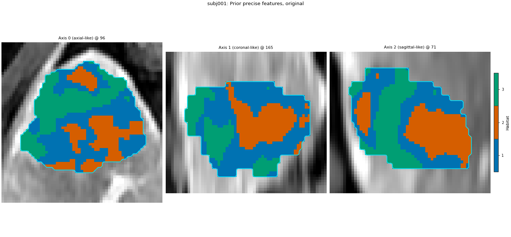
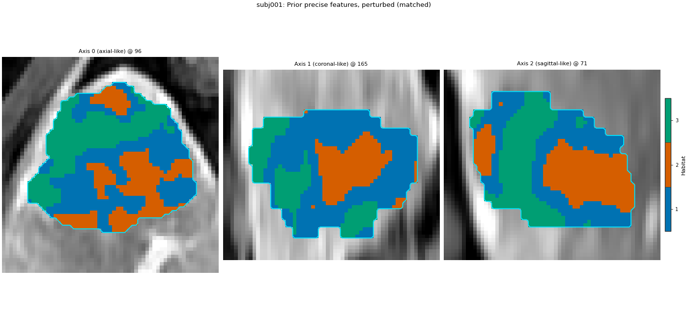
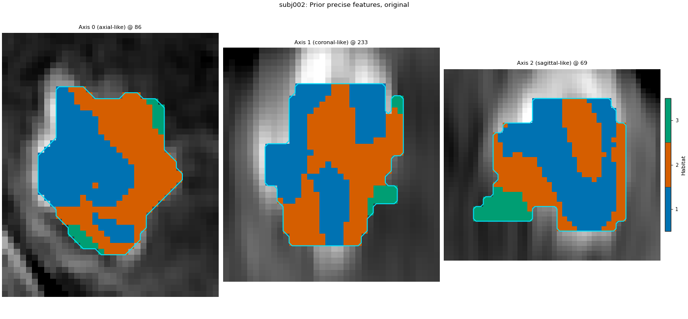
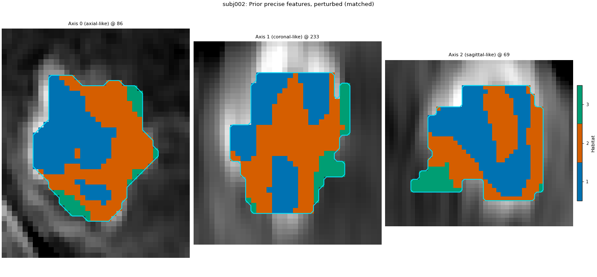
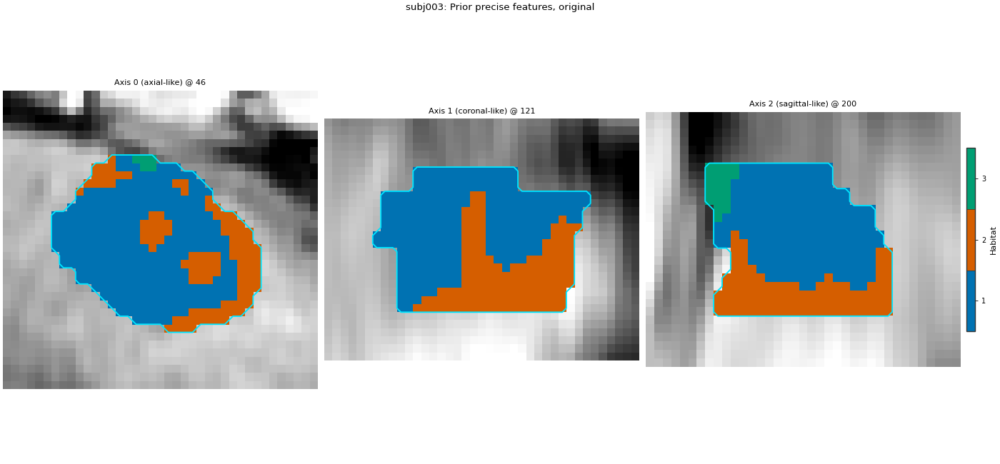
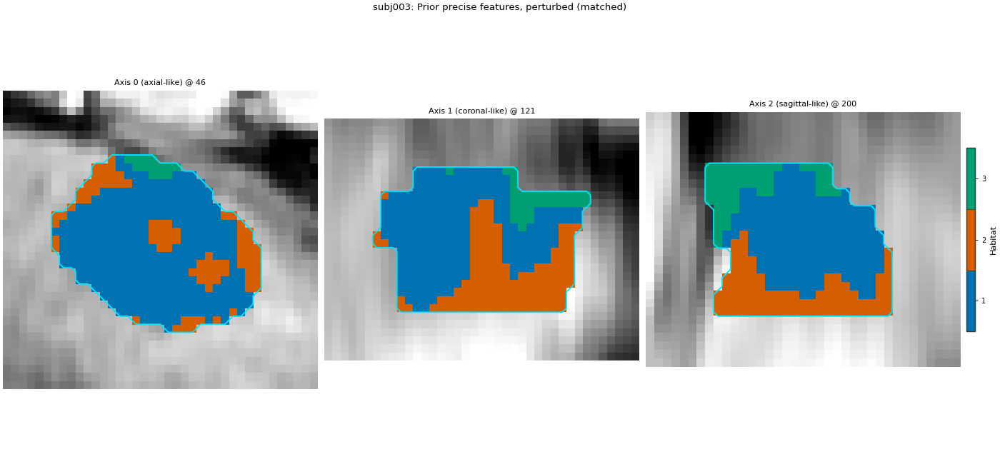
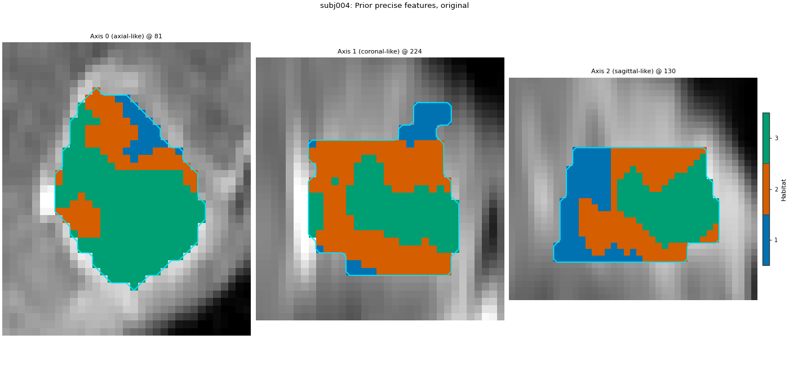
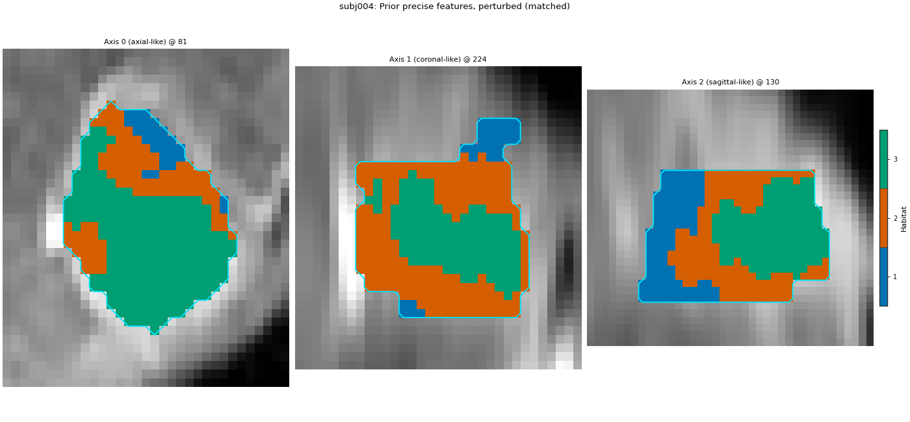
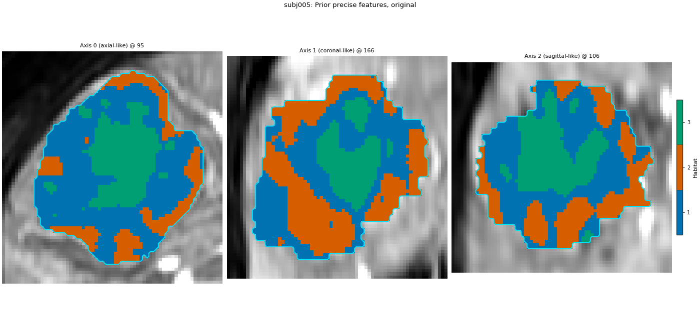
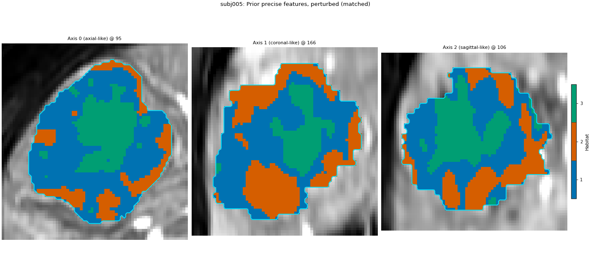
Cohort.map[_DefineAndLabelWithinSubject]: 0%| | 0/5 [00:00<?, ?it/s]voxel_radiomics: firstorder batch 1/35 0.146s peak=135MiB
voxel_radiomics: firstorder batch 2/35 0.015s peak=135MiB
voxel_radiomics: firstorder batch 3/35 0.017s peak=135MiB
voxel_radiomics: firstorder batch 4/35 0.015s peak=135MiB
voxel_radiomics: firstorder batch 5/35 0.014s peak=135MiB
voxel_radiomics: firstorder batch 6/35 0.013s peak=135MiB
voxel_radiomics: firstorder batch 7/35 0.012s peak=135MiB
voxel_radiomics: firstorder batch 8/35 0.010s peak=135MiB
voxel_radiomics: firstorder batch 9/35 0.011s peak=135MiB
voxel_radiomics: firstorder batch 10/35 0.011s peak=135MiB
voxel_radiomics: firstorder batch 11/35 0.011s peak=135MiB
voxel_radiomics: firstorder batch 12/35 0.011s peak=135MiB
voxel_radiomics: firstorder batch 13/35 0.011s peak=135MiB
voxel_radiomics: firstorder batch 14/35 0.011s peak=135MiB
voxel_radiomics: firstorder batch 15/35 0.010s peak=135MiB
voxel_radiomics: firstorder batch 16/35 0.011s peak=135MiB
voxel_radiomics: firstorder batch 17/35 0.013s peak=135MiB
voxel_radiomics: firstorder batch 18/35 0.014s peak=135MiB
voxel_radiomics: firstorder batch 19/35 0.012s peak=135MiB
voxel_radiomics: firstorder batch 20/35 0.010s peak=135MiB
voxel_radiomics: firstorder batch 21/35 0.010s peak=135MiB
voxel_radiomics: firstorder batch 22/35 0.011s peak=135MiB
voxel_radiomics: firstorder batch 23/35 0.011s peak=135MiB
voxel_radiomics: firstorder batch 24/35 0.014s peak=135MiB
voxel_radiomics: firstorder batch 25/35 0.012s peak=135MiB
voxel_radiomics: firstorder batch 26/35 0.012s peak=135MiB
voxel_radiomics: firstorder batch 27/35 0.014s peak=135MiB
voxel_radiomics: firstorder batch 28/35 0.013s peak=135MiB
voxel_radiomics: firstorder batch 29/35 0.013s peak=135MiB
voxel_radiomics: firstorder batch 30/35 0.011s peak=135MiB
voxel_radiomics: firstorder batch 31/35 0.015s peak=135MiB
voxel_radiomics: firstorder batch 32/35 0.010s peak=135MiB
voxel_radiomics: firstorder batch 33/35 0.012s peak=135MiB
voxel_radiomics: firstorder batch 34/35 0.012s peak=135MiB
voxel_radiomics: firstorder batch 35/35 0.012s peak=135MiB
voxel_radiomics: glcm batch 1/35 0.029s peak=1MiB
voxel_radiomics: glcm batch 2/35 0.024s peak=2MiB
voxel_radiomics: glcm batch 3/35 0.025s peak=3MiB
voxel_radiomics: glcm batch 4/35 0.024s peak=4MiB
voxel_radiomics: glcm batch 5/35 0.025s peak=5MiB
voxel_radiomics: glcm batch 6/35 0.024s peak=5MiB
voxel_radiomics: glcm batch 7/35 0.022s peak=6MiB
voxel_radiomics: glcm batch 8/35 0.027s peak=7MiB
voxel_radiomics: glcm batch 9/35 0.023s peak=8MiB
voxel_radiomics: glcm batch 10/35 0.025s peak=9MiB
voxel_radiomics: glcm batch 11/35 0.022s peak=10MiB
voxel_radiomics: glcm batch 12/35 0.027s peak=11MiB
voxel_radiomics: glcm batch 13/35 0.018s peak=12MiB
voxel_radiomics: glcm batch 14/35 0.022s peak=13MiB
voxel_radiomics: glcm batch 15/35 0.023s peak=13MiB
voxel_radiomics: glcm batch 16/35 0.021s peak=14MiB
voxel_radiomics: glcm batch 17/35 0.021s peak=15MiB
voxel_radiomics: glcm batch 18/35 0.019s peak=16MiB
voxel_radiomics: glcm batch 19/35 0.021s peak=17MiB
voxel_radiomics: glcm batch 20/35 0.022s peak=18MiB
voxel_radiomics: glcm batch 21/35 0.020s peak=19MiB
voxel_radiomics: glcm batch 22/35 0.020s peak=20MiB
voxel_radiomics: glcm batch 23/35 0.021s peak=21MiB
voxel_radiomics: glcm batch 24/35 0.025s peak=22MiB
voxel_radiomics: glcm batch 25/35 0.024s peak=22MiB
voxel_radiomics: glcm batch 26/35 0.023s peak=23MiB
voxel_radiomics: glcm batch 27/35 0.022s peak=24MiB
voxel_radiomics: glcm batch 28/35 0.021s peak=25MiB
voxel_radiomics: glcm batch 29/35 0.023s peak=26MiB
voxel_radiomics: glcm batch 30/35 0.023s peak=27MiB
voxel_radiomics: glcm batch 31/35 0.022s peak=28MiB
voxel_radiomics: glcm batch 32/35 0.024s peak=29MiB
voxel_radiomics: glcm batch 33/35 0.021s peak=30MiB
voxel_radiomics: glcm batch 34/35 0.023s peak=31MiB
voxel_radiomics: glcm batch 35/35 0.020s peak=31MiB
voxel_radiomics: glrlm batch 1/35 0.019s peak=32MiB
voxel_radiomics: glrlm batch 2/35 0.019s peak=33MiB
voxel_radiomics: glrlm batch 3/35 0.020s peak=34MiB
voxel_radiomics: glrlm batch 4/35 0.019s peak=35MiB
voxel_radiomics: glrlm batch 5/35 0.019s peak=36MiB
voxel_radiomics: glrlm batch 6/35 0.019s peak=37MiB
voxel_radiomics: glrlm batch 7/35 0.019s peak=38MiB
voxel_radiomics: glrlm batch 8/35 0.022s peak=39MiB
voxel_radiomics: glrlm batch 9/35 0.019s peak=40MiB
voxel_radiomics: glrlm batch 10/35 0.019s peak=40MiB
voxel_radiomics: glrlm batch 11/35 0.017s peak=41MiB
voxel_radiomics: glrlm batch 12/35 0.018s peak=42MiB
voxel_radiomics: glrlm batch 13/35 0.018s peak=43MiB
voxel_radiomics: glrlm batch 14/35 0.022s peak=44MiB
voxel_radiomics: glrlm batch 15/35 0.020s peak=45MiB
voxel_radiomics: glrlm batch 16/35 0.019s peak=46MiB
voxel_radiomics: glrlm batch 17/35 0.019s peak=47MiB
voxel_radiomics: glrlm batch 18/35 0.019s peak=48MiB
voxel_radiomics: glrlm batch 19/35 0.019s peak=49MiB
voxel_radiomics: glrlm batch 20/35 0.020s peak=49MiB
voxel_radiomics: glrlm batch 21/35 0.019s peak=50MiB
voxel_radiomics: glrlm batch 22/35 0.018s peak=51MiB
voxel_radiomics: glrlm batch 23/35 0.020s peak=52MiB
voxel_radiomics: glrlm batch 24/35 0.020s peak=53MiB
voxel_radiomics: glrlm batch 25/35 0.021s peak=54MiB
voxel_radiomics: glrlm batch 26/35 0.020s peak=55MiB
voxel_radiomics: glrlm batch 27/35 0.019s peak=56MiB
voxel_radiomics: glrlm batch 28/35 0.018s peak=57MiB
voxel_radiomics: glrlm batch 29/35 0.019s peak=58MiB
voxel_radiomics: glrlm batch 30/35 0.019s peak=1MiB
voxel_radiomics: glrlm batch 31/35 0.016s peak=2MiB
voxel_radiomics: glrlm batch 32/35 0.017s peak=3MiB
voxel_radiomics: glrlm batch 33/35 0.017s peak=4MiB
voxel_radiomics: glrlm batch 34/35 0.017s peak=5MiB
voxel_radiomics: glrlm batch 35/35 0.015s peak=5MiB
voxel_radiomics: glszm batch 1/35 0.016s peak=6MiB
voxel_radiomics: glszm batch 2/35 0.015s peak=7MiB
voxel_radiomics: glszm batch 3/35 0.015s peak=8MiB
voxel_radiomics: glszm batch 4/35 0.015s peak=9MiB
voxel_radiomics: glszm batch 5/35 0.015s peak=10MiB
voxel_radiomics: glszm batch 6/35 0.017s peak=11MiB
voxel_radiomics: glszm batch 7/35 0.015s peak=12MiB
voxel_radiomics: glszm batch 8/35 0.015s peak=13MiB
voxel_radiomics: glszm batch 9/35 0.015s peak=14MiB
voxel_radiomics: glszm batch 10/35 0.015s peak=14MiB
voxel_radiomics: glszm batch 11/35 0.014s peak=15MiB
voxel_radiomics: glszm batch 12/35 0.014s peak=16MiB
voxel_radiomics: glszm batch 13/35 0.013s peak=17MiB
voxel_radiomics: glszm batch 14/35 0.014s peak=18MiB
voxel_radiomics: glszm batch 15/35 0.015s peak=19MiB
voxel_radiomics: glszm batch 16/35 0.017s peak=20MiB
voxel_radiomics: glszm batch 17/35 0.015s peak=21MiB
voxel_radiomics: glszm batch 18/35 0.015s peak=22MiB
voxel_radiomics: glszm batch 19/35 0.016s peak=23MiB
voxel_radiomics: glszm batch 20/35 0.015s peak=23MiB
voxel_radiomics: glszm batch 21/35 0.014s peak=24MiB
voxel_radiomics: glszm batch 22/35 0.014s peak=25MiB
voxel_radiomics: glszm batch 23/35 0.015s peak=26MiB
voxel_radiomics: glszm batch 24/35 0.014s peak=27MiB
voxel_radiomics: glszm batch 25/35 0.016s peak=28MiB
voxel_radiomics: glszm batch 26/35 0.015s peak=29MiB
voxel_radiomics: glszm batch 27/35 0.015s peak=30MiB
voxel_radiomics: glszm batch 28/35 0.014s peak=31MiB
voxel_radiomics: glszm batch 29/35 0.015s peak=32MiB
voxel_radiomics: glszm batch 30/35 0.016s peak=32MiB
voxel_radiomics: glszm batch 31/35 0.016s peak=33MiB
voxel_radiomics: glszm batch 32/35 0.015s peak=34MiB
voxel_radiomics: glszm batch 33/35 0.014s peak=35MiB
voxel_radiomics: glszm batch 34/35 0.014s peak=36MiB
voxel_radiomics: glszm batch 35/35 0.014s peak=37MiB
voxel_radiomics: ngtdm batch 1/35 0.018s peak=41MiB
voxel_radiomics: ngtdm batch 2/35 0.021s peak=42MiB
voxel_radiomics: ngtdm batch 3/35 0.016s peak=42MiB
voxel_radiomics: ngtdm batch 4/35 0.014s peak=43MiB
voxel_radiomics: ngtdm batch 5/35 0.016s peak=44MiB
voxel_radiomics: ngtdm batch 6/35 0.023s peak=45MiB
voxel_radiomics: ngtdm batch 7/35 0.026s peak=47MiB
voxel_radiomics: ngtdm batch 8/35 0.020s peak=47MiB
voxel_radiomics: ngtdm batch 9/35 0.020s peak=48MiB
voxel_radiomics: ngtdm batch 10/35 0.016s peak=49MiB
voxel_radiomics: ngtdm batch 11/35 0.017s peak=50MiB
voxel_radiomics: ngtdm batch 12/35 0.018s peak=51MiB
voxel_radiomics: ngtdm batch 13/35 0.016s peak=52MiB
voxel_radiomics: ngtdm batch 14/35 0.016s peak=53MiB
voxel_radiomics: ngtdm batch 15/35 0.019s peak=53MiB
voxel_radiomics: ngtdm batch 16/35 0.020s peak=55MiB
voxel_radiomics: ngtdm batch 17/35 0.018s peak=55MiB
voxel_radiomics: ngtdm batch 18/35 0.020s peak=56MiB
voxel_radiomics: ngtdm batch 19/35 0.023s peak=57MiB
voxel_radiomics: ngtdm batch 20/35 0.018s peak=58MiB
voxel_radiomics: ngtdm batch 21/35 0.017s peak=59MiB
voxel_radiomics: ngtdm batch 22/35 0.018s peak=60MiB
voxel_radiomics: ngtdm batch 23/35 0.019s peak=61MiB
voxel_radiomics: ngtdm batch 24/35 0.020s peak=4MiB
voxel_radiomics: ngtdm batch 25/35 0.020s peak=5MiB
voxel_radiomics: ngtdm batch 26/35 0.021s peak=6MiB
voxel_radiomics: ngtdm batch 27/35 0.020s peak=7MiB
voxel_radiomics: ngtdm batch 28/35 0.031s peak=8MiB
voxel_radiomics: ngtdm batch 29/35 0.024s peak=9MiB
voxel_radiomics: ngtdm batch 30/35 0.020s peak=10MiB
voxel_radiomics: ngtdm batch 31/35 0.019s peak=10MiB
voxel_radiomics: ngtdm batch 32/35 0.018s peak=11MiB
voxel_radiomics: ngtdm batch 33/35 0.015s peak=12MiB
voxel_radiomics: ngtdm batch 34/35 0.018s peak=12MiB
voxel_radiomics: ngtdm batch 35/35 0.013s peak=12MiB
voxel_radiomics: gldm batch 1/35 0.014s peak=18MiB
voxel_radiomics: gldm batch 2/35 0.012s peak=21MiB
voxel_radiomics: gldm batch 3/35 0.013s peak=22MiB
voxel_radiomics: gldm batch 4/35 0.014s peak=22MiB
voxel_radiomics: gldm batch 5/35 0.016s peak=24MiB
voxel_radiomics: gldm batch 6/35 0.013s peak=24MiB
voxel_radiomics: gldm batch 7/35 0.012s peak=24MiB
voxel_radiomics: gldm batch 8/35 0.013s peak=25MiB
voxel_radiomics: gldm batch 9/35 0.013s peak=27MiB
voxel_radiomics: gldm batch 10/35 0.012s peak=27MiB
voxel_radiomics: gldm batch 11/35 0.012s peak=29MiB
voxel_radiomics: gldm batch 12/35 0.012s peak=31MiB
voxel_radiomics: gldm batch 13/35 0.011s peak=31MiB
voxel_radiomics: gldm batch 14/35 0.012s peak=31MiB
voxel_radiomics: gldm batch 15/35 0.013s peak=34MiB
voxel_radiomics: gldm batch 16/35 0.014s peak=36MiB
voxel_radiomics: gldm batch 17/35 0.013s peak=35MiB
voxel_radiomics: gldm batch 18/35 0.013s peak=37MiB
voxel_radiomics: gldm batch 19/35 0.013s peak=38MiB
voxel_radiomics: gldm batch 20/35 0.012s peak=38MiB
voxel_radiomics: gldm batch 21/35 0.013s peak=40MiB
voxel_radiomics: gldm batch 22/35 0.014s peak=40MiB
voxel_radiomics: gldm batch 23/35 0.012s peak=41MiB
voxel_radiomics: gldm batch 24/35 0.012s peak=42MiB
voxel_radiomics: gldm batch 25/35 0.012s peak=43MiB
voxel_radiomics: gldm batch 26/35 0.012s peak=43MiB
voxel_radiomics: gldm batch 27/35 0.012s peak=44MiB
voxel_radiomics: gldm batch 28/35 0.011s peak=45MiB
voxel_radiomics: gldm batch 29/35 0.013s peak=44MiB
voxel_radiomics: gldm batch 30/35 0.012s peak=45MiB
voxel_radiomics: gldm batch 31/35 0.011s peak=46MiB
voxel_radiomics: gldm batch 32/35 0.011s peak=47MiB
voxel_radiomics: gldm batch 33/35 0.015s peak=50MiB
voxel_radiomics: gldm batch 34/35 0.019s peak=51MiB
voxel_radiomics: gldm batch 35/35 0.016s peak=49MiB
Cohort.map[_DefineAndLabelWithinSubject]: 20%|██ | 1/5 [00:06<00:26, 6.75s/it]voxel_radiomics: firstorder batch 1/10 0.017s peak=44MiB
voxel_radiomics: firstorder batch 2/10 0.015s peak=44MiB
voxel_radiomics: firstorder batch 3/10 0.014s peak=44MiB
voxel_radiomics: firstorder batch 4/10 0.014s peak=44MiB
voxel_radiomics: firstorder batch 5/10 0.013s peak=44MiB
voxel_radiomics: firstorder batch 6/10 0.013s peak=44MiB
voxel_radiomics: firstorder batch 7/10 0.013s peak=44MiB
voxel_radiomics: firstorder batch 8/10 0.014s peak=44MiB
voxel_radiomics: firstorder batch 9/10 0.014s peak=44MiB
voxel_radiomics: firstorder batch 10/10 0.014s peak=44MiB
voxel_radiomics: glcm batch 1/10 0.064s peak=43MiB
voxel_radiomics: glcm batch 2/10 0.048s peak=43MiB
voxel_radiomics: glcm batch 3/10 0.045s peak=43MiB
voxel_radiomics: glcm batch 4/10 0.025s peak=43MiB
voxel_radiomics: glcm batch 5/10 0.024s peak=44MiB
voxel_radiomics: glcm batch 6/10 0.026s peak=44MiB
voxel_radiomics: glcm batch 7/10 0.024s peak=44MiB
voxel_radiomics: glcm batch 8/10 0.024s peak=44MiB
voxel_radiomics: glcm batch 9/10 0.023s peak=45MiB
voxel_radiomics: glcm batch 10/10 0.023s peak=45MiB
voxel_radiomics: glrlm batch 1/10 0.020s peak=45MiB
voxel_radiomics: glrlm batch 2/10 0.020s peak=45MiB
voxel_radiomics: glrlm batch 3/10 0.016s peak=46MiB
voxel_radiomics: glrlm batch 4/10 0.017s peak=46MiB
voxel_radiomics: glrlm batch 5/10 0.016s peak=46MiB
voxel_radiomics: glrlm batch 6/10 0.017s peak=46MiB
voxel_radiomics: glrlm batch 7/10 0.016s peak=47MiB
voxel_radiomics: glrlm batch 8/10 0.018s peak=0MiB
voxel_radiomics: glrlm batch 9/10 0.016s peak=1MiB
voxel_radiomics: glrlm batch 10/10 0.015s peak=1MiB
voxel_radiomics: glszm batch 1/10 0.015s peak=1MiB
voxel_radiomics: glszm batch 2/10 0.015s peak=1MiB
voxel_radiomics: glszm batch 3/10 0.015s peak=2MiB
voxel_radiomics: glszm batch 4/10 0.017s peak=2MiB
voxel_radiomics: glszm batch 5/10 0.018s peak=2MiB
voxel_radiomics: glszm batch 6/10 0.014s peak=2MiB
voxel_radiomics: glszm batch 7/10 0.014s peak=3MiB
voxel_radiomics: glszm batch 8/10 0.013s peak=3MiB
voxel_radiomics: glszm batch 9/10 0.014s peak=3MiB
voxel_radiomics: glszm batch 10/10 0.014s peak=3MiB
voxel_radiomics: ngtdm batch 1/10 0.023s peak=6MiB
voxel_radiomics: ngtdm batch 2/10 0.028s peak=7MiB
voxel_radiomics: ngtdm batch 3/10 0.029s peak=8MiB
voxel_radiomics: ngtdm batch 4/10 0.028s peak=8MiB
voxel_radiomics: ngtdm batch 5/10 0.022s peak=8MiB
voxel_radiomics: ngtdm batch 6/10 0.020s peak=8MiB
voxel_radiomics: ngtdm batch 7/10 0.019s peak=9MiB
voxel_radiomics: ngtdm batch 8/10 0.021s peak=10MiB
voxel_radiomics: ngtdm batch 9/10 0.022s peak=9MiB
voxel_radiomics: ngtdm batch 10/10 0.024s peak=9MiB
voxel_radiomics: gldm batch 1/10 0.015s peak=12MiB
voxel_radiomics: gldm batch 2/10 0.014s peak=15MiB
voxel_radiomics: gldm batch 3/10 0.013s peak=16MiB
voxel_radiomics: gldm batch 4/10 0.013s peak=14MiB
voxel_radiomics: gldm batch 5/10 0.014s peak=13MiB
voxel_radiomics: gldm batch 6/10 0.014s peak=14MiB
voxel_radiomics: gldm batch 7/10 0.015s peak=14MiB
voxel_radiomics: gldm batch 8/10 0.012s peak=14MiB
voxel_radiomics: gldm batch 9/10 0.015s peak=18MiB
voxel_radiomics: gldm batch 10/10 0.013s peak=15MiB
Cohort.map[_DefineAndLabelWithinSubject]: 40%|████ | 2/5 [00:10<00:15, 5.07s/it]voxel_radiomics: firstorder batch 1/7 0.015s peak=9MiB
voxel_radiomics: firstorder batch 2/7 0.014s peak=9MiB
voxel_radiomics: firstorder batch 3/7 0.014s peak=9MiB
voxel_radiomics: firstorder batch 4/7 0.014s peak=9MiB
voxel_radiomics: firstorder batch 5/7 0.015s peak=9MiB
voxel_radiomics: firstorder batch 6/7 0.014s peak=9MiB
voxel_radiomics: firstorder batch 7/7 0.012s peak=9MiB
voxel_radiomics: glcm batch 1/7 0.041s peak=9MiB
voxel_radiomics: glcm batch 2/7 0.038s peak=9MiB
voxel_radiomics: glcm batch 3/7 0.033s peak=9MiB
voxel_radiomics: glcm batch 4/7 0.027s peak=9MiB
voxel_radiomics: glcm batch 5/7 0.025s peak=9MiB
voxel_radiomics: glcm batch 6/7 0.027s peak=9MiB
voxel_radiomics: glcm batch 7/7 0.021s peak=10MiB
voxel_radiomics: glrlm batch 1/7 0.026s peak=10MiB
voxel_radiomics: glrlm batch 2/7 0.024s peak=10MiB
voxel_radiomics: glrlm batch 3/7 0.024s peak=10MiB
voxel_radiomics: glrlm batch 4/7 0.022s peak=10MiB
voxel_radiomics: glrlm batch 5/7 0.019s peak=10MiB
voxel_radiomics: glrlm batch 6/7 0.017s peak=11MiB
voxel_radiomics: glrlm batch 7/7 0.013s peak=11MiB
voxel_radiomics: glszm batch 1/7 0.018s peak=11MiB
voxel_radiomics: glszm batch 2/7 0.015s peak=11MiB
voxel_radiomics: glszm batch 3/7 0.015s peak=11MiB
voxel_radiomics: glszm batch 4/7 0.016s peak=11MiB
voxel_radiomics: glszm batch 5/7 0.015s peak=12MiB
voxel_radiomics: glszm batch 6/7 0.018s peak=12MiB
voxel_radiomics: glszm batch 7/7 0.015s peak=12MiB
voxel_radiomics: ngtdm batch 1/7 0.012s peak=13MiB
voxel_radiomics: ngtdm batch 2/7 0.012s peak=14MiB
voxel_radiomics: ngtdm batch 3/7 0.013s peak=14MiB
voxel_radiomics: ngtdm batch 4/7 0.012s peak=14MiB
voxel_radiomics: ngtdm batch 5/7 0.012s peak=14MiB
voxel_radiomics: ngtdm batch 6/7 0.011s peak=14MiB
voxel_radiomics: ngtdm batch 7/7 0.010s peak=13MiB
voxel_radiomics: gldm batch 1/7 0.015s peak=18MiB
voxel_radiomics: gldm batch 2/7 0.013s peak=19MiB
voxel_radiomics: gldm batch 3/7 0.012s peak=20MiB
voxel_radiomics: gldm batch 4/7 0.014s peak=8MiB
voxel_radiomics: gldm batch 5/7 0.015s peak=8MiB
voxel_radiomics: gldm batch 6/7 0.012s peak=7MiB
voxel_radiomics: gldm batch 7/7 0.012s peak=1MiB
Cohort.map[_DefineAndLabelWithinSubject]: 60%|██████ | 3/5 [00:12<00:08, 4.30s/it]voxel_radiomics: firstorder batch 1/6 0.021s peak=2MiB
voxel_radiomics: firstorder batch 2/6 0.107s peak=2MiB
voxel_radiomics: firstorder batch 3/6 0.015s peak=2MiB
voxel_radiomics: firstorder batch 4/6 0.014s peak=2MiB
voxel_radiomics: firstorder batch 5/6 0.014s peak=2MiB
voxel_radiomics: firstorder batch 6/6 0.014s peak=2MiB
voxel_radiomics: glcm batch 1/6 0.028s peak=1MiB
voxel_radiomics: glcm batch 2/6 0.027s peak=1MiB
voxel_radiomics: glcm batch 3/6 0.025s peak=1MiB
voxel_radiomics: glcm batch 4/6 0.022s peak=1MiB
voxel_radiomics: glcm batch 5/6 0.024s peak=2MiB
voxel_radiomics: glcm batch 6/6 0.023s peak=2MiB
voxel_radiomics: glrlm batch 1/6 0.021s peak=2MiB
voxel_radiomics: glrlm batch 2/6 0.022s peak=2MiB
voxel_radiomics: glrlm batch 3/6 0.021s peak=2MiB
voxel_radiomics: glrlm batch 4/6 0.021s peak=2MiB
voxel_radiomics: glrlm batch 5/6 0.021s peak=3MiB
voxel_radiomics: glrlm batch 6/6 0.018s peak=3MiB
voxel_radiomics: glszm batch 1/6 0.015s peak=3MiB
voxel_radiomics: glszm batch 2/6 0.015s peak=3MiB
voxel_radiomics: glszm batch 3/6 0.014s peak=3MiB
voxel_radiomics: glszm batch 4/6 0.014s peak=4MiB
voxel_radiomics: glszm batch 5/6 0.014s peak=4MiB
voxel_radiomics: glszm batch 6/6 0.013s peak=4MiB
voxel_radiomics: ngtdm batch 1/6 0.019s peak=7MiB
voxel_radiomics: ngtdm batch 2/6 0.022s peak=7MiB
voxel_radiomics: ngtdm batch 3/6 0.016s peak=7MiB
voxel_radiomics: ngtdm batch 4/6 0.015s peak=7MiB
voxel_radiomics: ngtdm batch 5/6 0.015s peak=8MiB
voxel_radiomics: ngtdm batch 6/6 0.014s peak=8MiB
voxel_radiomics: gldm batch 1/6 0.013s peak=12MiB
voxel_radiomics: gldm batch 2/6 0.011s peak=12MiB
voxel_radiomics: gldm batch 3/6 0.011s peak=14MiB
voxel_radiomics: gldm batch 4/6 0.011s peak=12MiB
voxel_radiomics: gldm batch 5/6 0.012s peak=13MiB
voxel_radiomics: gldm batch 6/6 0.011s peak=10MiB
Cohort.map[_DefineAndLabelWithinSubject]: 80%|████████ | 4/5 [00:15<00:03, 3.93s/it]voxel_radiomics: firstorder batch 1/81 0.015s peak=11MiB
voxel_radiomics: firstorder batch 2/81 0.015s peak=11MiB
voxel_radiomics: firstorder batch 3/81 0.015s peak=11MiB
voxel_radiomics: firstorder batch 4/81 0.012s peak=11MiB
voxel_radiomics: firstorder batch 5/81 0.014s peak=11MiB
voxel_radiomics: firstorder batch 6/81 0.011s peak=11MiB
voxel_radiomics: firstorder batch 7/81 0.013s peak=11MiB
voxel_radiomics: firstorder batch 8/81 0.015s peak=11MiB
voxel_radiomics: firstorder batch 9/81 0.015s peak=11MiB
voxel_radiomics: firstorder batch 10/81 0.013s peak=11MiB
voxel_radiomics: firstorder batch 11/81 0.013s peak=11MiB
voxel_radiomics: firstorder batch 12/81 0.014s peak=11MiB
voxel_radiomics: firstorder batch 13/81 0.014s peak=11MiB
voxel_radiomics: firstorder batch 14/81 0.012s peak=11MiB
voxel_radiomics: firstorder batch 15/81 0.014s peak=11MiB
voxel_radiomics: firstorder batch 16/81 0.012s peak=11MiB
voxel_radiomics: firstorder batch 17/81 0.015s peak=11MiB
voxel_radiomics: firstorder batch 18/81 0.016s peak=11MiB
voxel_radiomics: firstorder batch 19/81 0.017s peak=11MiB
voxel_radiomics: firstorder batch 20/81 0.015s peak=11MiB
voxel_radiomics: firstorder batch 21/81 0.012s peak=11MiB
voxel_radiomics: firstorder batch 22/81 0.012s peak=11MiB
voxel_radiomics: firstorder batch 23/81 0.015s peak=11MiB
voxel_radiomics: firstorder batch 24/81 0.014s peak=11MiB
voxel_radiomics: firstorder batch 25/81 0.015s peak=11MiB
voxel_radiomics: firstorder batch 26/81 0.014s peak=11MiB
voxel_radiomics: firstorder batch 27/81 0.013s peak=11MiB
voxel_radiomics: firstorder batch 28/81 0.015s peak=11MiB
voxel_radiomics: firstorder batch 29/81 0.016s peak=11MiB
voxel_radiomics: firstorder batch 30/81 0.014s peak=11MiB
voxel_radiomics: firstorder batch 31/81 0.014s peak=11MiB
voxel_radiomics: firstorder batch 32/81 0.013s peak=11MiB
voxel_radiomics: firstorder batch 33/81 0.015s peak=11MiB
voxel_radiomics: firstorder batch 34/81 0.014s peak=11MiB
voxel_radiomics: firstorder batch 35/81 0.015s peak=11MiB
voxel_radiomics: firstorder batch 36/81 0.015s peak=11MiB
voxel_radiomics: firstorder batch 37/81 0.012s peak=11MiB
voxel_radiomics: firstorder batch 38/81 0.013s peak=11MiB
voxel_radiomics: firstorder batch 39/81 0.012s peak=11MiB
voxel_radiomics: firstorder batch 40/81 0.014s peak=11MiB
voxel_radiomics: firstorder batch 41/81 0.013s peak=11MiB
voxel_radiomics: firstorder batch 42/81 0.013s peak=11MiB
voxel_radiomics: firstorder batch 43/81 0.013s peak=11MiB
voxel_radiomics: firstorder batch 44/81 0.011s peak=11MiB
voxel_radiomics: firstorder batch 45/81 0.012s peak=11MiB
voxel_radiomics: firstorder batch 46/81 0.015s peak=11MiB
voxel_radiomics: firstorder batch 47/81 0.013s peak=11MiB
voxel_radiomics: firstorder batch 48/81 0.012s peak=11MiB
voxel_radiomics: firstorder batch 49/81 0.012s peak=11MiB
voxel_radiomics: firstorder batch 50/81 0.016s peak=11MiB
voxel_radiomics: firstorder batch 51/81 0.014s peak=11MiB
voxel_radiomics: firstorder batch 52/81 0.017s peak=11MiB
voxel_radiomics: firstorder batch 53/81 0.018s peak=11MiB
voxel_radiomics: firstorder batch 54/81 0.013s peak=11MiB
voxel_radiomics: firstorder batch 55/81 0.015s peak=11MiB
voxel_radiomics: firstorder batch 56/81 0.013s peak=11MiB
voxel_radiomics: firstorder batch 57/81 0.012s peak=11MiB
voxel_radiomics: firstorder batch 58/81 0.015s peak=11MiB
voxel_radiomics: firstorder batch 59/81 0.013s peak=11MiB
voxel_radiomics: firstorder batch 60/81 0.011s peak=11MiB
voxel_radiomics: firstorder batch 61/81 0.013s peak=11MiB
voxel_radiomics: firstorder batch 62/81 0.017s peak=11MiB
voxel_radiomics: firstorder batch 63/81 0.014s peak=11MiB
voxel_radiomics: firstorder batch 64/81 0.015s peak=11MiB
voxel_radiomics: firstorder batch 65/81 0.014s peak=11MiB
voxel_radiomics: firstorder batch 66/81 0.012s peak=11MiB
voxel_radiomics: firstorder batch 67/81 0.012s peak=11MiB
voxel_radiomics: firstorder batch 68/81 0.011s peak=11MiB
voxel_radiomics: firstorder batch 69/81 0.012s peak=11MiB
voxel_radiomics: firstorder batch 70/81 0.012s peak=11MiB
voxel_radiomics: firstorder batch 71/81 0.013s peak=11MiB
voxel_radiomics: firstorder batch 72/81 0.012s peak=11MiB
voxel_radiomics: firstorder batch 73/81 0.012s peak=11MiB
voxel_radiomics: firstorder batch 74/81 0.015s peak=11MiB
voxel_radiomics: firstorder batch 75/81 0.011s peak=11MiB
voxel_radiomics: firstorder batch 76/81 0.012s peak=11MiB
voxel_radiomics: firstorder batch 77/81 0.013s peak=11MiB
voxel_radiomics: firstorder batch 78/81 0.013s peak=11MiB
voxel_radiomics: firstorder batch 79/81 0.012s peak=11MiB
voxel_radiomics: firstorder batch 80/81 0.012s peak=11MiB
voxel_radiomics: firstorder batch 81/81 0.012s peak=10MiB
voxel_radiomics: glcm batch 1/81 0.047s peak=8MiB
voxel_radiomics: glcm batch 2/81 0.040s peak=10MiB
voxel_radiomics: glcm batch 3/81 0.035s peak=12MiB
voxel_radiomics: glcm batch 4/81 0.034s peak=14MiB
voxel_radiomics: glcm batch 5/81 0.032s peak=16MiB
voxel_radiomics: glcm batch 6/81 0.034s peak=18MiB
voxel_radiomics: glcm batch 7/81 0.035s peak=20MiB
voxel_radiomics: glcm batch 8/81 0.032s peak=22MiB
voxel_radiomics: glcm batch 9/81 0.030s peak=24MiB
voxel_radiomics: glcm batch 10/81 0.027s peak=26MiB
voxel_radiomics: glcm batch 11/81 0.033s peak=28MiB
voxel_radiomics: glcm batch 12/81 0.032s peak=30MiB
voxel_radiomics: glcm batch 13/81 0.030s peak=32MiB
voxel_radiomics: glcm batch 14/81 0.029s peak=34MiB
voxel_radiomics: glcm batch 15/81 0.029s peak=36MiB
voxel_radiomics: glcm batch 16/81 0.033s peak=38MiB
voxel_radiomics: glcm batch 17/81 0.028s peak=40MiB
voxel_radiomics: glcm batch 18/81 0.031s peak=42MiB
voxel_radiomics: glcm batch 19/81 0.024s peak=44MiB
voxel_radiomics: glcm batch 20/81 0.029s peak=46MiB
voxel_radiomics: glcm batch 21/81 0.026s peak=48MiB
voxel_radiomics: glcm batch 22/81 0.030s peak=50MiB
voxel_radiomics: glcm batch 23/81 0.031s peak=52MiB
voxel_radiomics: glcm batch 24/81 0.027s peak=54MiB
voxel_radiomics: glcm batch 25/81 0.027s peak=56MiB
voxel_radiomics: glcm batch 26/81 0.029s peak=58MiB
voxel_radiomics: glcm batch 27/81 0.028s peak=60MiB
voxel_radiomics: glcm batch 28/81 0.028s peak=62MiB
voxel_radiomics: glcm batch 29/81 0.027s peak=63MiB
voxel_radiomics: glcm batch 30/81 0.028s peak=65MiB
voxel_radiomics: glcm batch 31/81 0.031s peak=2MiB
voxel_radiomics: glcm batch 32/81 0.027s peak=4MiB
voxel_radiomics: glcm batch 33/81 0.029s peak=6MiB
voxel_radiomics: glcm batch 34/81 0.027s peak=8MiB
voxel_radiomics: glcm batch 35/81 0.028s peak=10MiB
voxel_radiomics: glcm batch 36/81 0.028s peak=12MiB
voxel_radiomics: glcm batch 37/81 0.026s peak=14MiB
voxel_radiomics: glcm batch 38/81 0.029s peak=16MiB
voxel_radiomics: glcm batch 39/81 0.028s peak=18MiB
voxel_radiomics: glcm batch 40/81 0.025s peak=20MiB
voxel_radiomics: glcm batch 41/81 0.027s peak=22MiB
voxel_radiomics: glcm batch 42/81 0.026s peak=23MiB
voxel_radiomics: glcm batch 43/81 0.028s peak=25MiB
voxel_radiomics: glcm batch 44/81 0.028s peak=27MiB
voxel_radiomics: glcm batch 45/81 0.027s peak=29MiB
voxel_radiomics: glcm batch 46/81 0.029s peak=31MiB
voxel_radiomics: glcm batch 47/81 0.028s peak=33MiB
voxel_radiomics: glcm batch 48/81 0.027s peak=35MiB
voxel_radiomics: glcm batch 49/81 0.027s peak=37MiB
voxel_radiomics: glcm batch 50/81 0.026s peak=39MiB
voxel_radiomics: glcm batch 51/81 0.028s peak=41MiB
voxel_radiomics: glcm batch 52/81 0.028s peak=43MiB
voxel_radiomics: glcm batch 53/81 0.028s peak=45MiB
voxel_radiomics: glcm batch 54/81 0.025s peak=47MiB
voxel_radiomics: glcm batch 55/81 0.029s peak=49MiB
voxel_radiomics: glcm batch 56/81 0.028s peak=51MiB
voxel_radiomics: glcm batch 57/81 0.028s peak=53MiB
voxel_radiomics: glcm batch 58/81 0.026s peak=55MiB
voxel_radiomics: glcm batch 59/81 0.028s peak=58MiB
voxel_radiomics: glcm batch 60/81 0.026s peak=60MiB
voxel_radiomics: glcm batch 61/81 0.029s peak=61MiB
voxel_radiomics: glcm batch 62/81 0.025s peak=63MiB
voxel_radiomics: glcm batch 63/81 0.028s peak=65MiB
voxel_radiomics: glcm batch 64/81 0.028s peak=67MiB
voxel_radiomics: glcm batch 65/81 0.026s peak=69MiB
voxel_radiomics: glcm batch 66/81 0.030s peak=71MiB
voxel_radiomics: glcm batch 67/81 0.025s peak=73MiB
voxel_radiomics: glcm batch 68/81 0.028s peak=75MiB
voxel_radiomics: glcm batch 69/81 0.027s peak=77MiB
voxel_radiomics: glcm batch 70/81 0.027s peak=79MiB
voxel_radiomics: glcm batch 71/81 0.027s peak=81MiB
voxel_radiomics: glcm batch 72/81 0.029s peak=83MiB
voxel_radiomics: glcm batch 73/81 0.027s peak=85MiB
voxel_radiomics: glcm batch 74/81 0.027s peak=87MiB
voxel_radiomics: glcm batch 75/81 0.028s peak=89MiB
voxel_radiomics: glcm batch 76/81 0.027s peak=91MiB
voxel_radiomics: glcm batch 77/81 0.028s peak=93MiB
voxel_radiomics: glcm batch 78/81 0.027s peak=95MiB
voxel_radiomics: glcm batch 79/81 0.028s peak=97MiB
voxel_radiomics: glcm batch 80/81 0.027s peak=98MiB
voxel_radiomics: glcm batch 81/81 0.017s peak=100MiB
voxel_radiomics: glrlm batch 1/81 0.022s peak=102MiB
voxel_radiomics: glrlm batch 2/81 0.022s peak=104MiB
voxel_radiomics: glrlm batch 3/81 0.020s peak=106MiB
voxel_radiomics: glrlm batch 4/81 0.019s peak=108MiB
voxel_radiomics: glrlm batch 5/81 0.018s peak=110MiB
voxel_radiomics: glrlm batch 6/81 0.020s peak=112MiB
voxel_radiomics: glrlm batch 7/81 0.021s peak=114MiB
voxel_radiomics: glrlm batch 8/81 0.020s peak=116MiB
voxel_radiomics: glrlm batch 9/81 0.020s peak=118MiB
voxel_radiomics: glrlm batch 10/81 0.021s peak=120MiB
voxel_radiomics: glrlm batch 11/81 0.021s peak=122MiB
voxel_radiomics: glrlm batch 12/81 0.020s peak=124MiB
voxel_radiomics: glrlm batch 13/81 0.021s peak=126MiB
voxel_radiomics: glrlm batch 14/81 0.021s peak=2MiB
voxel_radiomics: glrlm batch 15/81 0.019s peak=4MiB
voxel_radiomics: glrlm batch 16/81 0.019s peak=6MiB
voxel_radiomics: glrlm batch 17/81 0.022s peak=8MiB
voxel_radiomics: glrlm batch 18/81 0.021s peak=10MiB
voxel_radiomics: glrlm batch 19/81 0.020s peak=12MiB
voxel_radiomics: glrlm batch 20/81 0.020s peak=14MiB
voxel_radiomics: glrlm batch 21/81 0.019s peak=16MiB
voxel_radiomics: glrlm batch 22/81 0.018s peak=18MiB
voxel_radiomics: glrlm batch 23/81 0.018s peak=20MiB
voxel_radiomics: glrlm batch 24/81 0.019s peak=22MiB
voxel_radiomics: glrlm batch 25/81 0.019s peak=23MiB
voxel_radiomics: glrlm batch 26/81 0.019s peak=25MiB
voxel_radiomics: glrlm batch 27/81 0.019s peak=27MiB
voxel_radiomics: glrlm batch 28/81 0.024s peak=29MiB
voxel_radiomics: glrlm batch 29/81 0.020s peak=32MiB
voxel_radiomics: glrlm batch 30/81 0.020s peak=34MiB
voxel_radiomics: glrlm batch 31/81 0.019s peak=36MiB
voxel_radiomics: glrlm batch 32/81 0.019s peak=38MiB
voxel_radiomics: glrlm batch 33/81 0.021s peak=40MiB
voxel_radiomics: glrlm batch 34/81 0.019s peak=42MiB
voxel_radiomics: glrlm batch 35/81 0.019s peak=44MiB
voxel_radiomics: glrlm batch 36/81 0.021s peak=46MiB
voxel_radiomics: glrlm batch 37/81 0.021s peak=48MiB
voxel_radiomics: glrlm batch 38/81 0.019s peak=50MiB
voxel_radiomics: glrlm batch 39/81 0.021s peak=52MiB
voxel_radiomics: glrlm batch 40/81 0.020s peak=54MiB
voxel_radiomics: glrlm batch 41/81 0.020s peak=56MiB
voxel_radiomics: glrlm batch 42/81 0.021s peak=58MiB
voxel_radiomics: glrlm batch 43/81 0.021s peak=60MiB
voxel_radiomics: glrlm batch 44/81 0.024s peak=61MiB
voxel_radiomics: glrlm batch 45/81 0.020s peak=63MiB
voxel_radiomics: glrlm batch 46/81 0.020s peak=65MiB
voxel_radiomics: glrlm batch 47/81 0.018s peak=67MiB
voxel_radiomics: glrlm batch 48/81 0.020s peak=69MiB
voxel_radiomics: glrlm batch 49/81 0.020s peak=71MiB
voxel_radiomics: glrlm batch 50/81 0.020s peak=73MiB
voxel_radiomics: glrlm batch 51/81 0.023s peak=75MiB
voxel_radiomics: glrlm batch 52/81 0.023s peak=77MiB
voxel_radiomics: glrlm batch 53/81 0.023s peak=79MiB
voxel_radiomics: glrlm batch 54/81 0.021s peak=81MiB
voxel_radiomics: glrlm batch 55/81 0.019s peak=83MiB
voxel_radiomics: glrlm batch 56/81 0.020s peak=85MiB
voxel_radiomics: glrlm batch 57/81 0.023s peak=87MiB
voxel_radiomics: glrlm batch 58/81 0.023s peak=89MiB
voxel_radiomics: glrlm batch 59/81 0.028s peak=91MiB
voxel_radiomics: glrlm batch 60/81 0.022s peak=93MiB
voxel_radiomics: glrlm batch 61/81 0.023s peak=95MiB
voxel_radiomics: glrlm batch 62/81 0.022s peak=97MiB
voxel_radiomics: glrlm batch 63/81 0.021s peak=98MiB
voxel_radiomics: glrlm batch 64/81 0.022s peak=100MiB
voxel_radiomics: glrlm batch 65/81 0.021s peak=102MiB
voxel_radiomics: glrlm batch 66/81 0.021s peak=104MiB
voxel_radiomics: glrlm batch 67/81 0.022s peak=106MiB
voxel_radiomics: glrlm batch 68/81 0.029s peak=108MiB
voxel_radiomics: glrlm batch 69/81 0.021s peak=110MiB
voxel_radiomics: glrlm batch 70/81 0.022s peak=112MiB
voxel_radiomics: glrlm batch 71/81 0.020s peak=114MiB
voxel_radiomics: glrlm batch 72/81 0.018s peak=116MiB
voxel_radiomics: glrlm batch 73/81 0.017s peak=118MiB
voxel_radiomics: glrlm batch 74/81 0.017s peak=120MiB
voxel_radiomics: glrlm batch 75/81 0.018s peak=122MiB
voxel_radiomics: glrlm batch 76/81 0.019s peak=124MiB
voxel_radiomics: glrlm batch 77/81 0.019s peak=126MiB
voxel_radiomics: glrlm batch 78/81 0.018s peak=2MiB
voxel_radiomics: glrlm batch 79/81 0.017s peak=4MiB
voxel_radiomics: glrlm batch 80/81 0.017s peak=6MiB
voxel_radiomics: glrlm batch 81/81 0.013s peak=8MiB
voxel_radiomics: glszm batch 1/81 0.015s peak=10MiB
voxel_radiomics: glszm batch 2/81 0.018s peak=12MiB
voxel_radiomics: glszm batch 3/81 0.015s peak=14MiB
voxel_radiomics: glszm batch 4/81 0.015s peak=16MiB
voxel_radiomics: glszm batch 5/81 0.017s peak=18MiB
voxel_radiomics: glszm batch 6/81 0.015s peak=20MiB
voxel_radiomics: glszm batch 7/81 0.015s peak=22MiB
voxel_radiomics: glszm batch 8/81 0.015s peak=23MiB
voxel_radiomics: glszm batch 9/81 0.016s peak=25MiB
voxel_radiomics: glszm batch 10/81 0.015s peak=27MiB
voxel_radiomics: glszm batch 11/81 0.014s peak=29MiB
voxel_radiomics: glszm batch 12/81 0.014s peak=32MiB
voxel_radiomics: glszm batch 13/81 0.017s peak=34MiB
voxel_radiomics: glszm batch 14/81 0.020s peak=36MiB
voxel_radiomics: glszm batch 15/81 0.016s peak=38MiB
voxel_radiomics: glszm batch 16/81 0.016s peak=40MiB
voxel_radiomics: glszm batch 17/81 0.016s peak=42MiB
voxel_radiomics: glszm batch 18/81 0.015s peak=44MiB
voxel_radiomics: glszm batch 19/81 0.015s peak=46MiB
voxel_radiomics: glszm batch 20/81 0.015s peak=48MiB
voxel_radiomics: glszm batch 21/81 0.016s peak=50MiB
voxel_radiomics: glszm batch 22/81 0.015s peak=52MiB
voxel_radiomics: glszm batch 23/81 0.015s peak=54MiB
voxel_radiomics: glszm batch 24/81 0.016s peak=56MiB
voxel_radiomics: glszm batch 25/81 0.017s peak=58MiB
voxel_radiomics: glszm batch 26/81 0.015s peak=60MiB
voxel_radiomics: glszm batch 27/81 0.015s peak=61MiB
voxel_radiomics: glszm batch 28/81 0.015s peak=63MiB
voxel_radiomics: glszm batch 29/81 0.015s peak=65MiB
voxel_radiomics: glszm batch 30/81 0.015s peak=67MiB
voxel_radiomics: glszm batch 31/81 0.015s peak=69MiB
voxel_radiomics: glszm batch 32/81 0.014s peak=71MiB
voxel_radiomics: glszm batch 33/81 0.018s peak=73MiB
voxel_radiomics: glszm batch 34/81 0.022s peak=75MiB
voxel_radiomics: glszm batch 35/81 0.025s peak=77MiB
voxel_radiomics: glszm batch 36/81 0.022s peak=79MiB
voxel_radiomics: glszm batch 37/81 0.023s peak=81MiB
voxel_radiomics: glszm batch 38/81 0.023s peak=83MiB
voxel_radiomics: glszm batch 39/81 0.022s peak=85MiB
voxel_radiomics: glszm batch 40/81 0.018s peak=87MiB
voxel_radiomics: glszm batch 41/81 0.019s peak=89MiB
voxel_radiomics: glszm batch 42/81 0.019s peak=91MiB
voxel_radiomics: glszm batch 43/81 0.018s peak=93MiB
voxel_radiomics: glszm batch 44/81 0.018s peak=95MiB
voxel_radiomics: glszm batch 45/81 0.020s peak=97MiB
voxel_radiomics: glszm batch 46/81 0.019s peak=98MiB
voxel_radiomics: glszm batch 47/81 0.019s peak=100MiB
voxel_radiomics: glszm batch 48/81 0.020s peak=102MiB
voxel_radiomics: glszm batch 49/81 0.018s peak=104MiB
voxel_radiomics: glszm batch 50/81 0.019s peak=106MiB
voxel_radiomics: glszm batch 51/81 0.022s peak=108MiB
voxel_radiomics: glszm batch 52/81 0.019s peak=110MiB
voxel_radiomics: glszm batch 53/81 0.021s peak=112MiB
voxel_radiomics: glszm batch 54/81 0.022s peak=114MiB
voxel_radiomics: glszm batch 55/81 0.017s peak=116MiB
voxel_radiomics: glszm batch 56/81 0.018s peak=118MiB
voxel_radiomics: glszm batch 57/81 0.016s peak=120MiB
voxel_radiomics: glszm batch 58/81 0.016s peak=122MiB
voxel_radiomics: glszm batch 59/81 0.017s peak=124MiB
voxel_radiomics: glszm batch 60/81 0.018s peak=126MiB
voxel_radiomics: glszm batch 61/81 0.019s peak=2MiB
voxel_radiomics: glszm batch 62/81 0.019s peak=4MiB
voxel_radiomics: glszm batch 63/81 0.019s peak=6MiB
voxel_radiomics: glszm batch 64/81 0.019s peak=8MiB
voxel_radiomics: glszm batch 65/81 0.018s peak=10MiB
voxel_radiomics: glszm batch 66/81 0.019s peak=12MiB
voxel_radiomics: glszm batch 67/81 0.021s peak=14MiB
voxel_radiomics: glszm batch 68/81 0.015s peak=16MiB
voxel_radiomics: glszm batch 69/81 0.016s peak=18MiB
voxel_radiomics: glszm batch 70/81 0.015s peak=20MiB
voxel_radiomics: glszm batch 71/81 0.015s peak=22MiB
voxel_radiomics: glszm batch 72/81 0.014s peak=23MiB
voxel_radiomics: glszm batch 73/81 0.015s peak=25MiB
voxel_radiomics: glszm batch 74/81 0.017s peak=27MiB
voxel_radiomics: glszm batch 75/81 0.016s peak=29MiB
voxel_radiomics: glszm batch 76/81 0.016s peak=32MiB
voxel_radiomics: glszm batch 77/81 0.015s peak=34MiB
voxel_radiomics: glszm batch 78/81 0.015s peak=36MiB
voxel_radiomics: glszm batch 79/81 0.015s peak=38MiB
voxel_radiomics: glszm batch 80/81 0.016s peak=40MiB
voxel_radiomics: glszm batch 81/81 0.014s peak=42MiB
voxel_radiomics: ngtdm batch 1/81 0.037s peak=48MiB
voxel_radiomics: ngtdm batch 2/81 0.045s peak=52MiB
voxel_radiomics: ngtdm batch 3/81 0.031s peak=54MiB
voxel_radiomics: ngtdm batch 4/81 0.029s peak=55MiB
voxel_radiomics: ngtdm batch 5/81 0.031s peak=57MiB
voxel_radiomics: ngtdm batch 6/81 0.030s peak=59MiB
voxel_radiomics: ngtdm batch 7/81 0.029s peak=61MiB
voxel_radiomics: ngtdm batch 8/81 0.028s peak=63MiB
voxel_radiomics: ngtdm batch 9/81 0.028s peak=66MiB
voxel_radiomics: ngtdm batch 10/81 0.028s peak=67MiB
voxel_radiomics: ngtdm batch 11/81 0.031s peak=69MiB
voxel_radiomics: ngtdm batch 12/81 0.031s peak=71MiB
voxel_radiomics: ngtdm batch 13/81 0.032s peak=74MiB
voxel_radiomics: ngtdm batch 14/81 0.051s peak=75MiB
voxel_radiomics: ngtdm batch 15/81 0.030s peak=78MiB
voxel_radiomics: ngtdm batch 16/81 0.059s peak=80MiB
voxel_radiomics: ngtdm batch 17/81 0.032s peak=81MiB
voxel_radiomics: ngtdm batch 18/81 0.041s peak=83MiB
voxel_radiomics: ngtdm batch 19/81 0.035s peak=85MiB
voxel_radiomics: ngtdm batch 20/81 0.032s peak=87MiB
voxel_radiomics: ngtdm batch 21/81 0.060s peak=90MiB
voxel_radiomics: ngtdm batch 22/81 0.032s peak=91MiB
voxel_radiomics: ngtdm batch 23/81 0.043s peak=94MiB
voxel_radiomics: ngtdm batch 24/81 0.035s peak=95MiB
voxel_radiomics: ngtdm batch 25/81 0.039s peak=99MiB
voxel_radiomics: ngtdm batch 26/81 0.035s peak=100MiB
voxel_radiomics: ngtdm batch 27/81 0.034s peak=102MiB
voxel_radiomics: ngtdm batch 28/81 0.034s peak=104MiB
voxel_radiomics: ngtdm batch 29/81 0.031s peak=106MiB
voxel_radiomics: ngtdm batch 30/81 0.032s peak=107MiB
voxel_radiomics: ngtdm batch 31/81 0.031s peak=109MiB
voxel_radiomics: ngtdm batch 32/81 0.033s peak=111MiB
voxel_radiomics: ngtdm batch 33/81 0.035s peak=114MiB
voxel_radiomics: ngtdm batch 34/81 0.034s peak=115MiB
voxel_radiomics: ngtdm batch 35/81 0.031s peak=117MiB
voxel_radiomics: ngtdm batch 36/81 0.060s peak=120MiB
voxel_radiomics: ngtdm batch 37/81 0.035s peak=121MiB
voxel_radiomics: ngtdm batch 38/81 0.035s peak=124MiB
voxel_radiomics: ngtdm batch 39/81 0.035s peak=125MiB
voxel_radiomics: ngtdm batch 40/81 0.037s peak=127MiB
voxel_radiomics: ngtdm batch 41/81 0.038s peak=130MiB
voxel_radiomics: ngtdm batch 42/81 0.042s peak=132MiB
voxel_radiomics: ngtdm batch 43/81 0.033s peak=133MiB
voxel_radiomics: ngtdm batch 44/81 0.066s peak=8MiB
voxel_radiomics: ngtdm batch 45/81 0.035s peak=9MiB
voxel_radiomics: ngtdm batch 46/81 0.074s peak=14MiB
voxel_radiomics: ngtdm batch 47/81 0.035s peak=14MiB
voxel_radiomics: ngtdm batch 48/81 0.052s peak=17MiB
voxel_radiomics: ngtdm batch 49/81 0.039s peak=18MiB
voxel_radiomics: ngtdm batch 50/81 0.041s peak=22MiB
voxel_radiomics: ngtdm batch 51/81 0.038s peak=24MiB
voxel_radiomics: ngtdm batch 52/81 0.037s peak=25MiB
voxel_radiomics: ngtdm batch 53/81 0.040s peak=27MiB
voxel_radiomics: ngtdm batch 54/81 0.039s peak=30MiB
voxel_radiomics: ngtdm batch 55/81 0.037s peak=31MiB
voxel_radiomics: ngtdm batch 56/81 0.035s peak=34MiB
voxel_radiomics: ngtdm batch 57/81 0.038s peak=35MiB
voxel_radiomics: ngtdm batch 58/81 0.034s peak=37MiB
voxel_radiomics: ngtdm batch 59/81 0.036s peak=39MiB
voxel_radiomics: ngtdm batch 60/81 0.033s peak=41MiB
voxel_radiomics: ngtdm batch 61/81 0.035s peak=43MiB
voxel_radiomics: ngtdm batch 62/81 0.041s peak=45MiB
voxel_radiomics: ngtdm batch 63/81 0.025s peak=46MiB
voxel_radiomics: ngtdm batch 64/81 0.041s peak=50MiB
voxel_radiomics: ngtdm batch 65/81 0.027s peak=50MiB
voxel_radiomics: ngtdm batch 66/81 0.041s peak=54MiB
voxel_radiomics: ngtdm batch 67/81 0.033s peak=55MiB
voxel_radiomics: ngtdm batch 68/81 0.041s peak=58MiB
voxel_radiomics: ngtdm batch 69/81 0.037s peak=60MiB
voxel_radiomics: ngtdm batch 70/81 0.025s peak=61MiB
voxel_radiomics: ngtdm batch 71/81 0.040s peak=64MiB
voxel_radiomics: ngtdm batch 72/81 0.035s peak=65MiB
voxel_radiomics: ngtdm batch 73/81 0.031s peak=67MiB
voxel_radiomics: ngtdm batch 74/81 0.030s peak=69MiB
voxel_radiomics: ngtdm batch 75/81 0.030s peak=71MiB
voxel_radiomics: ngtdm batch 76/81 0.028s peak=73MiB
voxel_radiomics: ngtdm batch 77/81 0.028s peak=74MiB
voxel_radiomics: ngtdm batch 78/81 0.026s peak=76MiB
voxel_radiomics: ngtdm batch 79/81 0.025s peak=78MiB
voxel_radiomics: ngtdm batch 80/81 0.021s peak=80MiB
voxel_radiomics: ngtdm batch 81/81 0.011s peak=78MiB
voxel_radiomics: gldm batch 1/81 0.015s peak=94MiB
voxel_radiomics: gldm batch 2/81 0.014s peak=91MiB
voxel_radiomics: gldm batch 3/81 0.016s peak=95MiB
voxel_radiomics: gldm batch 4/81 0.015s peak=99MiB
voxel_radiomics: gldm batch 5/81 0.016s peak=102MiB
voxel_radiomics: gldm batch 6/81 0.014s peak=101MiB
voxel_radiomics: gldm batch 7/81 0.013s peak=104MiB
voxel_radiomics: gldm batch 8/81 0.014s peak=107MiB
voxel_radiomics: gldm batch 9/81 0.014s peak=108MiB
voxel_radiomics: gldm batch 10/81 0.014s peak=111MiB
voxel_radiomics: gldm batch 11/81 0.015s peak=111MiB
voxel_radiomics: gldm batch 12/81 0.014s peak=117MiB
voxel_radiomics: gldm batch 13/81 0.015s peak=118MiB
voxel_radiomics: gldm batch 14/81 0.016s peak=118MiB
voxel_radiomics: gldm batch 15/81 0.014s peak=121MiB
voxel_radiomics: gldm batch 16/81 0.016s peak=122MiB
voxel_radiomics: gldm batch 17/81 0.014s peak=123MiB
voxel_radiomics: gldm batch 18/81 0.015s peak=127MiB
voxel_radiomics: gldm batch 19/81 0.015s peak=130MiB
voxel_radiomics: gldm batch 20/81 0.014s peak=133MiB
voxel_radiomics: gldm batch 21/81 0.014s peak=133MiB
voxel_radiomics: gldm batch 22/81 0.017s peak=138MiB
voxel_radiomics: gldm batch 23/81 0.015s peak=138MiB
voxel_radiomics: gldm batch 24/81 0.019s peak=142MiB
voxel_radiomics: gldm batch 25/81 0.015s peak=141MiB
voxel_radiomics: gldm batch 26/81 0.015s peak=143MiB
voxel_radiomics: gldm batch 27/81 0.014s peak=16MiB
voxel_radiomics: gldm batch 28/81 0.016s peak=18MiB
voxel_radiomics: gldm batch 29/81 0.016s peak=21MiB
voxel_radiomics: gldm batch 30/81 0.015s peak=22MiB
voxel_radiomics: gldm batch 31/81 0.013s peak=21MiB
voxel_radiomics: gldm batch 32/81 0.014s peak=26MiB
voxel_radiomics: gldm batch 33/81 0.014s peak=27MiB
voxel_radiomics: gldm batch 34/81 0.015s peak=30MiB
voxel_radiomics: gldm batch 35/81 0.015s peak=30MiB
voxel_radiomics: gldm batch 36/81 0.015s peak=34MiB
voxel_radiomics: gldm batch 37/81 0.015s peak=34MiB
voxel_radiomics: gldm batch 38/81 0.015s peak=38MiB
voxel_radiomics: gldm batch 39/81 0.014s peak=38MiB
voxel_radiomics: gldm batch 40/81 0.015s peak=42MiB
voxel_radiomics: gldm batch 41/81 0.015s peak=41MiB
voxel_radiomics: gldm batch 42/81 0.015s peak=46MiB
voxel_radiomics: gldm batch 43/81 0.016s peak=45MiB
voxel_radiomics: gldm batch 44/81 0.015s peak=50MiB
voxel_radiomics: gldm batch 45/81 0.015s peak=53MiB
voxel_radiomics: gldm batch 46/81 0.015s peak=54MiB
voxel_radiomics: gldm batch 47/81 0.015s peak=59MiB
voxel_radiomics: gldm batch 48/81 0.017s peak=60MiB
voxel_radiomics: gldm batch 49/81 0.016s peak=63MiB
voxel_radiomics: gldm batch 50/81 0.015s peak=62MiB
voxel_radiomics: gldm batch 51/81 0.015s peak=62MiB
voxel_radiomics: gldm batch 52/81 0.014s peak=64MiB
voxel_radiomics: gldm batch 53/81 0.015s peak=68MiB
voxel_radiomics: gldm batch 54/81 0.015s peak=67MiB
voxel_radiomics: gldm batch 55/81 0.016s peak=70MiB
voxel_radiomics: gldm batch 56/81 0.014s peak=72MiB
voxel_radiomics: gldm batch 57/81 0.014s peak=72MiB
voxel_radiomics: gldm batch 58/81 0.016s peak=75MiB
voxel_radiomics: gldm batch 59/81 0.015s peak=79MiB
voxel_radiomics: gldm batch 60/81 0.015s peak=80MiB
voxel_radiomics: gldm batch 61/81 0.017s peak=86MiB
voxel_radiomics: gldm batch 62/81 0.014s peak=85MiB
voxel_radiomics: gldm batch 63/81 0.015s peak=86MiB
voxel_radiomics: gldm batch 64/81 0.015s peak=89MiB
voxel_radiomics: gldm batch 65/81 0.014s peak=91MiB
voxel_radiomics: gldm batch 66/81 0.014s peak=94MiB
voxel_radiomics: gldm batch 67/81 0.015s peak=96MiB
voxel_radiomics: gldm batch 68/81 0.015s peak=96MiB
voxel_radiomics: gldm batch 69/81 0.015s peak=100MiB
voxel_radiomics: gldm batch 70/81 0.016s peak=103MiB
voxel_radiomics: gldm batch 71/81 0.016s peak=104MiB
voxel_radiomics: gldm batch 72/81 0.015s peak=106MiB
voxel_radiomics: gldm batch 73/81 0.015s peak=107MiB
voxel_radiomics: gldm batch 74/81 0.014s peak=109MiB
voxel_radiomics: gldm batch 75/81 0.016s peak=113MiB
voxel_radiomics: gldm batch 76/81 0.016s peak=115MiB
voxel_radiomics: gldm batch 77/81 0.015s peak=115MiB
voxel_radiomics: gldm batch 78/81 0.014s peak=119MiB
voxel_radiomics: gldm batch 79/81 0.014s peak=121MiB
voxel_radiomics: gldm batch 80/81 0.015s peak=121MiB
voxel_radiomics: gldm batch 81/81 0.011s peak=111MiB
Cohort.map[_DefineAndLabelWithinSubject]: 100%|██████████| 5/5 [00:30<00:00, 6.10s/it]
Cohort.map[_DefineAndLabelWithinSubject]: 100%|██████████| 5/5 [00:30<00:00, 6.10s/it]
Cohort.map[_DefineAndLabelWithinSubject]: 0%| | 0/5 [00:00<?, ?it/s]voxel_radiomics: firstorder batch 1/35 0.025s peak=113MiB
voxel_radiomics: firstorder batch 2/35 0.024s peak=113MiB
voxel_radiomics: firstorder batch 3/35 0.019s peak=113MiB
voxel_radiomics: firstorder batch 4/35 0.019s peak=113MiB
voxel_radiomics: firstorder batch 5/35 0.024s peak=113MiB
voxel_radiomics: firstorder batch 6/35 0.020s peak=113MiB
voxel_radiomics: firstorder batch 7/35 0.018s peak=113MiB
voxel_radiomics: firstorder batch 8/35 0.019s peak=113MiB
voxel_radiomics: firstorder batch 9/35 0.017s peak=113MiB
voxel_radiomics: firstorder batch 10/35 0.018s peak=113MiB
voxel_radiomics: firstorder batch 11/35 0.017s peak=113MiB
voxel_radiomics: firstorder batch 12/35 0.018s peak=113MiB
voxel_radiomics: firstorder batch 13/35 0.016s peak=113MiB
voxel_radiomics: firstorder batch 14/35 0.016s peak=113MiB
voxel_radiomics: firstorder batch 15/35 0.018s peak=113MiB
voxel_radiomics: firstorder batch 16/35 0.016s peak=113MiB
voxel_radiomics: firstorder batch 17/35 0.014s peak=113MiB
voxel_radiomics: firstorder batch 18/35 0.018s peak=113MiB
voxel_radiomics: firstorder batch 19/35 0.015s peak=113MiB
voxel_radiomics: firstorder batch 20/35 0.017s peak=113MiB
voxel_radiomics: firstorder batch 21/35 0.013s peak=113MiB
voxel_radiomics: firstorder batch 22/35 0.014s peak=113MiB
voxel_radiomics: firstorder batch 23/35 0.014s peak=113MiB
voxel_radiomics: firstorder batch 24/35 0.016s peak=113MiB
voxel_radiomics: firstorder batch 25/35 0.017s peak=113MiB
voxel_radiomics: firstorder batch 26/35 0.014s peak=113MiB
voxel_radiomics: firstorder batch 27/35 0.013s peak=113MiB
voxel_radiomics: firstorder batch 28/35 0.014s peak=113MiB
voxel_radiomics: firstorder batch 29/35 0.014s peak=113MiB
voxel_radiomics: firstorder batch 30/35 0.013s peak=113MiB
voxel_radiomics: firstorder batch 31/35 0.014s peak=113MiB
voxel_radiomics: firstorder batch 32/35 0.018s peak=113MiB
voxel_radiomics: firstorder batch 33/35 0.014s peak=113MiB
voxel_radiomics: firstorder batch 34/35 0.012s peak=113MiB
voxel_radiomics: firstorder batch 35/35 0.014s peak=113MiB
voxel_radiomics: glcm batch 1/35 0.035s peak=112MiB
voxel_radiomics: glcm batch 2/35 0.031s peak=112MiB
voxel_radiomics: glcm batch 3/35 0.031s peak=113MiB
voxel_radiomics: glcm batch 4/35 0.036s peak=114MiB
voxel_radiomics: glcm batch 5/35 0.030s peak=115MiB
voxel_radiomics: glcm batch 6/35 0.027s peak=116MiB
voxel_radiomics: glcm batch 7/35 0.025s peak=117MiB
voxel_radiomics: glcm batch 8/35 0.028s peak=118MiB
voxel_radiomics: glcm batch 9/35 0.029s peak=119MiB
voxel_radiomics: glcm batch 10/35 0.027s peak=1MiB
voxel_radiomics: glcm batch 11/35 0.025s peak=2MiB
voxel_radiomics: glcm batch 12/35 0.022s peak=3MiB
voxel_radiomics: glcm batch 13/35 0.024s peak=4MiB
voxel_radiomics: glcm batch 14/35 0.023s peak=5MiB
voxel_radiomics: glcm batch 15/35 0.022s peak=5MiB
voxel_radiomics: glcm batch 16/35 0.021s peak=6MiB
voxel_radiomics: glcm batch 17/35 0.022s peak=7MiB
voxel_radiomics: glcm batch 18/35 0.022s peak=8MiB
voxel_radiomics: glcm batch 19/35 0.021s peak=9MiB
voxel_radiomics: glcm batch 20/35 0.022s peak=10MiB
voxel_radiomics: glcm batch 21/35 0.021s peak=11MiB
voxel_radiomics: glcm batch 22/35 0.021s peak=12MiB
voxel_radiomics: glcm batch 23/35 0.021s peak=13MiB
voxel_radiomics: glcm batch 24/35 0.022s peak=13MiB
voxel_radiomics: glcm batch 25/35 0.023s peak=14MiB
voxel_radiomics: glcm batch 26/35 0.027s peak=15MiB
voxel_radiomics: glcm batch 27/35 0.022s peak=16MiB
voxel_radiomics: glcm batch 28/35 0.022s peak=17MiB
voxel_radiomics: glcm batch 29/35 0.019s peak=18MiB
voxel_radiomics: glcm batch 30/35 0.023s peak=19MiB
voxel_radiomics: glcm batch 31/35 0.023s peak=20MiB
voxel_radiomics: glcm batch 32/35 0.025s peak=21MiB
voxel_radiomics: glcm batch 33/35 0.021s peak=22MiB
voxel_radiomics: glcm batch 34/35 0.024s peak=22MiB
voxel_radiomics: glcm batch 35/35 0.021s peak=23MiB
voxel_radiomics: glrlm batch 1/35 0.019s peak=24MiB
voxel_radiomics: glrlm batch 2/35 0.018s peak=25MiB
voxel_radiomics: glrlm batch 3/35 0.020s peak=26MiB
voxel_radiomics: glrlm batch 4/35 0.020s peak=27MiB
voxel_radiomics: glrlm batch 5/35 0.020s peak=28MiB
voxel_radiomics: glrlm batch 6/35 0.021s peak=29MiB
voxel_radiomics: glrlm batch 7/35 0.020s peak=30MiB
voxel_radiomics: glrlm batch 8/35 0.022s peak=31MiB
voxel_radiomics: glrlm batch 9/35 0.021s peak=31MiB
voxel_radiomics: glrlm batch 10/35 0.018s peak=32MiB
voxel_radiomics: glrlm batch 11/35 0.019s peak=33MiB
voxel_radiomics: glrlm batch 12/35 0.020s peak=34MiB
voxel_radiomics: glrlm batch 13/35 0.022s peak=35MiB
voxel_radiomics: glrlm batch 14/35 0.020s peak=36MiB
voxel_radiomics: glrlm batch 15/35 0.019s peak=37MiB
voxel_radiomics: glrlm batch 16/35 0.023s peak=38MiB
voxel_radiomics: glrlm batch 17/35 0.020s peak=39MiB
voxel_radiomics: glrlm batch 18/35 0.022s peak=40MiB
voxel_radiomics: glrlm batch 19/35 0.019s peak=40MiB
voxel_radiomics: glrlm batch 20/35 0.020s peak=41MiB
voxel_radiomics: glrlm batch 21/35 0.019s peak=42MiB
voxel_radiomics: glrlm batch 22/35 0.022s peak=43MiB
voxel_radiomics: glrlm batch 23/35 0.028s peak=44MiB
voxel_radiomics: glrlm batch 24/35 0.020s peak=45MiB
voxel_radiomics: glrlm batch 25/35 0.018s peak=46MiB
voxel_radiomics: glrlm batch 26/35 0.017s peak=47MiB
voxel_radiomics: glrlm batch 27/35 0.017s peak=48MiB
voxel_radiomics: glrlm batch 28/35 0.017s peak=49MiB
voxel_radiomics: glrlm batch 29/35 0.016s peak=49MiB
voxel_radiomics: glrlm batch 30/35 0.016s peak=50MiB
voxel_radiomics: glrlm batch 31/35 0.017s peak=51MiB
voxel_radiomics: glrlm batch 32/35 0.017s peak=52MiB
voxel_radiomics: glrlm batch 33/35 0.020s peak=53MiB
voxel_radiomics: glrlm batch 34/35 0.017s peak=54MiB
voxel_radiomics: glrlm batch 35/35 0.016s peak=55MiB
voxel_radiomics: glszm batch 1/35 0.016s peak=56MiB
voxel_radiomics: glszm batch 2/35 0.015s peak=57MiB
voxel_radiomics: glszm batch 3/35 0.014s peak=58MiB
voxel_radiomics: glszm batch 4/35 0.015s peak=1MiB
voxel_radiomics: glszm batch 5/35 0.014s peak=2MiB
voxel_radiomics: glszm batch 6/35 0.015s peak=3MiB
voxel_radiomics: glszm batch 7/35 0.015s peak=4MiB
voxel_radiomics: glszm batch 8/35 0.015s peak=5MiB
voxel_radiomics: glszm batch 9/35 0.016s peak=5MiB
voxel_radiomics: glszm batch 10/35 0.017s peak=6MiB
voxel_radiomics: glszm batch 11/35 0.018s peak=7MiB
voxel_radiomics: glszm batch 12/35 0.018s peak=8MiB
voxel_radiomics: glszm batch 13/35 0.015s peak=9MiB
voxel_radiomics: glszm batch 14/35 0.015s peak=10MiB
voxel_radiomics: glszm batch 15/35 0.018s peak=11MiB
voxel_radiomics: glszm batch 16/35 0.016s peak=12MiB
voxel_radiomics: glszm batch 17/35 0.016s peak=13MiB
voxel_radiomics: glszm batch 18/35 0.017s peak=14MiB
voxel_radiomics: glszm batch 19/35 0.017s peak=14MiB
voxel_radiomics: glszm batch 20/35 0.015s peak=15MiB
voxel_radiomics: glszm batch 21/35 0.015s peak=16MiB
voxel_radiomics: glszm batch 22/35 0.015s peak=17MiB
voxel_radiomics: glszm batch 23/35 0.018s peak=18MiB
voxel_radiomics: glszm batch 24/35 0.015s peak=19MiB
voxel_radiomics: glszm batch 25/35 0.016s peak=20MiB
voxel_radiomics: glszm batch 26/35 0.016s peak=21MiB
voxel_radiomics: glszm batch 27/35 0.015s peak=22MiB
voxel_radiomics: glszm batch 28/35 0.015s peak=23MiB
voxel_radiomics: glszm batch 29/35 0.015s peak=23MiB
voxel_radiomics: glszm batch 30/35 0.014s peak=24MiB
voxel_radiomics: glszm batch 31/35 0.015s peak=25MiB
voxel_radiomics: glszm batch 32/35 0.014s peak=26MiB
voxel_radiomics: glszm batch 33/35 0.014s peak=27MiB
voxel_radiomics: glszm batch 34/35 0.014s peak=28MiB
voxel_radiomics: glszm batch 35/35 0.014s peak=29MiB
voxel_radiomics: ngtdm batch 1/35 0.016s peak=32MiB
voxel_radiomics: ngtdm batch 2/35 0.015s peak=33MiB
voxel_radiomics: ngtdm batch 3/35 0.014s peak=34MiB
voxel_radiomics: ngtdm batch 4/35 0.015s peak=35MiB
voxel_radiomics: ngtdm batch 5/35 0.015s peak=36MiB
voxel_radiomics: ngtdm batch 6/35 0.016s peak=37MiB
voxel_radiomics: ngtdm batch 7/35 0.016s peak=38MiB
voxel_radiomics: ngtdm batch 8/35 0.016s peak=39MiB
voxel_radiomics: ngtdm batch 9/35 0.017s peak=40MiB
voxel_radiomics: ngtdm batch 10/35 0.016s peak=41MiB
voxel_radiomics: ngtdm batch 11/35 0.018s peak=42MiB
voxel_radiomics: ngtdm batch 12/35 0.018s peak=43MiB
voxel_radiomics: ngtdm batch 13/35 0.025s peak=43MiB
voxel_radiomics: ngtdm batch 14/35 0.024s peak=45MiB
voxel_radiomics: ngtdm batch 15/35 0.017s peak=45MiB
voxel_radiomics: ngtdm batch 16/35 0.020s peak=46MiB
voxel_radiomics: ngtdm batch 17/35 0.017s peak=47MiB
voxel_radiomics: ngtdm batch 18/35 0.017s peak=48MiB
voxel_radiomics: ngtdm batch 19/35 0.018s peak=49MiB
voxel_radiomics: ngtdm batch 20/35 0.019s peak=50MiB
voxel_radiomics: ngtdm batch 21/35 0.016s peak=51MiB
voxel_radiomics: ngtdm batch 22/35 0.018s peak=52MiB
voxel_radiomics: ngtdm batch 23/35 0.023s peak=53MiB
voxel_radiomics: ngtdm batch 24/35 0.019s peak=54MiB
voxel_radiomics: ngtdm batch 25/35 0.020s peak=55MiB
voxel_radiomics: ngtdm batch 26/35 0.017s peak=55MiB
voxel_radiomics: ngtdm batch 27/35 0.018s peak=56MiB
voxel_radiomics: ngtdm batch 28/35 0.018s peak=57MiB
voxel_radiomics: ngtdm batch 29/35 0.016s peak=58MiB
voxel_radiomics: ngtdm batch 30/35 0.017s peak=59MiB
voxel_radiomics: ngtdm batch 31/35 0.016s peak=60MiB
voxel_radiomics: ngtdm batch 32/35 0.014s peak=60MiB
voxel_radiomics: ngtdm batch 33/35 0.015s peak=4MiB
voxel_radiomics: ngtdm batch 34/35 0.015s peak=4MiB
voxel_radiomics: ngtdm batch 35/35 0.014s peak=4MiB
voxel_radiomics: gldm batch 1/35 0.012s peak=9MiB
voxel_radiomics: gldm batch 2/35 0.012s peak=13MiB
voxel_radiomics: gldm batch 3/35 0.012s peak=13MiB
voxel_radiomics: gldm batch 4/35 0.014s peak=15MiB
voxel_radiomics: gldm batch 5/35 0.012s peak=15MiB
voxel_radiomics: gldm batch 6/35 0.011s peak=15MiB
voxel_radiomics: gldm batch 7/35 0.012s peak=16MiB
voxel_radiomics: gldm batch 8/35 0.013s peak=18MiB
voxel_radiomics: gldm batch 9/35 0.013s peak=20MiB
voxel_radiomics: gldm batch 10/35 0.013s peak=20MiB
voxel_radiomics: gldm batch 11/35 0.013s peak=21MiB
voxel_radiomics: gldm batch 12/35 0.014s peak=22MiB
voxel_radiomics: gldm batch 13/35 0.013s peak=24MiB
voxel_radiomics: gldm batch 14/35 0.013s peak=24MiB
voxel_radiomics: gldm batch 15/35 0.013s peak=24MiB
voxel_radiomics: gldm batch 16/35 0.012s peak=26MiB
voxel_radiomics: gldm batch 17/35 0.013s peak=26MiB
voxel_radiomics: gldm batch 18/35 0.014s peak=27MiB
voxel_radiomics: gldm batch 19/35 0.013s peak=29MiB
voxel_radiomics: gldm batch 20/35 0.013s peak=30MiB
voxel_radiomics: gldm batch 21/35 0.013s peak=30MiB
voxel_radiomics: gldm batch 22/35 0.012s peak=30MiB
voxel_radiomics: gldm batch 23/35 0.014s peak=33MiB
voxel_radiomics: gldm batch 24/35 0.014s peak=33MiB
voxel_radiomics: gldm batch 25/35 0.014s peak=33MiB
voxel_radiomics: gldm batch 26/35 0.013s peak=35MiB
voxel_radiomics: gldm batch 27/35 0.013s peak=36MiB
voxel_radiomics: gldm batch 28/35 0.014s peak=37MiB
voxel_radiomics: gldm batch 29/35 0.013s peak=37MiB
voxel_radiomics: gldm batch 30/35 0.013s peak=39MiB
voxel_radiomics: gldm batch 31/35 0.012s peak=38MiB
voxel_radiomics: gldm batch 32/35 0.015s peak=41MiB
voxel_radiomics: gldm batch 33/35 0.015s peak=41MiB
voxel_radiomics: gldm batch 34/35 0.014s peak=42MiB
voxel_radiomics: gldm batch 35/35 0.011s peak=42MiB
Cohort.map[_DefineAndLabelWithinSubject]: 20%|██ | 1/5 [00:06<00:26, 6.60s/it]voxel_radiomics: firstorder batch 1/10 0.017s peak=36MiB
voxel_radiomics: firstorder batch 2/10 0.014s peak=36MiB
voxel_radiomics: firstorder batch 3/10 0.013s peak=36MiB
voxel_radiomics: firstorder batch 4/10 0.012s peak=36MiB
voxel_radiomics: firstorder batch 5/10 0.015s peak=36MiB
voxel_radiomics: firstorder batch 6/10 0.014s peak=36MiB
voxel_radiomics: firstorder batch 7/10 0.014s peak=36MiB
voxel_radiomics: firstorder batch 8/10 0.014s peak=36MiB
voxel_radiomics: firstorder batch 9/10 0.017s peak=36MiB
voxel_radiomics: firstorder batch 10/10 0.016s peak=35MiB
voxel_radiomics: glcm batch 1/10 0.056s peak=34MiB
voxel_radiomics: glcm batch 2/10 0.040s peak=35MiB
voxel_radiomics: glcm batch 3/10 0.031s peak=35MiB
voxel_radiomics: glcm batch 4/10 0.031s peak=35MiB
voxel_radiomics: glcm batch 5/10 0.034s peak=36MiB
voxel_radiomics: glcm batch 6/10 0.034s peak=36MiB
voxel_radiomics: glcm batch 7/10 0.030s peak=36MiB
voxel_radiomics: glcm batch 8/10 0.028s peak=36MiB
voxel_radiomics: glcm batch 9/10 0.020s peak=37MiB
voxel_radiomics: glcm batch 10/10 0.017s peak=37MiB
voxel_radiomics: glrlm batch 1/10 0.018s peak=37MiB
voxel_radiomics: glrlm batch 2/10 0.017s peak=37MiB
voxel_radiomics: glrlm batch 3/10 0.019s peak=38MiB
voxel_radiomics: glrlm batch 4/10 0.020s peak=38MiB
voxel_radiomics: glrlm batch 5/10 0.019s peak=38MiB
voxel_radiomics: glrlm batch 6/10 0.017s peak=38MiB
voxel_radiomics: glrlm batch 7/10 0.017s peak=39MiB
voxel_radiomics: glrlm batch 8/10 0.018s peak=39MiB
voxel_radiomics: glrlm batch 9/10 0.017s peak=39MiB
voxel_radiomics: glrlm batch 10/10 0.016s peak=39MiB
voxel_radiomics: glszm batch 1/10 0.016s peak=40MiB
voxel_radiomics: glszm batch 2/10 0.016s peak=40MiB
voxel_radiomics: glszm batch 3/10 0.016s peak=40MiB
voxel_radiomics: glszm batch 4/10 0.015s peak=40MiB
voxel_radiomics: glszm batch 5/10 0.016s peak=41MiB
voxel_radiomics: glszm batch 6/10 0.016s peak=41MiB
voxel_radiomics: glszm batch 7/10 0.015s peak=0MiB
voxel_radiomics: glszm batch 8/10 0.013s peak=1MiB
voxel_radiomics: glszm batch 9/10 0.014s peak=1MiB
voxel_radiomics: glszm batch 10/10 0.013s peak=1MiB
voxel_radiomics: ngtdm batch 1/10 0.025s peak=5MiB
voxel_radiomics: ngtdm batch 2/10 0.020s peak=5MiB
voxel_radiomics: ngtdm batch 3/10 0.021s peak=5MiB
voxel_radiomics: ngtdm batch 4/10 0.029s peak=6MiB
voxel_radiomics: ngtdm batch 5/10 0.019s peak=6MiB
voxel_radiomics: ngtdm batch 6/10 0.020s peak=6MiB
voxel_radiomics: ngtdm batch 7/10 0.020s peak=6MiB
voxel_radiomics: ngtdm batch 8/10 0.020s peak=7MiB
voxel_radiomics: ngtdm batch 9/10 0.019s peak=7MiB
voxel_radiomics: ngtdm batch 10/10 0.016s peak=7MiB
voxel_radiomics: gldm batch 1/10 0.012s peak=10MiB
voxel_radiomics: gldm batch 2/10 0.014s peak=15MiB
voxel_radiomics: gldm batch 3/10 0.017s peak=14MiB
voxel_radiomics: gldm batch 4/10 0.018s peak=13MiB
voxel_radiomics: gldm batch 5/10 0.014s peak=13MiB
voxel_radiomics: gldm batch 6/10 0.013s peak=11MiB
voxel_radiomics: gldm batch 7/10 0.015s peak=13MiB
voxel_radiomics: gldm batch 8/10 0.014s peak=12MiB
voxel_radiomics: gldm batch 9/10 0.014s peak=13MiB
voxel_radiomics: gldm batch 10/10 0.013s peak=13MiB
Cohort.map[_DefineAndLabelWithinSubject]: 40%|████ | 2/5 [00:10<00:15, 5.07s/it]voxel_radiomics: firstorder batch 1/7 0.015s peak=7MiB
voxel_radiomics: firstorder batch 2/7 0.013s peak=7MiB
voxel_radiomics: firstorder batch 3/7 0.012s peak=7MiB
voxel_radiomics: firstorder batch 4/7 0.015s peak=7MiB
voxel_radiomics: firstorder batch 5/7 0.017s peak=7MiB
voxel_radiomics: firstorder batch 6/7 0.016s peak=7MiB
voxel_radiomics: firstorder batch 7/7 0.020s peak=7MiB
voxel_radiomics: glcm batch 1/7 0.054s peak=6MiB
voxel_radiomics: glcm batch 2/7 0.047s peak=7MiB
voxel_radiomics: glcm batch 3/7 0.048s peak=7MiB
voxel_radiomics: glcm batch 4/7 0.038s peak=7MiB
voxel_radiomics: glcm batch 5/7 0.034s peak=7MiB
voxel_radiomics: glcm batch 6/7 0.033s peak=7MiB
voxel_radiomics: glcm batch 7/7 0.025s peak=7MiB
voxel_radiomics: glrlm batch 1/7 0.030s peak=8MiB
voxel_radiomics: glrlm batch 2/7 0.034s peak=8MiB
voxel_radiomics: glrlm batch 3/7 0.024s peak=8MiB
voxel_radiomics: glrlm batch 4/7 0.022s peak=8MiB
voxel_radiomics: glrlm batch 5/7 0.025s peak=8MiB
voxel_radiomics: glrlm batch 6/7 0.028s peak=8MiB
voxel_radiomics: glrlm batch 7/7 0.018s peak=8MiB
voxel_radiomics: glszm batch 1/7 0.023s peak=9MiB
voxel_radiomics: glszm batch 2/7 0.020s peak=9MiB
voxel_radiomics: glszm batch 3/7 0.019s peak=9MiB
voxel_radiomics: glszm batch 4/7 0.021s peak=9MiB
voxel_radiomics: glszm batch 5/7 0.018s peak=9MiB
voxel_radiomics: glszm batch 6/7 0.019s peak=10MiB
voxel_radiomics: glszm batch 7/7 0.016s peak=10MiB
voxel_radiomics: ngtdm batch 1/7 0.019s peak=12MiB
voxel_radiomics: ngtdm batch 2/7 0.014s peak=11MiB
voxel_radiomics: ngtdm batch 3/7 0.016s peak=12MiB
voxel_radiomics: ngtdm batch 4/7 0.016s peak=12MiB
voxel_radiomics: ngtdm batch 5/7 0.015s peak=12MiB
voxel_radiomics: ngtdm batch 6/7 0.015s peak=12MiB
voxel_radiomics: ngtdm batch 7/7 0.013s peak=11MiB
voxel_radiomics: gldm batch 1/7 0.018s peak=16MiB
voxel_radiomics: gldm batch 2/7 0.015s peak=18MiB
voxel_radiomics: gldm batch 3/7 0.015s peak=19MiB
voxel_radiomics: gldm batch 4/7 0.016s peak=20MiB
voxel_radiomics: gldm batch 5/7 0.016s peak=21MiB
voxel_radiomics: gldm batch 6/7 0.020s peak=18MiB
voxel_radiomics: gldm batch 7/7 0.015s peak=13MiB
Cohort.map[_DefineAndLabelWithinSubject]: 60%|██████ | 3/5 [00:13<00:08, 4.45s/it]voxel_radiomics: firstorder batch 1/6 0.026s peak=13MiB
voxel_radiomics: firstorder batch 2/6 0.016s peak=13MiB
voxel_radiomics: firstorder batch 3/6 0.019s peak=13MiB
voxel_radiomics: firstorder batch 4/6 0.099s peak=13MiB
voxel_radiomics: firstorder batch 5/6 0.016s peak=13MiB
voxel_radiomics: firstorder batch 6/6 0.014s peak=13MiB
voxel_radiomics: glcm batch 1/6 0.035s peak=12MiB
voxel_radiomics: glcm batch 2/6 0.026s peak=12MiB
voxel_radiomics: glcm batch 3/6 0.021s peak=12MiB
voxel_radiomics: glcm batch 4/6 0.023s peak=13MiB
voxel_radiomics: glcm batch 5/6 0.021s peak=13MiB
voxel_radiomics: glcm batch 6/6 0.021s peak=0MiB
voxel_radiomics: glrlm batch 1/6 0.021s peak=0MiB
voxel_radiomics: glrlm batch 2/6 0.019s peak=1MiB
voxel_radiomics: glrlm batch 3/6 0.019s peak=1MiB
voxel_radiomics: glrlm batch 4/6 0.021s peak=1MiB
voxel_radiomics: glrlm batch 5/6 0.020s peak=1MiB
voxel_radiomics: glrlm batch 6/6 0.017s peak=1MiB
voxel_radiomics: glszm batch 1/6 0.017s peak=2MiB
voxel_radiomics: glszm batch 2/6 0.021s peak=2MiB
voxel_radiomics: glszm batch 3/6 0.022s peak=2MiB
voxel_radiomics: glszm batch 4/6 0.017s peak=2MiB
voxel_radiomics: glszm batch 5/6 0.016s peak=2MiB
voxel_radiomics: glszm batch 6/6 0.018s peak=2MiB
voxel_radiomics: ngtdm batch 1/6 0.025s peak=5MiB
voxel_radiomics: ngtdm batch 2/6 0.025s peak=6MiB
voxel_radiomics: ngtdm batch 3/6 0.020s peak=6MiB
voxel_radiomics: ngtdm batch 4/6 0.016s peak=6MiB
voxel_radiomics: ngtdm batch 5/6 0.021s peak=6MiB
voxel_radiomics: ngtdm batch 6/6 0.020s peak=5MiB
voxel_radiomics: gldm batch 1/6 0.012s peak=9MiB
voxel_radiomics: gldm batch 2/6 0.013s peak=8MiB
voxel_radiomics: gldm batch 3/6 0.012s peak=10MiB
voxel_radiomics: gldm batch 4/6 0.012s peak=11MiB
voxel_radiomics: gldm batch 5/6 0.011s peak=10MiB
voxel_radiomics: gldm batch 6/6 0.011s peak=8MiB
Cohort.map[_DefineAndLabelWithinSubject]: 80%|████████ | 4/5 [00:16<00:04, 4.04s/it]voxel_radiomics: firstorder batch 1/81 0.014s peak=10MiB
voxel_radiomics: firstorder batch 2/81 0.010s peak=10MiB
voxel_radiomics: firstorder batch 3/81 0.010s peak=10MiB
voxel_radiomics: firstorder batch 4/81 0.010s peak=10MiB
voxel_radiomics: firstorder batch 5/81 0.011s peak=10MiB
voxel_radiomics: firstorder batch 6/81 0.009s peak=10MiB
voxel_radiomics: firstorder batch 7/81 0.012s peak=10MiB
voxel_radiomics: firstorder batch 8/81 0.011s peak=10MiB
voxel_radiomics: firstorder batch 9/81 0.011s peak=10MiB
voxel_radiomics: firstorder batch 10/81 0.010s peak=10MiB
voxel_radiomics: firstorder batch 11/81 0.011s peak=10MiB
voxel_radiomics: firstorder batch 12/81 0.012s peak=10MiB
voxel_radiomics: firstorder batch 13/81 0.012s peak=10MiB
voxel_radiomics: firstorder batch 14/81 0.011s peak=10MiB
voxel_radiomics: firstorder batch 15/81 0.010s peak=10MiB
voxel_radiomics: firstorder batch 16/81 0.011s peak=10MiB
voxel_radiomics: firstorder batch 17/81 0.011s peak=10MiB
voxel_radiomics: firstorder batch 18/81 0.013s peak=10MiB
voxel_radiomics: firstorder batch 19/81 0.011s peak=10MiB
voxel_radiomics: firstorder batch 20/81 0.010s peak=10MiB
voxel_radiomics: firstorder batch 21/81 0.011s peak=10MiB
voxel_radiomics: firstorder batch 22/81 0.010s peak=10MiB
voxel_radiomics: firstorder batch 23/81 0.014s peak=10MiB
voxel_radiomics: firstorder batch 24/81 0.014s peak=10MiB
voxel_radiomics: firstorder batch 25/81 0.012s peak=10MiB
voxel_radiomics: firstorder batch 26/81 0.011s peak=10MiB
voxel_radiomics: firstorder batch 27/81 0.011s peak=10MiB
voxel_radiomics: firstorder batch 28/81 0.012s peak=10MiB
voxel_radiomics: firstorder batch 29/81 0.011s peak=10MiB
voxel_radiomics: firstorder batch 30/81 0.012s peak=10MiB
voxel_radiomics: firstorder batch 31/81 0.011s peak=10MiB
voxel_radiomics: firstorder batch 32/81 0.011s peak=10MiB
voxel_radiomics: firstorder batch 33/81 0.012s peak=10MiB
voxel_radiomics: firstorder batch 34/81 0.012s peak=10MiB
voxel_radiomics: firstorder batch 35/81 0.010s peak=10MiB
voxel_radiomics: firstorder batch 36/81 0.011s peak=10MiB
voxel_radiomics: firstorder batch 37/81 0.010s peak=10MiB
voxel_radiomics: firstorder batch 38/81 0.010s peak=10MiB
voxel_radiomics: firstorder batch 39/81 0.009s peak=10MiB
voxel_radiomics: firstorder batch 40/81 0.010s peak=10MiB
voxel_radiomics: firstorder batch 41/81 0.010s peak=10MiB
voxel_radiomics: firstorder batch 42/81 0.011s peak=10MiB
voxel_radiomics: firstorder batch 43/81 0.010s peak=10MiB
voxel_radiomics: firstorder batch 44/81 0.012s peak=10MiB
voxel_radiomics: firstorder batch 45/81 0.012s peak=10MiB
voxel_radiomics: firstorder batch 46/81 0.010s peak=10MiB
voxel_radiomics: firstorder batch 47/81 0.011s peak=10MiB
voxel_radiomics: firstorder batch 48/81 0.010s peak=10MiB
voxel_radiomics: firstorder batch 49/81 0.011s peak=10MiB
voxel_radiomics: firstorder batch 50/81 0.010s peak=10MiB
voxel_radiomics: firstorder batch 51/81 0.010s peak=10MiB
voxel_radiomics: firstorder batch 52/81 0.010s peak=10MiB
voxel_radiomics: firstorder batch 53/81 0.010s peak=10MiB
voxel_radiomics: firstorder batch 54/81 0.011s peak=10MiB
voxel_radiomics: firstorder batch 55/81 0.010s peak=10MiB
voxel_radiomics: firstorder batch 56/81 0.010s peak=10MiB
voxel_radiomics: firstorder batch 57/81 0.010s peak=10MiB
voxel_radiomics: firstorder batch 58/81 0.011s peak=10MiB
voxel_radiomics: firstorder batch 59/81 0.011s peak=10MiB
voxel_radiomics: firstorder batch 60/81 0.011s peak=10MiB
voxel_radiomics: firstorder batch 61/81 0.012s peak=10MiB
voxel_radiomics: firstorder batch 62/81 0.011s peak=10MiB
voxel_radiomics: firstorder batch 63/81 0.011s peak=10MiB
voxel_radiomics: firstorder batch 64/81 0.012s peak=10MiB
voxel_radiomics: firstorder batch 65/81 0.012s peak=10MiB
voxel_radiomics: firstorder batch 66/81 0.010s peak=10MiB
voxel_radiomics: firstorder batch 67/81 0.011s peak=10MiB
voxel_radiomics: firstorder batch 68/81 0.011s peak=10MiB
voxel_radiomics: firstorder batch 69/81 0.011s peak=10MiB
voxel_radiomics: firstorder batch 70/81 0.012s peak=10MiB
voxel_radiomics: firstorder batch 71/81 0.011s peak=10MiB
voxel_radiomics: firstorder batch 72/81 0.011s peak=10MiB
voxel_radiomics: firstorder batch 73/81 0.011s peak=10MiB
voxel_radiomics: firstorder batch 74/81 0.011s peak=10MiB
voxel_radiomics: firstorder batch 75/81 0.010s peak=10MiB
voxel_radiomics: firstorder batch 76/81 0.010s peak=10MiB
voxel_radiomics: firstorder batch 77/81 0.011s peak=10MiB
voxel_radiomics: firstorder batch 78/81 0.012s peak=10MiB
voxel_radiomics: firstorder batch 79/81 0.009s peak=10MiB
voxel_radiomics: firstorder batch 80/81 0.010s peak=10MiB
voxel_radiomics: firstorder batch 81/81 0.010s peak=8MiB
voxel_radiomics: glcm batch 1/81 0.039s peak=6MiB
voxel_radiomics: glcm batch 2/81 0.035s peak=8MiB
voxel_radiomics: glcm batch 3/81 0.034s peak=10MiB
voxel_radiomics: glcm batch 4/81 0.035s peak=12MiB
voxel_radiomics: glcm batch 5/81 0.032s peak=14MiB
voxel_radiomics: glcm batch 6/81 0.031s peak=16MiB
voxel_radiomics: glcm batch 7/81 0.026s peak=18MiB
voxel_radiomics: glcm batch 8/81 0.028s peak=20MiB
voxel_radiomics: glcm batch 9/81 0.026s peak=22MiB
voxel_radiomics: glcm batch 10/81 0.026s peak=24MiB
voxel_radiomics: glcm batch 11/81 0.023s peak=27MiB
voxel_radiomics: glcm batch 12/81 0.026s peak=29MiB
voxel_radiomics: glcm batch 13/81 0.026s peak=31MiB
voxel_radiomics: glcm batch 14/81 0.023s peak=33MiB
voxel_radiomics: glcm batch 15/81 0.026s peak=35MiB
voxel_radiomics: glcm batch 16/81 0.026s peak=37MiB
voxel_radiomics: glcm batch 17/81 0.024s peak=39MiB
voxel_radiomics: glcm batch 18/81 0.023s peak=41MiB
voxel_radiomics: glcm batch 19/81 0.025s peak=42MiB
voxel_radiomics: glcm batch 20/81 0.027s peak=44MiB
voxel_radiomics: glcm batch 21/81 0.024s peak=46MiB
voxel_radiomics: glcm batch 22/81 0.026s peak=48MiB
voxel_radiomics: glcm batch 23/81 0.026s peak=50MiB
voxel_radiomics: glcm batch 24/81 0.026s peak=52MiB
voxel_radiomics: glcm batch 25/81 0.024s peak=54MiB
voxel_radiomics: glcm batch 26/81 0.026s peak=56MiB
voxel_radiomics: glcm batch 27/81 0.027s peak=58MiB
voxel_radiomics: glcm batch 28/81 0.027s peak=60MiB
voxel_radiomics: glcm batch 29/81 0.027s peak=62MiB
voxel_radiomics: glcm batch 30/81 0.027s peak=64MiB
voxel_radiomics: glcm batch 31/81 0.024s peak=66MiB
voxel_radiomics: glcm batch 32/81 0.025s peak=68MiB
voxel_radiomics: glcm batch 33/81 0.028s peak=70MiB
voxel_radiomics: glcm batch 34/81 0.027s peak=72MiB
voxel_radiomics: glcm batch 35/81 0.023s peak=74MiB
voxel_radiomics: glcm batch 36/81 0.026s peak=76MiB
voxel_radiomics: glcm batch 37/81 0.026s peak=78MiB
voxel_radiomics: glcm batch 38/81 0.026s peak=79MiB
voxel_radiomics: glcm batch 39/81 0.023s peak=81MiB
voxel_radiomics: glcm batch 40/81 0.026s peak=2MiB
voxel_radiomics: glcm batch 41/81 0.025s peak=4MiB
voxel_radiomics: glcm batch 42/81 0.025s peak=6MiB
voxel_radiomics: glcm batch 43/81 0.027s peak=8MiB
voxel_radiomics: glcm batch 44/81 0.027s peak=10MiB
voxel_radiomics: glcm batch 45/81 0.026s peak=12MiB
voxel_radiomics: glcm batch 46/81 0.027s peak=14MiB
voxel_radiomics: glcm batch 47/81 0.028s peak=16MiB
voxel_radiomics: glcm batch 48/81 0.027s peak=18MiB
voxel_radiomics: glcm batch 49/81 0.027s peak=20MiB
voxel_radiomics: glcm batch 50/81 0.028s peak=22MiB
voxel_radiomics: glcm batch 51/81 0.026s peak=24MiB
voxel_radiomics: glcm batch 52/81 0.029s peak=26MiB
voxel_radiomics: glcm batch 53/81 0.032s peak=28MiB
voxel_radiomics: glcm batch 54/81 0.031s peak=30MiB
voxel_radiomics: glcm batch 55/81 0.028s peak=32MiB
voxel_radiomics: glcm batch 56/81 0.024s peak=34MiB
voxel_radiomics: glcm batch 57/81 0.028s peak=36MiB
voxel_radiomics: glcm batch 58/81 0.025s peak=38MiB
voxel_radiomics: glcm batch 59/81 0.023s peak=40MiB
voxel_radiomics: glcm batch 60/81 0.026s peak=42MiB
voxel_radiomics: glcm batch 61/81 0.027s peak=44MiB
voxel_radiomics: glcm batch 62/81 0.024s peak=46MiB
voxel_radiomics: glcm batch 63/81 0.024s peak=48MiB
voxel_radiomics: glcm batch 64/81 0.024s peak=50MiB
voxel_radiomics: glcm batch 65/81 0.023s peak=52MiB
voxel_radiomics: glcm batch 66/81 0.027s peak=54MiB
voxel_radiomics: glcm batch 67/81 0.024s peak=56MiB
voxel_radiomics: glcm batch 68/81 0.026s peak=58MiB
voxel_radiomics: glcm batch 69/81 0.026s peak=60MiB
voxel_radiomics: glcm batch 70/81 0.025s peak=61MiB
voxel_radiomics: glcm batch 71/81 0.024s peak=63MiB
voxel_radiomics: glcm batch 72/81 0.026s peak=65MiB
voxel_radiomics: glcm batch 73/81 0.025s peak=67MiB
voxel_radiomics: glcm batch 74/81 0.025s peak=69MiB
voxel_radiomics: glcm batch 75/81 0.025s peak=71MiB
voxel_radiomics: glcm batch 76/81 0.024s peak=73MiB
voxel_radiomics: glcm batch 77/81 0.026s peak=75MiB
voxel_radiomics: glcm batch 78/81 0.026s peak=77MiB
voxel_radiomics: glcm batch 79/81 0.024s peak=79MiB
voxel_radiomics: glcm batch 80/81 0.027s peak=81MiB
voxel_radiomics: glcm batch 81/81 0.016s peak=83MiB
voxel_radiomics: glrlm batch 1/81 0.020s peak=85MiB
voxel_radiomics: glrlm batch 2/81 0.019s peak=87MiB
voxel_radiomics: glrlm batch 3/81 0.019s peak=89MiB
voxel_radiomics: glrlm batch 4/81 0.018s peak=91MiB
voxel_radiomics: glrlm batch 5/81 0.019s peak=93MiB
voxel_radiomics: glrlm batch 6/81 0.017s peak=95MiB
voxel_radiomics: glrlm batch 7/81 0.018s peak=96MiB
voxel_radiomics: glrlm batch 8/81 0.019s peak=98MiB
voxel_radiomics: glrlm batch 9/81 0.021s peak=100MiB
voxel_radiomics: glrlm batch 10/81 0.020s peak=102MiB
voxel_radiomics: glrlm batch 11/81 0.019s peak=104MiB
voxel_radiomics: glrlm batch 12/81 0.020s peak=106MiB
voxel_radiomics: glrlm batch 13/81 0.020s peak=108MiB
voxel_radiomics: glrlm batch 14/81 0.019s peak=110MiB
voxel_radiomics: glrlm batch 15/81 0.020s peak=112MiB
voxel_radiomics: glrlm batch 16/81 0.020s peak=114MiB
voxel_radiomics: glrlm batch 17/81 0.021s peak=116MiB
voxel_radiomics: glrlm batch 18/81 0.021s peak=118MiB
voxel_radiomics: glrlm batch 19/81 0.021s peak=120MiB
voxel_radiomics: glrlm batch 20/81 0.019s peak=122MiB
voxel_radiomics: glrlm batch 21/81 0.019s peak=124MiB
voxel_radiomics: glrlm batch 22/81 0.021s peak=126MiB
voxel_radiomics: glrlm batch 23/81 0.021s peak=2MiB
voxel_radiomics: glrlm batch 24/81 0.020s peak=4MiB
voxel_radiomics: glrlm batch 25/81 0.020s peak=6MiB
voxel_radiomics: glrlm batch 26/81 0.019s peak=8MiB
voxel_radiomics: glrlm batch 27/81 0.019s peak=10MiB
voxel_radiomics: glrlm batch 28/81 0.019s peak=12MiB
voxel_radiomics: glrlm batch 29/81 0.018s peak=14MiB
voxel_radiomics: glrlm batch 30/81 0.018s peak=16MiB
voxel_radiomics: glrlm batch 31/81 0.019s peak=18MiB
voxel_radiomics: glrlm batch 32/81 0.018s peak=20MiB
voxel_radiomics: glrlm batch 33/81 0.018s peak=22MiB
voxel_radiomics: glrlm batch 34/81 0.018s peak=23MiB
voxel_radiomics: glrlm batch 35/81 0.019s peak=25MiB
voxel_radiomics: glrlm batch 36/81 0.019s peak=27MiB
voxel_radiomics: glrlm batch 37/81 0.020s peak=29MiB
voxel_radiomics: glrlm batch 38/81 0.018s peak=32MiB
voxel_radiomics: glrlm batch 39/81 0.021s peak=34MiB
voxel_radiomics: glrlm batch 40/81 0.019s peak=36MiB
voxel_radiomics: glrlm batch 41/81 0.023s peak=38MiB
voxel_radiomics: glrlm batch 42/81 0.019s peak=40MiB
voxel_radiomics: glrlm batch 43/81 0.019s peak=42MiB
voxel_radiomics: glrlm batch 44/81 0.020s peak=44MiB
voxel_radiomics: glrlm batch 45/81 0.019s peak=46MiB
voxel_radiomics: glrlm batch 46/81 0.020s peak=48MiB
voxel_radiomics: glrlm batch 47/81 0.019s peak=50MiB
voxel_radiomics: glrlm batch 48/81 0.019s peak=52MiB
voxel_radiomics: glrlm batch 49/81 0.019s peak=54MiB
voxel_radiomics: glrlm batch 50/81 0.019s peak=56MiB
voxel_radiomics: glrlm batch 51/81 0.021s peak=58MiB
voxel_radiomics: glrlm batch 52/81 0.021s peak=60MiB
voxel_radiomics: glrlm batch 53/81 0.020s peak=61MiB
voxel_radiomics: glrlm batch 54/81 0.020s peak=63MiB
voxel_radiomics: glrlm batch 55/81 0.020s peak=65MiB
voxel_radiomics: glrlm batch 56/81 0.018s peak=67MiB
voxel_radiomics: glrlm batch 57/81 0.018s peak=69MiB
voxel_radiomics: glrlm batch 58/81 0.017s peak=71MiB
voxel_radiomics: glrlm batch 59/81 0.018s peak=73MiB
voxel_radiomics: glrlm batch 60/81 0.019s peak=75MiB
voxel_radiomics: glrlm batch 61/81 0.018s peak=77MiB
voxel_radiomics: glrlm batch 62/81 0.018s peak=79MiB
voxel_radiomics: glrlm batch 63/81 0.017s peak=81MiB
voxel_radiomics: glrlm batch 64/81 0.019s peak=83MiB
voxel_radiomics: glrlm batch 65/81 0.019s peak=85MiB
voxel_radiomics: glrlm batch 66/81 0.019s peak=87MiB
voxel_radiomics: glrlm batch 67/81 0.019s peak=89MiB
voxel_radiomics: glrlm batch 68/81 0.021s peak=91MiB
voxel_radiomics: glrlm batch 69/81 0.018s peak=93MiB
voxel_radiomics: glrlm batch 70/81 0.020s peak=95MiB
voxel_radiomics: glrlm batch 71/81 0.018s peak=97MiB
voxel_radiomics: glrlm batch 72/81 0.018s peak=98MiB
voxel_radiomics: glrlm batch 73/81 0.021s peak=100MiB
voxel_radiomics: glrlm batch 74/81 0.023s peak=102MiB
voxel_radiomics: glrlm batch 75/81 0.019s peak=104MiB
voxel_radiomics: glrlm batch 76/81 0.019s peak=106MiB
voxel_radiomics: glrlm batch 77/81 0.019s peak=108MiB
voxel_radiomics: glrlm batch 78/81 0.019s peak=110MiB
voxel_radiomics: glrlm batch 79/81 0.019s peak=112MiB
voxel_radiomics: glrlm batch 80/81 0.020s peak=114MiB
voxel_radiomics: glrlm batch 81/81 0.015s peak=116MiB
voxel_radiomics: glszm batch 1/81 0.016s peak=118MiB
voxel_radiomics: glszm batch 2/81 0.017s peak=120MiB
voxel_radiomics: glszm batch 3/81 0.016s peak=122MiB
voxel_radiomics: glszm batch 4/81 0.015s peak=124MiB
voxel_radiomics: glszm batch 5/81 0.015s peak=126MiB
voxel_radiomics: glszm batch 6/81 0.016s peak=2MiB
voxel_radiomics: glszm batch 7/81 0.016s peak=4MiB
voxel_radiomics: glszm batch 8/81 0.017s peak=6MiB
voxel_radiomics: glszm batch 9/81 0.016s peak=8MiB
voxel_radiomics: glszm batch 10/81 0.016s peak=10MiB
voxel_radiomics: glszm batch 11/81 0.017s peak=12MiB
voxel_radiomics: glszm batch 12/81 0.016s peak=14MiB
voxel_radiomics: glszm batch 13/81 0.016s peak=16MiB
voxel_radiomics: glszm batch 14/81 0.016s peak=18MiB
voxel_radiomics: glszm batch 15/81 0.015s peak=20MiB
voxel_radiomics: glszm batch 16/81 0.017s peak=22MiB
voxel_radiomics: glszm batch 17/81 0.015s peak=23MiB
voxel_radiomics: glszm batch 18/81 0.024s peak=25MiB
voxel_radiomics: glszm batch 19/81 0.020s peak=27MiB
voxel_radiomics: glszm batch 20/81 0.020s peak=29MiB
voxel_radiomics: glszm batch 21/81 0.027s peak=32MiB
voxel_radiomics: glszm batch 22/81 0.019s peak=34MiB
voxel_radiomics: glszm batch 23/81 0.019s peak=36MiB
voxel_radiomics: glszm batch 24/81 0.019s peak=38MiB
voxel_radiomics: glszm batch 25/81 0.017s peak=40MiB
voxel_radiomics: glszm batch 26/81 0.020s peak=42MiB
voxel_radiomics: glszm batch 27/81 0.029s peak=44MiB
voxel_radiomics: glszm batch 28/81 0.020s peak=46MiB
voxel_radiomics: glszm batch 29/81 0.020s peak=48MiB
voxel_radiomics: glszm batch 30/81 0.018s peak=50MiB
voxel_radiomics: glszm batch 31/81 0.017s peak=52MiB
voxel_radiomics: glszm batch 32/81 0.021s peak=54MiB
voxel_radiomics: glszm batch 33/81 0.017s peak=56MiB
voxel_radiomics: glszm batch 34/81 0.015s peak=58MiB
voxel_radiomics: glszm batch 35/81 0.017s peak=60MiB
voxel_radiomics: glszm batch 36/81 0.014s peak=61MiB
voxel_radiomics: glszm batch 37/81 0.016s peak=63MiB
voxel_radiomics: glszm batch 38/81 0.014s peak=65MiB
voxel_radiomics: glszm batch 39/81 0.015s peak=67MiB
voxel_radiomics: glszm batch 40/81 0.016s peak=69MiB
voxel_radiomics: glszm batch 41/81 0.016s peak=71MiB
voxel_radiomics: glszm batch 42/81 0.016s peak=73MiB
voxel_radiomics: glszm batch 43/81 0.015s peak=75MiB
voxel_radiomics: glszm batch 44/81 0.014s peak=77MiB
voxel_radiomics: glszm batch 45/81 0.015s peak=79MiB
voxel_radiomics: glszm batch 46/81 0.017s peak=81MiB
voxel_radiomics: glszm batch 47/81 0.015s peak=83MiB
voxel_radiomics: glszm batch 48/81 0.015s peak=85MiB
voxel_radiomics: glszm batch 49/81 0.017s peak=87MiB
voxel_radiomics: glszm batch 50/81 0.014s peak=89MiB
voxel_radiomics: glszm batch 51/81 0.015s peak=91MiB
voxel_radiomics: glszm batch 52/81 0.015s peak=93MiB
voxel_radiomics: glszm batch 53/81 0.015s peak=95MiB
voxel_radiomics: glszm batch 54/81 0.014s peak=97MiB
voxel_radiomics: glszm batch 55/81 0.014s peak=98MiB
voxel_radiomics: glszm batch 56/81 0.015s peak=100MiB
voxel_radiomics: glszm batch 57/81 0.015s peak=102MiB
voxel_radiomics: glszm batch 58/81 0.014s peak=104MiB
voxel_radiomics: glszm batch 59/81 0.016s peak=106MiB
voxel_radiomics: glszm batch 60/81 0.015s peak=108MiB
voxel_radiomics: glszm batch 61/81 0.016s peak=110MiB
voxel_radiomics: glszm batch 62/81 0.020s peak=112MiB
voxel_radiomics: glszm batch 63/81 0.019s peak=114MiB
voxel_radiomics: glszm batch 64/81 0.017s peak=116MiB
voxel_radiomics: glszm batch 65/81 0.015s peak=118MiB
voxel_radiomics: glszm batch 66/81 0.015s peak=120MiB
voxel_radiomics: glszm batch 67/81 0.018s peak=122MiB
voxel_radiomics: glszm batch 68/81 0.018s peak=124MiB
voxel_radiomics: glszm batch 69/81 0.016s peak=126MiB
voxel_radiomics: glszm batch 70/81 0.018s peak=2MiB
voxel_radiomics: glszm batch 71/81 0.015s peak=4MiB
voxel_radiomics: glszm batch 72/81 0.017s peak=6MiB
voxel_radiomics: glszm batch 73/81 0.016s peak=8MiB
voxel_radiomics: glszm batch 74/81 0.016s peak=10MiB
voxel_radiomics: glszm batch 75/81 0.017s peak=12MiB
voxel_radiomics: glszm batch 76/81 0.015s peak=14MiB
voxel_radiomics: glszm batch 77/81 0.016s peak=16MiB
voxel_radiomics: glszm batch 78/81 0.017s peak=18MiB
voxel_radiomics: glszm batch 79/81 0.018s peak=20MiB
voxel_radiomics: glszm batch 80/81 0.017s peak=22MiB
voxel_radiomics: glszm batch 81/81 0.015s peak=23MiB
voxel_radiomics: ngtdm batch 1/81 0.035s peak=30MiB
voxel_radiomics: ngtdm batch 2/81 0.046s peak=34MiB
voxel_radiomics: ngtdm batch 3/81 0.067s peak=36MiB
voxel_radiomics: ngtdm batch 4/81 0.042s peak=38MiB
voxel_radiomics: ngtdm batch 5/81 0.044s peak=40MiB
voxel_radiomics: ngtdm batch 6/81 0.043s peak=41MiB
voxel_radiomics: ngtdm batch 7/81 0.028s peak=45MiB
voxel_radiomics: ngtdm batch 8/81 0.032s peak=45MiB
voxel_radiomics: ngtdm batch 9/81 0.031s peak=48MiB
voxel_radiomics: ngtdm batch 10/81 0.026s peak=51MiB
voxel_radiomics: ngtdm batch 11/81 0.029s peak=53MiB
voxel_radiomics: ngtdm batch 12/81 0.028s peak=55MiB
voxel_radiomics: ngtdm batch 13/81 0.028s peak=58MiB
voxel_radiomics: ngtdm batch 14/81 0.038s peak=60MiB
voxel_radiomics: ngtdm batch 15/81 0.039s peak=61MiB
voxel_radiomics: ngtdm batch 16/81 0.035s peak=64MiB
voxel_radiomics: ngtdm batch 17/81 0.031s peak=66MiB
voxel_radiomics: ngtdm batch 18/81 0.040s peak=69MiB
voxel_radiomics: ngtdm batch 19/81 0.054s peak=71MiB
voxel_radiomics: ngtdm batch 20/81 0.035s peak=73MiB
voxel_radiomics: ngtdm batch 21/81 0.062s peak=76MiB
voxel_radiomics: ngtdm batch 22/81 0.031s peak=77MiB
voxel_radiomics: ngtdm batch 23/81 0.047s peak=80MiB
voxel_radiomics: ngtdm batch 24/81 0.039s peak=81MiB
voxel_radiomics: ngtdm batch 25/81 0.043s peak=84MiB
voxel_radiomics: ngtdm batch 26/81 0.039s peak=85MiB
voxel_radiomics: ngtdm batch 27/81 0.037s peak=88MiB
voxel_radiomics: ngtdm batch 28/81 0.040s peak=89MiB
voxel_radiomics: ngtdm batch 29/81 0.035s peak=91MiB
voxel_radiomics: ngtdm batch 30/81 0.038s peak=93MiB
voxel_radiomics: ngtdm batch 31/81 0.035s peak=95MiB
voxel_radiomics: ngtdm batch 32/81 0.041s peak=99MiB
voxel_radiomics: ngtdm batch 33/81 0.035s peak=101MiB
voxel_radiomics: ngtdm batch 34/81 0.040s peak=104MiB
voxel_radiomics: ngtdm batch 35/81 0.036s peak=106MiB
voxel_radiomics: ngtdm batch 36/81 0.061s peak=110MiB
voxel_radiomics: ngtdm batch 37/81 0.038s peak=110MiB
voxel_radiomics: ngtdm batch 38/81 0.040s peak=112MiB
voxel_radiomics: ngtdm batch 39/81 0.040s peak=114MiB
voxel_radiomics: ngtdm batch 40/81 0.036s peak=117MiB
voxel_radiomics: ngtdm batch 41/81 0.039s peak=118MiB
voxel_radiomics: ngtdm batch 42/81 0.046s peak=121MiB
voxel_radiomics: ngtdm batch 43/81 0.044s peak=123MiB
voxel_radiomics: ngtdm batch 44/81 0.066s peak=126MiB
voxel_radiomics: ngtdm batch 45/81 0.040s peak=127MiB
voxel_radiomics: ngtdm batch 46/81 0.077s peak=130MiB
voxel_radiomics: ngtdm batch 47/81 0.045s peak=131MiB
voxel_radiomics: ngtdm batch 48/81 0.078s peak=134MiB
voxel_radiomics: ngtdm batch 49/81 0.046s peak=135MiB
voxel_radiomics: ngtdm batch 50/81 0.051s peak=139MiB
voxel_radiomics: ngtdm batch 51/81 0.044s peak=140MiB
voxel_radiomics: ngtdm batch 52/81 0.050s peak=143MiB
voxel_radiomics: ngtdm batch 53/81 0.040s peak=8MiB
voxel_radiomics: ngtdm batch 54/81 0.041s peak=11MiB
voxel_radiomics: ngtdm batch 55/81 0.040s peak=12MiB
voxel_radiomics: ngtdm batch 56/81 0.036s peak=14MiB
voxel_radiomics: ngtdm batch 57/81 0.034s peak=15MiB
voxel_radiomics: ngtdm batch 58/81 0.038s peak=17MiB
voxel_radiomics: ngtdm batch 59/81 0.037s peak=19MiB
voxel_radiomics: ngtdm batch 60/81 0.035s peak=21MiB
voxel_radiomics: ngtdm batch 61/81 0.036s peak=23MiB
voxel_radiomics: ngtdm batch 62/81 0.044s peak=26MiB
voxel_radiomics: ngtdm batch 63/81 0.032s peak=27MiB
voxel_radiomics: ngtdm batch 64/81 0.045s peak=30MiB
voxel_radiomics: ngtdm batch 65/81 0.027s peak=31MiB
voxel_radiomics: ngtdm batch 66/81 0.051s peak=34MiB
voxel_radiomics: ngtdm batch 67/81 0.035s peak=35MiB
voxel_radiomics: ngtdm batch 68/81 0.044s peak=38MiB
voxel_radiomics: ngtdm batch 69/81 0.035s peak=40MiB
voxel_radiomics: ngtdm batch 70/81 0.025s peak=41MiB
voxel_radiomics: ngtdm batch 71/81 0.036s peak=45MiB
voxel_radiomics: ngtdm batch 72/81 0.044s peak=46MiB
voxel_radiomics: ngtdm batch 73/81 0.034s peak=47MiB
voxel_radiomics: ngtdm batch 74/81 0.037s peak=50MiB
voxel_radiomics: ngtdm batch 75/81 0.027s peak=51MiB
voxel_radiomics: ngtdm batch 76/81 0.036s peak=53MiB
voxel_radiomics: ngtdm batch 77/81 0.027s peak=55MiB
voxel_radiomics: ngtdm batch 78/81 0.023s peak=57MiB
voxel_radiomics: ngtdm batch 79/81 0.024s peak=58MiB
voxel_radiomics: ngtdm batch 80/81 0.021s peak=60MiB
voxel_radiomics: ngtdm batch 81/81 0.010s peak=59MiB
voxel_radiomics: gldm batch 1/81 0.015s peak=73MiB
voxel_radiomics: gldm batch 2/81 0.014s peak=74MiB
voxel_radiomics: gldm batch 3/81 0.013s peak=76MiB
voxel_radiomics: gldm batch 4/81 0.014s peak=78MiB
voxel_radiomics: gldm batch 5/81 0.013s peak=80MiB
voxel_radiomics: gldm batch 6/81 0.017s peak=83MiB
voxel_radiomics: gldm batch 7/81 0.015s peak=84MiB
voxel_radiomics: gldm batch 8/81 0.014s peak=87MiB
voxel_radiomics: gldm batch 9/81 0.015s peak=89MiB
voxel_radiomics: gldm batch 10/81 0.015s peak=93MiB
voxel_radiomics: gldm batch 11/81 0.015s peak=96MiB
voxel_radiomics: gldm batch 12/81 0.016s peak=95MiB
voxel_radiomics: gldm batch 13/81 0.016s peak=100MiB
voxel_radiomics: gldm batch 14/81 0.015s peak=100MiB
voxel_radiomics: gldm batch 15/81 0.016s peak=102MiB
voxel_radiomics: gldm batch 16/81 0.017s peak=105MiB
voxel_radiomics: gldm batch 17/81 0.017s peak=106MiB
voxel_radiomics: gldm batch 18/81 0.021s peak=109MiB
voxel_radiomics: gldm batch 19/81 0.021s peak=111MiB
voxel_radiomics: gldm batch 20/81 0.016s peak=111MiB
voxel_radiomics: gldm batch 21/81 0.015s peak=115MiB
voxel_radiomics: gldm batch 22/81 0.014s peak=115MiB
voxel_radiomics: gldm batch 23/81 0.016s peak=117MiB
voxel_radiomics: gldm batch 24/81 0.016s peak=120MiB
voxel_radiomics: gldm batch 25/81 0.014s peak=121MiB
voxel_radiomics: gldm batch 26/81 0.015s peak=123MiB
voxel_radiomics: gldm batch 27/81 0.013s peak=124MiB
voxel_radiomics: gldm batch 28/81 0.015s peak=126MiB
voxel_radiomics: gldm batch 29/81 0.014s peak=129MiB
voxel_radiomics: gldm batch 30/81 0.016s peak=131MiB
voxel_radiomics: gldm batch 31/81 0.015s peak=133MiB
voxel_radiomics: gldm batch 32/81 0.015s peak=135MiB
voxel_radiomics: gldm batch 33/81 0.014s peak=136MiB
voxel_radiomics: gldm batch 34/81 0.018s peak=138MiB
voxel_radiomics: gldm batch 35/81 0.020s peak=142MiB
voxel_radiomics: gldm batch 36/81 0.018s peak=15MiB
voxel_radiomics: gldm batch 37/81 0.018s peak=16MiB
voxel_radiomics: gldm batch 38/81 0.017s peak=21MiB
voxel_radiomics: gldm batch 39/81 0.017s peak=20MiB
voxel_radiomics: gldm batch 40/81 0.023s peak=23MiB
voxel_radiomics: gldm batch 41/81 0.023s peak=26MiB
voxel_radiomics: gldm batch 42/81 0.020s peak=29MiB
voxel_radiomics: gldm batch 43/81 0.017s peak=29MiB
voxel_radiomics: gldm batch 44/81 0.017s peak=34MiB
voxel_radiomics: gldm batch 45/81 0.017s peak=33MiB
voxel_radiomics: gldm batch 46/81 0.016s peak=38MiB
voxel_radiomics: gldm batch 47/81 0.014s peak=37MiB
voxel_radiomics: gldm batch 48/81 0.015s peak=38MiB
voxel_radiomics: gldm batch 49/81 0.016s peak=43MiB
voxel_radiomics: gldm batch 50/81 0.013s peak=42MiB
voxel_radiomics: gldm batch 51/81 0.015s peak=48MiB
voxel_radiomics: gldm batch 52/81 0.014s peak=45MiB
voxel_radiomics: gldm batch 53/81 0.017s peak=52MiB
voxel_radiomics: gldm batch 54/81 0.014s peak=52MiB
voxel_radiomics: gldm batch 55/81 0.014s peak=53MiB
voxel_radiomics: gldm batch 56/81 0.013s peak=56MiB
voxel_radiomics: gldm batch 57/81 0.014s peak=57MiB
voxel_radiomics: gldm batch 58/81 0.015s peak=59MiB
voxel_radiomics: gldm batch 59/81 0.014s peak=61MiB
voxel_radiomics: gldm batch 60/81 0.014s peak=63MiB
voxel_radiomics: gldm batch 61/81 0.014s peak=65MiB
voxel_radiomics: gldm batch 62/81 0.015s peak=70MiB
voxel_radiomics: gldm batch 63/81 0.016s peak=70MiB
voxel_radiomics: gldm batch 64/81 0.017s peak=77MiB
voxel_radiomics: gldm batch 65/81 0.017s peak=76MiB
voxel_radiomics: gldm batch 66/81 0.016s peak=80MiB
voxel_radiomics: gldm batch 67/81 0.015s peak=79MiB
voxel_radiomics: gldm batch 68/81 0.016s peak=81MiB
voxel_radiomics: gldm batch 69/81 0.015s peak=83MiB
voxel_radiomics: gldm batch 70/81 0.015s peak=85MiB
voxel_radiomics: gldm batch 71/81 0.016s peak=85MiB
voxel_radiomics: gldm batch 72/81 0.016s peak=89MiB
voxel_radiomics: gldm batch 73/81 0.016s peak=92MiB
voxel_radiomics: gldm batch 74/81 0.015s peak=92MiB
voxel_radiomics: gldm batch 75/81 0.014s peak=92MiB
voxel_radiomics: gldm batch 76/81 0.016s peak=96MiB
voxel_radiomics: gldm batch 77/81 0.016s peak=99MiB
voxel_radiomics: gldm batch 78/81 0.013s peak=102MiB
voxel_radiomics: gldm batch 79/81 0.015s peak=102MiB
voxel_radiomics: gldm batch 80/81 0.014s peak=107MiB
voxel_radiomics: gldm batch 81/81 0.011s peak=96MiB
Cohort.map[_DefineAndLabelWithinSubject]: 100%|██████████| 5/5 [00:30<00:00, 6.11s/it]
Cohort.map[_DefineAndLabelWithinSubject]: 100%|██████████| 5/5 [00:30<00:00, 6.11s/it]
Dice prior-features subj001 (per habitat):
habitat_id matched_id dice
1 1 0.784
2 3 0.802
3 2 0.853
mean Dice prior-features subj001=0.813
F:\work\habit_project\habit\viz\habitat_overlay.py:806: UserWarning: Display geometry conflict: image/anatomy direction does not match mask/label direction. Using the mask/label direction so coronal/sagittal superior-up follows the labelled anatomy. Pass direction= to override.
resolved_direction, resolved_spacing = resolve_display_geometry(
F:\work\habit_project\habit\viz\habitat_overlay.py:806: UserWarning: Display geometry conflict: image/anatomy direction does not match mask/label direction. Using the mask/label direction so coronal/sagittal superior-up follows the labelled anatomy. Pass direction= to override.
resolved_direction, resolved_spacing = resolve_display_geometry(
Dice prior-features subj002 (per habitat):
habitat_id matched_id dice
1 1 0.844
2 2 0.766
3 3 0.799
mean Dice prior-features subj002=0.803
F:\work\habit_project\habit\viz\habitat_overlay.py:806: UserWarning: Display geometry conflict: image/anatomy direction does not match mask/label direction. Using the mask/label direction so coronal/sagittal superior-up follows the labelled anatomy. Pass direction= to override.
resolved_direction, resolved_spacing = resolve_display_geometry(
F:\work\habit_project\habit\viz\habitat_overlay.py:806: UserWarning: Display geometry conflict: image/anatomy direction does not match mask/label direction. Using the mask/label direction so coronal/sagittal superior-up follows the labelled anatomy. Pass direction= to override.
resolved_direction, resolved_spacing = resolve_display_geometry(
Dice prior-features subj003 (per habitat):
habitat_id matched_id dice
1 3 0.822
2 2 0.866
3 1 0.483
mean Dice prior-features subj003=0.724
F:\work\habit_project\habit\viz\habitat_overlay.py:806: UserWarning: Display geometry conflict: image/anatomy direction does not match mask/label direction. Using the mask/label direction so coronal/sagittal superior-up follows the labelled anatomy. Pass direction= to override.
resolved_direction, resolved_spacing = resolve_display_geometry(
F:\work\habit_project\habit\viz\habitat_overlay.py:806: UserWarning: Display geometry conflict: image/anatomy direction does not match mask/label direction. Using the mask/label direction so coronal/sagittal superior-up follows the labelled anatomy. Pass direction= to override.
resolved_direction, resolved_spacing = resolve_display_geometry(
Dice prior-features subj004 (per habitat):
habitat_id matched_id dice
1 3 0.835
2 1 0.853
3 2 0.898
mean Dice prior-features subj004=0.862
F:\work\habit_project\habit\viz\habitat_overlay.py:806: UserWarning: Display geometry conflict: image/anatomy direction does not match mask/label direction. Using the mask/label direction so coronal/sagittal superior-up follows the labelled anatomy. Pass direction= to override.
resolved_direction, resolved_spacing = resolve_display_geometry(
F:\work\habit_project\habit\viz\habitat_overlay.py:806: UserWarning: Display geometry conflict: image/anatomy direction does not match mask/label direction. Using the mask/label direction so coronal/sagittal superior-up follows the labelled anatomy. Pass direction= to override.
resolved_direction, resolved_spacing = resolve_display_geometry(
Dice prior-features subj005 (per habitat):
habitat_id matched_id dice
1 1 0.832
2 2 0.802
3 3 0.804
mean Dice prior-features subj005=0.813
F:\work\habit_project\habit\viz\habitat_overlay.py:806: UserWarning: Display geometry conflict: image/anatomy direction does not match mask/label direction. Using the mask/label direction so coronal/sagittal superior-up follows the labelled anatomy. Pass direction= to override.
resolved_direction, resolved_spacing = resolve_display_geometry(
F:\work\habit_project\habit\viz\habitat_overlay.py:806: UserWarning: Display geometry conflict: image/anatomy direction does not match mask/label direction. Using the mask/label direction so coronal/sagittal superior-up follows the labelled anatomy. Pass direction= to override.
resolved_direction, resolved_spacing = resolve_display_geometry(
per-subject mean Dice Prior-precise: {'subj001': '0.813', 'subj002': '0.803', 'subj003': '0.724', 'subj004': '0.862', 'subj005': '0.813'}
median Dice Prior-precise=0.813 (n=5)
subject_id dice_all_features dice_prior_precise
subj001 0.700 0.813
subj002 0.743 0.803
subj003 0.749 0.724
subj004 0.756 0.862
subj005 0.687 0.813
median Dice all=0.743; median Dice Prior-precise=0.813 (Prior-precise median is higher on this demo)
Habitats used Prior published precise names (26/26 present); not the n=5 self-screen whitelist.
Total running time of the script: (6 minutes 12.992 seconds)